§001 Politics：本周政治原题：Politics：本周政治 · 板块：The world this week · 栏目：本周
包括埃及、巴基斯坦和土耳其在内的多国表示愿意在美伊之间进行调解，巴基斯坦表示已准备好主办会谈。唐纳德·特朗普此前已撤回对袭击伊朗能源设施的威胁，他多次声称与伊朗的谈判正在进行并取得成果。伊朗否认此类对话正在进行，但表示信息是“通过友好国家传递的”。美国据称已提出一项15点和平计划。据报导，五角大楼已下令向海湾地区增派部队；数千名海军陆战队员已启程前往该地区。霍尔木兹海峡仍对航运基本关闭，但伊朗表示将允许友好国家的船只通过。■
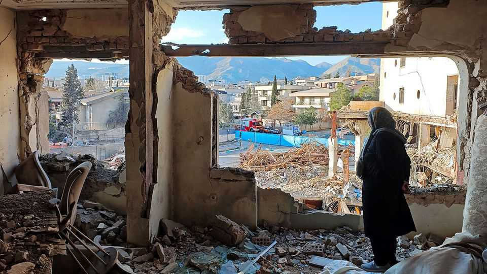
伊朗于今年早些时候席卷全国的示威活动期间处决了三名年轻人。据认为，这是首次对在动荡中被捕的示威者进行正式处决，更多类似案件预计还将发生。观察人士称此次审判是假审判。以色列宣布将在南部黎巴嫩建立由以色列军队驻守的安全区，以遏制真主党（Hezbollah）的活动。士兵炸毁了横跨利塔尼河（Litani river）的桥梁，该河位于以色列边境以北约20公里（12英里）处，以确保该区域安全。真主党得到伊朗支持，虽在2024年纸面上同意停火，但近期却再次向以色列发射导弹。许多观察人士认为，以色列现在将被视为南部地区的占领者。■
与此同时，伊朗大使被要求离开黎巴嫩，几天后黎巴嫩总理表示，伊朗革命卫队正指挥真主党在南部的行动。亚洲开发银行宣布向成员国提供财政支持计划，以缓解伊朗战争对经济的影响。斯里兰卡成为首个利用该计划的国家。菲律宾宣布进入全国能源紧急状态，该国几乎全部石油依赖海湾地区进口。总统费迪南德·马科斯称，政府为寻找新石油来源并采取措施确保经济稳定，一切选项都摆在桌面上。乍得在边境无人机袭击造成17人死亡后，向与苏丹接壤的边境增派更多部队。苏丹内战双方互相指责此次事件。■
乍得表示已准备应对任何进一步的侵略行为。俄罗斯对乌克兰发动了948架无人机袭击，这是自四年前冲突爆发以来，俄方在24小时内对乌克兰的最大规模攻击。乌克兰总统泽连斯基称，俄罗斯因美国与伊朗的冲突而更加肆无忌惮。与此同时，据报道，俄罗斯在波罗的海沿岸的普罗米斯克和乌斯季-卢加石油出口枢纽遭乌克兰无人机袭击后，已暂停运营。丹麦将面临数周的联盟谈判，因该国最近举行的大选结果不明确。首相梅特·弗雷德里ksen及其社会民主党获得最多选票，但未达到多数。她将尝试与左翼政党联盟组建政府，同时还需要中右翼政党支持。■
格陵兰成为竞选议题，但选民最关切的是移民与福利问题。意大利一项旨在对司法体系进行小幅调整的提案在公投中遭到选民强烈反对。该提案旨在分离法官与检察官的职业体系，并重组监督机构。右翼政府支持改革，声称此举将增强司法独立性。反对派则将此次投票演变为对总理乔治娅·梅洛尼（Giorgia Meloni）的公投，这是她自2022年上任以来遭遇的最大挫败。在法国，极右翼政党国民联盟（National Rally）的候选人赢得尼斯市长选举，尼斯是法国第五大城市，但该党未能拿下其重点目标城市马赛和土伦。■
社会党继续掌控巴黎市长职位，其候选人埃马纽埃尔·格里奥尔（Emmanuel Grégoire）击败了保守派前文化部长拉希达·达蒂（Rachida Dati）。在竞选期间，格里奥尔刻意与左翼激进派保持距离，后者正面临反犹太主义指控。比利时士兵开始在犹太社区区域巡逻，此前该国发生多起反犹袭击事件，包括列日（Liège）犹太教堂外的爆炸装置。伦敦两名男子因纵火烧毁犹太慈善机构运营的救护车被逮捕，车辆在戈尔德斯格林（Golders Green）——一个犹太人口密集区——被点燃。这些救护车服务于整个社区。萨拉·穆拉利（Sarah Mullally）被任命为坎特伯雷大主教，成为英格兰教会首位女性主教长，也是全球安立甘宗的礼仪性领袖。■
■英国广播公司（BBC）首次任命科技巨头出身人士担任总编辑，马特·布里廷（Matt Brittin）接替因被指BBC存在编辑偏见而辞职的蒂姆·戴维（Tim Davie）。布里廷曾任职谷歌高管，接任后将面临舆论压力，因戴维辞职与BBC对特朗普纪录片的剪辑争议有关。阿富汗塔利班政府本月早些时候释放一名被扣押逾一年的美国人， Dennis Coyle曾作为语言研究员居留该国，其家属称他未被指控任何罪名。美国国务院本月早些时候将阿富汗列为“不当拘押的国家支持者”，伊朗则在美对伊发动袭击前数周获相同标签。哥伦比亚一架载有128名乘客的军用飞机起飞时坠毁，至少69人遇难。
古斯塔沃·佩特罗总统似乎暗示“官僚问题”部分责任导致其改革武装部队计划受阻，但未明确事故具体原因。委内瑞拉临时总统德尔西·罗德里格兹（Delcy Rodríguez）重组军方高层，解除了曾与尼古拉斯·马杜罗（Nicolás Maduro）关系密切的国防部长职务。马杜罗于1月在美国行动中被推翻。新任国防部长古斯塔沃·冈萨雷斯·洛佩斯（Gustavo González López）曾领导马杜罗执政期间的情报部门，对社会主义政权保持忠诚。参议院确认马克韦恩·穆林（Markwayne Mullin）担任国土安全部长，国会继续就结束部门部分停摆的资金协议进行谈判。僵局导致机场安保人员薪资拖欠，引发人员短缺和机场排队现象。
移民与海关执法局官员被派往协助缓解混乱。民主党候选人赢得了佛罗里达州议会选区的特别选举，该选区包括唐纳德·特朗普位于棕榈滩的马阿拉歌庄园。就在两年前，共和党人曾以19个百分点的优势赢得该选区。这一选情变化凸显了民主党在11月中期选举前日益增强的竞争力。■
§002 Business：本周商业原题：Business：本周商业 · 板块：The world this week · 栏目：本周
石油价格因伊朗战争局势的演变而剧烈波动：在冲突可能使能源市场数月难以稳定化的担忧下价格大幅上涨，随后因和平谈判的传闻而回落。天然气价格，尤其是欧洲市场，同样剧烈震荡。随着投资者担忧能源价格上涨可能推高通胀，进而促使央行提高利率，政府债券收益率持续攀升。通常在动荡和高通胀时期被视为避险资产的黄金，自2月下旬战争爆发以来已从近期高点回落，现货价格下跌近20%。■
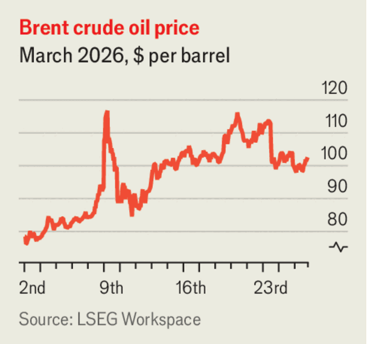
欧洲央行行长克里斯蒂娜·拉加德（Christine Lagarde）在演讲中表示，欧洲央行“准备在适当情况下于任何会议上调整政策”，市场解读为今年可能加息的信号。拉加德对《经济学人》表示，“伊朗战争已造成太多损害”，能源中断可能持续“多年”。法国能源巨头道达尔能源（TotalEnergies）与美国政府达成协议，放弃其在美国的海上风电许可，转而投资化石燃料生产。该公司将投资9.28亿美元用于德克萨斯州的液化天然气工厂以及传统石油和页岩油项目。作为交换，美国政府将报销道达尔能源取消两个风电项目的9.28亿美元。■
Total首席执行官帕特里克·普亚内表示：“海上风电项目的开发并不符合国家利益。”在一项具有里程碑意义的审判中，洛杉矶陪审团支持了一名20岁女性的诉求，她声称Meta和YouTube在她童年时期对其抑郁症产生了负面影响。陪审团认定，这两家公司存在疏忽，其平台被设计成对年轻人具有成瘾性。新墨西哥州的另一陪审团裁定，Meta未能保护儿童免受社交媒体有害影响，因此负有责任。OpenAI突然取消了其AI视频生成工具Sora，取消了一项价值10亿美元的与迪士尼的协议，该协议原本允许用户使用迪士尼角色创作内容。该初创公司刚刚发布了关于在Sora上安全发布内容的指南，包括针对青少年的保护措施。
达能，这家法国食品公司，通过以10亿欧元（约合12亿美元）收购Huel，扩充了其健身产品线。Huel生产代餐饮品、零食及营养补充剂，深受健身狂热者（"Hueligans"）喜爱。英国芯片设计公司Arm，软银持有其多数股份，发布了首款芯片，标志着其从单纯销售芯片设计业务的转型。其AGI CPU专为协调数据中心AI代理的大量任务而设计，能耗更低，承诺相比传统CPU可降低客户成本。其主要合作伙伴及首批客户为Meta，其他合作伙伴还包括OpenAI。经过八年谈判，澳大利亚与欧盟签署自由贸易协定，取消了大多数商品的关税，唯澳大利亚牛肉和羊肉仍面临配额限制。
澳大利亚农民团体批评了这项协议。与此同时，欧盟宣布与南美共同市场（Mercosur）国家的贸易协定将于5月1日暂行生效。阿根廷总统胡里奥·马里亚·米莱（Javier Milei）在经济数据公布后表示，其严厉的经济改革措施已初见成效，数据显示2025年阿根廷经济同比增长4.4%，结束了2023年和2024年的萎缩。央行对经济学家的调查预测，今年GDP将增长3.4%。埃隆·马斯克（Elon Musk）公布了雄心勃勃的计划，拟在德克萨斯州奥斯汀附近建设两家芯片工厂，一家用于生产汽车和机器人的芯片，另一家为太空中的AI数据中心提供芯片。名为“Terafab”的综合体将由特斯拉（Tesla）和太空探索技术公司（SpaceX）联合建设，但未公布具体开发时间表。■
此前，联邦陪审团裁定马斯克（Elon Musk）在2022年春季暗示不再有意收购推特（Twitter）时误导了投资者，导致其股价下跌。他随后于当年10月收购该公司并更名为X。美国国家航空航天局（NASA）对其阿尔忒弥斯月球计划进行了调整，放弃在月球轨道建造空间站的计划，转而将组件用于建设月球基地，该基地最终将使用核能。NASA局长杰雷德·艾萨克曼（Jared Isaacman）表示：“我们正专注于支持月球表面持续运营的基础设施。”NASA仍希望于2028年让宇航员登陆月球，SpaceX和蓝色起源（Blue Origin）正开发相关着陆器。中国计划于2030年前后将本国宇航员送上月球表面。■
§003 领导人原题：Advantage Iran · 板块：Leaders · 栏目：领导人
以他混乱的行事标准来看，唐纳德·特朗普刚刚在一场荒谬的对伊战争中度过了异常混乱的一周。总统曾威胁对伊朗民用能源设施实施迫近的惩罚性轰炸。尽管伊朗未显惧色，但市场却陷入恐慌。随后局势出现转折。特朗普称他已获悉秘密的和平谈判提议，因此暂时按兵不动。五角大楼随后表示将派遣部分第82空降师。这表明局势升级仍有可能。在如此不确定的背景下，伊朗政权似乎毫不畏惧。令人惊讶的是，伊朗如今在战略上已占据优势。确实，伊朗伊斯兰共和国遭受了重大打击。许多领导人和数百名平民已丧生。■
其防空系统已支离破碎；海军和导弹发射装置也基本消失。然而，政权依然存续。正如我们战争初期所警告的，政权的存续本身便算得上某种胜利。在国内，政权的控制力并未减弱，反而因美国和以色列的打击而进一步强化。强硬派革命卫队掌控局面，国内反对势力，无论是民族分离主义者还是城市抗议者，都异常沉寂。伊朗的高浓缩铀储备约400公斤，至今未被触动，可能仍埋在废墟之下。最引人注目的是，伊朗已对霍尔木兹海峡实施封锁，阻断海湾地区占全球供应量五分之一的油气出口。数十年来，美国军方一直在为这一显而易见的风险做准备。■
但这场战争已证明，伊朗不仅能扼住霍尔木兹海峡的咽喉，而且要解除其控制也极其艰难。伊朗通过导弹、廉价无人机甚至可能的水雷等非对称作战手段，成功遏制了超级大国的介入。与此同时，尽管其代理人力量较以往有所削弱，伊朗仍能在国际舞台上施展拳脚。由于也门胡塞武装（Houthis）暂时未向红海油轮发射导弹，部分沙特原油得以绕过霍尔木兹海峡，经海岸输送至全球市场。全球油价仍受到压制，但近期油价仍徘徊在每桶100美元左右。不过，胡塞武装可能因此被激励，要求诸如国际承认其对北也门控制权等高昂代价，以换取暂时克制。在伊拉克，亲伊朗的什叶派武装正转向对抗库尔德人（及美国人）。
真主党（哈马斯）作为伊朗在黎巴嫩的代理人，可能在以色列对本国发动攻击的背景下重新获得部分地方合法性，作为“抵抗组织”的身份。以色列试图占领的行动可能加剧这一冲突并巩固该组织的地位。在海湾地区，美国的盟友原本不希望战争爆发，但如今却担忧伤痕累累且强硬的伊朗可能成为比以往更大的威胁。他们的安全体系——包括防空系统和昂贵的拦截导弹——并不完善。经济似乎受制于伊朗的威胁。一种选择是全力支持美国参与战争。阿联酋警告不要与德黑兰进行对话，称伊朗正在该地区实施“经济恐怖主义”。沙特方面据称希望美国部署地面部队。以色列其实也并未比以前更安全。内塔尼亚胡对持续打击伊朗的行动感到欣喜若狂。
然而，伊朗导弹已突破以色列领空，造成平民伤亡。伊朗的核威胁尚未被根除。若无政权更迭，弹道导弹威胁将再度浮现，迫使以色列每数月便需对伊朗发动打击。对以色列而言最令人担忧的是，其与美国长期的盟友关系可能面临压力。这场战争在美国已失去多数民众支持。若伤亡人数攀升、油价飙升、股市下跌，美国人会将责任归咎于谁？已有部分美国共和党右翼人士将矛头指向以色列。尤其年轻选民对以色列的态度日益敌视，美国亲以游说团体正陷入困境。简而言之，尽管美国与以色列的军事攻势强大且精锐，伊朗却认为自己在特朗普面前占据上风。它已证明自己比美国更擅长施加痛苦并承受其后果。■
特朗普不可原谅地发动了这场战争，却未给出任何战略理由。尽管在战术上取得成功，并声称已推翻德黑兰政权，但他尚未在战斗中获得任何实质性的进展。随着政治代价不断累积，特朗普将面临日益增长的压力。他的选择要么升级冲突，要么展开谈判。他可能被戏剧性的升级所诱惑，通过打击伊朗的民用基础设施和石油产业，试图迫使伊朗重新开放霍尔木兹海峡。海军陆战队或许能占领霍尔木兹海峡附近的卡赫尔岛及其石油设施，夺取沿海部分领土或占据海峡内的岛屿。这或许能带来有限的军事收益，但这些冒险举动似乎都不具备决定性打击的潜力。伊朗仍可能从国内境内发射导弹和无人机，或尝试在海峡布设水雷。■
占领者将迅速沦为易受攻击的目标。特朗普渴望抹去1980年吉米·卡特在伊朗军事行动的回忆，却可能重蹈覆辙。将大量资源转移至该地区将削弱美国在其他地区的军事力量，尤其是亚洲。因此，更不坏的选择是寻求严肃谈判。巴基斯坦政府愿担任调解人。特朗普称已向伊朗提出15点计划，但德黑兰官员否认谈判正在进行。然而美国此前曾以蓄意欺骗方式展开谈判，将其作为发动攻击前的幌子。伊朗因此将持怀疑态度。因此特朗普必须同意全面停火，并迫使以色列遵守停火协议。关于重新开放海峡和引导伊朗远离核计划的谈判将异常艰难。■
任何最终达成的协议都将比战争爆发前可能达成的协议更糟糕，因为特朗普无意中增强了强硬派的力量，并明确展示了他们对海峡的影响力。结果是，至少目前来看，优势方是伊朗。 ■ 仅限订阅者：想了解我们每周封面的设计过程，请订阅我们的每周Cover Story通讯。
§004 欧洲在放松并购规则前应三思 Leaders | Mythbusting on trustbusting原题：Should think twice before weakening its merger rules · 板块：Leaders · 栏目：领导人
笼罩欧洲企业的阴霾日益浓厚。在全球舞台上，许多欧洲企业被美国科技巨头和中国工业巨头远远甩在身后。按市值计算，欧盟仅有三家位列全球前50的科技公司，其最大银行在全球排名仅第16位。为驱散这种低迷情绪，一些人认为欧盟的严格竞争政策亟需更新。欧洲委员会（European Commission）即将发布的新版指南预计会更加宽松。鼓励企业扩大规模是值得称赞的目标，但削弱竞争政策无法实现这一目标。
关于欧洲竞争政策目的的争论与欧洲项目本身一样悠久。占据主导地位的原则性观点认为，强有力的竞争政策通过确保任何企业都无法占据其市场的主导地位，从而服务于消费者、经济增长和创新。更具政治性的观点则认为，竞争政策应服务于更广泛的目标，包括国家安全和产业政策。随着政策制定者寻求为欧洲应对更加严峻的地缘政治局势做准备，政治性观点日益受到青睐。前意大利总理马里奥·德拉吉在其有影响力的报告中指出，竞争政策需要调整以支持创新并保障供应链安全。
欧盟委员会主席乌苏拉·冯·德·莱恩进一步提出，应培育“欧洲冠军企业”，并推动“反映全球市场现实而非仅欧洲市场的并购指南”。放松竞争政策是不明智的。欧洲大型企业面临的障碍并非并购规则，而是地方保护主义政客和多种其他监管壁垒，银行业、电信业和国防领域均印证了这一点。以银行业为例，缺乏大型跨国银行并非因反垄断机构的限制。银行业仍是国家层面的市场，地方监管机构阻止银行在母公司与其海外子公司之间顺畅转移资本和流动性。目前仍不存在统一的存款保险机制。
政治家们对本国的“行业巨头”极为保护，正如意大利意联银行试图收购德国德意志商业银行的尝试所显示的那样。德国政府反对这笔合并，称此举将削弱对中型企业的资金支持。电信行业也并非真正一体化的市场，频谱拍卖主要由各国自行开展，安全监管、应急服务等规则亦多属国家管辖。欧盟范围内超过270个监管机构负责数字网络的管理。只要法国消费者难以从爱沙尼亚服务商处便捷购买服务，合并案就可能增强市场支配地位并推高价格。国防领域同样存在碎片化现象，尽管竞争政策已有所放宽。主要原因是各国政府希望对本国国防产业保持严格管控。■
更多泛欧洲采购和初创企业的适度竞争将更有力地推动创新与整合。每个案例都表明，阻碍规模扩大的并非竞争政策，而是单一市场尚未完全整合。事实上，在市场充分整合的领域，欧洲企业已取得世界级成果。试想阿斯麦（ASML）几乎垄断全球最重要的芯片制造设备，或Spotify、思爱普（SAP）等企业能与全球巨头抗衡。欧洲制药业则是由研究机构、中小型新兴企业和大型企业共同构成的丰富生态系统。而跨境整合金融服务和数字服务则远比放宽合并规则更具挑战性，很大程度上因为这意味着鼓励各国政府放松管控。■
如果欧洲真想在全球舞台上竞争，唯有苦干是唯一的出路。■ 订阅《经济学人》的读者可注册我们的Opinion电子简报，汇集了我们的最佳社论、专栏文章、读者来稿及读者来信。
§005 能源救助的反对之声 领导人原题：The case against energy bail-outs · 板块：Leaders · 栏目：领导人
近年来每当危机爆发，富裕国家的政界人士总是迅速转向救助措施。在新冠疫情和2022年俄罗斯入侵乌克兰引发的能源危机期间，各国政府纷纷动用财政资金，采取强力干预手段，以减轻对家庭和企业的冲击。如今，由伊朗战争引发的能源危机再次让油价和液化天然气（LNG）价格飙升，情况亦然。 ■
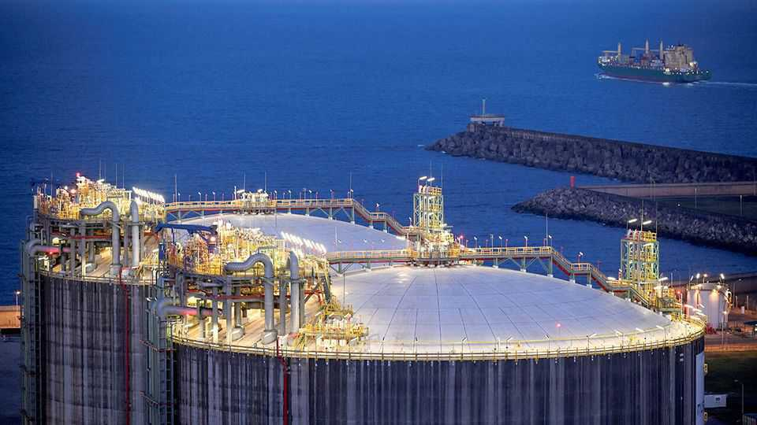
西班牙大幅削减燃油和家庭用电的增值税，意大利降低汽油消费税，韩国对加油站油价设限，日本则增加补贴以限制涨价。英国政府正考虑为领取福利的民众补贴能源账单，并承诺打击“牟取暴利”。即便在能源供应充足的美国，民主党也呼吁对石油公司征收暴利税，所得资金将用于家庭。此类干预措施弊大于利。高油价和丰厚利润会引导消费者节约能源，同时激励生产商寻找并出售更多能源。正如2022年能源危机所显示的，干扰这些信号可能伤害全球最贫困人群。从数学上讲，任何政府都无法让所有消费者免受能源短缺影响。■
只要霍尔木兹海峡保持关闭，全球就损失了15%的石油供应；再加上卡塔尔设施受损，全球液化天然气（LNG）供应量减少了约五分之一。任何补贴都无法恢复这一局面。全球能源消费必须下降。因此，补贴的效果是迫使其他国家进行调整。2022年欧洲失去大部分俄罗斯天然气供应后，许多欧洲国家在两年内花费超过GDP的2.5%用于补贴。这些干预措施显得笨拙。在富裕国家整体来看，超过半数资金用于抵消价格机制，约四分之三的补贴未定向发放，反而惠及能源消费最多的富裕家庭。欧洲本就注定会转向LNG，但补贴加剧了全球能源紧张。随着欧洲LNG进口量增长65%，南亚地区却下降了16%。■
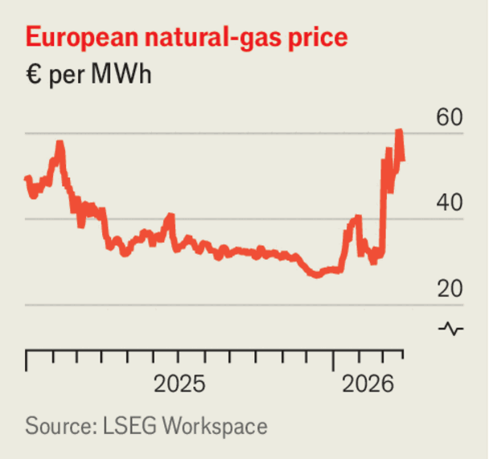
巴基斯坦和孟加拉国正经历停电和贫困加深，重蹈覆辙既令人羞耻又代价高昂。2022年欧洲的干预措施当时看似成本低廉，因为利率和债券收益率年初接近零。如今债务成本大幅攀升，战争导致债券价格暴跌，尤其是天然气依赖型国家。英国如今需支付近5%的利率借入十年期资金，比莉兹·特拉斯时期高约半个百分点。增加借贷补贴能源将消耗有限的财政空间，同时刺激经济可能使央行控制通胀难度加大，进一步扰乱债券市场。监管干预不需耗费资金，但同样可能适得其反。■
对未受冲突影响的能源供应商（包括可再生能源企业）而言，享有高利润是可取的，因为这有助于保障能源供应的稳定性。"暴利税"还有一个令人不快的特性，即往往难以撤销。英国在2022年从未取消其对北海油气利润征收的额外税项，该税项将边际税率推高至惩罚性的78%。当时若降低税率以促进能源安全会更明智。除了避免重蹈覆辙，政府还应采取哪些措施？他们可以暂时通过福利体系增加对贫困家庭的现金补贴，同时保持能源价格不变，从而维持节约能源的激励。2022年一些国家采取了更为精准的干预措施：德国提供与能源使用量挂钩的现金支持。■
类似原则也可应用于国际层面，以确保援助精准投向全球最贫困国家。上世纪70年代能源危机期间，国际货币基金组织（IMF）曾为受冲击最严重的国家提供额外国际收支支持，减轻了这些贫困国家的利息负担。如今IMF可能不得不采取现代版的类似措施，正如它在2022-24年高粮价和化肥价格时期为受冲击国家设立了专门贷款计划。长期挑战已然清晰：各国需逐步摆脱对不可靠能源来源的依赖，理想情况下还需减少化石燃料的使用。若政府继续盲目承担现有体系的成本，同时限制对更可持续替代方案的激励，这种转型将无异于幻想。■
《经济学人》的订阅者可订阅我们的Opinion电子简报，该简报汇集了我们最佳的社论、专栏、嘉宾文章和读者来信。■
§006 墨西哥必须释放私营部门活力原题：Mexico must unleash its private sector · 板块：Leaders · 栏目：领导人
领导者 | 停止贫困化 墨西哥必须释放私营部门活力 克劳迪娅·希纳布姆（Claudia Sheinbaum）面临的最大问题是投资不足和增长乏力，而非唐纳德·特朗普（Donald Trump） 墨西哥本应繁荣发展。它受益于美中紧张关系：美国企业依赖的供应链“近岸化”（nearshoring）意味着北美地区工厂建设加速。墨西哥已成为美国最大贸易伙伴。它通过与加拿大共享的自由贸易区部分规避了特朗普总统的关税政策。高科技产品贸易蓬勃发展。去年外国直接投资增长，而其他新兴市场却出现下滑。然而经济却蹒跚前行，而非疾驰前进。
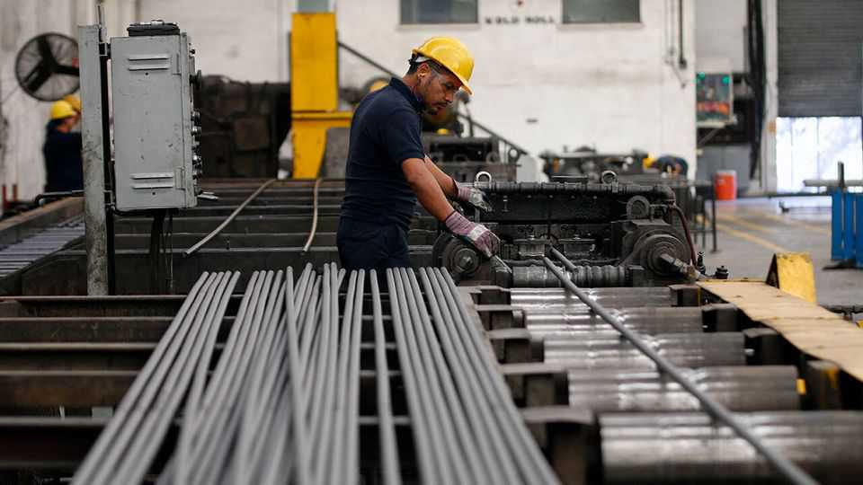
在过去的二十年里，墨西哥的国内生产总值（GDP）年均增长率仅为2%，但2025年仅增长了0.8%，创下多年来的最低增速（除新冠疫情外）。人均收入已回落至2017年的水平。国内投资持续萎缩。将责任归咎于特朗普并不奏效。他施加的新关税确实不利。他持续抨击自己在任期内谈判的《美墨加协定》（USMCA），而该协定目前正接受正式审查，这令人不安。但这位美国总统并非墨西哥最大的难题。事实上，去年出口增长了7.6%，使墨西哥自2020年以来首次实现贸易顺差。该国最严重的问题是国内的——且是自作自受。自2018年执政以来，执政党MORENA推动的宪法改革正在积极削弱经济。■
法官必须由选举产生，这加剧了法律上的不确定性。独立监管机构要么被颠覆，要么被彻底废除。政府已牢固掌控能源体系，即便政府债务高企，仍将急需的私人资本拒之门外。政府未推进税制改革，而是对大企业进行勒索以筹集更多资金。所有这些都在长期存在的犯罪和安全问题上雪上加霜，而这些问题源于猖獗的贩毒集团。这并非危机。墨西哥拥有稳健的货币政策，实行浮动汇率并拥有受尊重且独立的央行。但经济面临更慢性的问题：低增长。值得肯定的是，2024年上任的总统克劳迪娅·希内姆深知这一点。她的六年战略“墨西哥计划”将低投资视为经济面临的最大问题。■
文中包含一些有益的构想，例如对研发、培训和投资提供税收优惠。但若要真正重振疲软的经济，她需要将精力集中于制约国家发展的根本问题。其中最重要的是非正式经济的规模。超过一半的墨西哥劳动者从事非正式经济活动，这一比例数十年来未发生改变。账外经营的雇主往往不愿投资其业务，导致企业技术落后、效率低下。要实现长期投资增长，需要更多劳动者加入正规部门。为此，希内姆博姆应取消基于薪金税的双轨制社会保障体系，该体系抑制正规就业。她应将其替换为以消费税为资金来源的全民社会保障体系。■
配合更宽松的监管和更简化的税制，这将有助于可投资的正规部门扩大，进而推动经济增长。然而，电力系统存在结构性缺陷也制约了增长。Morena（墨西哥国家复兴运动党）通过修宪强化了政府对能源等领域的主导地位，但政府缺乏资金投入。如今该党开始调整政策，允许私营企业以少数股权参与国有能源项目，这是积极的开端。但谢因鲍姆女士应更进一步，政府应突破党派路线，允许私人投资者自主推进能源项目。Morena——由创始人安德烈斯·曼努埃尔·洛佩斯·奥夫拉多尔创立，现由其得意门徒谢因鲍姆领导——已展现出愿意为实现党派目标而修改墨西哥宪法的意愿。■
通过此举，她赢得了广泛民众支持，成为当今民主世界中最强大的左翼政党之一。希内布姆女士（Sheinbaum）仍有时间运用这份力量帮助民众实现富裕。若她未能如此，墨西哥将注定继续艰难前行。浪费的潜力也是一种贫困形式。■ 订阅《经济学人》的读者可注册我们的Opinion通讯，汇集本刊最佳评论、专栏文章、特邀评论及读者来信。
§007 英国展示如何替代农业补贴原题：England has shown the world how to replace farm subsidies · 板块：Leaders · 栏目：领导人
农民们普遍认为，邻居们或许能做得更好，尽管这一观点通常被私下提及。也许他们播种小麦过早，或未能有效清除杂草。这种竞争精神或许也可应用于整个国家。一些国家的农业政策优于其他国家，浪费更少公共资金，同时提升生产率胜过污染。令人惊讶的是，英国已赢得俯视他国的资格。脱欧派曾声称脱离欧盟将带来更优政策，但多数情况下他们错了——但在农业领域，他们却正确了。
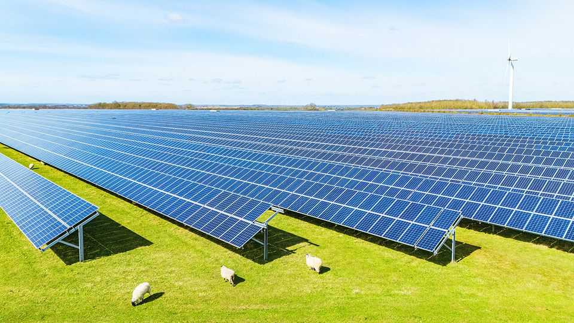
根据欧盟共同农业政策，英国主要按每公顷向农民发放补贴。北爱尔兰、苏格兰和威尔士仍大量采用这种做法。但英格兰则因其独特的农业政策（如同其独特的教育政策），毫不留情地削减此类补贴。这些补贴将在明年完全取消。如今，英格兰农民若想获得公共资金，必须选择能提供公共产品的活动，例如建立田埂或种植昆虫与鸟类的食物。某些活动如土壤监测，每公顷仅支付几英镑；其他活动则价值更高。这类“农业环境”计划在英格兰及其他地区早已存在多年。但英格兰的特殊之处在于，几乎将所有农场补贴转向此类计划。在欧盟范围内，仅有四分之一的农场补贴用于此类计划。
尽管目前尚无法确定英国的政策是提升了生物多样性还是减少了农业温室气体排放，但初步迹象令人鼓舞。牲畜数量下降，植树造林增加，更多土地被撂荒。食品产量的下降可能微乎其微。农民们似乎大多将最不适合耕作的土地纳入生态补偿计划——沼泽地、坡地和难以驾驶拖拉机的田角。担心他们无法应对补贴减少的忧虑已被证伪。英格兰约10万名农民中，仅有1200人领取政府补贴退出农业，其中部分人原本就打算退出。利润保持稳定，尽管部分原因在于俄罗斯入侵了主要谷物生产国。■
农民不仅学会了申请环境补贴，还更有效地利用土地和建筑。他们将农田出租给太阳能发电企业，将农舍出租给度假游客。取消每公顷补贴使农业变得更加困难和风险更高，这或许解释了为何土地市场趋于冷却。自2016年脱欧公投以来，英格兰普通耕地价格上涨了12%。在较晚放弃每公顷补贴的苏格兰和威尔士，土地价格分别上涨了46%和33%。因此，英格兰的优秀农民应更容易扩大经营规模或首次购置土地。该计划可以更激进一些。政府除了资助环保活动外，还可明确列出期望成果，例如某地区鸟类数量增加或洪水减少，然后邀请农民竞标实现这些目标。
执政的工党做出了一些颇为奇特的决策，例如对每家农场的环境补贴金额设限。这一举措看似符合该党一贯对大土地所有者持敌意的立场，但从生态学角度看却毫无意义。一朵花对蜜蜂的吸引力并不会因它生长在大庄园还是小农场而有所差异。政策总能不断改进。英格兰的成就在于以高速度将农民纳入新的环境激励体系，且几乎未引发强烈反对声浪。尽管愤怒的农民驾驶拖拉机前往威斯敏斯特，但他们抗议的其实是继承税改革，而非补贴削减。更激进的政策仍有空间。新西兰在1980年代废除了农业补贴，将其替换为零。最终却发展出一个创新且市场导向的农业产业。■
但新西兰同样需要控制农业，尤其是因为其奶牛会大量排放改变气候的甲烷。由于缺乏诱因，新西兰正陷入困境。英国更为温和的应对方式或许更具成效。■ The Economist订阅者可注册我们的Opinion电子报，汇集了最佳的社论、专栏、特稿及读者来信。
§008 霍尔木兹并非全球贸易的唯一薄弱环节 | 简报原题：Hormuz is not the only weak spot for global trade · 板块：Briefing · 栏目：简报
多条航运路线存在风险，从马六甲海峡到巴拿马运河。
“五把战略钥匙掌控世界！”维多利亚时代的海军上将杰基·费舍尔爵士曾如此宣称。他指的是掌控关键航道的地点：新加坡、开普敦、亚历山大港、直布罗陀和多佛。
如今，你肯定会将这个小岛霍尔木兹和以它命名的海峡加入名单。
伊朗已将钥匙插入这条狭窄的航道——海湾唯一的海上通道，锁定了全球五分之一的石油和液化天然气。
全球各国经济都感到不安。而按多数标准衡量，霍尔木兹海峡甚至不是世界上最关键的海上通道。
■
旧有关注点——维护贸易流通——突然再次显得切中要害。“许多人将意识到海上贸易价值巨大，必须加以保护，”美国智库“海上战略中心”（Centre for Maritime Strategy）的史蒂文·威尔斯表示。即便在管道、卡车、火车和货运飞机纵横交错的世界里，船舶仍承担着全球约85%的出口货物运输量（按体积计算），据航运经纪公司克拉克森（Clarksons）统计（按价值计算则为55%，因通过空运的手机或金条价值远高于散货船中的一块煤炭）。这种贸易正面临新的威胁。一方面，廉价技术正使武装组织的活动范围扩展至更远的海域。穿越曼德海峡（Bab al-Mandab Strait）连接亚洲与欧洲的商船，长期以来都需与索马里海盗周旋。
从2023年到2025年，他们还面临着也门胡塞武装发射的无人机和导弹的威胁。许多人仍选择绕道非洲以避免这种风险。曾有9%的世界贸易经由此海峡通行，如今仅占4%，若胡塞武装重开攻击以支持伊朗，这一比例还将进一步下降。另一个威胁来自战争蔓延至周边海域。俄罗斯入侵乌克兰严重扰乱了黑海地区粮食、石油等关键商品的运输，凸显了控制博斯普鲁斯海峡和达达尼尔海峡对土耳其的地缘政治影响力。如今，美国与以色列对伊朗的战争正在海湾地区造成更大混乱。■
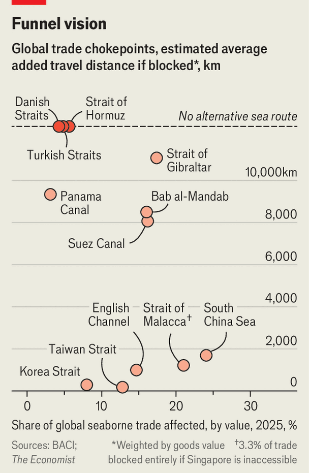
最严重的后果将是美中之间的冲突，或许围绕台湾展开，可能涉及封锁和无限制攻击航运，类似一战和二战期间的情形。美国潜艇近期击沉一艘伊朗军舰——这是自1945年以来美国首次实施此类攻击。另一因素是气候变化的影响。近年来干旱导致巴拿马运河可通行船只数量多次受限，迫使部分船只绕行合恩角。冰盖消融可能开辟新的北极航线，提升偏远关键节点如白令海峡的战略重要性。美国扩张主义总统特朗普曾以保护美洲周边航道为由，主张掌控巴拿马运河和格陵兰。■
即便霍尔木兹海峡（Strait of Hormuz） somehow 重新开放，全球海上贸易的数十处关键咽喉仍将受到重新审视。海洋咽喉要道的重要性自古以来便显而易见。公元前5世纪伯罗奔尼撒战争期间，斯巴达夺取达达尼尔海峡（Dardanelles），阻断黑海粮食运输，迫使饥饿的雅典投降。第一次世界大战期间，英国及其盟友试图夺取达达尼尔海峡以击败奥斯曼帝国，但加里波利战役（Gallipoli campaign）却以惨重代价告终。过去四周的教训表明，即便在飞机、导弹和卫星时代，地理因素仍至关重要。世界部分关键咽喉要道控制着亚洲工厂向全球输送原材料及成品的海上通道，包括台湾海峡和马六甲海峡。■
其他海峡则向欧洲供应物资，包括直布罗陀海峡、英吉利海峡以及丹麦附近的卡特加特海峡、斯卡格拉克海峡和厄勒海峡，这些海峡连接着波罗的海与北海。苏伊士运河和巴拿马运河是如此重要的捷径，以至于人们不惜跨越大陆建造它们。霍尔木兹海峡为亚洲和欧洲提供能源，它并非世界上最繁忙或最富油的咽喉要道——马六甲海峡才拥有这两个头衔（见地图）。但霍尔木兹海峡是海湾唯一的进出通道，因此其关闭会造成特别严重的干扰。丹麦和土耳其的海峡同样是通往更广阔海域的唯一通道。即便船只能找到绕行路线，关键航道的关闭仍可能使航程增加数千英里并延长数周。■
为评估这种脆弱性的规模，《经济学人》计算了41,387对港口之间的最优航线，并大致估算每条航线的贸易量。随后我们模拟了若任何关键咽喉要道中断，航线将如何变化。结果令人震惊。即便马六甲海峡（Strait of Malacca）每天通行的货轮数量庞大，若其关闭，只需小幅绕行即可应对。然而若印尼群岛（Indonesian archipelago）所有通道被封锁——例如某政府在美中战争中偏袒一方——则大量货轮将不得不采取巨大的绕行路线。若直布罗陀（Gibraltar）变得无法通行，几乎同样比例的海上货运也将需要更大幅度的绕行（见图表）。■
想象一艘集装箱船绕行全球，为世界主要港口提供服务——例如从洛杉矶出发，依次停靠东京、釜山、上海、新加坡、迪拜、鹿特丹和纽约，最终返回洛杉矶。它将穿越世界多个咽喉要道（其中一些要道会经过两次）。这艘全球航行系统中最易引发冲突的区域位于中东。地质构造赋予海湾地区丰富的油气资源，阿拉伯板块在欧亚板块之下挤压变形。历史则增添了地缘政治的动荡：奥斯曼帝国的解体、阿拉伯国家的政局不稳、以巴冲突、伊斯兰极端主义等。这些因素催生了战争、叛乱和激烈的外部干预。苏伊士运河曾因阿拉伯-以色列敌对关系而长期堵塞。■
自1979年以来，伊朗由一个激进的神权政权统治，掌控霍尔木兹海峡北岸，并多次引发海湾危机。多数从海湾出发的油轮会继续前往马六甲海峡。2003年时任中国国家主席胡锦涛曾担忧“马六甲困境”——中国80%的石油进口需经该海峡运输，存在脆弱性。他称“某些大国一贯干涉并试图控制海峡航运通道”，暗指美国可能试图封锁中国。但中国更广泛的担忧在于，其海岸线被从印尼至日本的群岛国家包围，这些国家中部分可能对中国构成威胁。在这道屏障中央，另一个潜在的热点地区是台湾。
中国将拥有全球约90%最先进半导体制造能力的自治岛屿视为其领土的一部分。中国现任总统习近平已下令其武装部队于2027年前做好收复该岛的准备，部队定期演练对台实施封锁与登陆作战。美国战略界则在思考如何应对中国封锁以保护台湾。霍尔木兹海峡的关闭使这些情景突然显得更具现实可能性。为降低风险，中国正快速建设远洋海军，其舰艇数量已超过美国。中国正学习在更远海域行动，尤其以航母为核心。澳大利亚、日本与菲律宾则在强化防御并日益深化合作。■
中国也在为能源开辟新的供应路线，包括通往俄罗斯和中亚的油气管道，以及经缅甸通往孟加拉湾的路线，绕开马六甲海峡。自2012年习近平掌权以来，"一带一路"倡议已投资建设覆盖全球的物流网络，包括位于海上咽喉要道的港口，有担忧认为这些设施未来可能被用于军事目的。自2013年起，中国已将南海多个争议岛礁和珊瑚礁改造成军事基地。2017年，中国在吉布提设立首个海外军事基地（官方称用于支持反海盗巡逻）。同时，中国还在试验沿俄罗斯北部海岸的北极航运路线。这些举措能多大程度缓解中国的脆弱性尚不明确。■
■ 中国日益增长的担忧体现在两个方面：一是政府机构近期委托研究“国际海运咽喉要道”的风险；二是多位公众人物呼吁采取更有力行动应对威胁。中国电力企业联合会代表电力行业的徐耀强（Xu Yaoqiang）指出，伊朗战争凸显了潜在危险。他在《人民日报》撰文称：“这些航道狭窄、易被封锁和监控，战时极易受外部势力控制。”他建议中国应放弃和平时期思维，加快向巴基斯坦等地建设输油管道，并“发展远海护航和应急支援能力”。其他人则建议采取有限的海外军事行动捍卫中国利益，但不效仿美国的“霸权主义”。
印度尼西亚、马来西亚、新加坡和泰国在联合巡逻马六甲海峡以遏制海盗活动，尽管彼此间存在历史积怨和关于海峡主权地位的潜在紧张关系，因此合作态度谨慎。在冲突中他们可能采取的行动，一直是各方争论的焦点。他们大概无法阻止中国或美国试图封锁主要航道——马六甲、巽他和龙目海峡。是否有人会选边站队？中国在东南亚已有柬埔寨、缅甸等多个准盟友，正渴望扩大这一名单。但该地区多数国家对其日益增长的影响力感到担忧。美国则寄望于印度以牵制中国，例如协助追踪中国船只和潜艇离开马六甲海峡。印度近年来与美国和以色列关系日益密切，但同样对这场战争及其引发的能源冲击感到不安。■
印度或许仍有机会重拾旧日盟友。它与俄罗斯保持密切关系以牵制中国，与伊朗友好以平衡巴基斯坦，美国曾对其实施制裁（部分已解除）。印度投资伊朗查巴尔港以获得中亚通道，其商船是伊朗允许从海湾外运的少数船只。更西边，欧洲正协助乌克兰抵御俄军。当欧盟抵制经管道输往俄罗斯的石油和天然气时，克里姆林宫将供应转向亚洲货轮，常以折扣价出售。然而，俄罗斯必须穿越由北约国家控制的多个瓶颈，尤其是土耳其海峡（占其原油出口的20%）和丹麦海峡（占35%）。其“幽灵舰队”中部分伪装旗船已被欧洲国家扣押。■
当俄罗斯封锁敖德萨等乌克兰黑海港口时，乌克兰的粮食出口几乎停滞。全球粮价随之飙升，直到乌克兰建立安全航运通道后才有所缓解。然而商船仍频遭袭击，水雷威胁所有船只。与此同时，土耳其关闭博斯普鲁斯海峡军事船只通道，导致俄罗斯无法增援其黑海舰队，而乌克兰已对俄舰队造成重创。土耳其总统埃尔多安（Recep Tayyip Erdogan）可能重启一项旧计划：开凿新运河——伊斯坦布尔运河（Kanal Istanbul），以缓解博斯普鲁斯海峡的拥堵。一个关键问题是该运河是否受1936年《蒙特勒公约》约束，该公约规范海峡的商业与军事航运。与此同时，波罗的海因瑞典和芬兰加入北约，已几乎成为北约的湖泊。
然而，这并未阻止对海底基础设施的攻击，包括天然气管道和通讯电缆，可能由乌克兰和俄罗斯双方实施。在大西洋另一侧，巴拿马运河的交通量虽仅占全球海运贸易的3%，却凸显其战略意义。该运河使美国海军得以在大西洋与太平洋之间调动舰船，并处理约40%的美国集装箱运输。特朗普抱怨美国当初不该将巴拿马运河的完全控制权交给巴拿马，尤其因为巴拿马政府允许一家注册于中国领土香港的公司运营运河两端的港口。美国近期施压促使巴拿马当局改变决定，将港口交由两家欧洲公司运营。总统何塞·拉乌尔·穆利诺称危机已结束，但中国承诺将让巴拿马付出“沉重的政治和经济代价”。■
与此同时，尼加拉瓜则梦想着建设一条竞争对手的运河。许多国家将加强努力以应对自身的脆弱性，无论是通过多元化供应商、建设新基础设施，还是采用可再生能源等替代技术。但这些计划至少需要数年，甚至数十年才能见效。如果战争持续，世界将不得不在一段时间内依赖全球物流网络的适应能力。当胡塞武装阻碍苏伊士运河通行时，航运公司迅速转向绕行非洲的航线。当时全球航运供过于求，且大多数商品的运输成本在总价格中占比相对较低，因此额外费用是可以承受的。同样地，食品和药品已经开始通过陆路从红海的吉达、阿曼湾的富查伊拉，甚至遥远的土耳其运往海湾地区。■
但此类替代方案的卡车、公路和管道运力有限。数据公司Xeneta的彼得·桑德（Peter Sand）称，富查伊拉（Fujairah）已出现30公里的交通堵塞。更严重的是，如此多原油的滞留导致船舶燃油价格翻倍，运营商将成本转嫁给客户。卫星数据显示，全球船队3月航速降低了2%，推测是为了节省燃料。约300艘油轮被困在海湾或正前往其他目的地。最大型油轮的租用费用已从战前约9万美元/天飙升至约23万美元/天。若太多油轮追逐太少原油，价格可能回落。汇丰银行（HSBC）在报告中指出，海峡关闭意味着“替代装载区域可能出现产能过剩”。■
这种剧烈波动是世界咽喉要道动荡的必然产物。航运公司本质上是保守型企业。即便能获得保险，大型公司也不愿因将船只置于危险中而招致客户或投资者的不满；而小型公司船只数量有限，无法承担任何损失的风险。此外，许多船员的合同允许他们在战区拒绝工作。因此，只需些许因素便足以引发重大混乱。许多国家都希望自由航行原则——这一在过去一个多世纪里基本占据主导地位的外交原则——能够延续。19世纪美国海军战略家阿尔弗雷德·塞耶·马汉（Alfred Thayer Mahan）曾将海洋视为“四通八达的公共通道”，他认为全球霸权源于对海洋的掌控，美国海军应致力于保护本国商船。
事实上，美国历史上首次对外战争发生在1801年，目的是保护美国商船免受当时利比亚（Libya）统治者的掠夺。特朗普于11月发布的国家安全战略强调了“在所有关键航道上维护航行自由”的重要性。然而，一位“美国优先”总统可能会倾向于推卸全球责任。在对伊朗的反复无常政策中，他曾一度表现出准备宣布胜利并让霍尔木兹海峡由他人处理的迹象：“我们并不使用它。你知道，到了某个时候它会自行开放。”对霍尔木兹海峡这样的关键航道表现出的漫不经心态度，显然不利于其他航道的安全。■
§009 重新开放霍尔木兹海峡的战斗会是什么样子原题：What a battle to reopen the Strait of Hormuz would look like · 板块：Briefing · 栏目：简报
唐纳德·特朗普称他正与伊朗领导人就结束轰炸行动进行磋商；伊朗则表示他并未这样做。但可以肯定的是，特朗普正在为谈判无果而采取替代方案做准备。两支美国海军陆战队两栖部队正前往海湾地区，一支来自日本，另一支来自加利福尼亚。据报道，一支专精空降突击的精锐步兵师也将随后抵达。部队的部署表明，美国总统正考虑通过武力手段强行打开霍尔木兹海峡。这是一项艰巨的任务。
■
自“雷霆怒火行动”（Operation Epic Fury）启动以来，伊朗持续威胁霍尔木兹海峡，导致约20%的全球石油和液化天然气出口受阻，其他关键货物运输也受到影响。十九艘商船在波斯湾、海峡内部及周边海域遭袭击，海峡航运已大幅放缓，主要为与伊朗相关的船只。这引发商品市场剧烈波动，金融市场整体动荡。美国国防部似乎制定了三阶段计划以重新开通海峡。第一阶段旨在打击威胁海峡航运的伊朗军事资产——包括快艇、导弹、无人机和水雷（伊朗海军舰艇和潜艇似乎已被摧毁）。主要打击力量为军用飞机，但可能很快会动用地面部队。第二阶段将对海峡进行扫雷作业。
最后，一旦伊朗威胁航运的能力被大幅削弱，美国海军将开始护航油轮通过霍尔木兹海峡。每阶段可能耗时数周，对美军构成重大风险。伊朗拥有多种攻击船只的手段。导弹和无人机可从空中发起袭击。载有导弹和炸药的快艇可成群结队地攻击船只或直接冲撞。水下则可能潜伏着各种水雷。此外，用于此类袭击的士兵和装备分散隐藏在海岸线数百公里范围内众多海湾、洞穴和地下隧道中。这使得仅靠空中力量难以发现并摧毁它们。近日，美军战机已对伊朗海岸展开猛烈轰炸。■
3月19日，美国最高军衔军官丹·凯恩表示，战斗机已投下5000磅炸弹穿透多层岩石和混凝土，摧毁储存反舰导弹的地堡。美国还派遣直升机和低空突防攻击机，如A-10“疣猪”（本质上是架飞行机枪），对伊朗快艇进行扫射。美军称已摧毁或击沉超过120艘伊朗海军舰艇和44艘布雷舰。"美国目前的行动就是对可能藏匿这些武器系统的洞穴、建筑和车库进行轰炸，"华盛顿智库胡德森研究所的布莱恩·克拉克表示，"但要彻底消除所有潜在威胁难度很大。"一种正在获得支持的思路是，在附近岛屿部署特种部队或海军陆战队，以发现并摧毁藏匿在崎岖地形中的目标。■
据称，伊朗军方正在考虑夺取霍尔岛——伊朗主要的石油出口终端——或三座位于霍尔岛附近、被阿联酋声称主权的岛屿。战略与国际研究中心的马克·坎西安指出，这些部队在搜寻威胁的同时，还可部署短程防空系统以保护航运。但部署部队风险极高。这些部队将处于伊朗火炮射程内，更不用说无人机威胁。此外，部队还需补给，这将使更多飞机和舰船暴露于危险之中。其存在可能带来的益处也十分有限。伊朗的沙赫德-136无人机可飞行超过1500公里，因此几乎可以从伊朗全境打击海峡或海湾任何区域。清除水雷同样充满风险。■
关于伊朗是否已部署任何水雷的报道存在分歧，但航运公司自然不愿冒险。战争爆发前，伊朗被估计已囤积约6000枚不同类型的水雷。其中包括悬停在水面下、被船只撞击时引爆的锚定水雷，以及更为先进的海底水雷，它们通过船只的磁性或声学特征被触发。尽管美国已击沉了伊朗的许多布雷舰艇，但商用或渔船也可被用作替代手段。“任何船只都可以成为布雷舰，”前海军上将詹姆斯·福戈指出。美国海军长期忽视水雷战。今年1月，恰逢其时，它淘汰了部署在该地区的最后一艘阿芬伯格级扫雷舰。■
有三艘替代舰船，其中两艘是配备扫雷设备的近海战斗舰，目前并不在海湾，必须从亚洲出发前往。抵达后，它们可以部署配备空中探测系统的直升机和水下无人机，这些设备既能搜寻也能解除水雷。不过，这些系统尚未在实战中使用，并在测试中遭遇了一系列技术故障。克拉克先生估计，清理海峡可能需要一周到三周的时间。他补充道，官员们最终不得不“拔掉创口贴”，即在无法完全确认所有威胁已被清除的情况下开始护航行动。护送油轮通过狭窄海峡将是此次行动中最复杂且危险的阶段，甚至可能成为一场无尽的持久战。■
护航舰队将需要数十架无人机、攻击直升机和战斗机在头顶盘旋警戒，以及预警和控制飞机以探测来袭导弹和无人机。军舰将使用短程火炮或电子战系统拦截来袭无人机，并动用更昂贵且更稀缺的拦截导弹应对导弹威胁。海事专家认为，鉴于油轮在海峡中近距离航行的特性，海军每两艘油轮可能需要一艘驱逐舰护航。目前该地区共有14艘驱逐舰，但其中六艘正用于保护航空母舰。向海湾增派更多驱逐舰可能需要数周时间，同时还会进一步抽调美国在亚洲等其他地区的力量。尽管美国盟友可能愿意提供帮助，但多数国家在战争仍在进行中时仍不愿派遣舰船。■
无论由谁执行，此类任务都将极其昂贵，并进一步消耗美国及其盟友日益枯竭的导弹防御弹药储备。海峡的地理环境也带来了诸多挑战。该海峡最窄处仅50公里宽，且被群山环绕，因此美军舰艇将仅有有限的时间来探测并拦截来袭导弹和无人机。它们还需在强流中执行复杂机动，以保持与护航舰艇的紧密编队。而这一切都假设存在愿意冒险穿越这片险境的商船。美国海军近年来在与胡塞武装的交战中积累了宝贵经验，弗戈指出。■
但伊朗的武器库更为先进，其决心可能也更坚定，因为该政权正为生存而战。“他们为这一目的积累了数十年的资源，”克拉克先生表示，“只要我们愿意继续，他们就能持续下去。” ■
§010 欧洲养老金应进行改革吗原题：Should Europe’s pensions be reformed? · 板块：Letters · 栏目：读者来信
通信可通过电子邮件发送至letters@economist.com 了解更多关于我们如何处理您的来信 本报社论呼吁改革欧洲养老金制度，将奥托·冯·俾斯麦（Otto von Bismarck）誉为现收现付制的发明者（“释放养老金”，3月7日）。实际上，德国1889年法律引入的是积累制。但俾斯麦可能更倾向于另一种方案，却遭到内政部官员否决。 ■
他们将现收现付制（PAYG）斥为糟糕家庭主妇的经济学，因为这种模式通过将养老金成本转嫁给后代来掩盖真实支出。建立完全资本化养老金体系是既定目标，但实际从未真正实现。德国向现收现付制过渡的过程是渐进的。1899年法律修订悄然取消了对未来权益的覆盖要求。更戏剧性的是，剩余养老金储备在第一次世界大战期间被大量投资于战争债券，实质上用于资助德国最终失败的战争。这些储备在1920年代初的恶性通胀中被彻底清零。即便如此，现收现付制仍被视为临时性措施，资本化筹资仍是官方理念。第二次世界大战的历史重演：养老金储备再次被用于战争开支。■
PAYG制度的正式确立伴随着1957年和1969年的养老金改革，历经长期政治辩论。推动养老金改革的正当性或许确凿无疑，但历史上的资金化养老体系却提供了另一重警示：它们堪称理想方案，直至政府决定将之投入一场可能失利的战争。蒂蒙·德·格鲁特 社会经济史学家 国际社会历史研究所 阿姆斯特丹 据《查理曼》（3月14日）专栏报道，当前欧洲面临的最大威胁并非战争、停滞或能源危机，而是令人担忧的可能：数家与匈牙利有关联的媒体机构、会议及智库可能存在于布鲁塞尔。该专栏指出，人口仅1000万的匈牙利已构建起一个“非自由工业综合体”，具备重塑欧洲思想界的能力。■
若属实，这将是一项非凡的成就，尤其考虑到它所声称要挑战的市场已高度饱和：布鲁塞尔已存在数千家非政府组织、倡导团体、基金会、欧盟资助的项目以及资金雄厚的政策研究机构，其中大多数在移民政策、气候政策和社会议题上持有广泛相似的假设，甚至与《经济学人》的立场惊人地一致。在此背景下，少数保守派平台的突然出现，更像是进入一个喧嚣房间的略有不同声音，而非喧宾夺主的扩音器。文章更引人深思的含义在于，思想多元化在意识形态边界内是健康的。当进步组织发布报告、举办会议并影响政策时，这被视为公民参与。■
当保守派也采取类似行动时，就会形成一个“威权工业综合体”。如果布鲁塞尔真如它所声称的那样是思想自由的市场，那么几家由匈牙利资助的智库的存在，实在不必引起过多担忧。约翰·奥布莱恩（John O’ Brien）MCC布鲁塞尔通讯主管我对于你们3月14日关于巴西电影复兴的报道中，称巴西电影业“长期以来被视为拉美电影落后者”的说法感到惊讶（“新的民族自豪感”）。文章指出，许多其他拉美和南美国家在奥斯卡奖获奖数量上都超过巴西。但奥斯卡奖历史上往往更青睐那些看起来像好莱坞电影的作品。巴西电影的可贵之处在于其原创性，这种品质在过去数十年里一直受到全球电影爱好者的赞赏。■
英国电影协会（BFI）2022年发布的“有史以来最伟大的电影”榜单呈现出另一幅图景。巴西有两部电影入选：1931年马里奥·佩索托（Mário Peixoto）执导的默片《极限》（Limite），以及1984年爱德华多·库廷霍（Eduardo Coutinho）拍摄的纪录片《二十年后》（Twenty Years Later）。墨西哥和智利各有一部电影入选，阿根廷则有四部，其中三部由卢克丽娅·马特尔（Lucrecia Martel）执导。即便这份偏爱美国和欧洲电影的BFI榜单，也未能涵盖巴西一些最伟大的艺术家：胡姆伯托·马鲁（Humberto Mauro）、利马·巴雷托（Lima Barreto）、阿尔贝托·卡瓦尔坎蒂（Alberto Cavalcanti）、格拉伯·罗查（Glauber Rocha）、内尔森·佩雷拉·多斯桑托斯（Nelson Pereira dos Santos）、罗杰里奥·斯甘泽拉（Rogério Sganzerla）、朱利奥·布雷萨内（Júlio Bressane）等。在最近的奥斯卡奖中，《秘密特工》（The Secret Agent）被提名为最佳影片和最佳男主角。■
让我们为导演克勒伯·门东萨·菲利霍（Kleber Mendonça Filho）的成功喝彩，同时不贬低电影史上最丰富的文化之一。——伯克利，加利福尼亚州 理查德·麦克里斯
您在文章中探讨了伊朗战争对石油市场运作的制约因素，涉及霍尔木兹海峡、护航限制、保险、战略储备、俄罗斯豁免和页岩油（“余震”，3月14日）。但这场冲突不仅在考验石油物流，更在考验支撑美国力量相对廉价维持的更广泛架构：普遍的航运规范、盟友的自动协作机制，以及美国金融霸权背后的信心体系。若海湾能源基础设施持续遭受打击，且机构、保险公司和运营商开始通过差异化通道、定价和风险处理进行适应，战争的意义将随之改变。■
危险不再仅仅是代价高昂的石油冲击。更深层的威胁在于，盟友与市场行为的微小变化可能使美国霸权变得更加有条件性，且更难以维持。从这个角度看，核心问题并非仅仅是唐纳德·特朗普能否降温油价，而是这场战争是否暴露了军事胁迫、联盟管理、航运治理和主权金融如今已紧密耦合的现实。斯特凡·蒂比（Stéphane Tibi）耶路撒冷 您关于Stray Kids的文章揭示了数字平台与高度组织化的粉丝群体如何重塑全球流行文化（“向孩子们致敬”，2月28日）。另一支来自亚洲的流行音乐团体则表明，这一模式正在演变。■
SB19，这支来自菲律宾的五人团体以强大的现场演唱和舞台表现力闻名，展现出K-pop全球影响力的诸多特征：超过10亿次Spotify播放量、Billboard榜单成功、英国及欧洲榜单亮相，以及高度协调的国际粉丝群体。区别SB19的是其组织架构。通过自己的公司1Z Entertainment，该团体管理商业事务并保持艺术独立性，这种模式挑战了长期以来与K-pop紧密关联的严格生产体系。其结果是P-pop，一种融合本土身份与全球影响力的菲律宾流行音乐。K-pop或许开创了这一模式；SB19则表明全球文化生产正逐渐从行业转变为生态系统。VIRGINIA WATSON 夏威夷你对读者的收听习惯做了广泛的假设。■
我大概符合你们读者的典型画像，自伦敦政治经济学院学生时期起就一直订阅《经济学人》。我还能说出Stray Kids的所有热门歌曲及成员名单，非常期待今年7月能现场观看BTS的演唱会。约瑟芬·高尔（Josephine Gauld）弗里敦，塞拉利昂
我是一位75岁的祖母，对如何与13岁的孙女建立联系感到有些困惑。在读完你们的文章后，我给她打了电话。她和我通过FaceTime进行了愉快的视频通话，聊到了她喜欢的K-pop团体、她们如何发现这些音乐等。现在我有了一个要探索的音乐人名单。你们在促进代际沟通方面做得非常出色。凯伦·克里斯滕森（Karen Christensen）奥罗拉，伊利诺伊州
Bartleby对电子邮件开头语的分类很有趣（3月7日）。■
人们往往对结尾的印象比开头更深刻。“诚挚地”听起来像是在抗议。带有“yours”的结尾显得傲慢。“敬礼”安全但寡淡。“问候”稍显温暖。“致以问候”接近敌意。“祝好”更适合生日贺卡。在乔纳森·萨弗兰·福尔（Jonathan Safran Foer）的小说《万物皆有光》（Everything Is Illuminated）中，有个人物用“Guilelessly”作为书信结尾，这或许是最诚实的选项。■
§011 亚洲最难以负担的住房并非你想象的地点原题：The world’s most unaffordable housing is not where you think · 板块：Asia · 栏目：亚洲
亚洲正在经历大规模扩张。印度、印尼和菲律宾等发展中国家的城市正迎来数亿人口的涌入。这一城市化进程才刚刚起步。例如，在南亚地区，仅35%的人口生活在城市，而北美地区这一比例高达80%。然而，亚洲主要大都市的问题却日益凸显。德里、雅加达和马尼拉等城市正饱受严重污染、交通拥堵和犯罪问题的困扰。最大的挑战是缺乏充足且可负担的住房。解决这一问题将改善数百万人的生活。
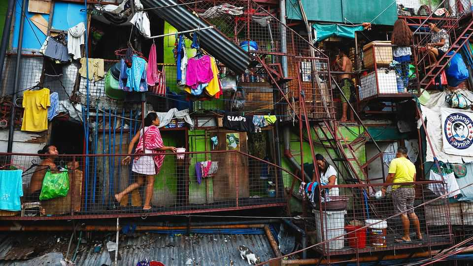
此举还将提升经济活力，使城市居民更具生产性。据无家可归者住房协会（Habitat for Humanity）研究，亚洲地区居住在贫民窟的人口超过11亿，占全球贫民窟人口的半数以上。亚洲开发银行估计，亚洲城市人口中超过40%居住在条件不达标的住所中（例如建筑简陋、缺乏电力和供水等基本服务或过度拥挤）。菲律宾政府认为其城市尚需700万套住房；印尼则存在2700万套住房缺口。印度因数据不完整，估算数字攀升至4700万套。优质住房短缺与少数良好住房的高价格并存。总部位于香港的城市土地研究所（Urban Land Institute）估算，菲律宾首都马尼拉的优质公寓价格相当于中位数家庭收入的20倍。■
这比梅费尔或曼哈顿的水平更高，且是该机构认定“可负担”水平的四倍。事实上，其研究发现，亚洲51个最大城市中，仅有七个城市的正式住房市场符合其“可负担”标准。所有这些都在损害亚洲经济。一方面，恶劣的居住条件可能正在阻止农村人口——他们本可在城市找到更具生产性的就业——迁入城市开始新生活。2020年一项印度研究发现，比哈尔邦（Bihar）——一个贫困的东北部州——的村民宁愿在家赚取35%的收入，也不愿忍受城市中的艰难处境。更便宜、更安全的住房还能带来更直接的经济收益。良好的住房能减少因病导致的时间损失，为人们在家开展商业提供空间，土地使用权的保障和居住空间则有助于儿童入学和持续在校学习。■
由无家可归者住房协会（Habitat for Humanity）发布的全球研究显示，将贫民窟住房替换为更优质的住宅与预期寿命提高4%、入学率提升28%以及地方GDP增长最高达10%相关。气候变化加剧了这一问题。居住在危房中的人群将最易受到热浪等冲击的影响。在任何快速发展的城市，一定程度的脏乱都是难以避免的。“每个城市，无论是巴黎还是纽约，都会经历一个‘青春期’阶段，增长伴随混乱、资源紧张和系统过载。”波士顿咨询公司“可负担住房研究所”的戴维·史密斯表示。但通过更有效的政策，亚洲当局可缩短这一痛苦阶段并减轻部分成本。在亚洲城市中，土地使用法规普遍使大规模建设可负担住房变得困难。■
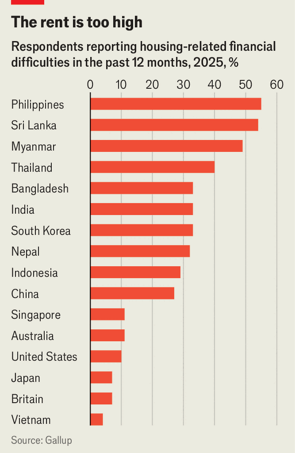
关于建筑高度的规定或限制商业区住宅建设的规则旨在防止过度拥挤。但这些规定往往适得其反，迫使人们涌入贫民窟。曼彻斯特大学萨希尔·加德吉与世界银行的吉特卡·纳格帕尔在最新研究中指出，2018年孟买放宽建筑高度限制后，受影响区域的住房供应量上升了58%，新建住宅价格下降了24%。菲律宾奎松市市长乔伊·贝尔蒙特表示，开发商不愿建设经济适用房，因为豪华公寓能带来更高的利润。柬埔寨首都金边近年来因外国投资（其中大部分来自中国）引发建筑热潮，但大量资金却流向了光鲜亮丽的公寓塔楼。理论上，无论价格如何，新增供应都应能压低所有人的成本。■
但若投资者购买新房后将其空置，影响会相对较小，这种情况在马尼拉和金边等城市尤为常见。抵押贷款市场是另一个障碍。亚洲许多人的收入来自非正式经济，这限制了他们的借贷能力。南亚和东南亚地区未偿还住房贷款通常占GDP不足10%，而发达国家则超过50%。“目前我们无法为低收入家庭提供服务，风险太高了，”金边房地产开发商林恩·李（Enrich Lee）表示。政府急于自行建设廉价住房。在德里的卡尔卡吉（Kalkaji）地区，地方官员建造了“希望之光”（Asha Kiran）塔楼，安置周边贫民窟居民。在贫民窟生活了四十年的比乔伊·帕特拉（Bijoy Patra）如今住在新塔楼的四楼。■
他花费147,000卢比（约合1,700美元）购置了一套一居室公寓，称自己的生活发生了翻天覆地的变化。“多年来，我只能从外部遥望南德里的高档社区，”他说。如今他终于住进了其中一处。但如此理想的结局极为罕见。在印度及其他地区，政府缺乏资金、土地和行政能力，难以大规模提供公共住房。阿莎·基兰（Asha Kiran）项目包含3,000套公寓，而德里人口却高达3,000万。2023年菲律宾官员承认，无法在2028年前建成600万套高质量住房，随后将目标“重新校准”至约100万套。对此，可负担住房研究所（Affordable Housing Institute）的史密斯（Smith）表示，政府应“掌舵而非划桨”。柬埔寨房地产开发商李（Lee）则主张加强公私合作，由公共部门承担部分成本。■
印度的国家房产机构敦促官员以折扣价出售政府所有土地，补贴建设融资，并推出税收优惠以帮助开发商建设经济适用房。政府还可以通过补贴信贷等方式进一步刺激需求。然而，太多由政府主导的住房计划优先考虑产权而非租赁——尽管对大多数城市新移民而言，租房是唯一的选择。奎松市官员更倾向于通过短期合同出租公共住房，贝尔蒙特女士表示，此举有助于新移民更容易建立稳固安全的初始居所。规划、融资和建设经济适用房往往进展缓慢。政客们通常能找到更快捷的拉票方式。但改善住房的经济理由十分充分。■
此举带来的政治回报可能极为丰厚。史密斯先生表示：“住房质量本质上是家庭对国家领导层的‘餐桌上的投票’。”提供住房的政府或将获得数年来的坚定支持。■
§012 世界持续时间最长的毛派武装叛乱终结原题：The end of the world’s longest-running Maoist insurgency · 板块：Asia · 栏目：亚洲
前同志阿拉伯先生希望致歉。他穿着一件粉色花朵图案的衬衫，坐在中央邦康复中心的荧光灯下。这位35岁的男子曾是叛军的指挥官。他说，在19年的运动生涯中，他下令处决了数百人，并领导了造成数千家庭流离失所的袭击。六十年来，印度安全部队一直在与像阿拉伯同志这样的毛派武装分子作战，尤其在印度中部和东部各州的地区。
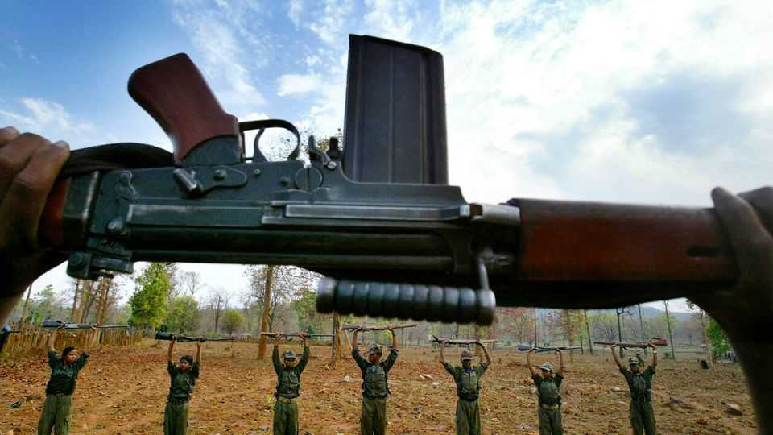
■
多年来，印度政府一直将叛乱分子视为对国内安全的最大威胁。如今当局坚称已接近取得历史性胜利：内政部长阿米特·沙誓言印度将在3月31日前彻底清除毛派叛乱。反恐专家阿贾伊·萨尼警告称，这是一句政治修辞而非战略目标；毫无疑问，4月仍会有毛派叛乱分子存在。然而走访其最后据点之一，便能直观感受到其势力已大幅衰退。毛派被称为“纳萨尔派”（Naxalites），得名于西孟加拉邦纳克萨尔巴里村（Naxalbari），1967年其武装起义在此发端。警方镇压几乎将其歼灭，但1980年代他们转而盘踞在偏远、植被茂密的山区，得以发展壮大。■
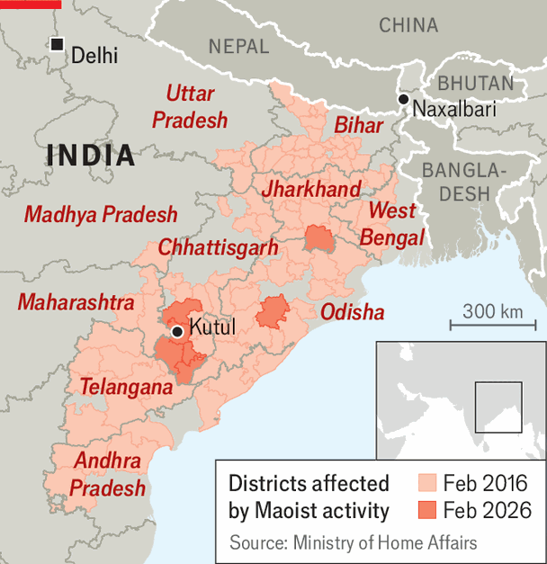
尽管早期毛派领导人多为学生和中产阶级，但这场运动最终主要吸纳了来自部落族群的成员——他们是印度最贫困、最被忽视的群体。武装分子承诺保护部落人民，防止他们因大型项目如矿场和水坝而失去土地。自2000年以来，超过12,000名印度人死于毛派相关暴力。叛军炸死政客和警察，破坏采矿项目并烧毁移动通信塔。据称在2010年达到顶峰时，有20,000名武装人员在印度三分之一的地区活动。然而近年来，安全部队加强了反毛派行动，成效显著。印度安全部队称自2024年以来已击毙748名游击队员，创历史最高纪录。他们尤其成功地击毙了高级指挥官。士气受挫的基层战士则成批投降。■
截至今年2月，毛派活动的地区数量已从约800个减少至仅7个（见地图）。直到去年，恰蒂斯加尔邦的库图尔村仍被称作毛派的非正式首都。但如今他们已被驱逐。村中许多部落居民似乎感到如释重负。他们表示，毛派曾强迫村民跑腿办事、捐赠粮食，最令人厌烦的是还要参加马克思主义理论课程。他们还阻挠建设卫生中心和道路的计划。“他们的意识形态是好的，但他们会杀死任何不服从他们的人，”当地居民说。一个“非法法庭”裁定他的兄弟是政府线人，并下令将其处决。“马克思主义者们并非为了我们的福祉而来，他们只是为了自己，”村校校长说。他表示，叛乱分子阻止村民接受超过五年的教育。■
原计划是让年轻人接受足够的教育以成为有用的普通士兵，但不超过这个程度。加入毛派并希望结婚的当地人则被要求接受绝育手术。那些期待彻底平等的战士们，却惊讶地发现自己被来自其他州的高种姓干部所支配。政府的反叛乱行动既包含奖赏也包含惩罚。一些叛乱分子因承诺的福利而投降，例如价值50,000卢比（约合530美元）的支票和住房。当安全部队抵达库图尔（Kutul）时，政府官员承诺为当地人注册印度的数字身份系统（该系统可提供公共服务）并建造混凝土房屋。该村于今年一月接入互联网。然而，与毛派的战斗也极其残酷。■
民间组织和部分政界人士指责安全部队杀害了本可俘虏的叛乱分子。恰蒂斯加尔邦运营着一支5000人的“区后备卫队”（District Reserve Guard），成员多为部落居民，其中许多人曾是毛派武装分子；该部队渗透并袭击叛军，对投降者进行审讯。安全部队官员称，该部队提供的情报是该州近期取得成功的主要原因。但观察人士担忧，这种做法与2000年代政府支持的民兵组织“萨拉瓦·朱杜姆”（Salwa Judum）相似，该组织招募被击败的叛军而非起诉他们，并武装易受攻击的青少年。这种做法最终令当地民众与纳萨利特武装（Naxalites）一样深感不满。在库图尔村，许多村民担心接下来可能发生什么。在部落群体脚下，埋藏着印度最富饶的铁矿和其他矿产资源。■
当地居民担心政府意图清剿山地的武装分子，以便企业能夺取那里的宝藏，迫使社区迁移。若真如此，前同志阿拉伯或许将为自己的新职业后悔——作为区预备役警卫队成员，协助追捕昔日的同伙。■ 通过订阅我们的免费周报Essential India，随时掌握印度相关报道。
§013 中国进军全球最奇特的汽车市场：欢迎来到Chevroletstan原题：Is breaking into one of the world’s weirdest car markets · 板块：Asia · 栏目：亚洲
| 欢迎来到Chevroletstan
中国正进入全球最奇特的汽车市场之一。中亚的美国汽车岛正发生快速变化。
过去，旅行者穿越中亚时依靠骆驼。如今，到乌兹别克斯坦的游客发现，美国的“工作马”已占据草原。印有雪佛兰（Chevrolet）品牌标志的汽车如此普遍，以至于当地人戏称该国为“Chevroletstan”（ Chevy斯坦）。在首都塔什干机场外，一排Chevy Cobalt车型整齐排列。在乌兹别克斯坦的打车应用MyTaxi（Uber的本地版本）叫车时，很难分辨哪一辆是你的。去年乌兹别克斯坦售出的43万辆汽车中，83%为雪佛兰品牌。其中，Cobalt轿车占比近三分之一；在沙漠公路上，几乎看不到其他车型。
■
在乌兹别克斯坦的小镇之间，达马斯（Damas，如图所示）这款面包车形的微型厢式车无处不在。它占据了四分之一的销量。这款车型也是雪佛兰（Chevy）的。这种同质化现象源于产业政策。1992年，伊斯兰·卡里莫夫（Islam Karimov）这位后共产主义时代的独裁者决定建立本国汽车工业。政府与韩国大宇（Daewoo）公司合作。在1997-98年亚洲金融危机后大宇破产，通用汽车（General Motors）作为雪佛兰的母公司介入。卡里莫夫通过关税保护本国雪佛兰，汽车进口关税高达100%或更高。通用汽车于2019年出售了其在合资企业的股份，但协议允许乌兹别克斯坦汽车制造公司（UzAuto Motors）继续生产这款车型。继卡里莫夫2016年去世后接任的沙夫卡特·米尔济约耶夫（Shavkat Mirziyoyev）比其前任更少干预主义。尽管大多数进口汽车关税仍保持高位，但他降低了电动汽车（EVs）的关税，部分是为了减少污染。■
2024年乌兹别克斯坦售出的汽车中，有5%为电动车，相较2022年几乎为零的情况大幅增长。其中约90%来自中国。米尔济约耶夫总统对政府推崇的中国品牌仍怀有特殊情结。去年他下令将内阁官员的奔驰轿车更换为雪佛兰。但总统也积极与中企互动。2024年比亚迪在总统故乡吉扎克开设工厂，公司还向米尔济约耶夫赠送了一辆豪华SUV。因此，塔什干街头的中国电动车正变得越来越常见。当地居民的呼吸健康将获益：2024年该市空气质量为世卫组织认定安全水平的六倍。那些曾需排队购买国产雪佛兰的乌兹别克人也将迎来更多选择。不过在城市外充电设施稀缺的地区，雪佛兰仍占据主导地位。但比亚迪正逐步渗透"雪佛兰斯坦"——一步一印地推进。■
§014 南下吧原题：How Chinese companies are reshaping Indonesia · 板块：Asia · 栏目：亚洲
当张东尼（Donny Zhang）于2015年首次从中国前往印尼担任风险投资时，他惊讶于印尼监管机构对支付宝（Alipay）表现出的浓厚兴趣，支付宝是中国最成功的在线支付应用之一。2021年，他与人共同创立了Yup，这是一款专为印尼底层劳动者（这些人常被本地银行忽视）设计的类似应用。张东尼表示，印尼是创业的理想之地。它是一个庞大的新兴市场，距离中国不远，几乎每个人都有智能手机。张东尼只是众多选择在世界第四人口大国（人口达29亿）工作和创业的中国人之一。
印尼劳工部表示，2024年印尼向中国移民发放的居留许可超过10万个，数量是其他所有国家总和的两倍以上。这一数字较前一年的8万个有所增长。"实际上这个数字更高，因为许多中国移民最初是以旅游签证入境，随后才开始创业，"一位印尼华商表示。这些新移民经营着从餐厅、密室逃脱到房地产公司和语言学校的各类企业。这些企业往往由企业家直接从中国城市整体迁移过来，他们希望逃离国内放缓的经济和激烈的竞争。像尤普这样的企业已取得成功，张先生称，该企业已吸引超过200万活跃账户持有人，完成六轮融资累计逾1亿美元，接近收支平衡。■
其客户运营总部设在印尼首都雅加达，同时在上海设有专注于研发的办事处。张先生希望在未来几年内将业务扩展至东南亚其他地区。如今，中国知名品牌也在印尼加速扩张。几年前，雅加达街头几乎看不到中国电动车。如今，它们已随处可见。2025年上半年，中国品牌占据了电动车销售的90%以上。比亚迪计划投入超过10亿美元，在西爪哇建设工厂，年产能可达15万辆。广汽埃安、小鹏和五菱已开始本地生产。“如今的印尼就像上世纪80年代的中国，充满机遇。”一位在印尼企业工作的中国商人表示。
印尼吸引电动汽车制造商的部分原因在于其拥有全球最大的镍矿储量，而镍是制造某些类型电动汽车电池的关键金属。中国企业在印尼控制着四分之三的镍精炼产能，并正在建设基础设施将该原材料转化为电动汽车电池。全球最大电池制造商宁德时代（CATL）正在西爪哇建设一体化电池工厂，而另一家中国企业华友钴业最近取代韩国LG公司，成为另一项电池项目的主导合作伙伴。中国投资者在这两个项目中合计投入近100亿美元。印尼雅加达北部的新城帕塔伊·印尼卡普克（PIK），部分区域由填海造地而成（见图），是大量中国新移民的聚居地。■
这座占地约曼哈顿三分之二的大型开发项目拥有昂贵的公寓和商铺，其中充斥着中国品牌，如炭火鱼餐厅连锁Tanyu、火锅连锁Haidilao以及冰淇淋奶茶品牌Mixue。Mixue凭借门店数量成为全球最大的快餐品牌，超越了麦当劳、星巴克和赛百味。目前该品牌在印尼已开设2600家门店，使印尼成为其仅次于中国的最大市场。部分具有中国血统的印尼人不愿居住在PIK（皮克），他们仍记得1998年反华暴动期间数百名印尼华人遇害的惨剧。其中一些人担忧，若类似事件再次发生，PIK可能是雅加达最易成为目标的区域。涌入雅加达的中国企业家们正押注印尼的未来将复制中国的过去。
印尼华裔群体祈求过去的悲剧不再重演。 ■
§015 亚洲原题：Millions of Burmese struggle to find safety in Thailand · 板块：Asia · 栏目：亚洲
令人垂涎的缅甸香气从竹棚中升腾：莫辛咖鱼汤、辛辣猪肉香肠、发酵鱼酱。人们举着啤酒、抽着雪茄围坐在篝火旁，吉他手弹奏着流行的缅甸歌曲。这个夜市位于泰国北部清迈市，曾是一片废料场。科·忒特（Ko Thet）一年前开始清理这片土地，种下树木、铺设草坪。他说，这象征着流亡的缅甸同胞必须做到的：在异国土地上扎根。科·忒特于2021年逃离家园，当时缅甸军方发动政变并展开对反对派的镇压。
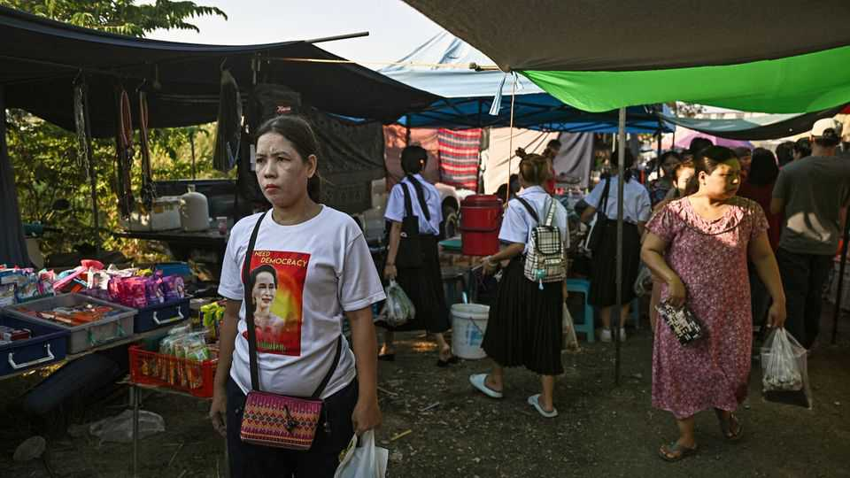
像许多为躲避饥饿、强制征兵、军队袭击以及去年毁灭性地震而逃离缅甸的难民一样，他最终抵达泰国。联合国估计，泰国境内有460万缅甸人。其中约一半是2021年后抵达的。约40%的人没有合法身份。他们中包括企业家和高技能专业人士：医生、教师、工程师。部分抵达泰国的缅甸人英语更流利，技术能力也优于泰国本地人。多数人愿意接受较低工资。越来越多的缅甸人从事面向泰国大量外国游客的行业。Nye Chi就是其中之一：她在清迈与未婚夫共同经营一个摊位，售卖腌制茶叶沙拉。她曾就读大学IT专业，梦想成为记者。她说政变“夺走了”她的未来。■
她加入叛军医疗队并接受麻醉师培训，但仅靠扑热息痛作为止痛药和基础医疗工具，根本无法挽救生命，于是前往泰国赚钱养家。她不敢回国，但像许多缅甸人一样，也感觉在泰国并不安全。泰国未签署1951年联合国难民公约，也未正式为寻求庇护者提供保护。大量难民涌入引发排外言论激增，移民被描绘成对本地公共服务的负担和对当地就业的威胁。许多新抵达者面临突袭逮捕并被遣返边境的风险。在某些情况下，逃离缅甸征兵的男子甚至被直接送回他们曾逃亡的军方。■
泰国安全部队有时被指控勒索难民，包括通过出售非官方“警察卡”来剥削他们，这些卡片本应保护难民免遭驱逐。理论上，来自缅甸的移民——即使没有合法身份——也可向泰国当局申请所谓“粉卡”，该卡赋予其在泰国境内有限居留权，可在蓝领岗位工作。此举旨在满足泰国对劳动力的需求，即那些当地人不愿从事的“脏、险、累”的工作。自去年泰柬军事冲突以来，这一需求愈发迫切。冲突后，数十万柬埔寨移民返回了本国。然而，获取此类许可的流程既昂贵又繁琐，且需通过中间人操作。理想情况下，泰国应大幅简化难民寻找白领工作的途径。■
国际机构和学界普遍认为，近期涌入泰国的高学历人才可能提振该国停滞的经济。泰国正面临快速老龄化，每名女性仅生育1.2个孩子，亟需新鲜血液。但民族主义者对此持反对态度。特特先生在市场悬挂的标语写着：“每个人都有自己的故事”；另一条标语则说：“这里的人或许会成为你的朋友”。这些口号体现了他构建缅甸与泰国人民之间桥梁的目标。他说：“我们确实想回家。”但他也清楚，这可能需要数年时间才能实现。■
§016 班加罗尔为何拥有印度最富有的富豪原题：Why Bangalore has India’s best billionaires · 板块：Asia · 栏目：亚洲
班加罗尔除了宜人的气候和蓬勃发展的科技创业氛围，对印度其他大都市几乎毫无竞争力。当地的美食堪称一流，但德里的美食同样出色。它的酒吧同样精彩，而孟买的酒吧更胜一筹。但另一方面，班加罗尔却在交通拥堵和乏善可陈的建筑风格方面表现得尤为突出。然而，有一项鲜有人注意、也未被充分认可的指标上，班加罗尔却完胜其他城市。那就是其超级富豪的素质。印度从不缺乏富豪。独立前，数百位土邦君主统治着这片土地的各个角落。许多土邦君主为臣民提供学校、大学和医疗机构。
孟买和加尔各答的商人曾在帝国时代发家致富，他们修建纪念碑和博物馆以确保自己的遗产。1990年代的经济改革催生了如Reliance（印度最大综合企业集团）这般庞然大物般的跨国集团，该集团也是印度最慷慨的企业捐赠者之一。班加罗尔的科技达人则是这一群体的新成员。这座城市聚集了众多IT服务公司，早在2000年初便造就了一群新的亿万富翁。近年来，成功推出消费类应用的开发者也加入了这一行列。这群人正重新思考亿万富翁的角色。传统富豪慈善仍主要流向教育和医疗等基础领域，二者合计占所有捐赠的一半。这在仍属贫困国家的印度是自然现象。但基础领域并非印度所需全部。■
印度那些已获得优质学校和诊所的民众，现在更需要心智的进一步滋养。而所有民众都能从助力政府更高效运转的制度中获益。这些正是新一批捐赠者资助的领域。新一代慈善家包括Infosys（印度一家大型IT服务公司）的创始人纳丹·尼莱卡尼（Nandan Nilekani）。据编纂富豪榜的Hurun机构统计，他是印度第二慷慨的个人慈善家，其妻罗欣尼·尼莱卡尼（Rohini Nilekani）位列第三。他们不仅捐资，还投入时间：尼莱卡尼是印度生物识别身份证系统Aadhaar的架构师，也是印度堆栈（India Stack）项目的非正式发起人，该项目旨在通过技术网络提升印度的运作效率。另一位Infosys联合创始人克里希·戈帕拉克里希南（Kris Gopalakrishnan）已捐赠数百万美元，用于在班加罗尔和钦奈设立脑科学研究实验室。■
卡里安·马祖姆达尔-沙（Kiran Mazumdar-Shaw）与尼莱卡尼夫人、戈帕拉克里希南先生共同为位于班加罗尔的科学画廊提供资金支持，该机构旨在通过艺术与科学激发年轻人的创造力。百万富翁拉维钱德兰则将时间投入公益事业，协助城市与州政府改善治理。他参与设计了班加罗尔的新市政机构。这一代人如今大多已年过六旬或七旬，他们为班加罗尔新一代富豪树立了典范。他们低调地行善，同时提供咨询并构建潜在捐赠者的非正式网络。结果是，这座城市已成为此类机构建设型慈善事业的枢纽。■
年轻的技术创业者，如尼基尔·卡马特（Nikhil Kamath，39岁）及其兄长尼廷·卡马特（Nithin Kamath，46岁），他们共同创立了一家广受欢迎的交易平台，如今也逐渐成为慷慨的捐赠者，包括对看似抽象的领域如城市治理系统研究的资助。班加罗尔的富豪们与以往不同，原因之一在于许多人都有过普通人的生活经历。他们曾乘坐公共交通工具，与公共服务系统周旋。而孟买（仍是亿万富翁的聚集地）或德里的同行则更可能继承家族企业。另一个原因是，许多人是工程师，热衷于解决复杂问题。传统财富往往源自贸易、监管套利或资源开采，这体现了一种截然不同的思维方式。此外，孟买、德里和加尔各答早已拥有大量机构，而班加罗尔直到不久以前仍是一个沉寂的退休小镇。■
印度的亿万富翁们仍有更多可建之事。从这个角度看，他们仿佛回溯到百年前孟买富人的时代，当时塔塔家族等家族资助了研究机构和公共空间，这些机构至今仍服务于这座城市。当时现代印度正初具雏形，如今仍在建设中。引导其发展方向的机构需求比以往任何时候都更为迫切。政府已使慈善机构接受外国资金变得异常困难。资金和专业人才如今必须来自内部。正如印度最前瞻的城市班加罗尔所展示的那样。■ Subscribers to The Economist can sign up to our Opinion newsletter , which brings together the best of our leaders, columns, guest essays and reader correspondence.
§017 中国原题：Does the Iran war increase the risk of a Chinese attack on Taiwan? · 板块：China · 栏目：中国
对于因乌克兰战争和中东冲突而动荡的世界而言，美国情报机构最新年度威胁评估报告中有一句令人稍感安心的表述。报告于3月18日发布，称“中国领导人目前无意在2027年发动对台湾的入侵”。这一新表述引人注目，因为美国官员多年来一直警告称，习近平主席已下令军队准备于2027年对台湾发动攻击。
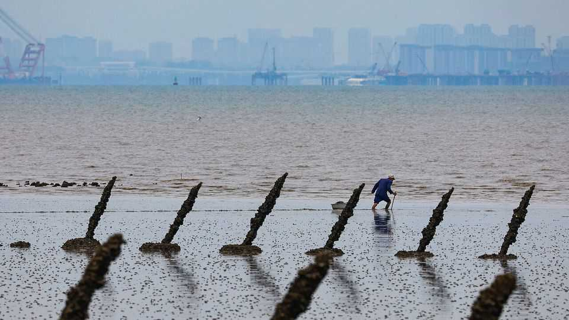
尽管美国方面澄清称，该截止期限指的是能力而非实际入侵，但这一表态仍促使美国和台湾投入数十亿美元用于备战，以防届时遭到攻击。新的情报评估对一些担忧中美关系中最危险火药桶的民众而言，带来了令人欣慰的消息，因为中国长期以来承诺帮助台湾保卫自身。然而对另一些人而言，情报界不愿将最新预测时间延长至2027年后，令人感到不安。其报告也未能回应人们普遍关注的问题：伊朗战争是否增加了习近平对台湾采取军事行动的风险？他渴望将台湾统一于中国。
尽管有人担忧过度政治化的美国情报界可能有动机淡化对台威胁，但监控中国人民解放军（PLA）的前官员和专家们一致认为，2027年前对台湾发动攻击的可能性不大。然而，越来越多的担忧在于中东战争及其对美国政治和军事实力的影响，可能使习近平主席更倾向于在本十年后期或下一十年初对台湾采取行动。美国已将部分军事资产从印太地区调往中东，未来可能进一步转移。维护和战备状态的连锁影响可能持续多年。美国及其盟友也已消耗了大量用于防卫台湾的武器。■
李毅虎，北京大学台湾问题专家在3月中国人大会议上表示，若战争持续，美国将面临多线挑战。“如果美国在亚太地区的军事存在被削弱，你可想象后果会如何。谁将从中受益？”2021年参议院听证会上，美国印太司令部司令菲利普·戴维森首次提及习近平设定了2027年期限后，这一观点在政府圈内广泛流传。但密切跟踪军情的观察人士认为，“戴维森窗口”更像是习近平为2027年建军百年庆典前加速军队现代化而设定的紧迫信号。当前更值得关注的时间段是2028年美台举行下届总统选举至2032年习近平第四任期结束之间。■
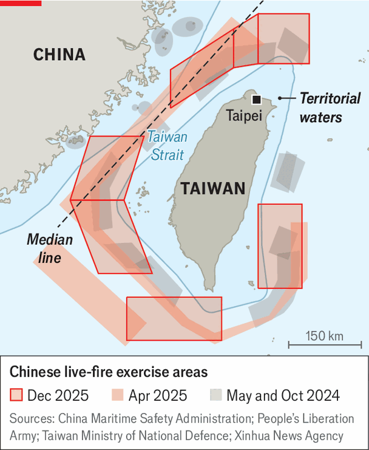
到那时他将年满79岁，或许会对台湾问题的进展感到不耐烦。美国国防部亚太事务首席官员埃利·拉特纳（Ely Ratner）认为，伊朗战争不会显著增加习近平在短期内对台湾采取行动的可能性，但“今天比两个月前更有可能”。如果习近平的最终决定取决于他能否以可接受的成本迅速取得胜利，那么“一个准备不足、分心且资源分散的美军将使这一日期提前到来”，他说。“中期内的风险大幅上升。” 习近平仍可能从耐心中获益。中国人民解放军已大幅提升对台入侵能力，并频繁进行相关演练（见地图）。此外，解放军几乎每天都会以军机穿越台湾海峡中线的方式测试该岛的防空系统。
尽管中国可能具备实施封锁或检疫的能力，但目前尚无法以足够低廉的成本和足够快的速度进行两栖入侵，使其风险值得承担。时间拖得越久，美国介入的机会就越多。即便美军已处于高度紧张状态，仍能凭借其在战场上运用最新技术（包括人工智能）的实战经验，造成巨大伤亡。而这场冲突引发的全球经济冲击将远超2019年伊朗战争的影响，对中国经济造成沉重打击。再来看中国军方高层的现状。习近平已清洗了2022年任命的六名将领中的五名，中央军委（CMC）如今仅剩习近平本人及一名负责反腐败调查的将军。■
尽管许多高层官员被指控腐败，习近平似乎也对军事改革的缓慢进展感到沮丧。年轻、技术娴熟的接班人或许表现更佳，但必须仔细审查其与 disgraced predecessors（被贬官员）的关联。不过到2028年，他的新军事领导层应已就位，而该年台湾的总统选举可能促使中国采取更激进的策略。中国拒绝与自2016年以来执政的台湾民主进步党（DPP）打交道，并谴责现任总统赖清德为分裂分子。主要反对党中国国民党（KMT）则寻求与大陆深化关系，且一直阻挠增加国防开支。若KMT在2028年胜选，或可促成足够缓和以满足习近平的期待。但若DPP再度获胜，可能增加他优先考虑军事选项的风险。■
美国的政治日程也可能成为催化剂。中国官员游说特朗普淡化美国对台湾的安全承诺，作为更广泛的贸易与安全协议的一部分。这给了中国推迟行动的动机，也因特朗普近期对战争的兴趣而有所缓和。但若中美谈判在未来一两年内未取得进展，习近平的判断可能发生变化。随着美国大选临近，他可能认为在特朗普被更支持台湾的领导人取代前采取行动更为有利。在习近平做出这些判断时，伊朗战争的持续时间以及美国是否在古巴、格陵兰等地展开新行动将起到关键作用。中国还将密切关注美国弹药消耗速度，尤其是导弹拦截器的使用情况，以及这如何影响对台湾的武器交付。■
中国的结论可能改变其军事战略家所称的“战略窗口期”，即夺取台湾的时机。许多军事战略家认为，这一窗口期可能在未来几年内出现，尚在美国重组亚洲军事力量、增强台湾防御能力的进程生效之前。台湾军队现代化进程一度缓慢，但近期取得进展。其计划到2030年将国防开支从GDP的3%提升至5%，并计划于2033年建成新的导弹防御系统。若缺乏此类规划，“发动攻击的可能性将上升”，台湾国防部长吴钊燮（Wellington Koo）于3月20日表示。若中东战争尽快结束并消除伊朗对美国及其盟友的威胁，台湾所受影响或将有限。美军或可重新聚焦亚洲，中东地区军备补充需求也将减少。■
一些美国官员也认为，他们已通过应对委内瑞拉和伊朗的挑战积累了经验，若乌克兰战争结束，将更具备与中国抗衡的实力。但这种局面可能反而刺激中国加速对台采取行动，尤其在美军和武器储备尚未完全恢复之际。若伊朗战争持续更久（或和平状态不稳定），将为习近平争取到战略缓冲空间。这可能让解放军完成改革、完善两栖作战技术，并从乌克兰、委内瑞拉和伊朗的案例中汲取经验。台湾国立政治大学的吴崇文表示，一旦习近平认为自身具备足够实力，其对台政策可能趋于冒险。不过，伊朗对霍尔木兹海峡的控制力也可能影响其行动选择，使封锁行动比武力入侵更有可能发生。■
吴先生虽不认为中国会立即发动攻击，但他预计中国将更频繁地对台湾周边海域进行空中和海上突袭，并开展更大胆的联合军演，以观察美国的反应。即便美国情报机构的预测准确，台湾仍处于危险之中。■ 订阅者可注册我们的新周刊《Drum Tower》，以了解世界如何看待中国——以及中国如何看待世界。
§018 姜生南（Jiang Shengnan）是中国政治中最直言不讳的女性原题：Jiang Shengnan is the most vocal woman in Chinese politics · 板块：China · 栏目：中国
，当这位从中国立法者转为政治顾问的姜生南出生于1973年，其父母在沿海城市温州生下第三个女儿时，许多人劝她母亲继续要个儿子。她母亲拒绝了，并给女儿取名“生南”，意为“比男人更好”。姜生南坚持她只是希望女性平等，但实现这种平等需要一种源自名字中蕴含的抗争精神，以及在女性主义充满争议的国家中所需的务实态度。姜生南成长于1990年代，成为网络小说作家。
她后来的历史著作讲述两千年前一位嫔妃如何崛起成为中国的首位皇太后，该作品被改编为电视剧《芈月传》，2015年播出后24小时内便获得7亿次观看。除撰写学术著作并担任温州大学人文社科研究员外，她于2018年当选全国人大代表（NPC），成为女性权益最积极的倡导者之一。完成五年任期后，她于2023年加入政协最高咨询机构中国人民政治协商会议（CPPCC）。目前女性占NPC四分之一、CPPCC五分之一的席位，但无人进入权力核心——政治局。在政治事务中，NPC实为橡皮图章议会，议员们只是批准而非辩论。■
然而在社会议题上，中国共产党始终谨慎衡量公众意见以维持社会稳定，仍存在推动变革与讨论的空间。在习近平执政期间，任何涉及敏感议题的非体制内组织活动均遭到严厉打压，这使得在体制内运作变得愈发重要。2015年，五名女权活动人士因计划在公共交通领域反对性骚扰而被捕，尽管政府已发出警告。她们长达一个月的高调羁押标志着对女权主义活动的又一次打压，即便越来越多女性在家庭与职场中寻求平等对待。父权观念仍普遍存在，大量男性批评女性喜剧演员及其他直言不讳的女性煽动“性别对立”。所有这些因素使江女士更加务实。■
她将延长父亲陪产假、限制加班等提案与政府目标相协调。例如，该党迫切希望女性多生育以遏制人口下降趋势，江女士表示，她提出的许多方案都服务于这一目标。她提出解决方案而非问题。“我不是女性主义者，”她对《经济学人》表示，刻意避开与体制外激进活动相关的标签。“我们是在对抗那些根深蒂固的不文明观念、习惯和有害观点，而不是针对性别。这么做毫无意义。”她强调，提案必须惠及所有人，而不仅仅是女性。“如果你想推动某项变革，就必须赢得多数人的支持。”今年，这位语气温和的52岁人士发起了一项禁止强迫患有学习障碍的农村女性结婚的运动。
2022年，一段网络视频引发热议，画面中一名女子被锁链束缚在茅屋中。她后来被证实是被人口贩卖并育有八名子女的受害者，此事激起了中国社会的愤怒。江女士擅长将公众对这类问题的愤怒转化为改革动力。她在推动农村女性土地权益方面取得突破，旨在对抗重男轻女的观念。中国传统文化曾导致农村女性若嫁入外村便失去土地权利，但近年来更多农村女性开始在法庭上争取权益。2024年，江女士建议为“外嫁女性”提供法律保护。同年晚些时候，政府通过条款规定无论婚姻状况如何，农村女性均享有平等权利。在政治与创作领域，江女士始终为女性构想新的世界。■
她将政策提案的深入研究比作撰写历史小说。她认为文学和影视作品对唤醒中国女性，尤其是农村女性至关重要。随着越来越多的农村女性开始在线批评她小说中强势的女性主角，她最初感到沮丧。“我曾疑惑这是否是倒退，”她说，“但如今我意识到这是一次觉醒。”在一个保守体系中，变革缓慢，但在一个远离民众的男性主导的政治领域，江女士以亲民著称。她将个人邮箱地址与130万微博（Weibo）粉丝共享。多年来，男女读者不断向她反映招聘35岁以上人士的广泛歧视。2023年，她建议修改公务员招聘的年龄限制，以传递更广泛的信号。
她的提议最初并未被采纳。“但后来，许多其他成员也提出了这一问题，”她说，“现在我们看到许多公务员招聘政策正在放宽年龄限制。你并非孤军奋战，许多人正在接过接力棒。” ■ 订阅者可注册我们的新刊《Drum Tower》，每周了解世界如何看待中国——以及中国如何看待世界。
§019 中国庞大的猪肉产业正因自身成功而陷入困境原题：China’s huge pork industry is a victim of its own success · 板块：China · 栏目：中国
猪肉在中国饮食中占据独特地位。它曾是美好生活的象征，汉字“家”字的构形正是屋顶下的一头猪。猪肉的重要性不言而喻，政府设有战略冻肉储备，媒体也始终关注猪肉产业的起伏。过去十年间，产业经历了多次波动。2018-19年非洲猪瘟肆虐，大量家庭式农场被摧毁，猪肉价格一度飙升。但不久后产业便恢复元气。如今令人担忧的是，产业过于繁荣反而成为隐患。
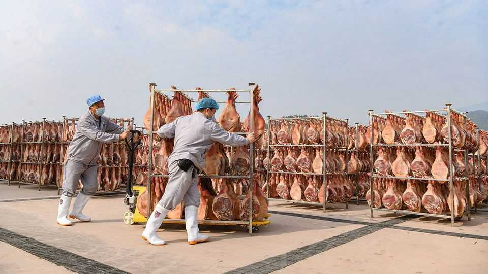
更高效的养殖方式正与肉类消费放缓形成碰撞。如今所有关注点都集中在产能过剩上。在北京市场卖猪肉的石瑞青（Shi Ruiqing）说，她小时候只能在特殊场合才能吃到猪肉，如今猪肉价格如此低廉，人们想吃随时都能买到。生猪价格在3月跌至15年来的最低点，部分养殖户每头猪亏损超过300元（约合40美元）。部分问题源于一些养殖户为争夺日益萎缩的市场而激进扩张产能。此外，大型企业通过将猪群集中到机械化现代养殖场，在疫情中成功规避了风险，这些养殖场能将猪群与非洲猪瘟隔离开来。现代农场是工业农业的奇迹（尽管并不符合动物福利标准）。■
数万头猪被密集地关在多层混凝土建筑中。湖北省某座猪舍高达26层。去年中国猪肉产量达5900万吨，约占全球总量的一半，比2020年增长40%。这或许已超出中国自身的消费能力。2024年中国人均猪肉消费量为28公斤，比2023年减少2公斤。越来越多中产阶级中国人开始认为猪肉不如鸡肉或海鲜健康。为提振价格，官员削减补贴、要求企业大规模扑杀生猪，并指令猪肉储备机构加大采购力度，但效果甚微。一些大型企业开始寻求外部机会。中国最大生猪生产商牧原食品希望输出其商业模式。去年该公司宣布将在越南建设首个高层猪舍，年养殖能力达160万头。随着利润趋于平缓，养猪业正向垂直方向发展。■
订阅者可通过订阅我们的新周刊《Drum Tower》了解世界如何看待中国，以及中国如何看待世界。■
§020 中国既推动又制约人工智能的发展原题：China’s government both drives and constrains the rise of AI · 板块：China · 栏目：中国
在中国，人工智能似乎突然无处不在。从银行业务到购物，从地图导航到打车服务，几乎所有主流的中国移动应用都提供了人工智能聊天机器人功能。大学开设人工智能相关课程，甚至购买马桶座圈都可能接触到人工智能增强型选项，这些选项能监测尿液质量。在高端酸奶连锁店订购酸奶时，系统会扫描你的面部，通过人工智能模型定制发酵产品以满足你的需求。当然，人工智能并非真的无处不在。
但在中国，一个热衷于展示积极数据的国家，政府会告诉你具体进展：到2025年，42.8%的中国用户已“采用”生成式人工智能，是去年同期的两倍。按此速度，中国将在2030年实现90%的人工智能“渗透率”目标。无需纠结“采用”或“渗透率”的精确含义，这个存疑的统计数据本身已是人工智能在中国发展的缩影：国家的直接介入推动技术发展。自去年中国“DeepSeek时刻”以来，一家不知名初创企业以远低于西方竞争对手的成本展现出先进能力，全球目光聚焦于打造最佳人工智能模型的竞赛。但更关键的问题或许是：哪个国家更擅长将人工智能应用于实际场景，而不仅限于技术研发。■
中国拥有诸多优势：开源模型成本低廉且可定制；制造业在将人工智能融入实体产品方面具备先发优势；以及庞大的研究人员队伍。然而，最终最能区分中国与美国的，是其强大的国家力量。尽管DeepSeek向世界展示了中国的实力，但中国早在2017年就经历了自身的觉醒时刻——当时谷歌DeepMind的AlphaGo在围棋比赛中击败了顶尖棋手。数月后，中国发布了首个国家级人工智能发展规划。如今，中国正从研究转向应用。去年政府启动了“AI+”计划，推动人工智能在医疗、能源等领域的落地。据估算，中国去年在人工智能领域投入7000亿元（100亿美元）资金，其中政府占比约60%。
但政府的主导地位并非无懈可击的优势。一旦政府设定目标，浮夸的成分便随之而来。官员们热衷于夸耀自己的成就。查干最近访问了北京亦庄——一个正在开发“具身AI”的科技园区，将AI融入机器人。工业园区内有一家配备自动服务员和机器人表演的餐厅。某处，一只小型机器人三角龙在地面滑行，羞涩地靠近顾客。这一切非常引人注目，直到查干发现，操控这只生物的幕后人员竟在背后使用游戏手柄。另一位工作人员不好意思地承认，厨房里根本没有机器人。“他们仍然煮不好饭，”他说。这些粗糙的边缘是对中国部署具身AI的现实检验。■
最著名的例子是那些在电视春节联欢晚会上表演功夫的仿人机器人，令数亿观众惊叹。然而，让机器人执行一套复杂的程序，无论多么精巧，与让它们自主应对不可预测的环境仍存在本质区别。一位中国大型科技公司高管表示，这些机器人本质上是娇气的设备，容易过热和损耗。中国臭名昭著的“996”工作制（9点到21点，每周六天）可能会让它们不堪重负。尽管政府积极拥抱人工智能，但在某些领域仍持保守态度——这对那些担忧技术的人而言，令人安心。最近几周，中国掀起了一股小热潮，数以万计的用户将人工智能助手OpenClaw安装在笔记本电脑上。与需要提示的AI软件不同，OpenClaw能够自主运行，处理诸如回复邮件等任务。■
但官员们迅速限制了其在国有企业和政府工作的应用，担心这可能会泄露敏感信息——这一结论一些大型西方企业也达成了共识。中国官员同样担心就业问题。当政府推出其“AI Plus”计划时，明确表示希望将资源引导至劳动力短缺且工作条件危险的领域。据参与该互动的人士透露，在与科技企业高管的会议上，一位高级官员对“AI可能导致大规模裁员”的建议表示了警觉。他的信息是避免劳动力市场的动荡。另一方面，中国强大的国家机器也可能阻碍AI的普及。该国五分之一的劳动力在公共部门和国有企业工作，而这些部门历来对采用新技术极为迟缓。■
再次，追求强制性目标可能掩盖企业寻求利润的核心目标。在DeepSeek模型发布后，国有企业及政府机构被要求利用其能力。乔治华盛顿大学的丁杰斐表示，许多机构选择了捷径：他们安装了独立于日常运营的专用设备。“人们用它来快速获取公关胜利，这种非可持续的整合方式并不长久，”他说。事实上，政府更大的贡献可能体现在不那么引人注目的政策领域，而非向世界释放人形机器人。3月13日，中国共产党公布了最新五年计划，将人工智能作为核心。该计划要求为交通、医疗等领域的高质量数据集建设提供支持。咨询公司Trivium China的肯德拉·谢弗表示，这是一次“重大举措”，因为中国政府掌握着庞大的数据资源。■
给予国内AI企业开放准入可能使其在外国竞争对手中占据优势。然而，这远非一个国家在人工智能领域全面发力、在所有方向同时推进的举措。与中国多数国家一样，中国认为其未来与人工智能紧密相连。但政府的谨慎态度可能与热情同样重要。■ 《经济学人》订阅者可注册我们的Opinion电子简报，汇集本刊领导文章、专栏、特稿及读者来信的精华内容。
§021 字节跳动吞并互联网——在中国及全球范围内 商业版原题：ByteDance is swallowing the internet—in China and beyond · 板块：China · 栏目：中国
自2012年成立以来，字节跳动已成长为全球首屈一指的应用开发公司。这家起源于新闻聚合的中国巨头，如今最知名的是其旗下产品TikTok（抖音）及其国内版本Douyin（抖音），两者合计全球月活跃用户接近30亿。公司推出的应用数量之多，以至于员工都难以跟上。其产品线如今涵盖从视频编辑、职场协作到聊天机器人的各个方面。
1月达成的交易将TikTok美国分部80%股权出售给甲骨文公司（Oracle）及其他亲唐纳德·特朗普的投资者，结束了字节跳动（ByteDance）长达数月的纷扰。该公司成功达成出人意料的有利安排（据称其算法将租赁给新业务，以换取20%营收分成，同时继续在美国运营TikTok Shop电商平台）。此后投资者对该公司前景愈发乐观。11月该公司在二级市场交易中估值达4800亿美元，2月进一步攀升至5500亿美元。在私人企业中，仅有世界顶级人工智能实验室OpenAI和埃隆·马斯克的火箭至聊天机器人集团SpaceX的估值更高。■
凭借庞大的用户基础，字节跳动已成为全球第二大社交媒体公司，仅次于拥有Facebook和Instagram的Meta。它也正迅速成长为电商巨头，并跻身中国顶尖人工智能企业之列。其持续上升的势头正让国内外竞争对手日益焦虑。什么能阻止它的崛起？首先从字节跳动在中国的业务说起，据信其占该公司2024年预估1550亿美元营收的约四分之三。其“内容即购物”的商业模式将娱乐与购物结合，使其成为国内第三大电商平台，去年通过其平台售出的商品价值达4万亿元（约合5800亿美元）。抖音已演变为一个繁荣的市场。产品相关帖子穿插在猫咪视频之间；深受喜爱的网红则在直播购物活动中推销商品。■
红果（Hongguo）这款微剧应用同样鼓励用户购买剧中出现的商品。字节跳动也拓展了其他业务领域。其外卖服务发展迅速，蚕食着美团等传统企业的市场份额。上月推出的主打线下消费优惠券的“豆生生”应用迅速登顶本地榜单。字节跳动旗下众多应用及积累的海量用户数据，使其成为国内最大的数字广告商，取代了自2010年代中期以来一直占据该地位的电商巨头阿里巴巴。人工智能进一步推动了字节跳动的发展。其聊天机器人“豆包”在中国最受欢迎，截至2月拥有3.15亿月活用户。■
通过开放其核心模型，字节跳动成功吸引了更多企业入驻其云平台，该平台也在迅速扩张。字节跳动的AI雄心颇为宏大，希望将多模态大模型打造为能够通过用户简单指令完成各类数字交易的超级应用，这一目标也正被阿里巴巴等竞争对手所追求。12月，字节跳动与陷入困境的中兴通讯合作，推出一款预装AI助手的智能手机，该助手可识别屏幕内容并执行多项任务，包括代用户完成购物。这款实验性设备仅生产了3万部，却在数日内售罄。但很快便遭遇了技术障碍。当AI助手尝试调用竞争对手开发的应用程序时遭到阻拦，支付功能也出现了问题。■
字节跳动拥有自己的支付系统，但尚未被广泛采用，其旗下应用仍依赖阿里巴巴和腾讯（微信所属公司）的系统。这反映出字节跳动扩张面临的一个障碍。技术分析师兼《Hello China Tech》通讯作者赵普指出，其主要竞争对手已投入多年建设支付系统、物流网络等基础设施，而字节跳动在这些领域的投资相对薄弱。更严峻的问题是其与中国政府的关系紧张。字节跳动创始人张一鸣于2021年因当局对科技巨头的整顿而辞去首席执行官及董事长职务。但内部人士表示，政府对该公司影响力仍存戒心。■
去年，习近平主席与一群中国企业家的高调会面被广泛视为与科技行业关系缓和的信号。阿里巴巴集团创始人马云也卷入了整顿行动，当时在场。张一鸣则未出席。中国政府对大型电商平台已更为宽容，但并不希望社交媒体公司变得过于强大。中国领导人对舆论的控制极为严密。与政府的紧张关系也可能阻碍字节跳动在海外的进一步扩张。这家公司在海外成功拓展方面，是中互联网巨头中罕见的案例，既在欠发达国家也曾在发达国家取得成功。字节跳动声称没有总部，但通过在海外设立大规模分支机构实现了这一目标。■
中国政府对国内企业将业务转移至新加坡等地区（TikTok主要位于此地）的数量感到不安。它已阻止去年从中国迁至该城邦的AI公司曼苏（Manus）两位联合创始人离境，因正审查Meta收购该公司的提议。中国政府不希望中国的科技自由流向海外，更希望就业岗位和利润留在国内。这可能阻碍字节跳动（ByteDance）的公开上市计划。唯一能满足中国政府与该公司海外投资者（包括多家美国风投公司）需求的上市地点是香港。但中国监管机构正开始要求在该地上市的本土企业必须在本地或中国大陆注册。■
字节跳动面临的挑战在于其复杂的控股结构，该结构注册在开曼群岛，旨在吸引全球投资者。一位前员工指出，技术共享的敏感性也开始影响字节跳动中国与海外部门之间的合作。人工智能领域规则的差异将进一步加剧这一问题。字节跳动于2月在中国推出的AI视频编辑应用Seedance 2.0在国内大受欢迎。然而在计划将其推向海外市场前，公司便收到外国媒体企业的版权侵权指控，包括迪士尼和派拉蒙。该应用的全球发布 reportedly 已被暂停。迄今为止，字节跳动成功在中美互联网之间保持平衡。然而，这种平衡将愈发难以维持。■
追踪塑造商业、工业和科技趋势，订阅我们的每周仅限订阅者阅读的全球商业通讯《The Bottom Line》。■
§022 中国2030年及以后科技经济新蓝图 金融与经济原题：China’s new masterplan for its tech economy in 2030 and beyond · 板块：China · 栏目：中国
中国技术官僚用晦涩的官方术语描绘未来图景。中国第十五个五年计划于3月通过，提及“产业升级”“新质生产力”等概念。但用通俗语言解读，这相当于埃隆·马斯克的乌托邦设想：天空中布满飞行出租车；聚变能源驱动由人形机器人值守的工厂；不可阻挡的量子计算机；6G移动设备直接连接人脑。以往的规划也展现了魄力。 ■
2015年，中国提出一项高调的计划——被命名为“中国制造2025”，目标是缩小与美国的差距，摆脱对外国技术的依赖。然而，实现追赶——中国已在电动车、清洁能源甚至人工智能领域取得突破——只是第一步，主导未来技术则是另一回事。这一雄心勃勃的愿景背后，是习近平主席希望到2035年建成“现代化社会主义国家”的愿景。所谓现代化的中国社会主义国家，是指人均年经济产出达到2万美元至3万美元，目前仅为14000美元。为实现这一目标，本身也是迈向2049年（共产党执政百年）成为“现代化社会主义世界强国”的关键步骤，未来十年人均GDP需年均增长4%-8%。■
中国消费者情绪低迷，出口企业面临地缘政治不确定性，该党认为唯有领先全球的技术及由此带来的生产率提升才能确保成功。这要求加快步伐。瑞银集团（Rhodium）研究公司卡米勒·布伦诺（Camille Boullenois）指出，此前计划针对战略产业和科技创新设定了明确目标，而当前产业政策正扩展至前沿科技领域。最新计划要求在五年内实现人工智能机器人、氢能动力和脑机接口等新兴领域商业化。再过五年，该党希望在可控核聚变和量子计算等“前沿技术”领域取得突破，并形成“应用场景”（可能指供应链和产业集群），这些技术有望颠覆能源和IT行业，但至今仍难以突破。■
计划的核心在于向官员和投资者传递信号，明确哪些举措值得支持。此举释放了中央和地方政府的资金，随后私营资本跟进，基于对政府参与能降低风险的预期。研究集群不仅吸引科技人才和资金，还汇聚了市场营销、法律等专业人才，助力技术从实验室走向市场。主办城市则动员大量行政人员，培养领域专业知识。中国科技规划的支持者以人工智能为例，证明该模式对尖端创新有效。2017年，中国宣布计划到2025年进入“全球高端价值链”，当时外界多持怀疑态度。去年1月，一家名为DeepSeek的AI实验室发布模型，其性能可与美国顶尖模型相媲美，令西方市场震惊。如今，无人再对将中国打造为“全球主要AI创新中心”的新目标表示质疑。■
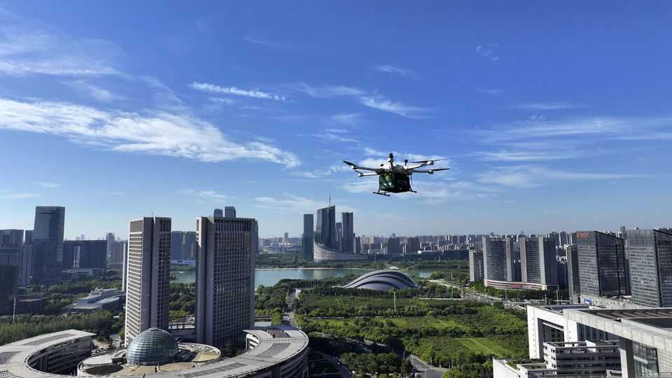
其他领域的初步成果也令人鼓舞。由私营部门创新催生的“低空经济”——包括无人机配送和飞行出租车——自2021年引起政府关注后迅速发展。脑机接口技术获得官方认可，该领域于2024年首次被定义为“未来产业”，并在2025年底出台专项规划，推动高校设立研究项目，初创企业推出产品。城市设立专门工业区，医院也发布脑植入物定价指南。不过仍需保持谨慎。此前的规划如“中国制造2025”均未达成多数目标。中国在可再生能源技术、电动汽车领域领先全球，在人工智能方面与世界水平相当，但在关键领域如先进芯片上仍落后。■
资本若流向存在地方官员重复努力、追逐产业却缺乏技术人才或不愿放弃失败项目的地区，最终将被浪费。中国似乎对每个新兴行业都志在必得的意图，可能使资源分散过广。对这些计划大肆炒作并无益处。‘Made in China 2025’（中国制造2025）曾令美国感到不安，美方视其为对自身科技经济主导地位的挑战。美国通过限制关键输入品出口，阻碍了中国在芯片制造等领域的努力。如今已无‘Made in China 2035’的提法。但最新计划中提及的任何技术仍可能成为目标。提及使用未定义的‘非常规手段’实现目标的言论，难以让美国放心。中国规划者面临的最大挑战，源自其赶超成功的副作用。■
这些情况出现在技术（如光伏电池或锂离子电池）已发展数十年、市场（如电力或汽车）趋于成熟的领域。向科技前沿迈进则意味着面临更多未知数。氢能动力是否有商业前景？多少人会想要脑机接口？量子计算机和核聚变技术是否真能突破实验室环境？中国的计划似乎已有了答案。但市场力量或许另有想法。■ 了解更多关于经济学、金融和市场的深度分析，请订阅我们的周度会员专属简报 Money Talks。
§023 中国赢得AI人才竞赛原题：Is winning the AI talent race · 板块：China · 栏目：中国
“美国是否可能被中国甩在后面？”NVIDIA的CEO黄仁勋（Jensen Huang）去年年底在一场关于人工智能的问答会上自问自答道。“答案是绝对的肯定。”这似乎令人惊讶——在过去十年的大部分时间里，美国在AI竞赛中一直遥遥领先，拥有最先进的前沿模型公司。其工程师不仅能够获得深厚的资金池，还能定期获取NVIDIA的尖端芯片。但黄仁勋的担忧源于创新同样重要的要素：人力资本。
直到最近，大多数领先的AI研究仍由西方专家完成。这一局面正在改变。2025年，首次在世界顶级AI会议上，中国籍第一作者的研究论文数量超过美国和欧洲。这并非偶然现象。中国正在培养比竞争对手更多聪明的年轻AI研究者，且更多人选择留在国内。与此同时，曾打算在国外建功立业的中国籍研究者也纷纷回归。中国已在全球AI人才领域占据领先地位，并持续扩大这一优势。为更好地了解AI人才流动趋势，《经济学人》追踪了2025年12月参加全球规模最大、声誉最高的AI会议——神经信息处理系统大会（NeurIPS）的论文作者的教育背景。■
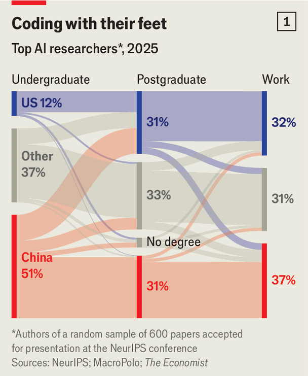
超过21,000篇论文被提交，其中约四分之一被接受。通过结合人工智能与人工检索，我们随机抽取了600篇论文的作者（约4000名研究人员），并追溯其教育背景。该方法复用了宏观中国（MacroPolo）曾用于NeurIPS作者的分析方式，该智库现已关闭。在2025年NeurIPS会议中展示成果的人工智能研究者中，51%的学术起点在中国。2019年这一比例仅为29%（见图表1）。同期，起源于美国的学者比例从约20%降至12%。2025年会议作者中，有9所顶尖高校的本科教育背景来自中国。清华大学毕业生独占4%的份额，而美国顶尖学府麻省理工学院（MIT）仅贡献1%。
分析还揭示了美国人工智能研究对华裔研究人员的依赖程度。在美国机构任职的作者中，约有35%拥有中国本科学历（这一比例与拥有美国本科学历的作者相当）。不过，NeurIPS可能并不能完全代表该领域的整体情况。中国研究人员或许更有动力在该会议上发表成果：例如，为了获得学术机构的晋升，科学家往往需要将顶级会议论文列在简历中。此外，中国开源模型的文化氛围可能促使作者更倾向于在学术论坛发表成果，而美国顶尖人才则日益集中于封闭的前沿实验室。还有其他方式可以衡量中国研究人员对美国的重要性。■
当美国科技公司Meta在六月宣布其新设的“超智能实验室”研究人员名单时，一份泄露的名单显示其中一半被标注为中国籍。《经济学人》分析了参与OpenAI GPT-5项目的483名贡献者（包括人工智能研究员及市场、设计和领导团队成员），发现15%至少拥有中国机构的学位。中国正日益留住其人工智能人才。据数据公司Digital Science统计，中国目前活跃的人工智能研究人员数量已超过美英欧三国总和——尽管按人口比例仍落后于西方。此外，中国的研究者群体更年轻：47%为学生，而西方地区约为30%。■
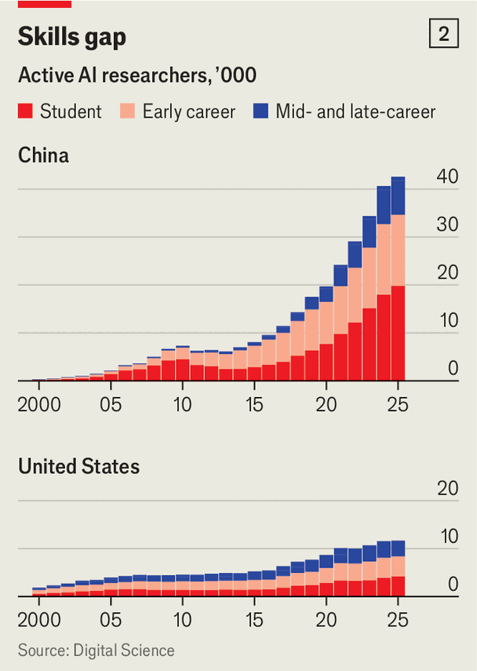
该国也高度重视科学、技术、工程和数学（STEM）教育：约四成中国大学本科生学习STEM领域，约为美国的两倍。并非所有STEM毕业生都能成为前沿创新的推动者，但规模效应至关重要。大量掌握人工智能技术的研究人员将提升突破性创新的概率，并加快新技术的传播速度。“中国正在培养一支高素质、高技能且对人工智能敏感的人才队伍，”数字科学（Digital Science）总裁丹尼尔·霍克（Daniel Hook）表示，“这意味着越来越多的公司将从中国诞生。”越来越多的中国科研人员选择留在国内。2019年，约三分之一在NeurIPS会议中发表论文的中国本科毕业生选择留在中国；到2022年，这一比例升至58%；2025年则达到68%。■
中国一些最优秀的创新成果源自本土人才——在2025年1月发布震惊业界的DeepSeek R1模型中，核心贡献者无一拥有海外学位。这种变化既反映了吸引力，也体现了推动力。越来越多的中国大学跻身全球顶尖行列，同时诸如启明计划等引才举措也提供了丰厚待遇：年薪逾70万元（约合1万美元）、慷慨的研究资助和住房支持。与此同时，美国已不再像从前那样有吸引力。资金削减、签证不确定性以及对移民忠诚度的日益猜疑，让有意赴美的人才感到不安。
去年普渡大学（Purdue University）撤销了超过100名研究生的录取通知，其中大部分是中国籍学生，原因是美国立法者要求其记录研究人员与中国机构的关联。在美国人工智能会议上，一些中国研究人员感到有必要澄清自己并非企业间谍。因此，越来越多的学者选择回国。2019年，仅有12%在中国NeurIPS会议中发表论文的中国籍研究人员曾在海外获得研究生学位后返回中国。到2025年，这一比例已超过两倍，达到28%。《经济学人》采访了近期从美国返回中国或在中美两国之间往返的中国籍青年研究人员。部分人仍认为美国拥有更优越的研究环境，或抱怨中国快速增长企业中激烈的竞争和漫长的工时。■
但他们表示，综合来看，强劲的就业市场、有趣的机会以及与家人近在咫尺的优势，如今已超过了这些缺点。美国的吸引力并未消失。它仍吸引着全球最多国际人才，大多数完成美国研究生学业的中国研究人员选择留下工作。以2019年NeurIPS会议中出生在中国、现居美国的作者为样本追踪，2025年仍有87%的人留在美国。“根深蒂固的机构不会一夜之间消失，”卡内基国际和平基金会的马特·希恩（Matt Sheehan）表示，他参与了这项研究并曾参与原始的MacroPolo分析。但数字正日益倾向中国。以NeurIPS论文作者为衡量标准，目前全球顶尖AI研究者中约37%在中资机构工作，而美国为32%。■
如果过去十年的趋势持续下去，到2028年，中国顶尖研究人员数量可能超过美国的两倍。黄先生表示，对于一个国家要在人工智能领域领先，“吸引开发者是关键”。人才争夺战正变得越来越一边倒。■ 对世界充满好奇？想获取我们拓展思维的科学报道，请订阅我们的周度专属电子报Simply Science。
§024 马可·鲁比奥：战争室中的变色龙原题：Marco Rubio, the chameleon in the war room · 板块：United States · 栏目：美国
十年前，马可·鲁比奥曾称唐纳德·特朗普为“骗子”。当时两人均在争夺共和党总统候选人提名。特朗普曾戏称鲁比奥为“小马可”，并预言特朗普领导的政府将陷入“混乱”。如今，两人的态度更为客气。作为特朗普的国务卿，鲁比奥对老板恭敬有加。特朗普称鲁比奥将“被载入史册，成为历史上最伟大的国务卿”。如今，鲁比奥已成为总统最倚重的亲信之一。
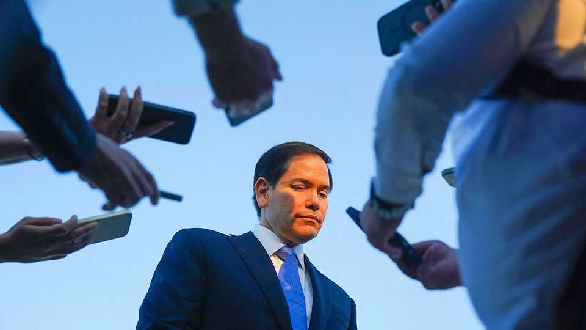
■
他沉稳、善于表达且能力出众，尽其所能为特朗普的外交政策提供连贯性。他也是今年特朗普外交政策鹰派转向最坚定的支持者。一月，当特朗普派特种部队突袭委内瑞拉领导人时，二月，当其下令轰炸伊朗时，鲁比奥始终在身边，通过马拉拉戈庄园的实时画面关注事态发展。更加孤立主义的副总统J.D.万斯则从别处关注事态发展。如果当前军事冒险行动的激增能取得良好结果，鲁比奥将处于再次竞选总统的有利位置。私下里，特朗普常向捐助者和支持者询问，他们认为2028年共和党提名人应是鲁比奥还是万斯？特朗普的支持将对初选选民产生巨大影响。■
出于马基雅维利主义的考量——以避免削弱自身权力——他大概率会尽可能延长让两人保持猜疑的时间。博彩市场显示，鲁比奥的声望正在上升。年初时，Polymarket曾将范斯领先44个百分点，如今差距已缩小至10个百分点。然而，《经济学人》/YouGov民调显示，范斯在共和党人中的净好感度仍以68个百分点领先鲁比奥的47个百分点。鲁比奥此前曾克服更大劣势取胜。2010年首次参选参议院时，他以30个百分点落后对手——时任州长——却最终轻松胜出。他向选民的竞选主张部分源于个人经历。他的古巴裔父母初到美国时既不懂英语也无积蓄，却为子女辛勤工作——父亲当调酒师，母亲做收银员。
因此，这位38岁便已担任佛罗里达州众议院议长的鲁比奥，体现了移民梦想。《经济学人》在观察他竞选时的演讲表现时，将其比作另一位魅力十足的年轻竞选者巴拉克·奥巴马，后者“擅长在表面上同意他人，实际上却不真正认同”。鲁比奥在参议院任职14年，受到广泛尊重。他的同僚以99-0的票数确认他担任国务卿（尽管如今一些民主党人对此表示后悔）。他是自亨利·基辛格以来，首位同时担任国家安全顾问（他同时领导美国国际开发署）的人。一位接近特朗普的人士表示：“鲁比奥是个可靠的人选。”然而，鲁比奥的权力远不及许多前任。特朗普削减开支和清洗被认为不够“MAGA”的外交官，使他所领导的机构大幅缩水。■
一些最敏感的事务——包括与以色列、阿拉伯国家、伊朗、俄罗斯和乌克兰的谈判——主要交由特朗普的高尔夫球友史蒂夫·威特科夫（Steve Witkoff）及其女婿贾里德·库什纳（Jared Kushner）负责。近臣不会抱怨被冷遇，也不会期待制定政策，只是执行政策。他的最重要任务是陪伴君主，在空军一号上往返穿梭于华盛顿和马阿拉戈之间。这往往令人疲惫。在长途旅行中，为避免被老板随时唤醒，鲁比奥有时会用毯子裹住自己，假装成一名正在睡觉的幕僚。要在特朗普的世界中崛起并立足，鲁比奥必须既冷酷无情，又善于变色龙般的适应。作为参议员，他一直是推动跨党派移民改革（允许部分非法移民合法化）和武装乌克兰以抵御俄罗斯的坚定支持者。■
如今他效忠于一位热衷大规模驱逐移民、对弗拉基米尔·普京情有独钟的主子。一些人质疑他的诚意。“他不过是MAGA风的变装皇后。”一名共和党活动人士嘲讽道。他的支持者则认为他能遏制特朗普的过激行为。欧洲各国政府视他为少数可以打交道的白宫官员之一。尽管有时与万斯存在分歧，他却帮助避免了跨大西洋关系的全面破裂以及乌克兰被彻底抛弃的局面。一些人认为特朗普对夺取格陵兰岛保持沉默，多亏了鲁比奥的影响力。去年在慕尼黑安全会议上，万斯发表了一篇文化战争演讲，谴责欧洲试图孤立民粹右翼政党的努力，令欧洲领导人震惊。■
今年，鲁比奥先生在同场活动中发表了几乎相同的信息，但以两次世界大战中的共同牺牲精神和对西方文明的热爱为语言包装，赢得了全场起立鼓掌——并引起特朗普的注意。总统后来称范斯先生是“一位才华横溢的人”，“偶尔会有点强硬”，需要有人约束。相比之下，“马可则是用柔软的手套处理，但结果一样，对吧？”鲁比奥先生在美洲大陆拥有更大的自由度，将特朗普的“美国优先”理念转化为区域战略。他精通西班牙语，在拉美地区展现出副王室般的气派。作为国务卿，他首次出国访问的是中美洲和加勒比地区，旨在遏制移民潮并为与委内瑞拉的对抗铺路。■
然而在此之前，他必须先处理另一位朝臣理查德·格伦内尔（Richard Grenell），后者试图与委内瑞拉达成某种妥协。鲁比奥（Mario Rubio）主张施压和政权更迭，而特朗普选择了第二种方案，推翻了委内瑞拉顽固的独裁者尼古拉斯·马杜罗（Nicolás Maduro），并扶植其副手德尔西·罗德里格斯（Delcy Rodríguez）上台，希望后者会更易操控。接下来，鲁比奥的矛头指向古巴。该国的共产主义政权因数十年的治理失当、石油禁运以及失去委内瑞拉这一慷慨盟友而濒临破产。为寻求缓解，古巴正与特朗普政府展开接触。鲁比奥表示，该岛不仅需要新的政策，更需要新的领导人。古巴裔美国人社区的期待情绪正在升温。前众议员乔·加西亚（Joe Garcia）表示：“鲁比奥体现了流亡的古巴裔美国人社区的所有希望、梦想和挫败感。”然而，鲁比奥面临一项微妙的挑战。■
许多古巴裔美国人希望哈瓦那实现民主，并追回1960年代被政权没收的财产。特朗普可能选择更易操作的方案：效仿委内瑞拉的协议，维持原有体制但改善美国企业的待遇。在中东地区，坚定支持以色列的鲁比奥比范斯更积极主张对伊朗开战，这使他成为核心人物，若局势失控则风险更高。伊朗政权已熬过美以两国三周的轰炸，并将战火扩大至地区，搅动全球能源市场。特朗普不太可能自责未能预见这一局面。作为国家安全顾问，鲁比奥的职责是监督“跨部门”协调流程——即政府机构间的协作——以筹划战争并准备其后果。
他还在一次言论中犯了低级错误，称美国必须轰炸伊朗，因为以色列即将采取行动，这助长了“美国在替以色列打仗”的指责。成功拿下伊朗将有助于鲁比奥的竞选前景。但若美国在中东再次遭遇挫败，一位接近特朗普的人士表示，这可能“终结他的政治生涯”。对于自身野心，鲁比奥则刻意淡化。他表示，如果副总统范斯在2028年参选，他将支持范斯。这或许并非完全出于善意。特朗普人气低迷，选民可能选择民主党人接替他。鲁比奥或许认为，让范斯在2028年落选，自己再在2032年尝试更稳妥。到那时，美国的民意可能已再次转向。而这位从天主教转为摩门教、再转回天主教、再转为浸礼会、最后又转回天主教的鲁比奥，无疑会再次适应新的环境。■
保持对美国政治的敏锐洞察，订阅《美国简报》（The US in brief），这是一份每日简报，提供对最重要政治新闻的快速分析；以及《制衡》（Checks and Balance），每周专栏，深入探讨美国民主现状及影响选民的关键议题。■
§025 美国亲以游说团体面临反扑 美国以色列公共事务委员会（AIPAC）的新策略原题：America’s pro-Israel lobby is facing a backlash · 板块：United States · 栏目：美国
近二十年前，约翰·梅尔茨海默（John Mearsheimer）和斯蒂芬·沃尔特（Stephen Walt）出版了《亲以游说团体与美国外交政策》（The Israel Lobby and US Foreign Policy）。他们认为，一个松散的亲以游说团体联盟对美国政策辩论施加了重大影响，有时甚至引导决策者走向对美国有害的方向——例如支持伊拉克战争。反扑立即出现：批评者将该书贬为粗制滥造、幼稚甚至反犹太主义。然而，如今美国与以色列联手对抗伊朗，美以关系的观感正在转变——这本书重新成为畅销书。 ■
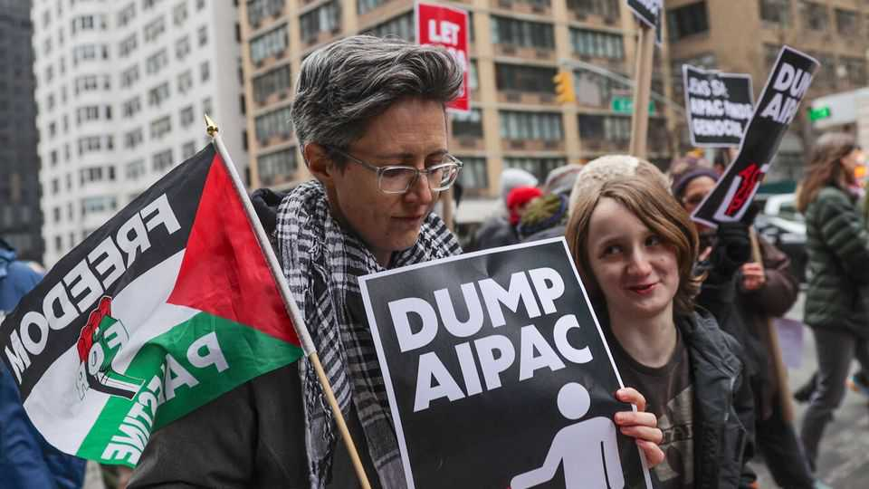
目前最受关注的组织，正如当年一样，是以色列公共事务委员会（American Israel Public Affairs Committee，AIPAC），这是美国最大的亲以游说团体。该组织致力于加强美以两国关系已有约70年历史。与其他国内游说团体一样，它不接受包括以色列在内的外国政府资金，而是依靠美国民众的捐款，其中许多人是犹太裔。该组织成效显著，经常吸引两党高层政要出席其会议。但随着美国社会态度的变化，其策略也在相应调整，这种调整可能对其事业产生负面影响。美国对以色列的支持曾是两党共识，但随着本雅明·内塔尼亚胡领导下的以色列政府右倾化，民主党对以色列的批评声渐强——这一趋势因加沙战争而进一步加速。■
近期，共和党人也开始重新审视与以色列的关系，部分人认为这种关系与其“美国优先”原则存在脱节。根据盖洛普最新调查，近年来美国民众对以色列持积极看法的比例持续下降，2月份更是跌至近40年来的低点。伊朗战争显然加剧了这种趋势。本月早些时候，乔·肯特辞去国家反恐中心负责人职务，称唐纳德·特朗普被“以色列及其强大的美国游说团体”欺骗而发动战争。公众至少部分认同他的担忧。最新《经济学人》/YouGov民调显示，多数美国人认为战争将使以色列获益，而美国将遭受损失。三分之一受访者表示亲以游说团体对政府影响力过大。与此同时，美国以色列公共事务委员会（AIPAC）也调整了其策略。
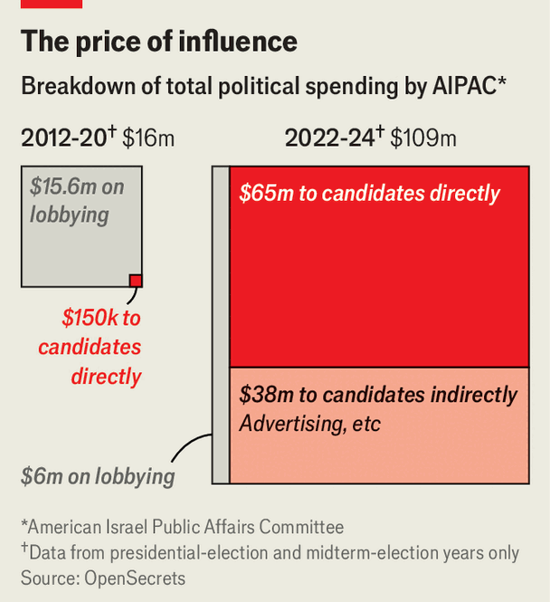
2018年以色列的几位强硬批评者当选后，美国以色列公共事务委员会（AIPAC）积极介入选举政治，不仅影响议员们的投票方式，还决定谁能当选。2022年，它推出了“统一民主项目”（United Democracy Project），这是一个允许无限制筹集资金的超级政治行动委员会。此前十年，它在选举中仅投入15万美元，但在2022和2024年选举周期中却投入了1亿美元（见图表）。截至今年，AIPAC已向民主党初选中遏制“反对者”的行动投入超过3000万美元，重点针对新泽西州、北卡罗来纳州和伊利诺伊州的众议员选举。但由于对以色列的支持存在争议，AIPAC设立了诸如“选举芝加哥女性”（Elect Chicago Women）等中性名称的代理组织，其广告中不提及以色列。例如在新泽西州，这类组织就针对汤姆·马林诺夫斯基（Tom Malinowski）因投票支持特朗普和共和党为移民与海关执法局（ICE）拨款的行为展开攻击。■
这一新策略的效果参差不齐。在伊利诺伊州，AIPAC支持的四名候选人中仅有两人当选。其在北卡罗来纳州支持的候选人瓦莱丽·福希（Valerie Foushee）在竞选期间公开否认了AIPAC的支持。尽管马林斯基（Mr Malinowski）在新泽西州的选举中落败，但一位亲巴勒斯坦的活动家却胜出。马林斯基曾被许多人视为对以色列相对温和的代表。“他们变得极端化，结果适得其反，”第三方式（Third Way）智库的马特·贝内特（Matt Bennett）表示。民主党高层正避开AIPAC的资金支持。这一切似乎并未影响该组织。在社交媒体上庆祝其在伊利诺伊州的胜利时，AIPAC宣称“支持以色列是良好的政策和政治策略”。若真如此，另一家中东和平基金会（Foundation for Middle East Peace）的拉拉·弗里德曼（Lara Friedman）表示，他们本应向选民阐明这一立场。■
美国以色列公共事务委员会（AIPAC）表示，“像许多组织一样”，它“将继续采用多种工具参与本届选举周期的竞争”。但其利用前哨组织的做法，使其与石油、烟草和加密货币等行业并列，这些行业也采取了类似策略。对AIPAC而言，更大的风险在于，这种做法可能强化关于暗中影响政策制定的反犹太主义刻板印象——而此类观点目前正日益流行。■ 关注美国政治动态，请订阅《The US in brief》每日简报，获取最新政治新闻的快速分析，以及《Checks and Balance》周报，深入探讨美国民主现状及选民关切议题。
§026 美国原题：Snarled airports and frozen funding test the new DHS secretary · 板块：United States · 栏目：美国
“我的目标是在六个月后，我们不再每天成为头条新闻。” 被确认为国土安全部（DHS）部长的马克·韦恩·穆林（Markwayne Mullin）希望重塑该部门形象。过去一年，该部门已成为唐纳德·特朗普（Donald Trump）大规模驱逐政策的先锋。其执法人员已导致两名美国公民死亡，批评者称还有更多人遭到殴打。作为前参议员的穆林建议，移民与海关执法局（ICE）应更像“运输服务”而非一线执法力量。
他同意特工在进入私人领地前应获得司法搜查令，并称政府与不合作城市的冲突是一场“误解”。然而，他的首要考验更为平凡。民主党已连续一个多月拒绝为国土安全部（DHS）拨款，除非法案包含对移民与海关执法局（ICE）特工的新限制。该部门许多员工被认定为关键岗位，因此必须无薪继续工作。这引发了困难与不满。超过450名运输安全管理局（TSA）特工已在此僵局中辞职。据该部门称，3月23日近11%的TSA特工称病缺勤，导致机场出现数小时的排队现象。局势已紧张到特朗普不得不派遣ICE特工协助。■
美国运输安全管理局（TSA）工作人员代表称当前措施不安全且无用：美国移民与海关执法局（ICE）人员未经培训无法进行乘客安检。目前他们似乎仅负责守卫出口并查验身份证明。“这一切毫无意义，”一名前ICE官员表示，他疑惑为何政府不直接启用海关官员，其中许多人已驻扎机场。大量愤怒旅客或促使国会关注此事。（因此，或许也包括达美航空宣布将不再允许国会议员插队的声明。）目前考虑的选项之一是达成协议，为美国国土安全部（DHS）大部分行动提供资金，但不包括ICE的遣返行动。共和党人随后可能尝试通过一项单独的ICE资金法案，该法案需简单多数即可通过。■
该措施还将包含特朗普热衷的《拯救美国法案》（SAVE America Act）的若干要素，该法案要求美国公民在登记投票时提供公民身份证明，并在投票时出示照片身份证件。然而，民主党人表示，任何拨款法案都必须包含对移民与海关执法局（ICE）的改革措施，例如要求特工佩戴执法记录仪并摘下口罩——这是他们在机场采取的做法，但特朗普坚持认为在逮捕行动中不应这样做。一些共和党人似乎也对为ICE拨款感到不安。总统本人则态度模糊。“我尚未看到具体协议，因此不想评论，”特朗普在穆林宣誓就职后表示，“但无论他们达成什么协议，我基本上都不会满意。” ■
关注美国政治动态，订阅《美国简报》（The US in brief），获取每日快速分析的最重要政治新闻；以及《制衡简报》（Checks and Balance），每周深度解析美国民主现状及选民关切议题。■
§027 美国情报机构人士怨声载道原题：America’s spies have a lot to complain about · 板块：United States · 栏目：美国
美国情报机构人士怨声载道，他们正面临政治化、清洗以及一位可能不愿倾听他们意见的总统。
“我无法确定这是否是CIA历史上最好的一年，但这是我记忆中最棒的一年，”一位在该机构工作了32年的资深人士今年早些时候如此表示。至少在3月18日的听证会上向国会作证时，CIA局长约翰·拉特克里夫（John Ratcliffe）是这么向议员们描述的。他强调，CIA士气高涨，人力情报人员数量同比增加25%，对外情报收集总量也同步增长，对华情报收集更是翻了一番。“这是一支知道自己正在出色完成任务的队伍。”
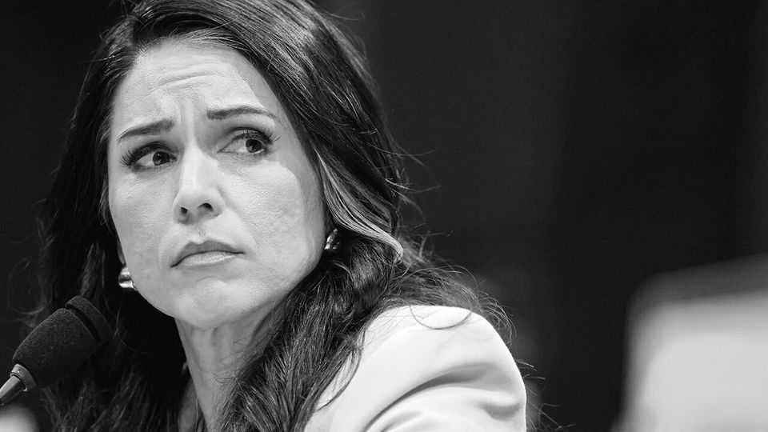
但外界显然持不同看法。
《经济学人》采访了多位现任及前任情报官员。他们描述了一个情报界——美国18个情报机构和部门的统称——正因复仇驱动的清洗、混乱的领导和政治化而动荡不安。“士气已跌至谷底，”一名消息人士表示。这种悲观情绪有多个原因。最直接的是，情报人员本应向上司如实汇报。但在特朗普执政期间，这并不总是受欢迎。例如，3月18日，国家情报总监图尔西·加巴德（Tulsi Gabbard）向国会提交了年度威胁评估报告。她在书面陈述中指出，美国去年对伊朗的军事打击“彻底摧毁”了其核浓缩计划，且伊朗“未采取任何努力”重建该计划。
这些说法削弱了特朗普先生发动对伊朗战争的正当性——即该国距离制造炸弹仅差两周。加巴德女士在口头证词中省略了这些内容。一天前，乔·肯特——MAGA组织的忠实支持者，曾领导加巴德女士办公室下属的国家反恐中心——因反对这场战争而辞职，称没有情报支持特朗普先生所声称的伊朗构成“迫在眉睫的核威胁”。当被追问此事时，加巴德女士——她本人长期以来反对与伊朗开战——否认对此类事务负有责任。“只有总统才能决定什么构成迫在眉睫的威胁，什么不构成，”她回应道。“这令数千名美国情报官员感到意外。”
美国中央情报局（CIA）成立于1947年，明确旨在避免战略意外，如六年前日本袭击珍珠港的事件。第二个问题是特朗普的复仇议程。政府无正当理由解雇大量情报官员，仅仅因为他们在过去参与了与特朗普相关的调查，例如涉及俄罗斯干预的调查。去年，该机构解雇了CIA最资深的俄罗斯事务官员，以及国家安全局（NSA）的首席数据科学家，后者负责信号情报工作。在CIA内部，许多高级官员提前退休，而其下属人员的离职率也异常偏高。■
《经济学人》指出，美国中央情报局美洲事务中心两位官员——一名助理局长和一名副助理局长——近期离职，恰逢特朗普总统对加勒比海和太平洋地区涉嫌贩毒船只的打击行动之后。美国中央情报局参与了该行动，该行动普遍被认为非法。“任何暗示这些官员因与政府政策存在分歧而退休的说法都是完全错误的，”一名官员表示。第三个问题是情报工作的重要性已不如从前。当被问及特朗普是否像其他总统一样每天获得情报简报时，拉特克利夫（Ratcliffe）回避了问题，转而表示他每周平均向特朗普提供情报简报10到15次。■
但据一位熟悉此事的人士透露，许多CIA分析师不仅对工作可能被曲解感到沮丧，还对情报需求不足感到不满。拉克利夫公开强调情报收集是CIA的核心业务，而非对所收集情报进行客观分析——这本应是与情报收集并列的同等重要任务——这一做法被部分分析师视为轻视。但这并不意味着行动官员——那些在前线招募特工并执行其他任务的间谍——感到满意。许多官员可能对被派往加拉加斯和德黑兰的任务感到兴奋。“今年CIA计划招聘并部署的官员数量将超过过去25年来的任何时期，”拉克利夫表示。但官员们仍对约翰·布伦南推行的改革措施心存不满，布伦南曾在奥巴马政府时期担任CIA局长（2013-2017年）。
他通过设立11个新的“使命中心”重组了机构，将行动人员与分析师混合编组。许多资深官员被调离岗位。这些改革大幅削弱了长期在机构内占据主导地位的行动部门的权力，同时塑造了一个更加自上而下的服务体系——这种体制对特朗普而言更为易操控。多位CIA局长曾承诺逆转这些举措，但最终都未能成功。“你反复听到的说法，”一位资深人士表示，“是这里并非我当初加入的组织。” ■ 关注美国政治动态，请订阅《The US in brief》，我们的每日简报提供最新政治新闻的快速分析；以及《Checks and Balance》，每周专栏深入探讨美国民主现状与选民关切议题。
§028 美国发起网络攻势原题：America goes on cyber-offence · 板块：United States · 栏目：美国
“这仅仅是网络战争新时代的开始，”伊朗黑客组织Handala（Handala）在本月早些时候入侵美国医疗公司斯特里克（Stryker）后警告道。据该组织称，此次攻击导致超过20万台服务器和设备的数据被删除，斯特里克公司大部分业务运营陷入停滞。伊朗在中东现实冲突中对美国利益发动网络攻击已有长期记录，此类行动为海湾战争向美国延伸提供了渠道。在此背景下，美国于3月6日发布了新的网络战略。■
文件篇幅简短——七页（含封面和封底）——细节内容也较为稀薄。但其强硬的语气和对进攻性策略的强调，显然契合当下时局。该战略标志着美国在网络安全领域应对方式的重大转变，从以往侧重防御转向更具进攻性的姿态。该战略重申了人们耳熟能详的观点：美国依赖互联网；流氓国家和犯罪集团利用互联网窃取情报、诈骗和威胁美国民众；同时，美国必须强化防御体系，包括通过联邦政府与私营部门之间更紧密的协作，因为私营部门掌控着大部分相关网络。■
现在政府也将采取行动。"我们将迅速、果断且主动地应对针对美国的网络威胁。"其承诺在威胁突破美国网络之前予以破坏，暗示美国将预先打击威胁源头。这并非完全新颖——美国国防部网络司令部早已奉行"防御前进"战略，但如今执行力度更大。政府同时希望鼓励私营企业更积极地应对外国威胁。官员们强调这不意味着"反击式黑客攻击"，即目前非法的网络正义行为。但伦敦皇家联合服务研究所的加雷思·莫特（Gareth Mott）表示，他们已"试探性地涉足"这一概念，他指出一些公司对扮演更大角色表现出兴趣。例如，谷歌去年夏天就设立了专门的"破坏单位"。■
美国的新网络战略对本国进攻性网络能力持激进态度。文中提及一项在委内瑞拉的行动，称网络工具可能使政府部队在1月突袭逮捕总统尼古拉斯·马杜罗时“目盲心迷”。这或许是指此前报道的网络攻击，可能切断了加拉加斯部分地区电力供应。伊朗战争也凸显了网络间谍活动的作用：据称以色列入侵德黑兰交通摄像头，借此追踪阿里·哈梅内伊大阿亚图拉在2月28日遇刺前的行动轨迹。“现实是，我们已将网络行动人员推向前线。”1月参议院听证会上，少校瑞安·梅瑟如此表示。有趣的是，这份新网络战略对美国的对手却保持沉默。■
文章提及中国，但仅限于“数字技术中嵌入审查、监控和意识形态偏见”的表述。然而并未提及中国大规模入侵美国手机或预置可破坏基础设施的恶意软件的行动。也未明确提及俄罗斯在欧洲日益激进的网络破坏行为，或朝鲜工业级网络犯罪活动。美国外交关系委员会的马修·费伦（Matthew Ferren）则质疑美国网络力量是否具备完成所有任务的能力。国家安全局与五角大楼网络司令部（均由同一人领导）在劳拉·卢默（Laura Loomer）——一名右翼网红——据称敦促唐纳德·特朗普解雇现任负责人后，近一年内均未有参议院确认的领导。新任指挥官缺乏直接的网络作战经验。■
费伦先生指出，该命令的军事任务，包括对伊朗的战争，“可能限制其执行防御国内关键基础设施的反网络任务的能力”。与此同时，隶属于国土安全部的网络安全和基础设施安全局（CISA）正陷入混乱。特朗普将该机构在选举安全中的角色作为攻击目标（他声称拜登偷走了2020年大选，但毫无证据）。此前担任该机构代理局长的马杜·戈图穆卡拉（Madhu Gottumukkala）于2月26日被调职，其任期因丑闻而备受争议。■
更大的问题是，进攻性优势是否能弥补防御性薄弱。前英国国家网络安全中心负责人基兰·马丁（Ciaran Martin）认为：“这不是同时进行攻防的问题，而是两种截然不同的运动。”在加拉加斯（Caracas）切断电力与在美国保护输油管道免受网络破坏，几乎没有共同之处。■更正：本文最初提到特朗普政府希望鼓励私营企业自行采取行动进行“黑客反击”。尽管政府希望私营企业更积极地扰乱外国威胁，但官员们并未鼓励企业进行黑客反击。抱歉。
§029 美国原题：Why Donald Trump is putting his face on a coin · 板块：United States · 栏目：美国
“你必须在东西上署上自己的名字，否则没人会记得你。”据《政客》报道，总统唐纳德·特朗普在参观乔治·华盛顿的门罗维恩庄园时如此表示。这位开国元勋未能以自己名字命名自己的财产，如今已被人彻底遗忘。除了在物品上署名，特朗普还热衷于将自己的形象印在物品上。巨型横幅上印着一位内阁成员称其为“大而美丽的脸庞”，这些横幅遍布美国首都哥伦比亚特区的政府建筑外墙上。
特朗普的黄金卡允许支付100万美元获得在美国居住的权利，其上的总统形象甚至比自由女神像还要高大。如今特朗普正将自己形象印上美国货币。3月19日，美国艺术委员会（成员由总统挑选）批准发行一枚纪念美国250周年诞辰的黄金纪念币，币上将出现特朗普的肖像。他以强硬姿态倚靠书桌：握紧拳头、眉头紧锁、颧骨分明。上方刻有“liberty”字样。硬币背面将饰有鹰形图案。此举打破了传统，通常民主国家的政治领袖不会出现在货币上。不过象征性国家元首有时会有，如英国和瑞典的君主。■
独裁者也常被印在货币上：扎伊尔（Zaire）前独裁者蒙博托·塞塞·塞科（Mobutu Sese Seko）曾出现在纸币上，头戴豹皮帽。相比之下，美国通常仅将已故总统或其他知名人士的肖像印在纸币和硬币上。事实上，联邦法律禁止在货币上描绘在世的总统。根据财政部的说法，特朗普政府正利用一项法律漏洞，允许美国铸币局在无需国会明确批准的情况下发行纪念金币。上一位在世美国总统出现在硬币上是1926年，当时卡尔文·柯立芝（Calvin Coolidge）出现在庆祝美国建国150周年的纪念币上。将统治者肖像印在货币上以提醒民众谁掌权的做法可追溯至几个世纪前。■
尤利乌斯·凯撒（Julius Caesar）是首位在硬币上自称终身独裁官的罗马人，这些硬币宣告了罗马共和国的终结。稍后的皇帝康茂德（Commodus）则将自己描绘成赫拉克勒斯（Hercules），这位以力量著称的半神。但在现代民主国家，此类排场展示已不再流行。英国最近决定，即使是已故名人也可能因争议而不再适合印制在纸币上，转而将荣誉献给野生动物（以及查尔斯国王）。■ 通过《美国简报》（The US in brief），我们的每日简讯提供对美国政治最重要新闻的快速分析；以及《制衡》（Checks and Balance），每周专栏深入探讨美国民主现状及选民关切议题。
§030 对特朗普而言，古巴是伊朗所不具备的一切原题：For Donald Trump, Cuba is everything Iran is not · 板块：United States · 栏目：美国
对特朗普而言，凝视古巴或许是种慰藉。表面上看，他与这个岛国的互动似乎令人不安地与他在伊朗制造的混乱如出一辙。正如特朗普在任期内推翻了奥巴马达成的与古巴的协议，又未能在严厉制裁下达成更优协议一样。哈瓦那的共产党人，尽管腐败且愤世嫉俗，却似乎与德黑兰的神权政客一样狂热地坚持其陈旧的意识形态。如同神权领袖，马克思主义者们似乎也未能理解优质海滨房产的价值。■
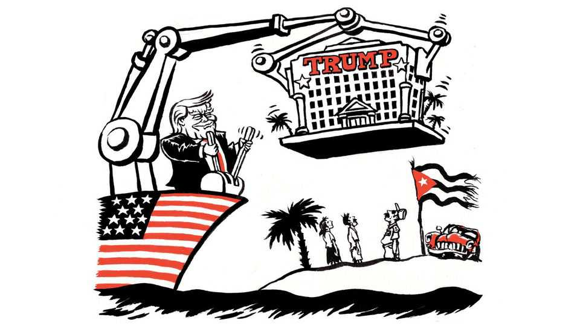
古巴的最终目标仍不明确，正如伊朗的情形一样。谁能预料特朗普最终会接受什么样的协议，才能在特朗普心中算得上胜利？但古巴是一个人口约900万的国家，而非9300万。得益于前一位美国总统的重大协议，古巴不再构成核威胁，不会在加勒比海地区四处发射弹道导弹。两国在国家意志较量中的最大差异，印证了特朗普自1970年代以来始终坚信的信念，却在伊朗问题上未能领悟：掌控石油的一方掌握着话语权。特朗普抱怨伊朗以石油为杠杆，充当“世界霸凌者”，通过关闭霍尔木兹海峡遏制美国和以色列。而在西半球，他可以成为那个霸凌者。■
他当特朗普将委内瑞拉的专制强人尼古拉斯·马杜罗替换为更顺从的德尔西·罗德里格斯后，切断了古巴廉价石油的供应源。自1月底以来，美国的关税威胁已阻止古巴政府从其他地方获得石油供应。古巴仅能生产满足其40%电力需求的燃料。难怪在伊朗挑衅并羞辱他时，特朗普对掌控古巴感到如此满足。今年3月中旬，他得意地宣称：“我认为我可以用它做任何想做的事。”他甚至不需要像以色列这样偶尔令人烦恼的盟友协助，更不用说欧洲这个一贯令人困扰的对手了。展现出一种此前在伊朗政策中未曾体现的执行力，古巴移民之子、国务卿马可·鲁比奥系统性地阻断了政府获取外汇的渠道。■
古巴老化电力网络本月第三次崩溃，导致全国停电，电信系统陷入瘫痪。医疗、食品、通讯和交通等交织的危机正变得愈发严峻。人们很容易想象出一个截然不同的古巴。事实上，这样的场景曾真实发生过。在特朗普最喜爱的电影《教父第二部》中，黑手党头目迈克尔·柯里昂（Michael Corleone）于1958年底造访哈瓦那。首都当时是光鲜亮丽、充满魅力的贸易枢纽，街头挤满贫困却乐观的民众，美国商人、政客和黑帮成员在金碧辉煌的酒店和赌场中观赏精彩演出、达成有利可图的交易。■
一位美国电话公司高管向古巴总统富尔亨西奥·巴蒂斯塔赠送了一部纯金电话，这份礼物几乎与当年瑞士高管为寻求降低关税而送给特朗普的金表和金条一样俗气又浮夸。“这种政府知道如何帮助商业、鼓励商业。”迈克尔的黑手党同伙哈曼·罗思如此宣称。“我们现在拥有了我们一直需要的东西：与政府的真正合作关系。”迈克尔在革命到来时仓皇逃窜。这场革命将带来与苏联的新联系、美国公司持有的土地和炼油厂被国有化，以及自1960年起至今持续的美国贸易禁运。特朗普长期以来一直希望与古巴政府建立商业关系。■
早在1998年，特朗普旗下公司特朗普酒店及赌场度假村（Trump Hotels & Casino Resorts）就曾试图投资古巴，这似乎违反了美国对古巴的禁运政策。（当霍曼·罗斯（Hyman Roth）赞叹1950年代的哈瓦那时，他提到：“这里的酒店比我们在赌城（Vegas）建的任何赌场都更大气、更奢华。”）十年后，特朗普在古巴注册了其标志性商标，这一行为符合美国法律，但似乎违背了他此前承诺的“直到古巴完全自由才开展业务”的承诺。然而，特朗普究竟认为“自由”意味着什么仍存疑。他对古巴的言论加剧了其外交政策的混乱。即便在他尚未改变政权之前，他在古巴的目标就与其所谓尊重主权、不干涉他国内政的立场相矛盾。■
他去年六月提交的国家安全备忘录，阐述了其在古巴的雄心，开篇即强调“需要更多自由与民主”和“尊重人权”。这在政治上是明智的。这些仍是美国古巴流亡者的目标。事实上，佛罗里达州南部众议员玛丽亚·埃尔维拉·萨拉扎尔（María Elvira Salazar）——另一位流亡者后裔——呼吁对古巴政权进行“纽伦堡审判”，并推动迅速转向民主。或许，随着总统与古巴政府展开谈判，他将坚持其一贯主张，尤其是考虑到鲁比奥个人和政治利益所在。但政权根深蒂固，长期封锁可能引发新的难民危机。此外，特朗普已充分证明，他对人权的虔诚与对主权的虔诚一样功利。■
对他而言，古巴是民主国家还是君主制国家其实并不重要；他想要的只是一个能够进口美国产品和服务的合作伙伴，美国古巴贸易与经济委员会主席约翰·卡武利奇（John Kavulich）表示。“如果你能做到这一点，他根本不在乎政府的名称是什么，”卡武利奇补充道。“而这就是古巴人必须接受的现实。”经历了数十年的斗争，这样的结果或许会让古巴人民感到失望。但至少电话能正常使用，对某些人来说，这甚至可能是件好事。■
§031 墨西哥经济是否崩溃原题：Mexico’s broken economy · 板块：Americas · 栏目：美洲
墨西哥总统克劳迪娅·希内鲍姆（Claudia Sheinbaum）称，经济正在稳步运行。私下里，她本人及其政府则更为担忧。希内鲍姆上任后的首个完整财政年度，墨西哥经济仅增长0.8%。这是自疫情以来墨西哥最差的增长率，也是拉美所有大型经济体中最慢的增长速度。墨西哥月度劳动力市场调查显示，正式就业收缩，投资也出现下降。疲软增长对墨西哥而言并非新鲜事。过去三十年间，该国经济年均增长约2%，远低于巴西和土耳其等国。投资从未强劲增长。政府称正迎来转折，2025年的糟糕表现只是短暂波动。
■
经济部长办公室官员维达尔·勒伦斯（Vidal Llerenas）表示，执政第一年总是充满挑战。新政策仍在设计中，前政府往往在选举年加大支出，导致新政府在公共投资方面资金短缺。经济复苏的条件并不理想，低投资抑制了增长。2025年经济增长率同比下降6.6%，相比前一年。仅公共投资就骤降28%，这是近三十年来最剧烈的下滑，政府大幅削减了基建支出。私营部门对机械和设备的采购也减少，企业选择观望。多数分析人士预计2026年经济增长率将在1.4%至1.8%之间。本地银行巴纳基银行（Banco Base）的加布里埃拉·西勒（Gabriela Siller）表示，预计的增长率几乎仅能与人口增长保持同步。■
希内姆博女士（Sheinbaum）所属的莫雷纳党（Morena）的核心承诺之一是提高民众生活水平，而当前的经济表现显然未能兑现这一承诺。墨西哥的人均GDP已回落至2017年的水平。唐纳德·特朗普（Donald Trump）的贸易政策对经济造成打击，汽车、钢铁和铝制品的关税重创了墨西哥最大的出口产业。2025年，汽车出口量下降了2.7%。美墨加协定（USMCA）目前正接受正式审查，各缔约方须于7月1日前决定是否将协议延长16年，或启动终止协议的程序。投资者对这种不确定性感到不安。然而，尽管外部风险常成为新闻头条，但它们并非墨西哥经济衰退的主要原因。2025年整体出口增长7.6%，这是墨西哥自2020年以来首次出现贸易顺差，阻止了经济陷入衰退。虽然整体投资下降，但外国直接投资在2025年增长了10.8%。■
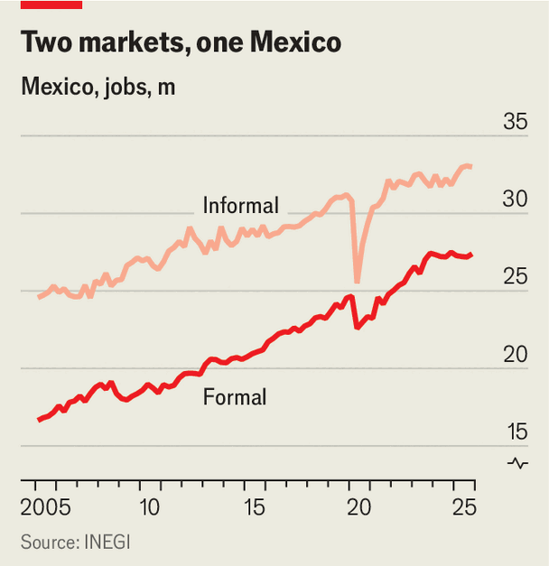
本地企业比外资企业更为谨慎。墨西哥的弱点源于国内问题。最大的挑战或许是长期定义墨西哥劳动力市场的非正式经济部门（见图表）。许多企业主试图避开税务机关的视线，回避投资和信贷。这使他们得以不注册员工，从而规避最低工资标准、社保缴费及税务合规成本。结果，墨西哥约55%的劳动者从事低技术含量、低生产率的非正式工作。部分原因在于此，墨西哥工人的生产率仅为美国的三分之一。得益于与美国的自由贸易，自国家复兴运动党（Morena）2018年执政以来，墨西哥的正式经济表现良好。但非正式部门发展滞后。Morena并未对此提供帮助。2014年最低工资仅为中位工资的37%。■
莫雷纳党将最低工资标准提高至75%以上。这缓解了贫困，非正式工人的工资也有所上涨，因为新的最低工资标准使极低工资变得不再那么社会可接受。但此举却抑制了正式就业和经济增长。与其推进税制改革——鉴于墨西哥税收收入占GDP的比例是经合组织（OECD）成员国中最低的——谢因鲍姆政府选择追讨大企业的未缴税款，而这些税款是按追溯方式计算的，一些企业认为这种计算方式具有随意性。接连的莫雷纳政府还通过一系列宪法改革、司法体系的彻底重塑以及对能源和供水供应的更大国家控制，给墨西哥的正式雇主带来了令人担忧的不确定性。“在短时间内他们改变了游戏规则，”墨西哥城美国商会会长佩德罗·卡萨斯说道。■
这为小型企业主保持“地下”运营提供了巨大动力。乔治城大学的安东尼奥·奥尔蒂斯-门纳（Antonio Ortiz-Mena）表示，电力供应的不可靠性也制约了增长。宪法要求政府控制能源供应。国家电力公司CFE的扩建计划要求到2030年累计投入290亿美元用于电力生产和传输。但希内姆博（Sheinbaum）政府无力承担这笔费用。2024年，即她上任前一年，财政赤字达到国内生产总值的5.7%，这是36年来最高水平。今年，养老金、社会福利计划、债务偿还和强制性转移支付将消耗10.2万亿比索（5700亿美元）预算的大部分，留给其他用途的资金寥寥无几。因此，希内姆博正试图吸引私人资本以实现CFE的目标。■
1月发布的“混合合同”框架为私营企业与CFE共同投资能源项目提供了途径。墨西哥计划（Plan México）是谢因鲍姆女士为期六年的经济战略，旨在推动墨西哥跻身全球十大经济体行列。该计划目标是使投资达到GDP的28%，并创造150万个制造业岗位。这些目标看似遥不可及。要跻身前十，墨西哥经济需每年以4%的速度超越其同行。2025年墨西哥已失去13万正式制造业岗位。谢因鲍姆女士愿意在党派要求时推动广泛的宪法改革，但在提振停滞不前的经济方面，她迄今仅限于小幅调整。■ 注册订阅《El Boletín》电子简报，了解塑造这一复杂地区的各种力量。
§032 巴西拥有应对油价冲击的秘密武器原题：Brazil has a secret weapon against oil shocks · 板块：Americas · 栏目：美洲
很少有国家能预料到由以色列与伊朗战争引发的油价冲击，巴西却做好了准备。在过去半个世纪里，这个农业大国已建立起全球最先进的生物燃料产业。巴西是第二大乙醇生产国，乙醇可作为汽车燃料使用，同时也是第三大生物柴油生产国，生物柴油用于重型车辆燃料。乙醇和生物柴油分别与汽油和柴油混合，政府强制要求的混合比例分别为30%和15%，在全球范围内处于最高水平。
巴西四分之三的轻型车辆配备了可兼容多种燃料的技术，从纯汽油到 ubiquitous álcool 泵提供的100%乙醇。这减少了巴西对进口化石燃料的依赖，并防范了市场波动的风险。据能源监管机构3月20日发布的数据，自战争开始以来，巴西汽油价格同比上涨10%，柴油价格上涨20%。这一涨幅令人痛苦，但远不及美国30-40%的飙升幅度。巴西的燃油税费相对较低，接近美国水平而非欧洲的高税率。这意味着油价大幅上涨本应导致消费者成本显著上升。但原因之一是国有石油公司巴西国家石油公司（Petrobras）的谨慎策略，该公司精炼了巴西大部分燃料，并试图消化额外成本。■
巴西生物能源的竞争力也在发挥作用，Argus Media（价格报告机构）的卢卡斯·博阿辛（Lucas Boacnin）表示。Argus数据显示，生物柴油的平均成本已首次低于进口柴油，自2023年以来首次出现这种情况。零售乙醇价格仅小幅上涨2%。据悉，政府正考虑将汽油中乙醇的比例提高至32%，并为生物柴油提供免税政策。同时，政府还启动了一项为期三年的研究，评估永久提高混合比例的技术可行性，乙醇比例将提高至35%，生物柴油则提高至25%。农业南部的帕索弗努市正在为其市政车辆测试一种新型生物燃料，以替代柴油。Unica（甘蔗乙醇贸易组织）的埃万德罗·古西表示，生物燃料并非首次为巴西提供保护，最初的目标是保障能源独立。■
军事独裁政权在1973年石油危机后推出了首个生物燃料计划——普罗阿尔科尔（Proálcool）。当时巴西80%的燃料依赖进口，阿拉伯石油禁运令正严重拖累经济。将过剩甘蔗汁加工成乙醇堪称易事。十年后，96%的新售汽车均可使用乙醇燃料。2003年首批“灵活燃料”汽车上市时，政府随即启动另一计划推广以大豆为主的生物柴油。两项计划均获得总统强有力支持，但鲜有人像巴西现任总统卢拉（Luiz Inácio Lula da Silva）般紧密拥抱生物燃料。卢拉视生物燃料为解决两大难题的良方。其一，它能增强一个虽为全球最大原油出口国却仍需进口10%汽油和25%柴油的国家的能源自主性。
第二，生物燃料使巴西能够在不损害农民利益的情况下削减温室气体排放。生物燃料无法抵消油价飙升带来的成本。如果乙醇价格低于汽油，巴西人开始更多使用乙醇，乙醇价格可能随之上涨。天然气价格高企会推高化肥价格，进而对生物燃料产业造成压力。巴西生物能源协会（Bioenergia Brasil）的马里奥·卡姆波斯表示，生物燃料生产商有望从中东地区的动荡局势中获益。行业固有的季节性对他们是利好因素。大豆收获季始于1月，而甘蔗和玉米的收获季则在4月和5月开始。这意味着生物柴油和乙醇的供应将很快大幅增加，从而压低价格。预计收获量将创纪录，进一步施压价格。其他国家也注意到了这一趋势。
印度和日本都在借助巴西的专长，助力本国民众的油箱。■ 订阅我们的拉美专属通讯El Boletín，了解塑造这一迷人而复杂地区的各种力量。
§033 加拿大伊斯兰学校数量为何激增原题：Why the number of Islamic schools in Canada is soaring · 板块：Americas · 栏目：美洲
“我们所有人都会为加拿大而战，甚至不惜牺牲生命，”阿布拉罕·阿布古奇（Abraham Abougouche）在雪片飘进办公室窗户的背景下宣称。他口中的“我们”指的是埃德蒙顿伊斯兰学院（Edmonton Islamic Academy，EIA）的教职员工和学生，这是美洲地区同类学校中规模最大的一所。他是校长。他的办公室里体现了双重身份的象征：印有巴勒斯坦国旗的拳击手套与冰球纪念品陈列柜相对而立。这种平衡颇为微妙。“同化”他说，“如果盲目进行，可能是危险的……你将失去自己的个人身份，与祖先的联系。”
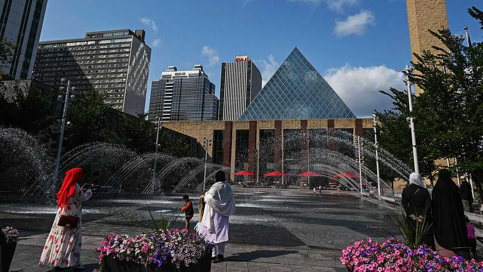
■
加拿大许多穆斯林家长都分享着他的担忧。他们担心，该国的公立教育体系——该体系大多将宗教与教育分离，允许宗教学校以私立形式运营——可能会使孩子远离伊斯兰价值观，或让他们接触伊斯兰恐惧症。大多数穆斯林学生就读于公立体系，但加拿大伊斯兰学校协会的数据表明，私立伊斯兰学校的入学人数正在上升。现有学校和新设立的学校都面临漫长的等待名单，新学校正在快速开设。EIA（伊斯兰教育协会）是许多新学校的设计灵感。该机构成立于1987年，目前有1400名学生。其宏伟的中央大厅设计为兼具清真寺功能。该校正在建设价值8000万加元（6000万美元）的扩建项目，以容纳超过1500人的等待名单。■
它将面临一定竞争，因为城市南部的奥马尔·伊本·阿尔-卡特布中心（Omar Ibn Al Khattab Centre）也在建设一所40英亩的伊斯兰学校。对伊斯兰恐惧症的担忧也是推动这一扩张的因素之一。近年来，加拿大针对穆斯林的仇恨犯罪报告数量上升。纽芬兰与拉布拉多省圣约翰市（St Johns，该省首府）伊斯兰学校董事会主席莫赫ammed·阿卜杜拉（Mohamed Abdallah）表示，一名当地公立学校教师曾对穆斯林儿童说“你们应该回到自己的国家”。他计划不久后在该地区开设实体学校，希望此举能说服穆斯林家长继续留在省内。公立教育系统正在回应这些批评。安大略省、曼尼托巴省和不列颠哥伦比亚省的教育委员会已采纳反伊斯兰恐惧症政策。部分地区更进一步。■
安大略省滑铁卢地区公立教育局据称已推出一家“伊斯兰服饰店”，销售印有“一个乌玛，一个爱”等标语的商品（乌玛在阿拉伯语中意为“民族”或“社区”）。加拿大私立学校必须遵循所在省的课程标准，以确保数学、科学和社会研究等学科的教学质量。阿布古奇先生表示，伊斯兰学校需在课程中“稍作创意”，以融入伊斯兰教义。多伦多附近塔尔比亚小学的科学课上，学习水循环的同时会穿插讨论水是真主赐予的恩典。多数伊斯兰学校数学课会强调穆斯林数学家的影响。渥太华阿尔布什拉学校的社会研究课承诺通过“文学、诗歌和故事讲述”突出伊斯兰文明的丰富内涵。■
阿布古奇先生表示，社会研究课程旨在将原住民加拿大人的困境与现代穆斯林的经历进行比较。许多伊斯兰学校延长在校时间，以便学生学习背诵《古兰经》。这类课程往往并非可选。在渥太华的伊本·巴图塔学校，学生每年需至少背诵《古兰经》一章，并被鼓励学习更多内容。17岁的加纳裔学生阿赫默德（非真名），就读于多伦多的ICE伊斯兰学校，骄傲地穿着一件摩洛哥长袍。他说：“我喜欢被视作穆斯林。”就读伊斯兰学校让他能保持一个封闭的朋友圈；他发现非穆斯林青少年往往对他的信仰感到惊讶，使他感到被排斥。他的同学在斋月期间互相挑战，要在一个月内通读整本《古兰经》。■
公共教育者和社会学家担忧，对穆斯林学生只与穆斯林交友这一偏好的包容可能损害社会凝聚力。阿里·汗（Ali Khan）指出，并非所有学生都像艾哈迈德（Ahmed）那样，他处理的是一些孩子，这些孩子是父母“被迫”送来的。“我们努力让一切变得更好，”他说。他劝服一些孩子认识到伊斯兰教育的好处；另一些则逐渐回到公立体系。家长并未得到他们想要的一切。在埃德蒙顿（Edmonton），阿卜古奇（Mr Abougouche）提到，他抵制了要求按性别分班上课的诉求。一些学校允许家长决定女儿是否佩戴头巾；另一些则有强制性规定。温尼伯（Winnipeg）的一所学校要求女孩十岁后必须佩戴头巾。关于性别与性教育的内容也是另一处摩擦点。一些州立课程现在要求学校向学生教授关于同性恋、女同性恋和跨性别者的内容。■
许多穆斯林学校选择忽视相关指令。隔离并非绝对。阿布古奇先生表示，与非穆斯林学校保持联系能确保学生与不同背景的孩子交流。"我们创造一个保护他们的气泡，"他说，"但我们也认识到，若不让他们走出这个气泡，同样危险。"午餐是法式薯条（poutine），一道经典的加拿大菜肴。学生们进入清真寺祷告时，男生与女生分开。阿布古奇先生希望他们能同时拥有祈祷与法式薯条。■
§034 唐纳德·特朗普称他正接近与伊朗达成协议 中东及非洲 交易还是虚张声势原题：Donald Trump says he is close to a deal with Iran · 板块：Middle East & Africa · 栏目：中东与非洲
战争历来遵循由日历决定的节奏，如同早期罗马将军为在收获前结束战役所设定的节奏。对唐纳德·特朗普而言，节奏更为紧张。他宣布军事行动的时间窗口始于周五下午4点，持续至下周一开市。3月21日（星期六），特朗普向伊朗发出最后通牒：若伊朗在48小时内未重新开放霍尔木兹海峡，美国将开始轰炸其发电厂。伊朗威胁将以同等手段反击海湾地区的电力设施和海水淡化设施。■
2月28日（星期六）爆发的战争似乎即将升级。两天后，美国股市开盘前两小时，特朗普突然改口。他宣布周末与伊朗就可能达成外交协议进行了“非常积极且富有成效的对话”。他表示谈判将继续进行，对伊朗电网的袭击将推迟五天（自然地，直到下一个星期六）。这并非特朗普首次在周一早晨发表模棱两可的缓和言论。不过，市场情绪依然得到缓解，油价首次在近两周内跌破每桶100美元。但地区外交官表示，特朗普声称接近达成协议的说法夸大其词。美伊两国确实通过中间人交换过信息，但尚未进行直接对话。■
特朗普政府向伊朗提出一揽子要求，并提议举行面对面会谈。《经济学人》3月26日付印时，伊朗外长阿巴斯·阿拉奇（Abbas Araghchi）似乎对这一举动持轻视态度，称伊朗“目前无意进行谈判”。这留下三个问题：会谈是否真的会发生？如果发生，能否取得成功？若未能达成协议，美伊两国接下来会采取什么行动？这将是过去一年内美伊之间的第三次谈判。前两次谈判由总统外交特使史蒂夫·威特科夫（Steve Witkoff）与阿拉奇主导。若双方再次会谈，级别将更高。特朗普称他已与伊朗一名“高层人士”交换过信息。尽管他未公开对方身份，但据知此人是伊朗议会发言人穆罕默德·巴赫尔·加利巴夫（Muhammad Bagher Qalibaf），也是伊朗最具权势的领导人之一。■
伊朗已告知中间人不再希望与威特科夫先生打交道。在与他谈判期间曾两次遭到袭击，伊朗认为他不可信。转而希望与副总统J.D.万斯对话。不仅万斯地位高于威特科夫，他更亲近MAGA阵营中的孤立主义派系；伊朗认为这使他更易接受谈判。谈判地点也将改变。此前由阿曼斡旋，但许多盟友对阿曼在战争期间对伊朗的同情态度感到愤怒。美国及其他海湾国家均不认为阿曼是可信的调解人。卡塔尔或许能胜任，但其官员表示不愿承担此责；他们本身就是冲突一方，因伊朗导弹和无人机多次袭击而遭受重创。另一个选择是巴基斯坦，该国与双方关系密切。其驻华盛顿大使代表伊朗在美国的利益。■
阿西姆·穆尼尔（Asim Munir）这位军方要员去年曾访问白宫。他也是海湾国家，尤其是沙特阿拉伯的盟友。美国提出了若干强硬要求：伊朗可保留布什尔核电站，但必须放弃其余大部分核计划，放弃铀浓缩，并交出超过400公斤、纯度达60%的浓缩铀（接近武器级）。同时需接受弹道导弹射程和数量的限制，并停止支持黎巴嫩真主党等地区代理人。若这份清单听起来耳熟，那是因为特朗普总统过去曾提出过类似要求，但伊朗均予以拒绝。目前很难确切知道伊朗幸存领导人的藏身之处正进行着怎样的对话。■
但他们都似乎认为自己占据上风，认为自己已对全球经济造成足够压力，使特朗普急于达成协议。这本是他们交出导弹或 fissile material（可制成核威慑的裂变材料）的不寻常时机，而他们的鹰派如今正寄望于将其转化为核威慑力量。伊朗也有自己的协议要求：关闭美国在该地区的军事基地、对战争进行赔偿以及掌控霍尔木兹海峡。这些对美国及其盟友而言都是不可接受的条件。乐观者——如今在中东已寥寥无几——希望这些只是开局策略。但双方的分歧巨大。即便美伊能在协议框架上达成一致，细节仍会复杂：美国如何确保伊朗履行义务？若伊朗作弊又将如何应对？■
以色列和海湾国家都担心特朗普会接受去年为结束加沙战争而推动的那种半成品停火协议——一个粗略框架，细节留待未来谈判。一位海湾国家外交官表示：“让伊朗保留其高浓缩铀的停火协议，根本不是停火协议。”如果谈判失败，特朗普有两个选择。一些顾问正敦促他宣布胜利。他可能再次宣称伊朗的军事能力已被摧毁：海军被击沉，导弹工厂化为废墟。这将是特朗普式的选择，将一场模糊的行动包装成决定性胜利。但此举将使伊朗保有其高浓缩铀储备，并事实上掌控霍尔木兹海峡。海湾国家势必愤怒。更可能的是，美国将继续战斗。■
它可能继续进行数周的空袭行动，这是以色列许多官员更倾向的选择。或者，它也可能采取升级行动。特朗普已暗示了多种可能性，从突袭霍尔木兹海峡的霍尔木兹岛——伊朗主要石油出口终端所在地，到威胁攻击发电厂。美国国防部仍在中东地区集结更多兵力。5000名海军陆战队员将于3月27日左右抵达该地区。另一批两栖作战舰艇正从加利福尼亚州启程，但需再过两周才能抵达。美国同时也在部署第82空降师数千名伞兵部队。这种情形或许会唤起一种似曾相识的感觉。就在一个月前，美国还在与伊朗进行对话的同时准备战争，最终选择了战争。■
伊朗人理所当然地担心，这次最新的外交努力可能只是个诡计，特朗普只是想平息油价波动，争取时间将部队调往该地区。答案应该很快就会揭晓——尽管或许要等到收盘之后。■ 注册订阅《中东简报》，每周获取关于这个复杂且影响深远地区的重要资讯。
§035 中东与非洲原题：The Revolutionary Guards are taking over Iran · 板块：Middle East & Africa · 栏目：中东与非洲
听唐纳德·特朗普讲话，你可能会认为自战争爆发以来伊朗领导层几乎没有变化。这位美国总统在3月23日对记者称，霍尔木兹海峡“由我与最高领袖掌控”。但随着伊朗考虑重启谈判，问题在于谁拥有发动攻击的权力并能与美国达成协议。所谓最高领袖莫哈梅德·哈梅内伊（Mojtaba Khamenei）自战争爆发之初其前任兼父亲于2月28日遇害后，便再未露面或发声。
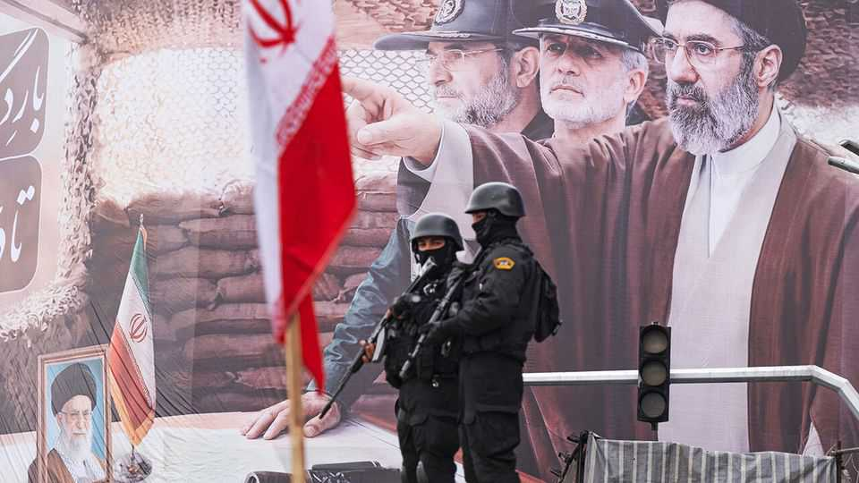
高级顾问和指挥官，包括国家安全委员会秘书长阿里·拉里贾尼（Ali Larijani）在内的多名要员也已遇害。取而代之的是一个不透明、分散的机构网络，旨在使政权免受斩首式打击。其核心是伊斯兰革命卫队（IRGC），这支拥有19万名成员的准军事力量如今似乎同时掌控着国家和战争。一位有高层政权接触渠道的流亡伊朗人表示：“对伊斯兰革命卫队而言，这场战争是福气，它已巩固了他们在领导层的地位。”与政权关系密切的人士描述了一个体系，其性质已从神权政体转向类似阿尔及利亚、埃及或巴基斯坦的军事独裁政权。“我们已从神权转向硬实力，”其中一人说道。根据宪法，伊朗最高领袖应为一名高级宗教领袖。
哈梅内伊的晋升更多源于革命卫队（IRGC）对延续性的需求，而非宗教资历。宗教领袖被强迫支持他。然而新任最高领袖仍迟迟未露面——官方称出于安全考虑。关于他昏迷不醒、在莫斯科医院或已去世的传闻层出不穷。“尚不清楚他是否具备做出重大决策的能力，”以色列分析师拉兹·齐姆特表示。若他重新现身，大概率只会作为象征性人物。英国商人穆罕默德·阿默尔西，与政权有接触，称“如今真正掌握实权的是军队”。实际上，权力已转移到革命卫队手中。由军事人物主导的国家安全委员会制定总体战略。3月24日，该委员会将曾任哲学教授的拉里贾尼替换为革命卫队官员穆罕默德·祖尔加德。■
其他成员包括穆罕默德·巴格赫·加利巴夫，这位权力强大的议会发言人曾通过革命卫队体系晋升，以及众多伊朗革命卫队组织（IRGC）将军。复兴后的国防委员会充当战时指挥中心，负责选定目标并指挥打击行动。该委员会成员大多匿名，但被认为是由前或现任IRGC将军藏匿于掩体中。实际作战指挥权归属Khatam al-Anbiya，即IRGC的战场总部。伊朗问题观察人士认为，该部队仍牢牢掌控伊朗最先进且射程最长的导弹。这对有意与美国进行谈判的各方而言是个难题。尽管IRGC拥有严密的指挥体系，但其并非铁板一块。例如，曾将已故哈梅内伊的专制统治比作沙阿时代的霍梅尼的退休将军侯赛因·阿拉伊，就公开支持改革派。■
卡利巴夫领导着一群务实派人士，他们根据形势需要在激进与温和之间摇摆。这两个阵营都可能愿意进行对话。然而，仍有许多强硬派人士对妥协持强烈敌意。他们的领导人是赛义德·贾利利，这位前革命卫队成员在上届总统选举中获得了1350万张选票。目前尚不确定各派系是否会遵从停止与美国敌对行动的命令，或遵守暂停核发展计划的协议。关注伊朗局势的观察人士也质疑中央指挥部在全国范围内的权威程度。伊斯兰革命卫队（IRGC）之所以在遭受重创后仍能保持韧性，其中一个原因似乎是其组织结构的分散化。为防止重演去年夏天战争中大规模暗杀事件，前IRGC成员表示，该部队被划分为31个子区。■
每个组织都配备了独立的武器储备（包括导弹和无人机）及目标银行，同时拥有在通讯中断或中央指挥失效时自主使用这些武器的权限。伊朗伊斯兰革命卫队（IRGC）的内部安全机构巴吉（Basij）也已分裂为数万个小型机动单元。在以色列开始轰炸其基地后，这些单元迅速分散至清真寺、学校或桥下营地。这对美国和以色列来说是个坏消息，因为分散的IRGC单元可能失控，形成游击部队的核心，从而持续对抗并无限期封锁霍尔木兹海峡。相比之下，外部对IRGC的威胁似乎比数周前显得不那么紧迫。■
战争初期，伊拉克库尔德反对派武装威胁要跨过边境进军，引发伊朗库尔德斯坦及其他有少数民族（包括阿拉伯人、阿塞拜疆人和俾路支人）省份的民族起义。但伊朗革命卫队的增援部队和无人机及导弹袭击浪潮迫使他们暂时重新考虑。民众起义的预期也已减弱。一些伊朗人曾为哈梅内伊的死亡欢呼，在阳台上庆祝以色列袭击政权基地。但基础设施轰炸和平民死亡削弱了他们的热情，伊朗革命卫队在抵抗中的成功也被视为另一重打击。■
伊朗革命卫队（IRGC）如今将批评者称为敌方合作者，并威胁没收其财产。“我们曾讨论过战争结束后政权的终结，”一位位于伊朗东北部马什哈德市的教师说，“但现在我们担心如何应对一个比以往任何时候都更强大、更有力量的政权。” ■ 注册中东简报（Middle East Dispatch），每周获取关于这个复杂且具有深远影响地区的重要动态。
§036 当前海湾战争中，水可能比石油更具决定性 中东及非洲原题：In the current Gulf war, water may prove as decisive as oil · 板块：Middle East & Africa · 栏目：中东与非洲
若伊朗战争持续升级，水可能成为与石油一样关键的商品。海湾地区干旱的阿拉伯国家日益依赖海水淡化技术，该技术为巴林、科威特和卡塔尔提供90%以上的饮用水供应，也几乎满足阿曼的需求。沙特阿拉伯的海水淡化占比为70%，阿联酋（UAE）约为40%。美国斯蒂姆森中心（Stimson Centre）的彼得·施瓦茨斯坦（Peter Schwartzstein）表示，这为海湾国家带来了“危险的新脆弱性”。
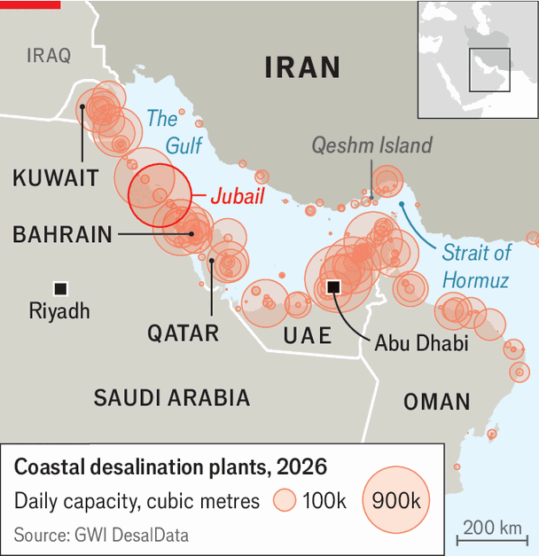
他们快速增长的人口和渴求发展的工业如今都依赖于“少数几处水基础设施”的正常运转。这些阿拉伯国家依赖数千座海水淡化厂，其中最高效的设施沿海岸线分布（见地图）。这使它们极易受到伊朗导弹和无人机的威胁。战争期间的风险显而易见。2008年美国外交电报中的一份文件（后由维基解密公布）指出，仅朱拜尔海水淡化厂当时就为沙特首都利雅得提供了超过90%的饮用水。如果其输水管道或周边电力设施遭到破坏，该城市将在一周内不得不疏散。该文件结论称，若发生这种情况，“沙特政府的现有结构将无法维持”。自2006年以来，海湾国家已投入约530亿美元以应对这一风险。■
沙特阿拉伯目前约40%的海水淡化水来自分布更分散的小型设施。阿布扎比和卡塔尔正在扩大战略储备。得益于这些投资，海湾多数国家已具备一定保护能力。即便伊朗袭击了淡化水厂，多数国家仍能维持部分饮用水供应。但重大缺口依然存在。海湾地区大部分海水淡化水仍依赖少数几座工厂。储水能力参差不齐：阿联酋计划到2036年将战略储备量提升至正常消耗量的两天，通过严格配给可延长至约一个月。像巴林这样的小型国家则更为脆弱。攻击民用供水基础设施通常被视为战争罪行。这种行为可能已在冲突中被双方实施。美军据称袭击了伊朗克什岛上的淡化水厂，伊朗随后反击了巴林的淡化水厂。■
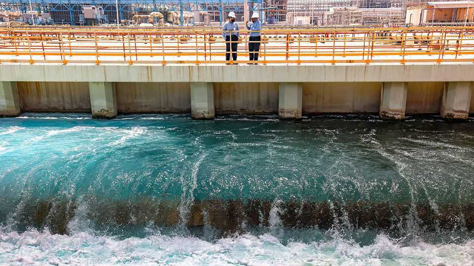
在唐纳德·特朗普突然改变对伊朗核设施威胁的表态前，伊朗伊斯兰革命卫队表示将针对海湾国家的供水设施采取行动。尽管伊朗对海水淡化依赖较少，但其水资源极度匮乏。数十年来修建水坝和过度开采导致水源枯竭，近三分之一伊朗人面临用水短缺。而战争将无助于伊朗与周边国家本就有限的水资源合作。随着冲突持续，伊朗可能切断对海湾邻国的供水，但自身也将日益陷入缺水困境。■ 注册订阅中东简报，每周获取关于这一复杂且具有深远影响地区的最新动态。
§037 伊朗政权封锁互联网 中东及非洲原题：Iran’s regime walls off the internet · 板块：Middle East & Africa · 栏目：中东与非洲
纳马尔·巴加伊-亚兹迪（Namdar Baghaei-Yazdi）今年几乎没和在德黑兰的家人联系。上周导弹袭击了他们的街区；数日他都不确定他们是否还活着。巴加伊-亚兹迪的情况具有代表性。像他这样的海外伊朗人，自一月大规模抗议活动以来，与国内家人联系极少。政权自那以后已两次切断与全球互联网的连接。第二次断网始于2月28日，美国和以色列对伊朗的袭击之后。这是伊朗历史上最长且最严厉的断网举措。更值得注意的是，这次断网可能成为永久性措施。■
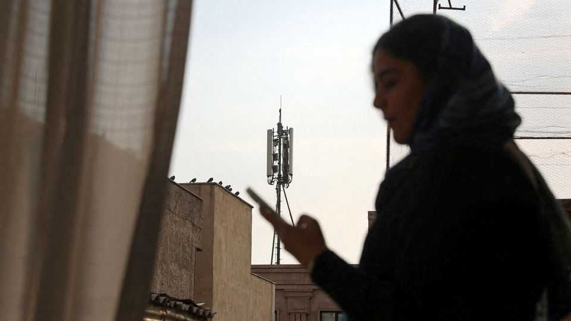
近二十年来，伊朗伊斯兰共和国频繁切断互联网以应对国内不满和外国导弹威胁。2019年及2022年骚乱期间，该政权通过禁用边界网关协议（BGP）路由实现这一目标。一旦线路断开，伊朗的互联网流量将完全中断。此次情况有所不同，政权未切断路由，而是搭建了类似中国、朝鲜和俄罗斯的封闭国内网络。国家信息网络（NIN）旨在避免互联网中断带来的经济冲击，同时实现完全政府控制。该网络不提供对外国媒体或平台（如Facebook、WhatsApp）的访问，机器人会扫描已批准的应用程序，寻找反政府情绪。尽管公众无法访问更广泛的互联网，政权仍保有访问权限。■
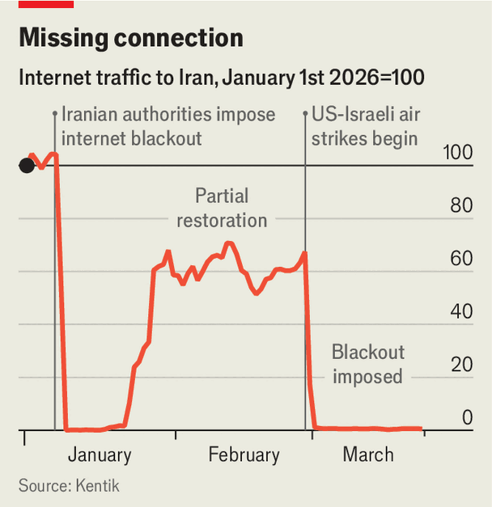
■伊朗政府在所有BGP路由恢复后，可向获准个人和机构提供互联网接入，同时拒绝其他用户访问。凯尼克（Kentik）网络情报公司主管道格·马多里（Doug Madory）表示，此举意味着大多数伊朗人接入全球互联网的可能“无限期关闭，或至少很长一段时间”。该系统并非无懈可击。技术娴熟的伊朗人长期与政权玩猫鼠游戏，利用防火墙漏洞，常借助境外支持。一种软件通过外国志愿者的IP地址隐藏被禁流量，伪装成普通视频通话。Psiphon（一种VPN）在1月记录了超过1840万伊朗用户，包括在断网前及部分恢复期间的数据（见图表）。即便政权支持的精英群体（断网前不足1%的总流量）也难以完全避免干扰。
3月15日，该网络出现中断，暗示对白名单访问权限的收紧。国家网络（NIN）也不会影响通过星链卫星终端等绕过本地互联网的连接方式，这类终端已走私进入该国数万台。马多里先生认为，今年伊朗传出的大部分影像资料很可能通过这种方式传播。然而，这些方法技术复杂、风险极高（持有星链终端可能意味着死亡），且仅少数数百万伊朗人能够接触到。政权的希望是，NIN能让国家维持运转，同时让伊朗民众陷入信息真空。■ 注册中东简报（Middle East Dispatch），每周获取对这一复杂且具有深远影响地区的深度洞察。
§038 以色列定居者在西岸地区暴力升级 中东及非洲原题：Israeli settlers are growing more violent in the West Bank · 板块：Middle East & Africa · 栏目：中东与非洲
以色列军队花了数周时间平整出一条通往西岸地区某山丘顶部的新道路。3月17日，一辆载满临时住房的庆祝车队抵达现场，迎接车队的热烈人群包括一些自20多年前以色列政府清空名为Sa-Nur（见地图）的小定居点以来便在此居住的犹太家庭。四天后，南部两个巴勒斯坦村庄上演了截然不同的场景。 ■
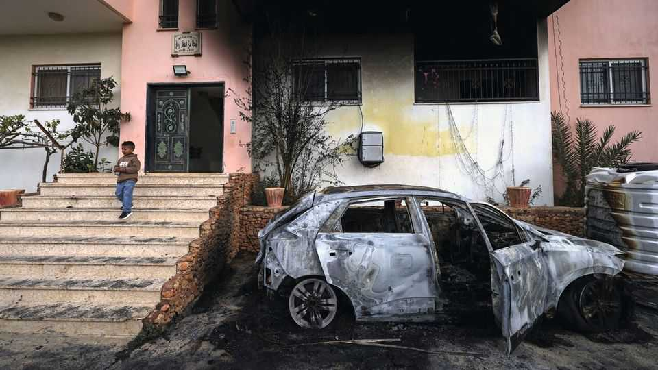
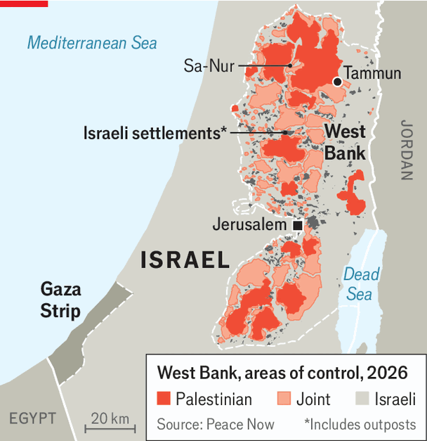
以色列定居者在一名以色列青少年被车撞死事件后纵火烧毁建筑和车辆。（警方在亲定居者政客的压力下展开调查。）这两起事件都是日益暴力的扩张定居点并控制周边土地行动的一部分。数百名巴勒斯坦人被定居者或以色列士兵杀害，这一广泛行动得到了本雅明·内塔尼亚胡政府的默许甚至支持。更多人被暴力驱逐。自2月28日与伊朗战争爆发以来，暴力升级并变得更加系统化。西岸地区的暴力在与伊朗战争前已持续恶化。2023年10月哈马斯从加沙发动袭击后，定居者展开暴力恐吓行动，旨在驱逐偏远农村社区的巴勒斯坦人，使其离开放牧土地。
据联合国称，自2023年10月以来，西岸地区已有超过一千名巴勒斯坦人被以色列定居者和以色列国防军士兵杀害，约60名以色列人也遭杀害。但观察人士指出，近期暴力呈现出新的特征。巴勒斯坦研究者亚当·拉比亚（Adam Rabia）表示：“过去他们主要针对最小的村庄，袭击较为零散，但最近我们看到的是更组织化、反复的袭击，针对规模更大的社区。他们察觉到当局无所作为，因此得寸进尺。”一名以色列官员批评同僚对问题视而不见，称：“定居者趁其他焦点转移之际加大了攻击力度。”对以色列定居者而言，这正是他们获得救赎的时刻。■
萨努尔（Sa-Nur）围绕着一座旧英国警察堡垒建立，是2005年以色列国防军（IDF）驱逐的最后一个村庄之一，当时以色列清除了加沙地带的所有犹太定居点以及北部西岸少数孤立社区。如今，在另一届以色列政府和同一批IDF的支持下，定居者正重返此地。为修建通往萨努尔的新公路，军队征用了周边巴勒斯坦城镇和村庄的120英亩农田。当地萨马里亚定居者理事会主席约西·达甘（Yossi Dagan）称他们的回归是“历史性的修复”。但对其他人而言，“修复”一词并不恰当。自2月末以来，至少有12名巴勒斯坦平民被杀。目击者称，袭击者使用了由以色列政府提供的巡逻车和武器，其中一些人穿着军装，疑似为IDF士兵。■
3月14日，两名男孩及其父母在从斋月购物之旅返回途中，于巴勒斯坦村庄塔门（Tammun）的家中车辆内遭以色列特种警察射杀。枪手称他们感觉车辆威胁，以色列调查人员未进行任何质问便接受了这一说法。以色列政府事后才发布谴责暴力行为的声明。3月18日，以色列国防军（IDF）首席参谋伊亚尔·扎米尔（Eyal Zamir）访问约旦河西岸地区，将袭击称为“民族主义犯罪事件”，并称其“在道德和伦理上不可接受”。IDF甚至从与黎巴嫩边境的作战行动中调出一个营，表面上是为了阻止定居者袭击。但此类举措意义不大，因为袭击者背后得到的正是同一军队和政府的支持。■
随着大部分常规以色列国防军（IDF）部队部署在加沙和黎巴嫩，西岸地区的安全责任由警察和IDF地区防御营承担，而这些部队的士兵大多为定居者。以色列国防军在西岸地区最资深的两位指挥官均曾在定居者创办的教育机构就读。西岸警察部队由极右翼犹太力量党领袖伊塔马尔·本-吉夫（Itamar Ben-Gvir）指挥，他多次公开赞扬暴力执法行为。财政部长贝扎列尔·斯莫特里奇（Bezalel Smotrich）本身也是定居者，同时负责西岸民事事务。作为财政部长，斯莫特里奇不仅向现有定居点拨款数十亿新谢克尔，还资助超过100个新农场，这些农场直接挑战巴勒斯坦农民对其耕种或放牧土地的使用权。■
2017年，他提出了一项计划，呼吁将约旦河西岸的巴勒斯坦人分隔到不同的地区，以“瓦解巴勒斯坦民族集体”并阻止独立。斯莫特里奇、本-吉瓦尔等内阁成员多次呼吁内塔尼亚胡正式吞并西岸地区。在阿拉伯国家的压力下，唐纳德·特朗普公开否决了这一举措，这是对盟友的罕见批评。但实际在地面，一种形式的吞并正在推进。■ Sign up to the Middle East Dispatch, a weekly newsletter that keeps you in the loop on a fascinating, complex and consequential part of the world.
§039 以色列将在黎巴嫩停留多久原题：How long will Israel stay in Lebanon? · 板块：Middle East & Africa · 栏目：中东与非洲
当以色列城镇什洛米（Shlomi）的警报声响起时，一英里南边靠近黎巴嫩边境处，远处传来嗡嗡声，随后是沉闷的爆炸声。这又是一架从边境对岸发射的无人机，由什叶派民兵组织真主党（Hizbullah）发动，该组织仍在为伊朗和其自身日益缩小的黎巴嫩选民群体而战。尚不清楚这架无人机是自行引爆还是被以色列国防军（IDF）拦截并摧毁。真主党几乎一个月前重新开始向以色列发射导弹和无人机，这发生在以色列和美国开始对伊朗发动打击行动之后。 ■
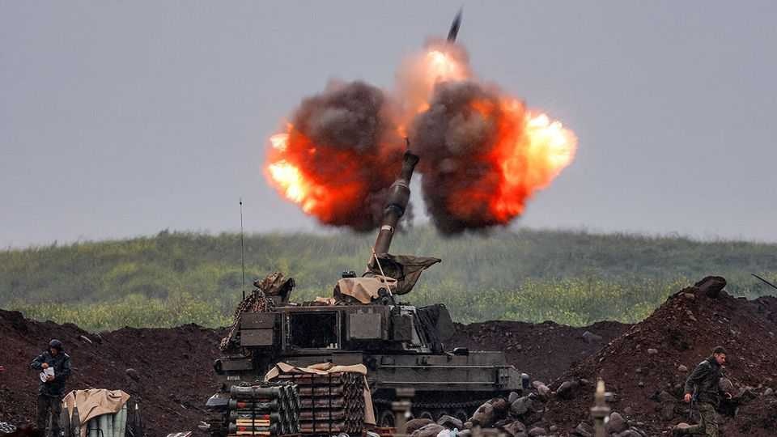
以色列国防军（IDF）随即对黎巴嫩全境所谓与真主党（Hezbollah）有关的目标展开空袭，并向南部地区派遣部队，但未发动全面入侵。空袭与地面攻势结合，已造成超过1000人死亡，迫使约100万黎巴嫩平民流离失所，其中大部分是来自南部及贝鲁特郊区的什叶派居民。这场冲突与上一轮相似，后者始于2023年10月，当时真主党参与了哈马斯对以色列的袭击。但此次有所不同，此前以色列曾因边境冲突疏散数万名平民长达一年多，而这次以色列则决心不疏散任何人。“我们不会让我们的社区长期处于无人机持续威胁下的死亡区，就像乌克兰前线那样，”一名以色列国防军军官表示。■
相反，以色列现在似乎决心将平民驱逐出南部黎巴嫩，该地区真主党仍在活动，可能无限期地。以色列官员们正积极谈论长期占领黎巴嫩大片领土的前景。3月24日，以色列国防部长基茨表示，以军将“控制剩余桥梁及安全区至利塔尼河”，该河距以色列边境约20英里。这意味着将占领近十分之一的黎巴嫩领土。以色列国防军坚称尚未收到此类命令。但以色列官员表示，无论是否占领更多领土，平民在南部家园都将无法返回，直至黎巴嫩军队对真主党采取强硬行动并确保其无法再攻击以色列。■
以色列通过炸毁利塔尼河上的八座桥梁，实际上已将黎巴嫩南部与全国其他地区割裂。这表明其可能确实在为长期占领做准备。在黎巴嫩，新占领威胁与长期流离失所危机的前景正沿着教派分歧撕裂国家。继对贝鲁特非什叶派区域实施空袭后，基督教社区日益拒绝收容难民，他们合理担忧接纳难民会招致更多以军袭击。政府对能对真主党采取多大行动存在分歧。本月早些时候，政府曾表现出决心，宣布真主党的军事行动非法。本周，外长则以干涉黎巴嫩内政为由驱逐了伊朗大使。■
作为回应，伊朗向贝鲁特发射了一枚远程导弹。对约瑟夫·阿翁总统及其军队指挥官的犹豫不决，一些黎巴嫩民众的不满情绪正在加剧。军方对政府三周前针对真主党武器的裁决几乎未采取行动，坚持称在停火协议达成前国家无法进一步行动。以色列的行动并未起到积极作用。真主党之所以能在黎巴嫩长期占据主导地位，部分原因在于其自诩为抵抗力量。目前，真主党因不断将黎巴嫩卷入与以色列的战争而备受批评。但随着最新空袭造成更多平民伤亡，以及占领威胁愈发严重，黎巴嫩民众，尤其是什叶派群体，更可能支持真主党。这将使政府兑现铲除该组织承诺的难度加大。■
尽管双方平民存在分歧，但他们都担心，无论伊朗战争如何发展，这场战争在黎巴嫩重新点燃的冲突仍将持续很久。■ 订阅Middle East Dispatch，每周获取关于这个复杂且具有重大影响的地区的重要信息。
§040 博茨瓦纳准备押注钻石产业更大胆的赌注原题：Botswana prepares to take an even bigger gamble on diamonds · 板块：Middle East & Africa · 栏目：中东与非洲
博戈洛·肯纽恩多（Bogolo Kenewendo，图中下方）在2月开普敦矿业会议上佩戴的钻石吊坠，是象征性珠宝。De Beers公司长期与钻石这一宝石同义，其开采的钻石帮助南部非洲国家成为非洲最富裕的国家之一。如今博茨瓦纳希望进一步押注这些宝石，计划增持其在这家传奇企业中已持有的15%股份。
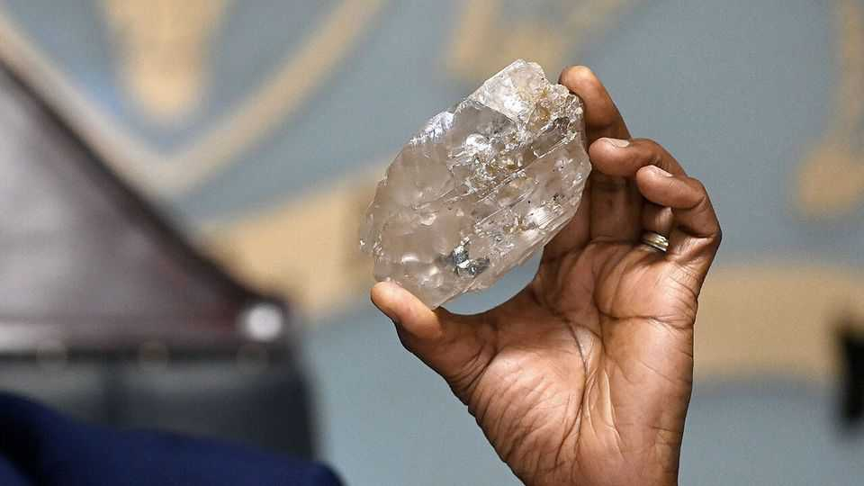
■
英美资源集团（Anglo American）即将出售其旗下戴比尔斯（De Beers）公司，恰逢天然钻石价格因实验室培育钻石的低价冲击而暴跌，同时美国和中国等主要市场婚庆市场萎缩（因此订婚戒指销量减少）也起到一定影响。据估计，戴比尔斯的估值已从2011年的127.5亿美元骤降至23亿美元。对部分潜在投资者而言，这或许是抄底机会，但对博茨瓦纳而言，这个非洲历史上最大的钻石生产国（按价值计算），即便以当前估值增持股份也是一场豪赌——可能成为非洲国家试图从自然资源中获取更多价值却反而加深对其依赖的警示。博茨瓦纳的历史与戴比尔斯紧密相连，如同金项链中的钻石。■
这家以南非两位兄弟命名的公司（De Beers，戴比尔斯），其名称源自19世纪在他们土地上发现钻石的两位南非兄弟，由维多利亚时期的帝国主义者塞西尔·罗兹（Cecil Rhodes）与另一位富豪共同创立。1967年，博茨瓦纳从英国独立后的一年，地质学家发现了首个大型钻石矿藏。两年后，该国成立了与戴比尔斯合资的矿业公司德博斯瓦纳（Debswana）。多年来，博茨瓦纳不断争取更优条件，包括2004年收购了戴比尔斯的少数股权。1970年至2000年间，博茨瓦纳经济年均增长10.6%，略高于同期中国9%的平均增速。该国审慎管理意外之财，投资基础设施、学校和诊所。政府将预算盈余存入应急基金，如政府投资账户。
博茨瓦纳如今的光芒不再耀眼。钻石产业的衰退——占该国GDP的约25%和出口的80%——自2023年以来实际上已使经济增长停滞。随着钻石收入的减少，博茨瓦纳已耗尽其应急储备基金。债务与GDP之比自2023年以来几乎翻倍；去年两家信用评级机构下调了博茨瓦纳主权债券评级。2024财年（4月起）的预算赤字预计将达到GDP的近9%。所有潜在的戴比尔斯买家，无论是私营财团还是钻石生产国（安哥拉和纳米比亚也在考虑竞标），都相信天然钻石的低迷态势可以逆转。这个行业始终是采矿、制造和营销的结合体。1947年戴比尔斯提出的“钻石恒久远，一颗永流传”这一口号，曾在大萧条后重振了人们对钻石的兴趣。■
加雷思·彭尼（Gareth Penny），前戴比尔斯（De Beers）高管，也是其中一家财团成员，他表示复兴天然钻石需求是扭转公司局面的关键，因为钻石属于奢侈品。“在我30多年从业经历中，从未遇见过因钻石闪亮而购买的消费者，”他说。但博茨瓦纳——戴比尔斯72%产量来自该国——有其他动机。该国希望至少获得25%股份，因为这将赋予其“否决权少数股东”地位，可否决重大决策。政府希望在本国最重要的企业运营中拥有更大话语权。去年有关安哥拉觊觎多数股权的报道令博茨瓦纳陷入恐慌。安哥拉近期钻石产量大幅上升，2024年首次在20年内重新成为非洲最大钻石生产国（按价值计算）。■
从博茨瓦纳的视角看，安哥拉收购戴比尔斯的行为，感觉有点像卡塔尔或阿联酋收购沙特阿美（Saudi Aramco）。博茨瓦纳认为，如果它能持有更多戴比尔斯股份，就能在采矿之外创造收益。“我们对业务中整个生态系统感兴趣，我们相信这将助力博茨瓦纳其他产业的发展，”肯纽恩多女士表示。总统杜马·博科称：“我们不仅是地球财富的守护者，更要成为其价值的创造者。”然而，质疑者对博茨瓦纳的计划持保留态度，原因有三。首先是资金短缺问题。12月国际货币基金组织（IMF）警告博茨瓦纳勿提高持股比例，理由是其“财政状况”。如果博茨瓦纳通过承诺未来部分钻石销售收益来筹措资金，只会推迟问题的解决。■
第二点担忧是博茨瓦纳难以从钻石产业链中获取更多收益。该国在宝石切割和抛光领域难以与印度竞争——这是一项利润率低的业务，与戴比尔斯部分转移至博茨瓦纳的宝石贸易类似。戴比尔斯尝试发展零售业务的努力也未取得成功。博茨瓦纳咨询公司Econsult Botswana的凯思·杰弗里斯（Keith Jefferis）认为，戴比尔斯最赚钱的部分仍是采矿业。他质疑政府为何要增加对表现相对不佳的公司部门的敞口。“目前没有证据表明戴比尔斯产业链中存在盈利，如果增加我们的持股比例，我们也不会获得更多收入。”第三项批评指出，博茨瓦纳应致力于摆脱对钻石的依赖。■
尽管钻石无疑为博茨瓦纳带来了福音，但杰弗里斯先生认为，该国也是“典型的荷兰病案例”，这使得其他潜在出口产业竞争力下降。他建议利用稀缺资源扶持本地出口导向型制造业。尽管博科先生在11月表示博茨瓦纳希望获得多数股权，但最可能的方案是戴比尔斯被一个包括私人投资者和非洲各国政府在内的广泛财团收购，其中私人投资者将占据多数股权。“可能没有必要全力以赴，”德博斯瓦纳公司的一位高管承认。安哥拉也重新评估了竞标多数股权的明智性。在开普敦，该国矿业部长迪亚马尔托（实为）佩德罗·阿泽维多强调了“所有市场参与者通力合作”的重要性。至于博茨瓦纳，尚不清楚是否应该参与竞标。■
博茨瓦纳的精英阶层不可避免地受到钻石在该国历史中所扮演角色的影响。危险在于，博茨瓦纳可能会像一个不理智的浪漫主义者，试图筹钱购买一枚难以负担的钻石戒指——为一段可能并不合适的婚恋。■ Sign up to the Analysing Africa , a weekly newsletter that keeps you in the loop about the world’s youngest—and least understood—continent.
§041 欧洲的选择：增长，还是沦为附庸原题：Europe’s choice: Grow, or become a vassal · 板块：Europe · 栏目：欧洲
乌尔里克·马尔门迪尔（Ulrike Malmendier）撰文
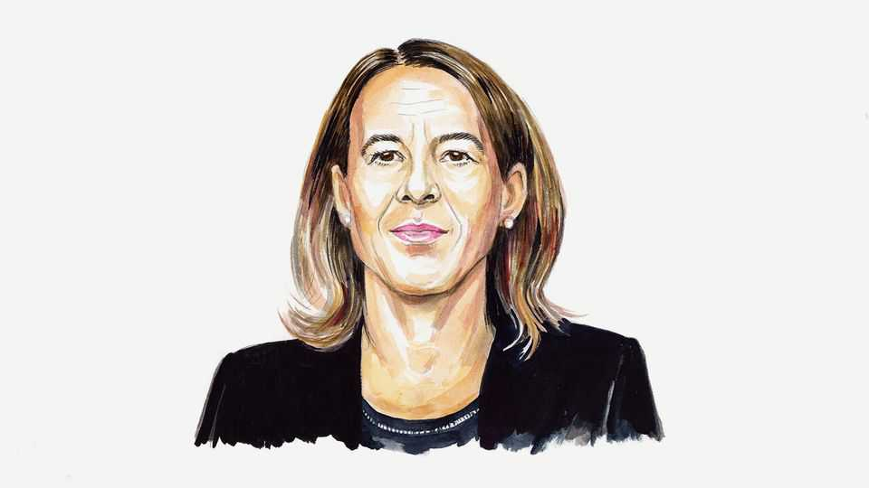
随着中东战火持续，霍尔木兹海峡仍对多数船只关闭，欧洲再次陷入无助境地。能源价格持续攀升，欧洲领导人意见分裂，微弱的增长预期恐将消退并演变为衰退。作为重建和平繁荣大陆的组织，欧洲联盟（European Union）在盟友化作对手、自身无力保护供应链的国际环境中过于脆弱。停滞不前的欧洲无法奢谈地缘政治主权。
欧洲式微的原因并不神秘。任何特定工业和技术基础所能支撑的增长空间终究有限。欧洲不仅在人工智能领域几乎毫无建树，更错失了上一轮技术革命——软件产业的崛起。而其高昂的能源成本正逐步侵蚀此前工业革命时期积累的产业基础。欧洲领导人大多已意识到这些挑战，并希望加以解决。关键问题是他们能否真正应对。最具前景的方案是打造所谓“28号制度”——以单一的欧洲监管框架，使欧洲第二大经济体（仅次于美国）的市场对初创企业与创新公司更加开放，企业可选择适用该制度以突破本国监管壁垒。■
这一构想由前意大利总理恩里科·莱塔（Enrico Letta）和马里奥·德拉吉（Mario Draghi）在报告中提出，旨在更便捷地培育经济中最活跃的领域——软件和人工智能企业。而如今正是实施这一构想的最佳时机。目前市场上既有企业数量有限，因此此举将创造众多赢家和少数失利者。在所有展示欧洲重拾过去三十年失去经济优势的方式中，这或许是成本最低且潜力最大的方案。3月18日，欧盟委员会公布了其版本的这一构想，名为EU Inc。然而，该提案在本质上显得过于保守。它仅建立了一个欧洲企业注册系统，但每家公司仍需在成员国注册并受该国法律管辖。■
预防性的行政、司法或公证控制在公司章程的制定与修改中必不可少，这实际上保留了制度原本旨在绕过的守门人。欧洲真正需要的是一个统一的法律框架，使企业能在全欧大陆开展业务：一次注册、一套适用于跨境雇员的用工规则、一份增值税申报表、一套破产程序（若企业经营失败）以及一套退出机制（若创始人希望出售并退出）。当然，统一的公司税基也必不可少。欧盟委员会的提案确实带来了两点希望曙光：首先，建立适用于全欧盟的股票期权制度，所有国家都必须遵守统一标准；其次，为初创企业简化破产程序。这两项举措表明布鲁塞尔仍具备雄心。■
不幸的是，前者面临工会的强烈抵制，这些工会担心“税基侵蚀”（通过企业避税）和“监管套利”。而后者则受到限制，例如仅适用于员工不足100人的企业。那些快速增长并跨越这一门槛的企业——最可能需要跨境破产保护以吸引投资的企业——被排除在外。这显然无助于问题解决。欧洲大陆并不缺乏初创企业，缺乏的是将它们规模化发展为大型、动态、前沿企业的能力。这些失败暴露了现有制度方法的枯竭。欧洲一体化项目旨在帮助成员国实现单靠自身难以达成的利益。但克服集体行动困境的关键要素之一，是确保没有任何一个成员国能单独否决决策。■
对于欧盟单一市场——旨在将27个成员国市场整合为单一消费池的政策——这在很大程度上是可行的。欧盟委员会可通过合格多数作出决策。但要扩大企业规模，需协调税收、劳动法和破产法等领域的规则。这些调整需要成员国一致同意，这意味着任何一个成员国均可阻止其他成员国的改革。德国系统性地阻止涉及劳动法的任何变革，法国则阻挠旨在提升服务领域竞争的举措，爱尔兰和卢森堡则反对统一税收基础的尝试，等等。欧盟创始条约最初旨在推动二战后六国间的和平进程，如今却难以满足450m欧洲人对增长的需求，他们希望在地缘政治动荡中捍卫自身角色与价值观。
即便在2009年生效的《里斯本条约》（Lisbon treaty）将许多领域的投票机制从一致同意制改为合格多数制之后，欧盟在推动经济增长和主权最关键的领域仍未能取得实质性进展：真正的超国家公司、共同防务采购、统一能源市场或真正的资本市场联盟。这使得唯一可行的选择正变得愈发不可避免：由愿意推进改革的成员国组成的联盟。欧盟将继续监管单一市场，但一小部分成员国可以绕开一致同意制的束缚，在改革上走得更快更远。首先，如果这些国家能在真正超国家公司形式、统一的股票期权税收、跨境无摩擦雇佣以及统一的破产框架等方面达成共识，这些国家将吸引其他地区无法留住的企业和人才。■
若不建立这一领先集团，未来将出现改革在每一步都被当日维克托·奥班式人物阻挠的局面。这将导致一个无法壮大本土企业、发展本国工业或武装国防的大陆——一个走向附庸之路的大陆。愿意采取行动的成员国应率先行动，其余国家可待其准备就绪后跟进。■乌尔里克·马尔门迪尔是加州大学伯克利分校经济学教授，2022年至2026年曾担任德国政府经济专家委员会成员。
§042 俄罗斯欲限制与外界接触 欧洲 春季攻势原题：Russia wants to limit contact with the outside world · 板块：Europe · 栏目：欧洲
多数观点认为，俄罗斯从对伊朗的战争中获益。飙升的油价和天然气价格缓解了其此前紧张的预算。中东冲突可能减少美国向乌克兰输送武器的规模。美欧盟友间的裂痕扩大，可能削弱对乌克兰总统的支持。然而，莫斯科却陷入新的焦虑。这种焦虑并非源于乌克兰或西方，而是来自安全机构。过去几周，安全机构开始在莫斯科和圣彼得堡封锁移动互联网服务，使俄罗斯两大城市陷入数字黑洞。■
此举导致了日常生活被打乱，引发了民众的不满，并在精英阶层内部制造了分歧。莫斯科的断网行动始于3月6日——据称是俄罗斯联邦安全局（FSB）下达的指令——持续了近三周后才部分恢复。俄罗斯官员以安全为由解释了这一举措。大多数莫斯科市民则认为，政府正在测试一种新的网络防火墙系统，旨在将俄罗斯与全球互联网断开连接，仅允许访问批准的网站。此类断网事件在地方省份较为常见，但莫斯科和圣彼得堡却鲜有发生。首都长期以来是公民自由缺失的补偿之地，几乎所有居民都依赖日常使用的在线服务。但突然间，家长无法与子女联系，司机无法支付停车费，快递员也无法完成订单配送。■
就连出租车也必须通过电话预约或街头招手，如同旧日时光。据《 Kommersant 》报报道，每天服务中断令俄罗斯企业损失高达10亿卢布（约合1200万美元）。对讲机、寻呼机和纸质地图销量激增。在莫斯科著名的圣父池（Patriarch’s Ponds）——米哈伊尔·布尔加科夫小说《大师与玛格丽特》的取景地——安装了一部复古红漆公用电话亭，其外壳仿若棺材，宛如一件观念艺术作品。“猜猜他们要埋什么吧，”一位居民调侃道。一个答案是克里姆林宫自战争爆发以来维持的常态。■
防空警报在别尔哥罗德（Belgorod）等城市或许司空见惯，为士兵提供补给的地区葬礼比婚礼更常见，但莫斯科却花费数百万卢布打造持续数月的圣诞装饰和夏季庆典，以转移人们对战争的关注。如今安全部门将战争带入了日常生活。一位心理学家如此形容：“莫斯科的空气中似乎发生了某种变化，仿佛紧急状态已悄然侵入人们的生活。”这一切都是以“安全”之名展开的，这是弗拉基米尔·普京（Vladimir Putin）的执念。然而在应对感知威胁的过程中，安全部门却动摇了“特别军事行动”的关键要素——战争与日常生活的平衡。自2022年以来，首次出现抗议的传闻。这种威胁感源于人们对战争陷入僵局的感知。战争看似难以为继，却无人看到出路。■
经济形势一度承压，至少直到油价上涨之前。在最近由民调机构Levada（Levada）和《新报》（Novaya Gazeta）联合进行的民调中，四分之三受访者用“对战争的疲惫感”来形容当前情绪。另一处引发焦虑的根源来自俄罗斯与伊朗的特殊关系，后者曾被视为被安全官僚控制的被围困堡垒。伦敦国王学院（King’s College London）的格雷戈里·阿斯莫洛夫（Gregory Asmolov）指出，克里姆林宫长期以来将开放性视为威胁，希望将俄罗斯与全球互联网断开连接。他补充道，乌克兰战争“成为催化剂，加速了俄罗斯将自身从开放、全球化的体系转变为封闭可控系统的进程”。以色列和美国利用移动网络和交通摄像头击毙多名伊朗领导人，进一步强化了封锁一切非安全机构控制范围的诉求。■
克里姆林宫现已将Telegram——俄罗斯最受欢迎的即时通讯平台，月用户达9400万人——列为打击对象。Telegram由俄罗斯科技企业家帕维尔·杜罗夫（Pavel Durov）创建，他长期拒绝为俄罗斯安全部门提供访问权限。一个月前，俄罗斯国家媒体报告称杜罗夫因“恐怖活动”被调查。普京本人素来不使用互联网，他下令封锁Telegram，认为其是敌对通信工具。封锁原定于4月1日开始，但提前实施。同时遭攻击的还有广泛用于规避官方限制的虚拟私人网络。杜罗夫称此举旨在推动俄罗斯网民转向名为Max的国家通讯应用，该应用内置监控功能。■
强制手段使许多俄罗斯人对政府产生不满。德米特里·杜罗夫（Dmitry Durov）声称：“8年前伊朗曾尝试过同样的策略却失败了。伊朗以捏造的借口禁止Telegram，试图迫使民众使用国家主导的替代平台。尽管被禁，大多数伊朗人仍使用Telegram。”克里姆林宫面临的重大难题在于，Telegram已深深融入俄罗斯的日常生活，甚至在统治阶层中也广泛使用。就连普京的新闻秘书德米特里·佩斯科夫（Dmitry Peskov）也抱怨称，封锁Telegram使他的工作更加困难。“我们正迅速失去在国外开展宣传工作的工具，尤其是在近邻地区。我们该如何传达这些含义？”他在最近的会议上如此问道。其他官员则以普通民众的安全为由抗议。“乌克兰武装部队是威胁。”
“信息缺失才是更大的威胁，”别尔哥罗德州州长维亚切斯拉夫·格拉多夫说道。对许多俄罗斯官员而言，能够访问Telegram也关乎个人安全。很少有人愿意接受马克斯安全部门的监控。最愤怒的莫过于那些支持战争的军事博主，他们依靠该频道获得知名度和收入。军事指挥官会向这类博主提供信息，以扩大其受众并筹措捐款。他们每月收入可达150万卢布，主要来自广告。Telegram被封锁后，这些博客几乎与反战媒体难以区分。一个显著的例子是伊利亚·雷梅斯洛的帖子，这位曾被派去谴责已故反对派领袖亚历克谢·纳瓦尔尼的亲克里姆林宫博主。■
3月17日，他在Telegram上发布的一则帖子中指责普京篡夺权力、破坏经济并实施审查制度，称“弗拉基米尔·普京必须辞职并接受战争罪和盗窃罪的审判”。两天后，雷梅斯洛（Remeslo）被送入精神病院，令人不寒而栗地唤起了《大师与玛格丽塔》的精神。■ 要想了解最大的欧洲新闻，请订阅我们的周报《Café Europa》。
§043 德国社会民主党直面深渊 欧洲政治原题：Germany’s Social Democrats gaze into the abyss · 板块：Europe · 栏目：欧洲
德国社会民主党（SPD）已连续28年中的24年参与执政，但该党从未如此低迷。3月22日，该党在莱茵-普法尔茨州选举中惨败于中右翼基民盟（CDU），而该州历来是社会民主党的稳固票仓。此前，该党在巴登-符腾堡州的选举中仅勉强突破5%门槛进入议会。近年来，作为德国联合政府中弗里德里希·默茨（Friedrich Merz）领导的基民盟的副手，社会民主党在几乎所有州和全国选举中都遭遇失利（见图表）。
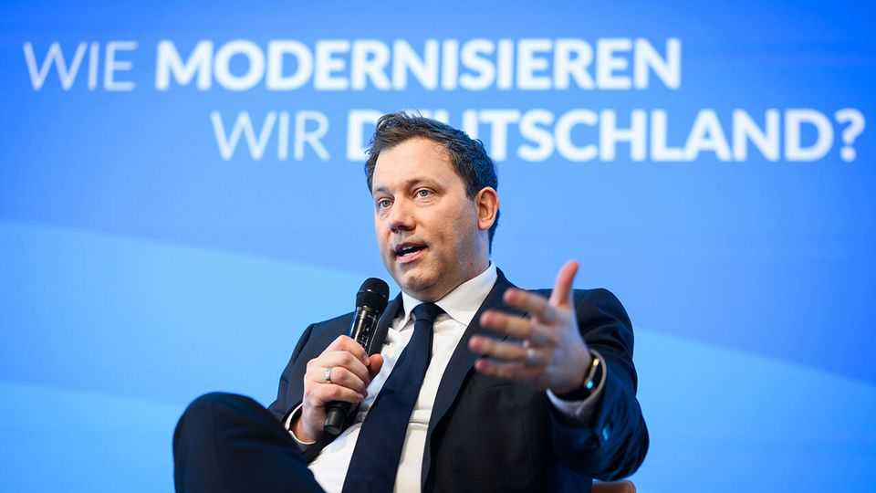
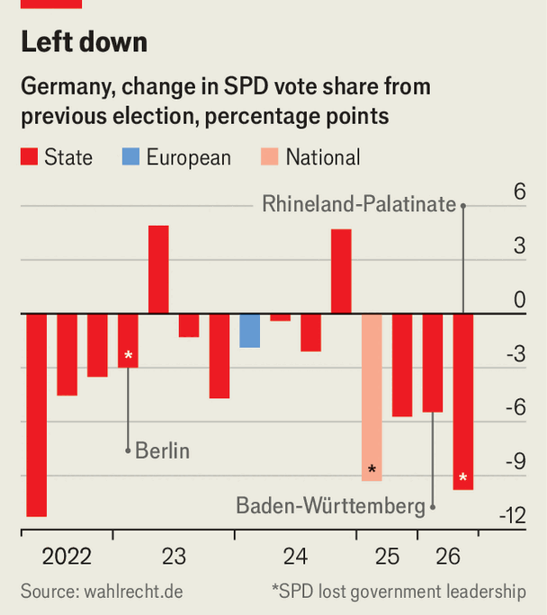
SPD内部许多人公开承认，他们已不再清楚自己这个左翼中间派政党究竟代表什么立场。然而默茨的阵营并未因胜利而得意，因为心怀不满的社会民主党可能阻碍他们振兴经济的计划。在去年备受期待的“改革之秋”宣告失败后，财政部长希望在夏季议会休会前推动一系列税制、医疗保险和养老金改革。他能否如愿，很大程度上取决于其联合政府伙伴是否能接受艰难的妥协。该党中间派长期试图重拾2000年代的活力，当时由社民党领导的政府推动了广泛的劳工与福利改革。一些人认为社民党此后迷失了方向。“我们太长时间给人的印象是更关心不工作的人而非工作的人”，社民党议员迪尔克·维斯表示，他补充道这种看法是错误的。
但一些年轻议员希望将重点转向再分配和维护福利国家。联合政府微弱的多数为搅局者提供了机会。关键人物是副总理兼社会民主党共同领导人拉尔斯·克林格贝尔（Lars Klingbeil）。3月25日，他发表了一次重要演讲，主要针对本党，呼吁改革劳动、税收和养老金规则以增加工作时间，并呼吁节制开支。此举势必让默茨（Mr Merz）感到满意。问题是克林格贝尔能否说服党内同僚，毕竟他被左翼同志不信任。德国Tutzing政治教育学院（Tutzing Academy for Political Education）的乌尔苏拉·门奇（Ursula Münch）表示，社会民主党处境如此严峻，以至于克林格贝尔可能觉得与内部对手对抗已无退路。若如此，社会民主党最大的斗争或许才刚刚开始。■
为掌握欧洲最重要的新闻动态，请订阅我们的周度专属简报《Café Europa》。■
§044 法国为击败民粹主义提供希望原题：France offers some hope for defeating populists · 板块：Europe · 栏目：欧洲
欧洲
法国人热爱他们的市长。如此之深，以至于全国有35,000位市长。事实上，民调显示，民众对市长的信任度（66%）远高于对总统的信任度（25%）。这使得从3月15日和22日举行的市长选举结果推断出明年春季总统大选的走势变得危险。不过，这些结果仍能提供一些有价值的参考。首先，尽管左右翼民粹主义势力的双重压力不断增大，但地方上的中间派仍能维持优势。在十大主要城市中，社会党赢得了六个（里尔、马赛、蒙彼利埃、南特、巴黎和斯特拉斯堡）；绿党（里昂）、右翼中间派（图卢兹）和中间派（波尔多）各赢得一个。■
玛丽娜·勒庞的极右翼国民联盟（RN）唯一赢得的城市是尼斯；即便在尼斯，她的政党也支持盟友埃里克·西奥蒂，后者在当地有深厚根基，并曾脱离中右翼阵营。让-吕克·梅朗雄的极左翼不屈法国（LFI）未赢得任何大城市（尽管它赢得了鲁瓦西和圣但尼两个大城镇）。其次，明确立场至关重要。在2024年立法选举前夕，左翼温和派对社会党与梅朗雄结盟感到失望。该联盟随后分道扬镳——尽管部分社会党候选人仍与LFI建立了战术性的地方合作。在两大主要城市，社会党拒绝达成此类协议导致了胜利：在巴黎，埃马纽埃尔·格里戈利击败了中右翼的拉希达·达蒂；在马赛，贝诺·佩扬战胜了国民联盟的弗朗克·阿利索。■
第三，距离颠覆法国政党政治已过去十年，埃马纽埃尔·马克龙的中间派仍未能在全国范围内扎下稳固根基，但他们仍取得了一些关键胜利。总统的政党现名为“复兴运动”，参选人数少于国民联盟（RN）。前总理弗朗索瓦·贝鲁在帕尔（Pau）失利，他曾在该市担任市长12年。但“复兴运动”赢得了波尔多（Bordeaux）和安纳西（Annecy）；其盟友则拿下昂热（Angers）、穆尔日（Mulhouse）及多个小型城镇。可以说，中间派最显著的胜利是埃多阿尔德·菲利普（见上图）在勒阿弗尔（Le Havre）的胜选。他在一场激烈三方角逐中击败左翼和极右翼，保住市政厅。这位曾担任总理、所属政党与“复兴运动”结盟的菲利普，原本计划于2027年参选总统——除非他在勒阿弗尔失利。他的胜选，打破了赛前预测，将助力其全国竞选。■
一项民调显示，46%的受访者认为他将成为总统的“优秀候选人”，与国民联盟（Rassemblement National）领导人乔丹·巴德尔拉（Jordan Bardella）并列领先，后者得票率为45%，而玛丽娜·勒庞（Marine Le Pen）则以42%位列第三。不过，无论国民联盟的候选人是乔丹·巴德尔拉还是玛丽娜·勒庞，该党仍是总统大选的民调领跑者。在市长选举中，该党声称已拿下70个市镇，较此前的13个大幅增加。但地方选举结果并不能准确预示总统大选的走势。这些结果仍为主流政党带来一丝希望：即便面对极端势力，它们仍有可能赢得艰难的竞选。■ To stay on top of the biggest European stories, sign up to Café Europa , our weekly subscriber-only newsletter.
§045 乔治娅·梅洛尼在意大利遭遇重大挫折原题：Giorgia Meloni’s big setback in Italy · 板块：Europe · 栏目：欧洲
高处不胜寒，居高者往往面临更大的风险。意大利总理乔治娅·梅洛尼自2022年大选获胜以来，便树立了不可战胜的威望。她的右翼政府自1945年以来是第三长的执政党。她的“意大利兄弟党”仍领先于民调。但3月23日，意大利选民在一场表面上关于司法制度改革的公投中，却将其转化为对政府的不信任投票，黯淡了她的光环。为期两天的公投结果以54%对46%的票数反对她。反对党民主党领袖埃莉·斯莱因称，这“是对乔治娅·梅洛尼及其政府的明确政治信号”。■
如果选民参与度较低，影响可能不会那么大。但实际参与率达到了59%，仅比2022年低5个百分点。梅洛尼政府维持稳定的一个原因是其不愿通过提出激进变革来挑战既得利益集团。因此，一项对司法行政进行小幅调整的计划成为立法议程的旗舰项目。然而，政府在未与反对党协商的情况下强行通过该法案，这并未帮助局势。司法改革法案将完成一项职业体系的分裂，该体系涵盖法官和检察官，同时引入随机遴选机制以确定各职业监管机构成员。但这意味着需要修改宪法，因此必须提交全民公投。■
佛罗伦萨欧洲大学研究院罗伯特·舒曼中心负责人埃里克·琼斯（Erik Jones）指出，选举结果——明确的“否决”——与多数民调预期的更接近的“否决”形成鲜明对比。“某种变数出现……意大利人对1948年宪法有着近乎宗教般的忠诚。或许反对党以‘这并非修改宪法的正确方式’为论点，成功突破了民意。”他说道。其他可能性也存在。其中之一是唐纳德·特朗普对伊朗的战争。梅洛尼（Meloni）与这位不受欢迎的美国总统关系密切。竞选期间还爆发了一起涉及一名涉嫌与有组织犯罪存在财务关联的初级司法部长的丑闻；该部长在选举结果公布后辞职。但梅洛尼将矛头指向他人，迫使旅游部长达尼埃拉·桑坦切（Daniela Santanchè）辞职。■
桑坦切面临虚假账目指控（她否认不当行为），但与公投失利关联不大。相对较高的投票率暗示公众对政府的不满情绪更为深刻。被否决的法案并未触及意大利司法系统真正的症结。按某些指标衡量，意大利法院是欧盟中最慢的。该法案也分散了人们对更紧迫议题的注意力，尤其是经济几乎停滞，尽管已获得欧盟疫情后复苏资金的大量拨款。接下来会怎样？梅洛尼曾希望借助公投胜利修改选举法，以增强未来执政联盟在议会中的权重。下届选举必须在2027年举行。在本周的挫折后，政府面临的风险是，修改规则可能反而将更多权力让渡给反对派。■
这一结果也引发了另一个拟议宪法修正案的疑问，该修正案旨在增强总理的权力同时限制意大利总统的职权。这也需要提交给选民投票决定。梅洛尼女士或许希望先结束下一次选举。■ 要掌握欧洲最大新闻动态，请订阅我们的周度专属简报Café Europa。
§046 乌克兰无人机指挥官欲令俄军筋疲力尽原题：Ukraine’s top drone commander wants to bleed Russia’s army dry · 板块：Europe · 栏目：欧洲
乌克兰无人机作战最高指挥官马迪亚尔·布罗夫迪（Madyar Brovdi）正推动无人作战技术革新，北约尚未掌握其精髓
通往指挥点的道路崎岖，但黑色车窗遮蔽了细节。抵达后车门滑开，露出通往地下深处的入口。室内一条走廊排列着两排日式胶囊床，另一条走廊尽头是健身房。墙壁上布满屏幕，实时显示杀伤链数据、作战任务及敌方损失。乌克兰著名油画与导弹弹药并列悬挂，一旁循环播放着俄军士兵临终时刻的烟雾视频，旁边则是表现主义风格的男性面部石雕。
阴郁而古怪的氛围与这位负责人的人设相得益彰。在入侵前，罗伯特·“马迪亚尔”·布罗夫迪（见图）是一名精于算计的粮食经纪人。如今这位50岁的乌克兰无人作战部队指挥官则是一位历经沧桑的战士，也是针对俄军单兵无人机作战能力的核心设计者。战争爆发四年后，乌克兰的核心挑战已不再仅仅是守住领土，而是要以比莫斯科招募速度更快的速度清除俄军。多亏布罗夫迪的不懈努力，这或许正在发生。布罗夫迪在无窗的三平方米小隔间里分析数据，连续抽着香烟，啜饮着富腾·曼森茶——这暗示着他过去在伦敦拍卖行与富人交往的旧日生活。■
俄罗斯的损失自去年夏天布罗夫迪接任以来大幅上升，得益于一项重新设计、游戏化的系统，该系统现在优先打击敌方步兵。12月成为转折点，这是首次确认的乌克兰无人机对俄军造成的伤亡超过俄军的补充人数。自冬季开战以来，乌克兰无人机已至少使8,776名俄军士兵死亡或丧失战斗力，而俄军仅补充了同等数量。俄罗斯以微小的领土收益换取了这些损失。即便在最成功的进攻轴线上，靠近顿巴斯地区科斯特亚宁夫卡镇附近，俄军也仅占领了冬季战役计划中预期的23%领土。布罗夫迪的无人机旅，代号“马迪亚尔的鸟群”，声称其负责了六分之一的俄军损失。他目前掌控的更广泛无人作战力量集团则占到了三分之一以上。这些力量仅占乌克兰军队总人数的2%。■
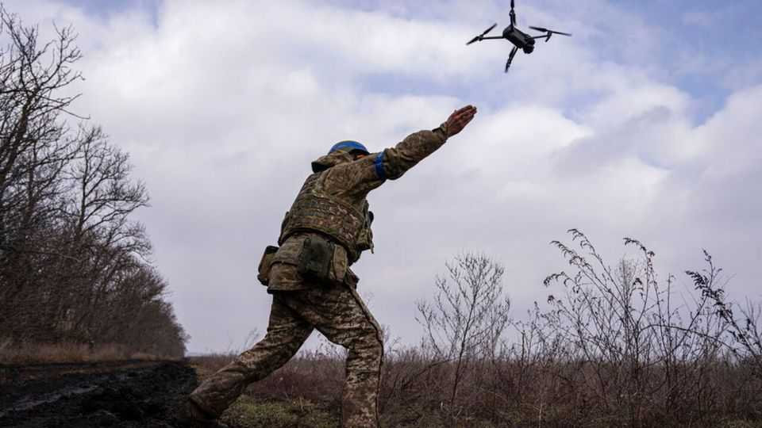
12月战况最激烈时，敌方伤亡达到每天388人，相当于一个整编营的突击部队规模。"如果一个营的步兵全部阵亡，俄罗斯人不会解散该部队，而是把文职官员派往前线，"布罗夫迪先生说。"这些文职官员是最容易成为目标的，因为他们无法作战。"他的士兵被要求至少30%的时间将目标锁定在人员而非装甲或装备上。俄罗斯只能培训和武装一定数量的招募兵，布罗夫迪先生将其比作一头奶牛，而他的部队则是挤奶的农夫。"我们需要尽可能榨取这头奶牛——俄罗斯军队，将其耗尽至超出其最大承受能力。"布罗夫迪先生是乌克兰西部边境地区裔匈牙利人，他以平民志愿者身份参战。他的崛起虽看似偶然，实则并非巧合。他将商业思维应用于战场问题，帮助乌克兰发展出最早的无人机作战能力。
2022年夏天，他在赫尔松前线作战时迎来了首次突破。当时乌克兰军队火力处于下风，更糟糕的是他们根本不知道俄军是从哪里发动攻击的。布罗夫迪（Mr Brovdi）仍是一名经验不足的士兵，他回忆起曾在亚洲商务旅行时给儿子买过一架无人机，于是让人将几架无人机送到了战壕中。这些无人机性能粗糙，但足以发现隐藏的俄军坦克。这位未来指挥官开始通过Discord社交软件，将坐标传递给附近的炮兵部队。他创建了乌克兰首条无人机杀伤链。一年后，布罗夫迪及其弟子们被调往巴赫穆特，那里已成为战争的主要杀戮场。其中一位同事曾是跆拳道冠军，绰号“克利姆”（Klym），他有个朋友曾参加过第一视角无人机竞速比赛。他建议这些速度快、机动性强的机器可以携带小型弹药。■
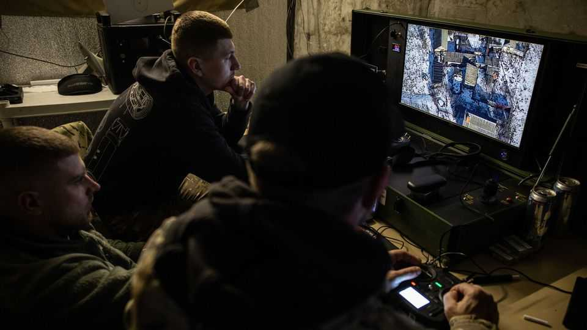
团队开始将装满水的避孕套挂在树上，并尝试用无人机击中它们。不久后，他们又将美国mk-19手榴弹（Mk-19）固定在无人机框架上。这逐渐演变为“无人机侦察-打击杀伤区”概念，后来由布罗夫迪（Brovdi）推广，以弥补乌克兰步兵短缺的问题。 bunker内上百块屏幕显示作战进展。每项任务，无论是无人机打击还是电子战行动，都会通过视频进行记录和验证，随后输入布罗夫迪（Brovdi）从粮食交易时期改造而来的商业情报软件。“原理是相同的，”他说，“我让手下把粮食种类、吨位和卡车数量替换成武器、轮班和弹药。” 作战指挥更贴近前线。团队在战线后方3-5公里处运作，仅由总部的战斗队长监督。■
布罗夫迪表示，该单位拥有15个相互关联的功能模块，涵盖干扰、监视、布雷和爆炸物生产等。他称，北约将领们尚未完全理解这一概念。“当美国人来时——他们像蜜蜂扑向蜜糖般涌向我们——他们会问‘哪种无人机最好’，我告诉他们最好的无人机是生态系统。要让一名飞行员完成任务，背后必须有整套系统协同运作。”布罗夫迪的批评者认为，他的成功依赖于自他担任无人机主管以来获得的无条件支持和资金。乌克兰武装部队通常面临持续的资源短缺。其前任因与总指挥官奥列克桑德·西尔斯基关系疏远，从未享有同等资源。布罗夫迪反驳称，乌克兰士兵不应等待无人机，而应是无人机随时待命。
他坚持为每件设备配备备用设备，这是他在多次生死边缘经历中得出的教训，并表示他严格的安全部署使所在单位的累计伤亡率仅维持在1%。他声称，无人系统部队如今以400名俄罗斯士兵的生命换取一名乌克兰士兵，每次击杀的物资成本高达878美元。“我们应该用塑料和金属换回死去的俄罗斯人，”他说，“这是最划算的汇率。”布罗夫迪先生在社交媒体上发布的战场击杀视频配以滑稽追逐音乐，使他成为颇具争议的人物。有人指责此类视频违反战争法。他则驳斥这些批评。“我完全没有道德上的顾虑，”他说，“一个手持步枪、在我的土地上准备杀我的人，我杀他或他杀我。数百万乌克兰人，包括我的母亲，都从我们的行动中汲取力量。”■
这种专注单一目标的策略正为乌克兰带来希望。是否足以迫使弗拉基米尔·普京停止战争仍是另一个问题。12月是布罗夫迪的数据显示乌克兰首次占据上风的时刻。在那一年之前，俄罗斯军队人数增长了超过10万名士兵。俄罗斯总统似乎没有退路策略。“我们首先得看看今年能否维持当前的节奏，”布罗夫迪表示。“我并不幻想这场战争即将结束。” ■ 要掌握欧洲最重要的新闻动态，请订阅我们的周度专属简报《Café Europa》。
§047 欧洲极右翼民粹主义应被投票击败而非排斥原题：Europe’s populist right should be outvoted rather than ostracised · 板块：Europe · 栏目：欧洲
设想没有法西斯主义者，这并不难。即便只是持有温和的右翼民粹主义观点的人，也能在比利时被从思维中剔除。自1980年代以来，比利时法语区实施了一项政策，将任何观点超出中心主义共识的政客排除在外。在这一政治隔离带政策下，选民被意图保护免受错误思想的侵扰——比如某位政客主张限制移民，或对欧盟的激烈批评。媒体通过拒绝采访持有此类观点的政客，来压制这些民粹主义言论。
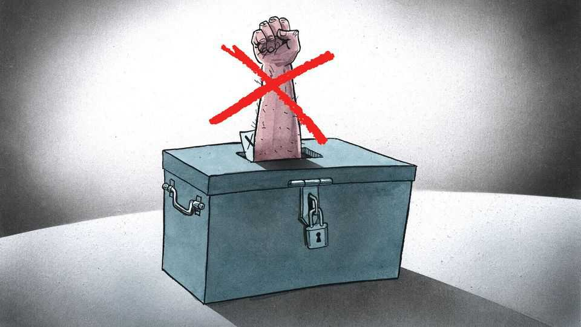
任何持不受欢迎立场却仍被选中的政客，都可能被排除在议会同僚的联盟之外。甚至外国人也可能因这种意识形态纯度测试而陷入困境。2025年，J.D. 弗兰斯（J.D. Vance）在慕尼黑安全会议上发表了一场煽动性演讲，其中批评了此类防火墙的存在。由于这位美国副总统被指过于激进，一家比利时媒体仅仅因转述其言论就遭到谴责。对支持者而言，这是基本的政治卫生：为何要为那些意识形态可能在机会到来时摧毁民主制度的人提供平台？人们难道从1930年代的教训中什么都没学到吗？对批评者而言，这种隔离措施则是对言论自由的软性束缚。无论如何，一项曾广泛存在于欧洲的政策正日渐松动。
德国排外政党另类选择党（AfD）、法国不自由主义国民联盟（RN）、意大利保守政党意大利兄弟党及其极右翼同伴仍被许多选民视为不可接受——这合情合理。但这些政党正式被排除在政治体系之外已不再是政治信仰的共识。这很好。尽管民粹主义的崛起令人忧心，但与其假装这些思想可以被消除，不如直面欧洲最恶劣的意识形态。曾经横跨整个欧洲的现象，如今已变得参差不齐。在法国，选民仍普遍认为支持任何与国民联盟（RN）对立的候选人是理所当然的事——这也是该党在3月22日市长选举中表现不佳的一个因素。
中右翼德国政客牢记历史，仍对德国选择党设置防火墙，拒绝在国家或州级层面与其结盟（诸如议会委员会主席等肥缺职位也常被拒绝授予）。在一些北欧国家，民粹主义者被纳入政府联盟后，态度有所缓和。相比之下，奥地利和荷兰的民粹主义政党虽参与政府，但尚未显示出任何缓和迹象。因此，反对这一隔离带的论点是：它根本没起到作用。在法国和德国，最近几个月的议会投票均需依赖民粹主义政党的支持——这在过去是难以想象的合作形式。但最显著的突破发生在布鲁塞尔——这个被众多民粹主义者抨击的机构所在地。■
大量投票在欧洲议会通过，得益于中右翼政党与曾被视作跨越防火墙错误一方的民粹主义政党联盟。理论上，主流政党合作可获得多数席位，从而通过欧洲委员会提出的任何立法。实际上，整合所有中立派议员的票数颇为棘手，因此中右翼政党有时会转向争取民粹主义政党的支持。有关移民或商业监管的立法仅因国民联盟（RN）和德国另类选择党（AfD）关联政党的额外支持才得以通过。这令德国总理弗里德里希·默克尔大为不满，他愤怒地否认其中右翼集团曾与AfD盟友协调投票。更糟糕的是，在德国和法国，民粹主义政党反而因被边缘化的地位而受益。■
还有什么比让中间派现任官员对你冷眼相待更能展示你作为揭露政治腐败的“真相说客”的本事呢？德国民调中，极右翼的德国另类选择党（AfD）与中间派基民盟（CDU）势均力敌；英国保守党（RN）的候选人很可能在明年法国总统选举首轮投票中领先。因此，所谓隔离墙看来更像是极端主义的温床而非坚固防线。那些试图通过组建笨重联盟来遏制民粹主义的中间派，反而将这些“麻烦制造者”变成了唯一可行的政治替代选项。唉，真是的！部分问题在于，没人能达成共识该在哪里筑起这道隔离墙。意大利总理乔治娅·梅洛尼（Giorgia Meloni）曾被讥讽为“勉强重组的法西斯”，如今却被视为荣誉中间派。■
欧洲委员会主席乌苏拉·冯·德莱恩对处理政坛边缘势力采取了务实态度。只要他们遵守法治、支持乌克兰且不无休止地批评欧盟，便可被纳入潜在联盟。这为像梅洛尼这样的政客提供了磨平棱角的激励。其他政客则质疑为何民粹左翼，往往与右翼边缘势力一样极端，不应受到自身防火墙的约束。隔离政策存在更根本的问题。将民粹主义者视为被排斥者，实质上贬低了他们的支持者。尽管这令人不安，但制度应反映所有选民，而不仅仅是那些与现任者观点一致的选民。■
中间派政党避免与观点完全背离自身立场的对手结盟，这并非毫无道理。政治的本质就是分歧。但前提是承认对方存在，甚至可能有其道理。是的，这或许会“正常化”AfD和RN，令良知人士感到震惊。但看看民调：如今他们已是常态。■ 订阅者可注册《经济学人》观点通讯，获取我们最佳的社论、专栏、特稿及读者来信。
§048 英国农业正快速向好发展 英国原题：English farming is changing quickly, for the better · 板块：Britain · 栏目：英国
詹姆斯·鲍迪奇农场中的一块田地成了麻烦。这块田地形状奇特，像个小写的"r"，位于斜坡上。鲍迪奇先生在英格兰南部多塞特郡经营约2700英亩（1100公顷）的农场，过去他在这块地里种小麦。如今他则在最难耕作的四分之一区域种植野花，因此获得政府补贴。若一项雄心勃勃的环保项目获批，他很快将开始植树。英格兰超过三分之二的国土是农田，这片广袤土地正迅速发生变化。 ■
2021年至2025年间，用于休耕或非农作物种植的可耕地面积超过翻倍，从231,000公顷增至545,000公顷（占总耕地面积的十分之一）。英格兰育种肉牛和羊的数量均在下降。去年植树面积超过过去20年任何一年。这是有意为之的系统性转变。自2020年脱离欧盟及其共同农业政策后，英格兰大幅削减传统农业补贴，将资金转向环保活动。尽管设定了削减农业碳排放和助力传粉昆虫的雄心目标，欧盟仍按传统方式向农民支付补贴。若转型顺利，英格兰或成为其他国家的典范，尤其是苏格兰和威尔士——这两个地区对放弃旧有补贴态度消极。■
这将是脱欧推动进展的罕见案例。尽管出现了一些小问题，但过渡进展总体顺利。农民正适应新的补贴体系，土地市场也在以温和的方式发生变化。但一场严峻的危机即将来临。英国农业转型的思路由保守党官员迈克尔·戈夫（Michael Gove）于2018年提出。戈夫认为，按公顷计算的补贴制度行不通。这种补贴推高了土地价值，阻碍了创新。政府应向农民支付费用，以换取其提供公共产品，尤其是环境方面的。尽管英国全国农民联合会等组织曾反对，认为粮食生产是公共产品，但戈夫的构想仍占据上风。自2021年以来，补贴已持续大幅削减，明年将彻底消失。农民可从一系列新的环保行动选项中选择，每项行动都有不同的支付标准。
英国政府为鼓励农民在冬季保留作物残茬以供云雀和黄莺筑巢的补贴为每公顷58英镑（约合78美元），而用于播种野花的补贴则高达每公顷739英镑。过渡过程并不顺利，一些环保方案鲜有人问津，而另一些则过于受欢迎。英国的粮食种植农户出人意料地将7.5万公顷土地纳入了资助种植冬季鸟类食物的计划。英格兰约10万农场中，超过200家至少将五分之四的土地退出生产，促使政府采取更严格的管控措施。绿色联盟（Green Alliance）智库的莉迪亚·科拉斯（Lydia Collas）表示，如果英国在优质土地上不生产粮食，反而从环保标准较低的国家进口更多谷物，这将是一个糟糕的结果。■
达特穆尔的畜牧业者海伦·拉德莫尔抱怨称，国家农业政策忽视了不同地区气候、土壤和生态条件的差异。像她这样的山区牧场主可以申请补贴，在低密度放牧条件下饲养牛羊，理论上有助于改善荒原生态。但达特穆尔地区受紫花苜蓿困扰，这种杂草会因低密度放牧而滋生。"从坎布里亚到康沃尔，牲畜密度不可能完全一致，"她指出。新政策的实施却显得笨拙。2025年3月，农业部宣布环境补贴计划预算已耗尽，不再接受新申请，系统仅在6月重新开放。今年早些时候政府突然宣布将限制每农场补贴额度。农民们早已习惯应对天气和农产品市场的剧烈波动。■
如果绿色支付只是个例外就好了。不过农民们已经适应了。2024-25财政年度（见图表1），平均农场收入为71,000英镑，按实际价值计算与戈夫先生发表讲话时基本持平。农民们虽然失去了补贴，却在环境支付和非农业活动收入中获得了补偿。近四分之三的农场主已涉足太阳能发电和鲍迪奇先生所说的“农业人”——出租小屋给游客。2025年4月的一项调查显示，仅6%的农民计划在未来五年内退出农业，转而从事其他工作。补贴削减似乎主要说服农民停止从事那些既不利于自然又产出有限的活动。■
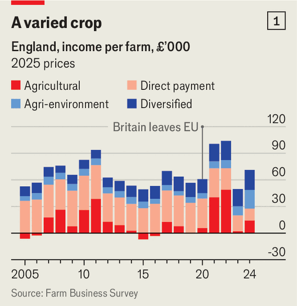
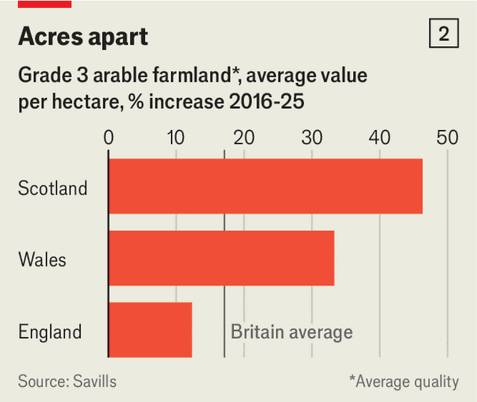
布莱顿附近的一位佃农马克·皮特斯过去常在边际土地上种植小麦，认为即使收成失败，补贴也能支付大部分租金。削减政策使这种做法变得过于冒险，因此他现在只在最优质土地上饲养牲畜。他说：“安全网已经不复存在。”格夫先生认为补贴只是计入土地价值中，其证据应是土地价值暴跌。但事实并非如此，可能是因为除农民外，还有生态恢复者和追求隐私的人群也对农田有需求。英国房地产中介公司Savills估计，过去十年英格兰平均质量的三级耕地价格仅上涨了12%。而仍提供大量补贴的苏格兰和威尔士，土地价格涨幅则显著更高（见图表2）。农田租金正温和下跌。
目前尚无迹象表明自然正在恢复——这正是新体系的初衷。尽管有玉米 buntings（玉米山雀）和 skylarks（云雀）等令人欣慰的例外，农田鸟类的数量仍在持续下降，尽管下降速度不如半个世纪前那么快。蝴蝶的状况也未见好转。但野生动物面临诸多威胁，包括气候变化。科拉斯女士认为，过早期待改善迹象还为时尚早。更具雄心的方案正在酝酿中。鲍迪奇先生的农场位于布里特谷地（Brit Valley），这里超过50位农民联合向农业部门提出了一项“景观恢复”项目。若获批准，整个河流流域将发生改变，包括在陡坡上种植更多传统草地和树木，以减缓径流、防止洪水。尽管这类方案难以实施，但相比一刀切的方案，它们应能更精准地契合实际需求。■
英国农业仍面临两大难题，如同小麦田中的顽固泥潭。首先，三分之一的英国农田由租佃农民耕作，他们持有的租约期限可能短至一年。环保计划难以适应这类农户，因为政府通常只为持续三年的干预措施提供资金，而景观修复项目则可能持续二十年。其次，食品经济的波动性持续困扰着行业。英国政府开始削减补贴不久，俄罗斯便入侵乌克兰——全球主要粮食生产国之一。谷物价格随之飙升，2022和2023年英国耕地农户获得巨额利润。2024年乳制品价格暴涨，但谷物市场已回归常态，牛奶价格暴跌。牛肉和羊肉价格虽仍偏高，但似乎正在回落。中东战争已推高化肥价格。■
呼吁恢复补贴的声音或将愈发响亮。■ 如需获取更多关于英国重大新闻的专家分析，请订阅我们的每周专属订阅者新闻简报Blighty。
§049 英国兽医的黄金十年即将结束原题：A golden decade for British vets is coming to an end · 板块：Britain · 栏目：英国
伦敦兽医展（欧洲最大规模的兽医会议）为英国宠物热提供了一个窗口。展台上的摊位推销益生菌粉末和用已故小狗毛发制成的纪念首饰。一位展示宠物活动监测器的摊主坚持认为“对狗来说，步数也重要”。英国人不以情感表达著称，但对宠物却一直是个例外。仅兽医服务（包括就诊、美容和训练）一项，他们每年就花费约67亿英镑（89亿美元）。
■
根据国家统计局（ONS）数据，经通胀调整后，2019年至2023年间，家庭在宠物相关服务上的支出平均每个季度增长2.7%，这得益于疫情期间宠物饲养热潮。宠物护理行业曾是投资者的热门投资标的，尤其是私募股权（PE）机构热衷于整合该领域。但这种狂热的增长势头已告终结。2024年至2025年第三季度期间，家庭在相关服务上的支出平均每个季度下降约0.2%。投资者已注意到这一变化：CVS集团（英国最大兽医集团之一）的股价自2024年初以来已下跌超33%，而竞争对手Pets at Home集团的股价更是下跌43%。英国兽医行业的黄金十年或许即将结束。三大因素正在发挥作用。首先是监管审查。■
竞争与市场管理局（CMA）历时两年的调查于3月24日公布结果，该机构作为监管机构，此前收到数以千计关于高价和模糊计费的投诉。这项调查源于过去十年快速整合的行业背景，私募股权基金将数百家小型诊所整合为大型连锁机构，因行业碎片化、行业在经济下行期的（所谓）韧性以及英国高宠物拥有率而受到吸引。目前像IVC Evidensia和CVS这样的大型集团已掌控英国约60%的兽医诊所，相比2013年的约十分之一大幅上升；六家最大运营商中三家由私募股权支持。这种集中度可能削弱竞争，CMA对此表示担忧。监管机构的建议——更清晰的所有权标识、强制价格清单和处方费上限——并不激进。但此次审查已投下阴影。■
据Pitchbook数据显示，2020年至2023年间，英国兽医行业私募股权交易平均每年达8.1亿英镑；但到2025年11月底，这一数字骤降至2800万英镑，尽管欧洲交易活动加速。投资银行家查尔斯·霍尔认为，认为大型兽医集团只是逐利机器的观点是误导性的。其运营利润率约为20%，虽健康但不具特殊性。大型集团可购置CT和MRI扫描仪等设备。随着宠物主人日益要求宠物接受与人类相似的护理标准，此类投资或许正是实现这一目标的关键。第二原因是新宠物数量减少。重返办公室和生活成本压力使人们在添置宠物时更加谨慎。据英国国家统计局（ONS）统计，自2020年以来，兽医费用涨幅近两倍于通胀水平。
英国犬业协会（The Kennel Club）报告称，2021年小狗注册量激增近40%，达到创纪录的349,000只，随后2022年下降21%，2023年进一步下滑18%。新小狗和小猫供应量减少是宠物诊所利润下滑的主要原因。宠物满一岁后，护理需求会大幅下降，仅在老年时期才会再次上升。第三大因素是更节俭的宠物主人。经济压力迫使主人更加精打细算：当宠物生病或受伤时，人们才会掏钱。帕拉赛兽医诊所（Palace Vets）负责人盖伊·基利克（Guy Killick）表示，定制项圈、时尚牵引绳和玩具等提升兽医收入的商品销量已大幅下滑。英国人对宠物的热爱并未减退，随着疫情时期购买的宠物逐渐步入老年，治疗需求将再度回升。■
监管明确性或许能吸引投资者回归。但对那些期盼重返高利润与高收入黄金时代的公司而言，或许该接受英国已告别“灰狗阶段”，进入“巴吉度猎犬阶段”的现实。■ 如需获取更多关于英国重大议题的深度分析，请订阅我们的周度专属通讯Blighty。
§050 英国奶农倾销牛奶原题：Britain’s dairy farmers are pouring milk away · 板块：Britain · 栏目：英国
切斯特郡的凯莉·西顿（Kelly Seaton）的奶牛场正在亏钱。2月她的收入比9月少了2万英镑（约合2.7万美元），如今每升牛奶的售价甚至低于生产成本。“你开始怀疑，这样的压力是否值得。”她解释说，问题在于英国牛奶产量过多：截至3月底的年度内，产量达到130亿升，比2024-25年度增长了5%。这种过剩导致牛奶平均价格自9月以来下跌了17%。沃里克郡的奶农查尔斯·高德比（Charles Goadby）认为，奶农们部分责任在身。去年夏天牛奶价格曾一度健康。
■
但当干旱迫使农民将牧草替换为通常专供冬季使用的高营养饲料时，这些营养更充足的奶牛产奶量随之上升。与此同时，人类饮食结构的变化也起到了一定作用。乳制品消费量正在下降，越来越多的英国人选择植物基替代品。富含牛奶的甜味谷物也逐渐减少。如今的牛奶产量来自比数十年来都更少的奶牛群。借助自动挤奶机、先进育种技术、可穿戴设备和人工智能，如今一头奶牛的产奶量是1970年代的两倍。这使英国跻身荷兰、新西兰等奶牛存栏量少但产量高的国家行列。然而其他国家可将过剩牛奶转化为黄油或奶酪，英国却缺乏相应的加工产能。另一种选择是将生奶制成奶粉，但英国的生产设施数量仍不足。■
一些奶农正通过淘汰奶牛来应对困境：牛肉价格高企，农户需要增加收入。但奶牛数量减少最终可能导致牛奶供应下降。规模缩小的牛群使农场更容易受到冲击。“如果几头奶牛感染口蹄疫或蓝舌病，农场就陷入困境，”西顿女士表示。乳制品市场本就波动剧烈，国外过剩供应更添压力。自秋季以来，欧洲牛奶价格下跌17%，美国则下跌14%。英国脱欧后的贸易壁垒也使英国出口额外奶制品的成本更高、速度更慢。格洛斯特郡的农场主莱顿·爱德华兹预计今年春季牛奶价格将进一步下跌。他理解为何年轻人不愿从事这个行业：利润空间狭窄，超市倾向于保持牛奶等基础商品低价，竞争压缩利润。自2019年以来，英国奶农数量已减少20%，降至约7000人。■
对行业来说，好消息是英国乳制品在海外市场拥有众多粉丝。尽管面临脱欧带来的贸易壁垒，去年英国乳制品出口额仍创纪录达到22亿英镑，主要销往欧洲，比前一年增长17%。随着将牛奶加工成高附加值黄油、奶酪和酸奶的产能提升，英国有望在国际市场上斩获更多订单。全球市场将为英国的超级奶牛买单。 ■ 如需获取更多关于英国重大议题的专家分析，请订阅我们的周度专属简报Blighty。
§051 英国首相基尔·斯塔默爵士（Sir Keir Starmer）对放松管制的误判原题：What Sir Keir Starmer gets wrong about deregulation · 板块：Britain · 栏目：英国
当谈到放松管制时，基尔·斯塔默爵士至少掌握了标准话术。他承诺“削减繁复的官僚主义”，并要“清除那些阻碍者”。偶尔他还会付诸行动：例如政府计划改革核电站的规划法规。然而他的议程正遭遇困境，因为这是一场缺乏理论支撑的运动。要理解原因，不妨看看监管政策委员会（RPC）的处境。该委员会知名度低、预算有限，且任务缺乏吸引力。
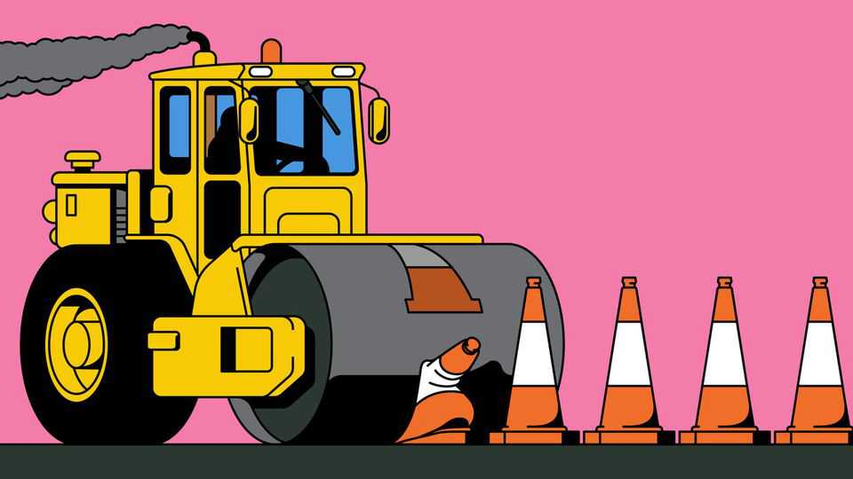
它审查新法规草案所附的影响评估报告，判断其是否足够详尽。若报告明确阐述政策依据、考虑替代方案、进行合理成本收益分析，并计算对企业的具体影响，则被评为绿色；若未达标准则标记为红色。评估结果公开透明。英国政府现正考虑废除该机制。按照这种逻辑，政策本身的质量才是关注重点，而非相关分析。这将是一个错误。若基尔爵士真意在放松监管，他应将政策影响审查委员会（RPC）视为改变白厅运作方式的关键盟友。该机制不评判政策本身的优劣：若希律大帝曾对犹太地区小企业进行屠杀，只要其影响评估报告充分考虑了对当地企业的冲击，也将获得绿色评级。■
但这是部长们在制定草率或仓促的监管政策时面临的少数限制之一。Re:State智库的乔·希尔（Joe Hill）指出：“若政府无法对监管成本效益分析进行公众审查，将难以控制其制定的监管政策质量。”据RPC数据显示，自2022年以来，此类分析的质量已明显下降。旨在增强工会权力的《就业权利法案》便被标记为红色。这种状况反映出基尔爵士（Sir Keir）推动放松监管的核心存在两大混乱。其一是轻监管的受益者究竟是私营部门还是政府部长。基尔爵士将二者混为一谈，但二者利益往往存在冲突。若如他所言释放部长们“推动事务”的权力，最终往往落实的将是制定更不完善的监管政策。■
第二个困惑在于放松管制的真正目的究竟是什么。基尔爵士（Sir Keir）将其视为一项基础的行政任务：简化决策和流程的问题。但这一点却忽略了核心问题。监管制度和监管机构本质上是实现经济或社会目标的工具，而这些目标应由政治家来界定，而基尔爵士的政府却缺乏一套连贯的理论框架。监管政策专家斯图尔特·哈德森（Stuart Hudson）在最近提交给议会的文件中指出，单纯追求“增长”并不能为监管机构提供明确的指导方向。这几乎可以为任何监管立场提供正当性：允许账单上涨以增加投资，或强制降低账单以惠及消费者；放松并购控制以促进创新，或加强控制以鼓励竞争。厘清监管机构追求的经济目标比他们执行的方式更为关键。■
在这一问题上，政府仍在厘清自身立场。2025年3月，政府宣布监管机构“过于风险规避”。然而，仅仅十个月后，国家审计署（另一个阻碍因素，无疑）的一份报告指出，政府部门未能向其监管机构清晰表达自身的风险偏好。同时，也缺乏一套“高层级、结构化的分析框架”来厘清监管、增长与风险之间的关系，而审计署干巴巴地指出，这种缺失使得进行“关于风险规避的有依据讨论”变得困难。轻易地责怪监管机构并不难。真正的问题在于政府高层存在真空。对RPC采取行动的姿态，看起来更像是一个缺乏明确规划的政府在随意打击一个软目标，而非一个致力于打造动态经济的政府。■
如需深入了解英国最新重大议题的深度分析，请订阅我们的每周专属订阅电子报Blighty。■
§052 英格兰银行的耳目：影响力代理人原题：The Bank of England’s eyes and ears · 板块：Britain · 栏目：英国
在伯明翰一间不起眼的办公室里，格雷厄姆·查普林点头倾听一位制造商抱怨最低工资上调的问题。这位工业家表示，这些措施不仅让低技能工人变得“难以雇佣”，还促使资深员工要求大幅加薪。资深员工的自尊心要求他们保持比“扫地的年轻小伙”更高的薪资水平。一个月后，在爱丁堡，一位房地产商人讲述了一个类似的故事。最低工资上调让老员工的薪资仅略高于新入职者。“这感觉不对劲，”他说。查普林的同事威廉·道森则静默倾听，未作评判。■
查普林（Chaplin）和道森（Dowson）并非适合担任不满资本家的治疗师，他们是英格兰银行的特使，分别代表该行在西米德兰兹地区和苏格兰的事务。他们的职责是向线街（Threadneedle Street）汇报实体经济的动态。每年，英格兰银行的特使们会进行6000次企业访谈，从独立餐馆到大型财团无所不包。这些对话多为面对面交流，往往非常坦率。道森表示，有时联系人会在他之前向几乎所有人透露敏感信息。他回忆称，在金融危机期间，一位高管曾在他告知董事会之前，就向他透露了大规模裁员的计划。为何英格兰银行仍坚持这种老派的运作方式？每天都有海量的近实时经济信息被生产出来，从信用卡数据到谷歌趋势，再到停车场的卫星图像。■
人工智能已准备好以远超任何代理人网络的速度和规模整合所有信息。乍看之下，这些代理人似乎有些过时。查普林先生却持不同看法。他表示：“代理人的智能程度比以往任何时候都重要。”英国央行行长安德鲁·贝利（Andrew Bailey）称代理人是“我们的双眼和双耳”。他每年至少走访12个地区，直接听取企业意见。英国并非唯一采用此类方法的国家。美联储每年八次发布《灰皮书》（Beige Book），汇总其12家地区银行收集的轶事报告。查普林先生指出，代理人相较于其他数据有两个优势。首先是时效性。官方数据往往发布缓慢且随后频繁修正，而代理人报告可填补这一空白。高频指标已缩小了这一优势，但尚未完全消除。
仍有部分领域，如企业投资，最新数据往往尚未公开。以去年4月2日为例，唐纳德·特朗普宣布大幅提高关税，市场陷入恐慌，要求紧急行动的呼声高涨。但企业反馈显示，其态度出人意料地乐观，这帮助稳定了政策制定者的神经。据查普林先生分析，代理机构的情报第二优势在于，它能提供“血肉”——即企业为何采取特定行动，以及未来计划做什么。在伯明翰，一家制造商表示，由于人力成本上升，明年将重点投资人工智能和自动化，而非人力。一位餐饮业者则谈到裁员的必要性。当这一信息在全国范围内被反复提及，进一步印证了劳动力市场正在走弱。轶事情报存在局限性。■
企业可能不愿向代理人坦白，或因尴尬，或出于英国人爱抱怨的天性。愿意开口的企业未必具有代表性；濒临破产的企业恐怕没时间与本地央行官员闲聊。但正如查尔斯·查普林所指出的，代理人提供的信息可作为定量数据的补充，而非替代。该网络今年将迎来200周年纪念。首位代理人查尔斯·克里普斯于1826年被派往格洛斯特（Gloucester），携一名副代理人、四名职员和两名搬运工，任务是提升银行票据的流通量。这一角色如今已面目全非，未来恐怕还会再次演变。银行已开始探索大型语言模型是否能协助整理代理人报告，并抵消部分人性偏见。■
但即便如此，它仍可能发现，一些最佳情报仍始于对话。 ■ 如需获取英国重大新闻的专家分析，请订阅我们的周度专属简报《Blighty》。
§053 英国外交影响力减弱：从辉煌走向衰落原题：Britain’s diplomatic footprint is diminishing · 板块：Britain · 栏目：英国
| 丧失昔日荣光
英国的外交影响力正在减弱
英国海外资产正加速崩塌并持续缩水
“硬实力”（hard power），基尔·斯塔默爵士（Keir Starmer）在2月的慕尼黑安全会议（Munich Security Conference）上表示，“是当今时代的货币。”这种思维也解释了他领导的工党政府缩减英国外交、联邦及发展事务部（FCDO）的计划。财政研究所（Institute for Fiscal Studies）预计，截至2028-29财年，该部门的实际支出将平均每年减少6.1%，是政府各部门中削减幅度最大的，相比之下，政府整体支出将增长1.5%。首相希望增加国防开支，外交事务将面临紧缩。外援将受到最严重冲击。
■
公共与商业服务工会（Public and Commercial Services Union）代表部分外事部门员工，预计所有岗位都将裁员，包括外交和领事职位。根据现行计划，约15%至25%的员工可能失去工作。某些部门的裁员幅度或将更为严重。分析部门（由专业专家组成）计划削减35%的岗位，相关研究领域将被取消。3月16日，工会开始就采取工业行动进行投票。除裁员外，外事部门还计划进一步出售海外资产，延续数十年来的进程。这一举措在保守党与工党政府时期均曾发生。例如，2018年保守党执政期间，鲍里斯·约翰逊担任外交大臣时，英国驻曼谷大使馆以4.2亿英镑（5.8亿美元）的价格出售。
这座历史悠久的建筑被拆除，以让位于办公楼和商铺。前约翰逊先生的幕僚爱德华·利斯特表示，他曾反对这一决定，因为大使馆是“英格兰的一小部分，飘扬着英国国旗”，并哀叹国家地位的损失。工作人员撤离至附近一座毫无特色的办公楼内。英国在东京的使馆区中一块价值不菲的地段于2022年完成交易，售予开发商三菱地所集团。一位常客称此次出售“令人反感”。该地块位于皇居对面，享有盛誉的位置。“现在它”，一位前政府顾问忧郁地表示，“成了工地。” 更近一些，巴黎前英国总领事馆办公室（见图）以620万英镑售出。英国还出售了在毕尔巴鄂、波哥大、卢萨卡和蒙特塞拉特的房产。■
精打细算者正关注一处1200万英镑的公寓，该房产曾由纽约一名外交官购得。然而，类似曼谷式的大使馆房产大规模出售已不再流行。英国外交部高级文官奥利弗·罗宾斯爵士（Sir Oliver Robbins）于12月向议会委员会表示，处置历史房产可能“弊大于利”。此外，可供选择的这类房产也所剩无几。据国家审计署数据显示，目前英国外交部仅拥有其房产的27%，而15年前这一比例为46%。部分现存房产已由东道国赠予，且附带条件禁止出售。至于英国实际使用但不拥有的73%房产，政府常通过出售建筑筹措资金，却往往不得不重新租赁，甚至在原地另寻他处。
慕尼黑总领事馆办公室在之前的工党政府时期被出售，随即租回。剩余的25亿英镑资产组合中，部分建筑状况较差，甚至存在安全隐患——外交部评定有15%的建筑属于此类。根据《经济学人》向英国政府提交的信息自由申请获得的回应，过去15年间，通过拍卖215项海外资产共筹得14.6亿英镑，主要用于资助其他地区的维修和升级。一项漫长而繁琐的零散出售过程如今似乎不可避免：这里卖个办公室，那里卖个花园。这注定是一场低调却失体的资产转移。温斯顿·丘吉尔曾说过，二战后重建下议院时，“我们塑造建筑，而后建筑塑造我们”。英国日益破败的外交设施也将如此。■
如需深入了解英国最新重大事件的权威分析，请订阅我们的周度专属通讯《Blighty》。■
§054 英国对外援助从慷慨转向务实原题：Britain’s foreign aid morphs from open-handed to hard-headed · 板块：Britain · 栏目：英国
“援助是一种奇特的事物，”前国际发展部（DfID）首席经济学家斯蒂芬·德尔康（Stefan Dercon）表示，“你拿出自己的一部分钱，用于改善非本国公民的利益，而这些公民并未为你缴税。”但其最佳状态曾带来非凡成就。所谓“官方发展援助”（ODA），2023年全球援助金额达到2400亿美元的历史峰值，并在降低艾滋病、疟疾和疫苗可预防疾病死亡率方面发挥了重要作用。
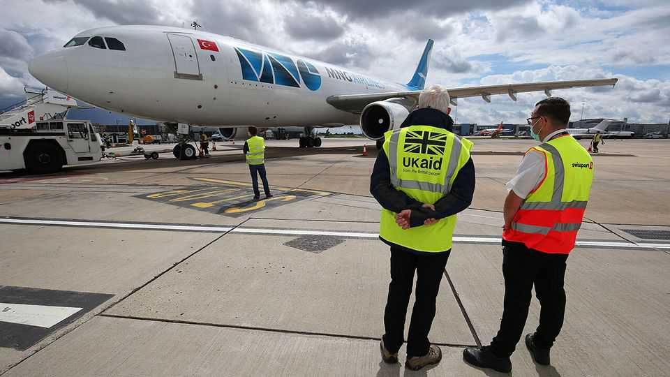
英国长期以来一直是国际援助领域的领头羊，无论是资金投入规模还是专业能力都如此——特别是在1997年发展援助部（DfID）成立之后。2013年，英国成为首个达到联合国0.7%国民总收入（GNI）援助目标的G7国家。但那个时代已经终结。2020年，DfID被争议性地并入外交部。一年后，官方发展援助（ODA）预算从0.7% GNI削减至0.5%。随后工党政府进一步将该比例降至2027年的0.3% GNI。正如发展研究所（Overseas Development Institute）的尼利玛·古尔拉吉尼（Nilima Gulrajani）所指出的，即便这一微薄比例也存在“形式上符合但精神上违背ODA”的会计操作。英国国内用于难民的开支已吞噬了过去三年ODA预算的四分之一，因此实际用于海外援助的资金——其中大部分流向乌克兰——将接近0.2% GNI（见图表）。■
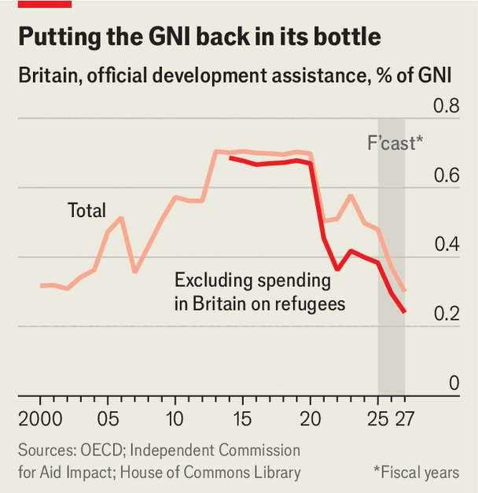
英国政府新宣布的援助计划意味着，2024年至2028年间，撒哈拉以南非洲的双边援助将减少一半。英国疲软的增长和生活成本压力是部分原因。“如果你觉得自己处境艰难，就很难对其他国家心怀慷慨。”全球发展中心（CGD）的伊恩·米切尔表示。但更深层的原因是新的地缘政治现实。许多国家正将硬实力置于软实力之上；国家利益而非人道主义，正日益决定援助资金的使用方式。在第二个任期中，唐纳德·特朗普开始拆解美国国际开发署（USAID），这是美国主要的援助机构。他的国务卿马可·鲁比奥为美国援助设定了三项标准：每笔支出必须使美国更安全、更强大或更富裕。■
包括德国和法国在内的其他主要捐助国也宣布将削减数十亿欧元的援助资金。英国首相基尔·斯塔默爵士表示，削减外援资金是为了增加国防支出。此举将产生怎样的影响？英国非政府组织“Bond”成员去年的分析预测，英国对全球疫苗接种计划“Gavi”的资助削减24%，以及对抗击艾滋病、结核病和疟疾的“全球基金”的资助削减15%，将在四年内导致至少50万人的生命损失。英国性健康援助项目的30%削减可能意味着未来三年内非洲地区将多出60万例不安全堕胎。英国的声誉因此受到重创。■
援助一直是软实力的工具，能为政府带来“巨大影响力”，前驻多个非洲国家大使尼古拉斯·韦斯科特指出。目前，有11个国家获得的援助资金超过1亿英镑，较2013年的21个国家有所减少（按通胀调整后）。像中国和俄罗斯这样的国家可以扮演更可靠的金融与安全伙伴角色，但不会取代在医疗、教育等关键援助领域的投入。但这场动荡也带来了改进的机会。关于援助在帮助国家摆脱贫困方面的不足之处——例如造成依赖性并削弱实际变革动力——的批评正在不断加剧。更聚焦于援助成效最显著的领域，主要为人道主义危机和健康紧急情况，是合理的选择。发展部长珍妮·查普曼正推动一项资源更精简的新方案。
未来，官方发展援助（ODA）将通过更少的多边机构（如Gavi和全球基金）进行分配。这些机构通常更擅长筹措资金、处理跨境问题并减少重复投入。它们在效率和透明度方面也更胜一筹：2021年发展金融公司（CGD）创建“ODA质量”指数时，前五大捐助者均为多边机构。其中，非洲发展基金因其非洲主导性及能触及双边援助难以覆盖的地区而尤为突出。查普曼女男爵（Lady Chapman）将人道主义援助作为冲突国家的优先事项。至于推动贫困国家经济增长，她呼吁通过英国国际投资公司（British International Investment）从“捐助者”角色转向“投资者”角色。■
这种思路在美国和法国也有所体现，基于一种信念，即资助本地企业能够激发可持续发展的增长动力。一个新时代的ODA预算缩减将意味着，若能顺利推进，贫困国家将从“受援者”转变为以商业为导向的“合作伙伴”。伦敦智库查塔姆研究所（Chatham House）最新报告敦促英国与志同道合的捐助国如澳大利亚、加拿大、欧盟和日本加强合作。这些国家可整合资源、减少重复投入并深化协作，实质上相当于建立一个援助领域的“北约”。诸如英国主导的全球清洁能源联盟（Global Clean Power Alliance）等倡议，已为未来指明方向。作为明年G20主席国及今年国际发展会议东道主，英国正具备推动援助体系向更务实阶段转型的条件。■
如需深入了解英国最新动态，敬请订阅我们的周报布莱蒂（Blighty）■
§055 英国原题：With “SNL UK”, Britain’s laughing stock appreciates · 板块：Britain · 栏目：英国
通常情况下，美国版《周六夜现场》开场独白的目标很简单：营造氛围、为名人主持人提供几个轻松的笑点，并引导观众期待后续的喜剧小品。但3月21日，蒂娜·菲（Tina Fey）作为新英国版《周六夜现场》的首位主持人，肩负着不同的任务：为这档节目的存在进行辩护。这位美国编剧兼演员自问自答：“为何要制作英国版《周六夜现场》？”这个问题自项目公布以来便不断被提出。她接着说道：“就像如今许多大型美国项目一样，没人真正知道原因。”
事实上，Sky电视台（Sky）的编审和制作团队已就推出《SNL UK》节目筹划了大约五年。他们认为，半个世纪后重启这一节目有充分理由。首先，在动荡时期，人们更需要轻松调剂。喜剧是情绪宣泄的出口——而战争、经济动荡和政治极化带来的压抑情绪正亟需释放。"我们正处在一个需要大笑的时刻，"Sky原创真人秀执行总监菲利普·埃德加-琼斯（Philip Edgar-Jones）表示。"喜剧能出色地对权力说真话，而美国人在这方面表现尤为精湛，"他补充道。■
《SNL》美国版常以总统的鲁莽言行开场；而英国版首集则将基尔·斯塔默爵士（Sir Keir Starmer，英国首相）塑造成一个摇摆不定、惧怕与白宫人物对话的政客（唐纳德·特朗普乐于被描绘成恶霸，将该段内容分享至社交媒体）。该节目即将涉足王室（极具讽刺空间的题材）及英国文化更广泛的主题。首播中最具代表性的段子想象了一种沉浸式“帕丁顿熊”体验——并非那只黏人且爱果酱的熊，而是一只血肉横飞的野兽。尽管“SNL UK”沿用既有形式，但目前英国电视上尚无类似节目。■
过去十年间，电视情景喜剧如同一只死鹦鹉般一蹶不振：曾经你可以选择“弗莱与劳里”与“法语与桑德斯”或“哈里与保罗”与“阿姆斯特朗与米勒”之间的对决，如今这些经典已成明日黄花。（值得一提的是，“米切尔与韦伯并非在帮忙”去年重聚两位英国喜剧黄金搭档，成为英国第四台自2018年以来收视率最高的新喜剧节目。）无论综艺辩论秀还是情景喜剧，如今鲜少现场直播，这意味着“SNL UK”自带一种疯狂的即兴能量：电视播出的魅力在于能实时见证混乱场面的上演。节目播出后，还能通过网络触达狂热观众。带有#skit标签的视频在Instagram和TikTok上迅速走红。■
据分析公司Sprout Social统计，2月中旬至3月中旬期间，与素描喜剧相关的帖子在Reddit、YouTube和X平台的曝光量达到45亿次。英国版《周六夜现场》（SNL UK）的编剧和演员阵容中包括多位社交媒体明星，如奥马尔·巴达维（Omar Badawy）、洛娜·罗斯·特伦（Lorna Rose Treen）和阿尔·纳什（Al Nash）；首播片段如想象著名英国人参加晚宴的素描，已累计获得数十万次观看。爱德加-琼斯（Mr Edgar-Jones）表示，希望制作出能在英国乃至全球“引爆互联网”的内容。《SNL UK》首播的表现尚显参差不齐。■
但英国喜剧人才的培养仍有机会，正如《周六夜现场》（SNL）曾推出众多如今享誉全球的美国演员和编剧（蒂娜·菲被选为主持人正印证了这一点）。观众目前可能仍持怀疑态度；节目还需打磨更多笑点。但若节目在社交媒体上扩散并赢得现场忠实观众群，蒂娜·菲的疑问将得到解答。■ 如需了解最新书籍、电影、电视剧、专辑及争议事件，请订阅我们的周度专属通讯 Plot Twist
§056 欧盟新并购规则将掀起并购浪潮吗原题：Will the EU’s new merger rules unleash a wave of dealmaking? · 板块：Business · 栏目：商业
如何与埃隆·马斯克竞争？这是空客、莱昂纳多和泰勒斯三家欧洲航空航天企业高管们一直在思考的问题。他们的卫星业务正被马斯克的SpaceX及其竞争对手星链系统重创。对此，这三家公司在10月宣布将合并各自的太空部门，希望打造欧洲冠军。布鲁塞尔是否批准仍是个未知数。这一决定将成为欧盟委员会新并购指南的试金石，该指南草案预计将在未来几周内发布。巨型并购在欧洲历来难以实现。 ■
2019年，其执行机构阻止了欧洲大陆两家最大火车制造商——法国阿尔斯通（Alstom）与德国西门子铁路部门（Siemens Rail）的合并，支持者认为此举将帮助这两家公司更好地应对崛起的中国竞争对手。然而此后，随着欧洲全球竞争力的持续下滑，一些政策制定者开始放松对合并的反对态度。2024年，前意大利总理马里奥·德拉吉（Mario Draghi）发布的一份权威报告指出，欧盟对并购的严格审查阻碍了本国企业实现国际竞争所需的规模。同年晚些时候，欧盟委员会主席乌苏拉·冯·德莱恩（Ursula von der Leyen）要求其竞争事务负责人特蕾莎·里贝拉（Teresa Ribera）制定新的并购指南，以降低欧洲企业走向全球领先地位的门槛。与此同时，大西洋两岸的交易热潮也引起了欧洲的关注。■
在唐纳德·特朗普总统任内，美国的竞争监管机构比其前任时期变得更加宽松。据麦肯锡咨询公司统计，去年司法部和联邦贸易委员会联合起诉阻止了三起并购交易，远低于近年来平均每年六起的水平。据德洛尔数据公司统计，2025年全球共达成45起100亿美元以上的并购交易，较前一年增加至28起（见图表）。其中美国公司作为收购方参与了25起交易（其中22起涉及美国目标企业），欧洲买家参与了8起（其中3起涉及欧洲目标企业）。然而，那些期待欧洲市场出现整合热潮的人可能会感到失望。一个问题是，欧盟内部许多行业已缺乏进一步整合的空间。■
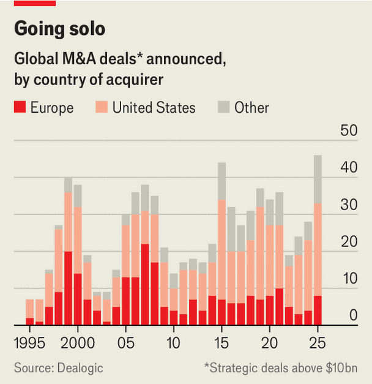
我们分析了40个行业中上市公司集中度的情况。在欧盟，有22个行业由销售额最高的四家公司占据超过四分之三的市场份额，而美国仅有16个类似案例。在9个行业中，仅两家公司就占据了四分之三的销售额，相比之下美国只有6个案例。欧洲企业如SAP（企业软件开发商）和BASF（化工巨头）在各自行业中占据主导地位。允许已经占据主导地位的企业收购剩余的欧洲竞争对手，难以带来额外的规模经济效应，反而很可能推高客户成本。不过，欧洲在一些行业中仍相对分散。美国四大银行占其行业总资产的54%，而欧盟仅为38%。■
美国的AT&T、Comcast、T-Mobile和Verizon四家公司占据电信市场94%的份额，而欧盟的前17家公司则占据相同比例的市场份额。即便在国家层面，欧洲的电信市场通常也比美国更为分散。两家行业的企业都积极寻求合并，认为通过合并将拥有更强的财力用于投资和创新。意大利银行UniCredit最近再次寻求收购德国银行Commerzbank。欧洲电信业高管似乎无法讨论其他话题。然而，布鲁塞尔的许多专家仍对此表示怀疑。■
欧盟委员会的一群经济学家在最近的一份报告中指出，过去十年间，欧盟主要电信企业平均利润率超过了其资本成本，这意味着它们无需通过提升利润的并购来继续投资基础设施等项目。欧盟官员私下讨论的只是对并购指南进行相对温和的调整，而非彻底改革。欧洲各国国家竞争监管机构构成了另一道障碍。去年，UniCredit放弃收购米兰大众银行，因意大利政府的反对。其收购德意志商业银行的尝试也遭到德国政府的抵制，后者称其最新方案“不可接受”。■
一家投资机构的律师表示，各国监管机构正通过“介入权”扩大监管范围，即使涉事企业的本地销售额低到通常不会被监管，也能审查其并购案。若欧洲企业被禁止在本行业内部合并，一些企业可能会寻求与相邻行业的公司合作。3月22日，意大利邮政（Poste Italiane）提出收购意大利电信（Telecom Italia）的要约。不过此类并购带来的规模经济效应究竟有多大，尚不明确。 conglomerates如今已不受欢迎。若欧洲希望培育更多大型企业，就必须解决其企业自身难以独立竞争的深层原因。■
为追踪商业、工业与科技领域的趋势，敬请订阅我们的周报“The Bottom Line”，这是面向全球商业的专属订阅者周报。■
§057 商业原题：A new case of chip smuggling shows the limits of export controls · 板块：Business · 栏目：商业
在争夺人工智能主导权的竞赛中 中国在软件领域已基本缩小与美国的差距 但硬件领域仍远远落后 美国公司开发的芯片 以英伟达（Nvidia）为主 贡献了全球AI算力的95% 2022年8月美国禁止英伟达向中国公司出售最先进处理器后 中国企业被迫依赖本土供应商 但外界仍怀疑他们仍能获取英伟达的高端芯片 /think
3月19日，美国联邦检察官起诉超微科技（Supermicro）联合创始人李怡贤（Yih-Shyan Liaw），以及该美国设备制造商的一名员工和承包商，指控他们向中国客户非法走私价值25亿美元的人工智能服务器，其中包含先进的英伟达（Nvidia）芯片。次日，超微科技股价下跌三分之一。英伟达坚称非法转移是“得不偿失”的买卖，因为这些服务器将得不到任何售后服务或支持。目前此类贸易规模仍相对较小；涉案服务器的价值仅占英伟达过去12个月至1月期间销售的1940亿美元人工智能硬件的一小部分。即便如此，时机却十分不妙。12月，唐纳德·特朗普放宽了此前对英伟达针对中国市场的H200芯片销售禁令。3月17日，英伟达首席执行官黄仁勋表示，订单终于开始恢复。■
美国对华鹰派因“超微事件”再度活跃，他们主张加强管控。然而，这一事件也揭示了此类措施的局限性，因为复杂供应链使监管难以落实。检察官指控李亚（Liaw）通过中间人订购含英伟达先进芯片的服务器，名义上是为东南亚一家“通道实体”采购；许多服务器在美国组装后运往该实体，再装入无标识的货箱运往中国。为蒙混过关，相关人员据称在仓库中放置数千台“假货”服务器，以掩盖买家声称的设备存储位置。未被列为被告的超微公司表示，其拥有“完善的合规计划”并正配合调查。然而这家公司早年便卷入争议。■
2018年，该公司因未能提交财务报表被纳斯达克暂时除牌。2024年，安永公司辞去其审计机构职务，称对内部控制存在担忧。李伟案并非个例。12月，美国官员表示已瓦解一个试图向中国出口或试图出口价值至少1.6亿美元先进英伟达芯片的网络。去年2月，新加坡有三人因销售价值3.9亿美元的搭载英伟达芯片的服务器被逮捕；检察官称这些服务器经新加坡中转后被送往马来西亚。此类事件凸显了出口禁令难以有效监管的现实。英伟达设计芯片，由台积电在台湾生产。超微等设备制造商将芯片组装成数据中心服务器，再经由一系列中间商最终抵达客户手中。■
走私并非唯一问题。一些中国公司可能通过马来西亚等国的云服务获取英伟达芯片。美国工业与安全局（Bureau of Industry and Security）负责执行出口管制，但人员编制有限。部分政策制定者希望收紧监管。目前国会的一项法案要求先进处理器包含位置追踪机制。另一项法案则赋予立法者30天时间审查并阻止向对手出售此类芯片，类似其对军品出口的管控权力。业界高管仍持怀疑态度，认为这场猫鼠游戏毫无意义。鉴于巨额利润诱惑，芯片走私者只会更加变本加厉。■ 为追踪塑造商业、产业与科技趋势的动态，订阅我们的周度会员专属简报《The Bottom Line》。
§058 欢迎来到表情符号学校 Business原题：Welcome to emoji school · 板块：Business · 栏目：商业
大家好，欢迎参加我们的表情符号培训网络研讨会。本次课程主要面向尚未完全掌握表情符号使用规范的年长职场人士，但同时也向所有年龄段的参与者开放。我注意到大多数人都完成了关于单片眼镜表情符号具体含义的预习作业。我们稍后将对此进行讨论，并进行一些表情符号测试。不过首先，让我们直接进入问答环节。我不确定是否适合在职场中使用爱心表情符号。这是否意味着我对某人产生了爱意？非常好的问题。
这取决于你使用的是哪种表情符号。如果是附着在特定消息上的小表情（即反应表情），显然这是对刚刚所说内容的直接回应。如果你单独发送一个爱心表情作为回复，基本上是在表达爱意。我曾告诉老板我因患阿米巴痢疾一周无法上班，随后收到通知说她喜欢我的消息。我体重减了一半，她似乎在享受我的不幸。在一些平台上，发送点赞表情会告诉对方你“喜欢”他们的消息。你的老板本该回复，但她可能只是在确认你的消息，而非幸灾乐祸。顺便说一句，一些Z世代年轻人认为点赞表情略显冷淡，原因就在这里。
当我在群聊中看到有人开个蹩脚的玩笑，我总会感到巨大的压力，必须配上泪水从脸颊滑落的表情。我自1997年以来就没笑出声过，所以这种表情显得完全不真诚。有没有一个薄笑的表情符号可以用？有，但使用它并不明智。泪水笑脸表情相当于人们在现实中想认可一个失败的幽默尝试时发出的轻微鼻音。如果你真的觉得某事好笑，就使用倾斜的泪水笑脸表情。这暗示着真实的愉悦。我经常开些蹩脚的玩笑，而每个人都会用泪水从脸颊滑落的表情回应。我觉得他们可能在嘲笑我。我怎么才能知道呢？他们有没有倾斜的？表情符号太小，我无法看清。即使我放大查看，仍然搞不懂它们的含义。■
我希望这次会议能有所帮助！但也要别太担心。在任何办公室环境中，持续的困惑感都是常态。这不过是这种感觉的一种变体。我在一家紫甘蓝农场（eggplant farm）工作——你会看到我已将这位人士的发言静音。每次我主持会议时，总有人会讲这个笑话的变体（在美洲他们用“eggplant”这个词）。我刚刚回顾了一段WhatsApp聊天记录，才意识到自己本该发送“双手合十”表情，却误发了“中指”表情。涉及此事的人至今未回复，这与他一贯的作风不同。我该怎么办？应该发送一封诚恳的道歉，解释发生了什么，并在结尾至少添加25个“喜极而泣”表情。别把它们倾斜。我仍然觉得整个表情符号系统完全幼稚化。我本该在成交时虚拟地放个鞭炮庆祝。为什么？我可不是三岁小孩。这是参与其中的一部分。■
过去人们习惯在午休时借酒庆祝。如今表情符号更便宜、更快、更健康。有时我在Slack上仅用点赞表情发送消息，却惊讶于它在屏幕上显得格外醒目。我不确定你的问题是什么。有没有一个表情符号能让我保持中立？有！思考表情就是图形化的“让我们线下讨论”。它表明你已阅读信息，显得你认真思考，却对任何事都毫无承诺。有时我在视频会议中，屏幕底部会突然冒出大量点赞手势，像水族馆里的气泡般升至顶端。我完全被这景象分心，若正在发言，常会忘记自己说了什么。我能阻止这些小手吗？（顺便说一句，你之前静音我，原因我不理解。我是做茄子的。）■
抱歉，这是个真正的失误，也是我第一次遇到这种情况。恐怕你无法控制那些小手。试着把它们想象成人们点头的数字等价物，这或许能有所帮助。我有几位同事在Slack上用棕榈树表情符号署名，我知道这表示他们关心气候变化。我也想表达对地球的承诺，但找不到相应的表情符号。你能帮我找找“思考”表情符号在哪里吗？■ 加入我们的Bartleby通讯，每周了解白领职场的种种烦恼。
§059 商业原题：The war’s biggest corporate winners and losers may surprise you · 板块：Business · 栏目：商业
对许多企业而言，油价飙升犹如双面夹击。首先，原材料和运营成本的上升压缩了利润空间。随后，在管理层尚未理清局势时，第二重打击已至：客户开始精打细算。美国几乎所有家庭都拥有汽车，多数家庭拥有两辆或更多。当汽油价格从每加仑3美元涨至4美元时，家庭年均燃油支出将增加逾1000美元。对典型家庭而言，这相当于可支配支出的八分之一——意味着原本用于外出就餐、服饰和娱乐等消费的资金被转移。
自美国首次轰炸伊朗、击毙其最高领袖阿里·哈梅内伊（Ali Khamenei）已近一个月。2026年初，油价约为每桶60美元。三月期间，油价因冲突激烈程度起伏不定以及缓解影响的举措消息而剧烈波动，但始终在每桶100美元附近震荡。消费者已感受到压力：加油站平均汽油价格为4美元，较2月末的3美元上涨。对美国企业而言，这催生了赢家与输家。其中一些情况显而易见。短期内，油价上涨对油气行业而言是利好消息。自2月27日起，其上市公司股价平均上涨超过8%。相比之下，航空公司和邮轮运营商则陷入困境。美国多数航空公司在很久以前已放弃使用期货合约对冲燃油成本。■
美国航空（American Airlines）股价自2月底以来下跌20%，联合航空（United）下跌13%（达美航空（Delta）因拥有宾夕法尼亚州炼油厂，为其国内燃料供应四分之三，因此股价上涨3%）。依赖可选消费的公司包括塔可钟（Chipotle）、耐克（Nike）和威廉姆斯·森索玛（Williams Sonoma）等，其市值自2月底以来均下跌12-15%。然而，影响更为出人意料（见图表）。你或许会认为，依赖石油化学品生产的企业会因能源和原料成本上涨而受损，但美国两大主要生产商莱昂德尔-巴斯尔（LyondellBasell）和陶氏化学（Dow Chemicals）的股价却均上涨约30%。■
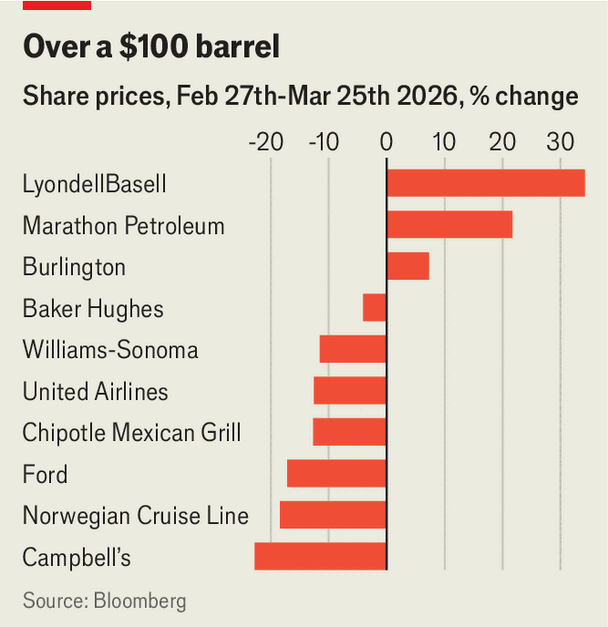
与海外竞争对手不同，他们受益于对北美天然气的获取，而目前北美天然气价格远低于其他地区。肥料制造商CF Industries公司利用这种天然气作为氨的原料，其股价也同步飙升。一些非必需品零售商同样表现亮眼。折扣百货商店Burlington过去一个月股价上涨约7%，投资者押注消费者将很快开始寻找优惠商品。与此同时，一些生产必需品的企业则感受到压力。自战争爆发以来，包括卡姆登（Campbell's）和通用磨坊（General Mills）在内的包装食品生产商股价已下跌超过20%。投资者认为，这些企业在2022年俄罗斯入侵乌克兰引发的通胀浪潮中曾大幅提价，此次恐怕难以重演这一策略。■
许多消费者已转向自有品牌产品，这有助于缓解好市多、克罗格和沃尔玛等杂货零售商的压力（这些公司的股价整体持平）。总体而言，投资者预期企业将面临更高成本和更节俭的消费者。但这场冲突的长期影响如何？相关信号较弱，但仍值得关注。为石油公司提供服务和设备的贝克休斯公司，若油价上涨引发投资激增将从中受益。但该公司股价在中东项目影响担忧初现下跌后，目前仅略低于危机前水平，这或许反映出市场对产能大幅回升的疑虑。油价长期上涨将对汽车制造商产生重大影响。■
福特和在一定程度上通用汽车的股价自战争爆发以来已出现回调。部分原因在于潜在购车者面临的压力，但这也可能预示着一个更少依赖燃油的未来。比亚迪（BYD）作为中国电动汽车领域的领军企业，其股价自冲突开始以来已上涨15%；而电池制造商宁德时代（CATL）的股价涨幅更为显著。1970年代的多次石油危机曾对底特律造成重创，当时消费者转向购买燃油效率更高的日本汽车。目前战争的走向仍不明朗，但企业应意识到其影响将在战争结束后仍持续发酵。■ To track the trends shaping commerce, industry and technology, sign up to “ The Bottom Line ”, our weekly subscriber-only newsletter on global business.
§060 美国石油巨头将从伊朗战争中获益多少原题：How much will America’s oilmen benefit from the Iran war? · 板块：Business · 栏目：商业
“市场会按照市场的方式行事。”3月23日，克里斯·怀特在休斯顿一个球形大厅对一群石油从业者发表讲话时如此说道。美国能源部长是CERAWeek行业大会的开场演讲者，他为活动定下了积极的基调。尽管战争正在持续，油价市场波动剧烈，但在美国页岩油中心得克萨斯州，人们仍认为将迎来好时光。毕竟，在得克萨斯州，油价每桶100美元通常意味着开香槟庆祝。咨询公司Rystad估计，若全年油价平均维持在这一水平，美国石油公司将获得超过600亿美元的额外收益。
液化天然气（LNG）卖家也将从中获益丰厚，因卡塔尔国家能源公司停产使全球近五分之一的供应量暂时中断，可能持续数月。美国液化天然气公司Venture Global的股价在过去一个月内翻倍。其CERAWeek派对气氛热烈。前页岩油气巨头怀特先生表示，这场战争似乎并无明显弊端。“价格尚未高到足以引发实质性需求削减”，但他认为当前价格已足以促使生产商开始增加供应。然而，有三点值得保持谨慎。首先，战争持续时间存在不确定性。唐纳德·特朗普总统似乎在寻求结束冲突的途径，但若伊朗持续封锁霍尔木兹海峡，冲突可能持续数月。■
在CERAWeek能源峰会上，前美军将领、曾担任特朗普首任政府国防部长的詹姆斯·马蒂斯（James Mattis）详细阐述了伊朗如何维持对关键航运通道的控制。他总结道：“我找不到太多可行的选项。”尽管如此，雪佛龙公司（Chevron）首席执行官迈克·威思（Mike Wirth）警告称，市场正基于“信息匮乏”进行交易。这种不确定性可能抑制美国钻井商扩大产能——这是抑制乐观情绪的第二个因素。CERAWeek上的页岩油企业高管明确表示，他们将继续坚持资本纪律；其投资者在上一轮页岩油崩盘中损失了3000亿美元，至今仍未忘记。标普全球（S&P Global）的拉奥尔·勒布兰（Raoul LeBlanc）认为，至少需要两个季度的100美元油价，以及期货曲线向上攀升，才能说服他们扩大资本支出（目前曲线正朝相反方向发展）。■
Rystad的马修·伯内斯坦指出，去年低油价和投资削减已导致可快速投产的油井库存下降。伍德·麦肯齐的弗雷泽·麦凯表示，即便钻井公司立即恢复投资，也需要“三到九个月才能反映在产量上”。美国天然气市场可能对供需变化反应更迟钝。该市场基本不受全球价格波动影响：亨利港（Henry Hub）这一国内基准价格仍维持低位，而其他地区价格却大幅上涨。标普全球市场财智的恩里克·冈萨雷斯认为，这使得“伊朗冲突短期内不太可能推动美国天然气产量增长”。供应端缺乏响应将维持全球价格和利润空间高位。■
但从长期来看，这也将加剧第三个问题：需求萎缩。亚洲地区已出现相关迹象，该地区最依赖中东能源。即便在冲突发生前，一些人就预测全球需求将在几年内达到峰值，这归功于气候立法带来的政策威胁以及廉价可再生能源和电动汽车带来的技术创新威胁。目前，美国的石油业者正为此欢欣鼓舞。但明年他们重聚时，情绪可能就没那么乐观了。■ 为追踪塑造商业、工业和技术趋势的动态，订阅我们的周度专属简报《The Bottom Line》，了解全球商业趋势。
§061 食品巨头的困境日益恶化原题：Big food’s troubles go from bad to worse · 板块：Business · 栏目：商业
近一个世纪前，人造黄油业务与肥皂制造商的意外组合催生了联合利华，这家如今全球最大的综合企业之一。如今，这家企业正面临解体。3月20日，英国公司宣布正在探索将旗下剩余的食品产品组合——包括Hellmann’s蛋黄酱、Knorr汤和Marmite（一种调味品）——出售给美国调味品制造商McCormick。去年，该公司已剥离冰淇淋业务。此举将使公司专注于个人护理及家庭清洁产品。
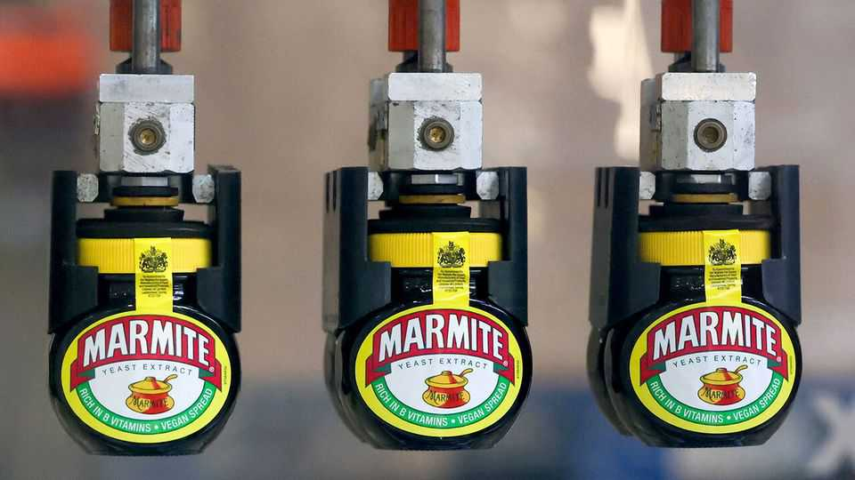
过去几年，零食、果酱及其他预制食品制造商的日子可谓艰难。
标普500指数中包装食品公司的市值较2023年中旬高点已下跌三分之一，而整个指数却上涨了五分之三。在疫情后通胀飙升期间，该行业曾跑赢大盘，成功将成本转嫁给消费者，甚至还有盈余。TD Cowen这家投资银行的分析师估算，2021年至2024年间，美国大型食品品牌累计提价幅度超过通胀11个百分点。然而这种策略也使它们陷入竞争压力。消费者转向沃尔玛、好市多和阿尔迪等零售商的低价自有品牌产品，以及新兴品牌。2020年推出的马卡龙奶酪品牌Goodles，由女演员加尔·加朵（Gal Gadot）代言，已在美国市场占据6%份额。这对Kraft Heinz而言尤其不利，该公司去年曾宣布计划拆分自身。■
新任CEO于1月上任后，暂停了分离计划，首先致力于稳固企业根基。这并非易事。与伊朗的战争以及由此引发的能源价格飙升，使新一轮通胀的风险再度浮现。业界已担忧塑料包装成本将大幅上涨。对消费者而言，其耐心已备受考验，提价恐将举步维艰。消费者对健康饮食日益增长的关注，也给行业带来更大压力。自2022年初以来，全球与超加工食品相关的谷歌搜索量激增30倍，这在很大程度上得益于罗伯特·F·肯尼迪 Jr.（美国卫生部长）等倡导者的推动。1月，美国五个州禁止领取联邦食品券的民众用其购买糖果等营养价值存疑的商品。■
还有更多类似举措即将跟进。美国并非唯一对大型食品企业发起战争的国家。1月，英国监管机构宣布禁止在线和晚间9点前电视上投放垃圾食品广告。减肥药物如Wegovy和Zepbound的影响也不容忽视，这些药物正迅速蔓延至美国乃至全球，而不仅仅是肥胖人群。德勤（EY）去年发布的一项调查显示，使用这些药物的消费者支出模式发生了变化，预计未来十年，减肥药物可能在美国削减约120亿美元的零食销售额，约占总量的3%。尽管目前大多数用户仍居住在发达国家，但仿制药正开始在印度及其他全球南方国家市场推出，这些市场曾是企业高管们眼中的未来增长点。■
食品行业巨头们深知前方困难重重。多家行业领军企业已推出针对注重健康消费者的新型产品线。自2025年初以来，几乎所有公司都已更换了首席执行官。这其中包括瑞士最大的食品公司雀巢，该公司上月宣布也将出售其冰淇淋业务。这家瑞士公司押注健康冷冻餐食市场。3月23日，受益于酸奶日益流行而崛起的法国乳制品巨头达能宣布，将收购英国代餐饮品制造商Huel。然而对联合利华而言，用餐时间已结束。■
§062 Meta和谷歌面临社交媒体成瘾问题的审判原题：Meta and Google face a reckoning over social-media addiction · 板块：Business · 栏目：商业
商业版 社交媒体受审
在美国使用Instagram的1700万儿童中，平均每天在该应用上滑动的时间为30分钟。但对20岁的Kaley（曾从6岁开始使用社交媒体）而言，这种使用逐渐演变为每天数小时的成瘾。她声称，使用Instagram和YouTube导致了身体畸形的认知和自残念头。3月25日，加州陪审团裁定，要求社交媒体母公司Meta和谷歌向Kaley（全名未公开）支付600万美元赔偿金。这笔赔偿金额仅相当于两家公司年销售额的千分之一以下。
■
但它可能对它们造成更严重的伤害。凯利律师提出的创新法律论点，可能以此前任何尝试都未曾达到的方式，迫使社交网络平台屈服。这两家公司正在权衡各种选择——两家公司都表示将提起上诉——但这一裁决可能成为监管社交应用方式的转折点。尽管这是扎克伯格首次在陪审团前出庭，但这并非首次试图通过诉讼迫使社交应用改变运营方式。2023年，一起针对推特因托管恐怖主义内容而提起的诉讼已上诉至美国最高法院。但该案，如同许多其他案件一样，最终都支持了科技行业。1996年《通信 decency 法案》第230条为社交网络免除了用户发布内容的法律责任。凯利律师则采取了不同的策略。■
与其追究Meta和谷歌对其平台上有害内容的责任，他们更关注平台设计方式。他们向陪审团出示了公司内部文件，证明高管们明知其产品对儿童有害，且主张自动播放视频、个性化推荐和无限滚动流等功能设计旨在吸引未成年人。此次裁决可能影响数千起类似诉讼，这些诉讼已针对Meta、谷歌及其他社交媒体公司提起（TikTok和Snap曾是凯莉投诉对象，但诉讼在庭审前达成和解）。一些律师将这些指控与上世纪针对烟草公司的诉讼相提并论，后者促成了行业广泛监管。美国并非唯一对社交媒体应用加强审查的国家。■
2月，欧盟委员会发布初步裁决，认定TikTok因“成瘾性”功能违反了《数字服务法》。TikTok被要求修改应用程序设计，否则将面临最高可处其中国母公司字节跳动全球收入6%的罚款。遏制此类功能可能会减少用户在社交应用上的使用时间，从而降低广告展示量及由此带来的利润。各国政府尤其关注未成年人的保护。去年12月，澳大利亚禁止16岁以下人群使用社交网络；从英国到马来西亚，其他国家也在考虑类似措施。 Ipsos民调机构去年对30个国家的调查显示，是否应将14岁以下未成年人排除在社交媒体之外，每个国家均超过半数受访者支持。加州的裁决可能很快引发连锁反应。 ■
为追踪塑造商业、工业和科技趋势，订阅我们的每周专属订阅电子报《The Bottom Line》，聚焦全球商业。■
§063 亚马逊的AI救赎豪赌或将奏效 商业 施穆普特原题：Amazon’s unprecedented gamble on AI redemption might just work · 板块：Business · 栏目：商业
亚马逊人喜欢认为自己的公司节俭——至少与许多科技同行相比。别提硅谷科技人员能享用的巧克力甜点和按摩服务。在亚马逊总部西雅图，最珍贵的免费福利是香蕉，由庭院里的食品车分发。这种节俭文化根深蒂固。这家电商巨头的核心始终带着店主般的节俭精神。不过每隔一段时间，它就会抛开谨慎，开启一场花钱狂欢。现在它正在这么做。高盛称其为“Capexapalooza”。这是一场历史性的豪赌。
没有哪家公司曾达到亚马逊今年计划投入的2000亿美元资本支出，其中部分资金将通过大额债券发行筹集。这笔投资主要用以支持其云计算部门亚马逊网络服务（AWS）在人工智能基础设施建设领域的竞争，包括数据中心及配套电力系统。此外，亚马逊还宣布将向OpenAI投资高达500亿美元，这几乎是其主要竞争对手微软自2019年以来对ChatGPT开发商承诺资金的四倍。亚马逊称强劲需求推动了这一投资热潮。AWS上季度销售额增速超过三年来最快，尽管过去三年累计投入了2500亿美元资本支出，亚马逊首席执行官安迪·雅西（Andy Jassy）仍表示其云服务容量销售速度与建设速度基本同步。然而强大的竞争压力同样在发挥作用。■
过去二十年，亚马逊云服务（AWS）一直是云计算领域的先驱，也是人工智能服务的重要提供者。尽管目前仍是行业领头羊，但自2022年OpenAI推出ChatGPT以来，其主要云服务竞争对手——微软的Azure和字母表旗下的谷歌云——增长速度显著加快，逐步蚕食其领先地位。通过加大对AI数据中心的投资，并试图削弱微软对OpenAI的控制，亚马逊展现出重拾领先地位的决心。这家公司一贯采取激进策略。2015年，其创始人杰夫·贝索斯（Jeff Bezos）在其标志性的技术狂热风格中，曾用“截断结果分布”来形容尝试击出全垒打时的成果分布。在棒球中，最大回报是四分；而在商业中，“每隔一段时间，当你站上打击区时，有可能斩获一千分。”这封致股东的信件，正是开启了一场大获成功的行动的序章。■
2016至2017年，亚马逊大幅增加物流和AWS的资本支出，带来数年利润边际的提升。但其下一次资本支出大举扩张却在新冠疫情初期遭遇挫折，因当时建设的仓库远超实际需求。2023年亚马逊削减支出之际，微软正为迎接AI爆发而加大投入。此后亚马逊在AI领域动作更积极。AWS具备多重优势。其一在于客户群体的广泛性。其与OpenAI日益紧密的合作关系，叠加与开发Claude的Anthropic实验室的合作，使AWS在短期内成为云服务需求的重要来源。模型训练厂商是近期云服务需求的主要推动力，正如杰西·贾西所言，他们需要“海量计算资源”。但凭借占据全球云服务市场近三分之一份额的优势，远超Azure和谷歌云，若更多非硅谷企业全面拥抱AI，AWS将获得更大发展空间。■
目前，许多企业仍持观望态度。但至少需要18个月才能将今年的资本支出投入实际运营。到那时，能够分步骤推理、使用工具并与其它机器人互动的AI代理可能已推动企业支出激增。与OpenAI和Anthropic合作将使亚马逊在这一时刻占据有利位置。“Everything Store”（全品类商店）的名称依然准确，AWS现在能够为客户提供基于两大主流模型及众多其他模型（包括自家Nova模型）的构建方式，同时支持多种芯片，包括Nvidia的芯片及其更便宜的自研替代品Trainium。微软和谷歌也提供多样化选择。Azure提供OpenAI和Anthropic的模型，谷歌同样提供这些模型，并拥有自家顶级模型Gemini及名为TPU的芯片。■
在当前所有超大规模云服务商都声称其人工智能服务需求远超供应的背景下，亚马逊的两大竞争对手可能更难将稀缺的计算资源分配给云客户。原因在于，他们其他主要业务——微软的Office产品和谷歌的搜索业务——盈利能力强于云服务，因此在AI芯片的优先级上更显突出。亚马逊的情况则不同。亚马逊商城的利润率远低于AWS，且公司文化强调以最少资源实现最多成果。因此，云客户可能更易获得优先资源。华尔街对亚马逊的大手笔资本支出持复杂态度。尽管其股价今年表现优于微软，但股价仍下跌8%，主要源于对其支出回报率的疑虑。
短期内，新投资带来的折旧成本将先于其带来的收入增加而上升。杰富瑞银行分析师布伦特·蒂尔指出，投资者还担忧人工智能基础设施成本的上升可能长期削弱云服务利润率。另一令人担忧的动向是嵌入聊天机器人的AI代理技术兴起，这类技术可代表用户进行购物。它们可能威胁亚马逊的核心业务——绕过亚马逊官网或侵蚀其与客户及广告商的关系。但该公司比质疑者预想的更具优势。在与OpenAI达成合作后不久，模型制造商就搁置了推出名为Instant Checkout的购物服务计划。亚马逊的自主AI购物助手Rufus去年帮助实现了120亿美元的年化增量销售额。■
其他模型制造商如谷歌正强势进军电子商务领域，但目前亚马逊似乎仍在抵御这一威胁。不妨称这场支出狂欢为“卡佩克斯狂欢”（Capexapalooza），但这并不意味着亚马逊最终会陷入混乱。■ 订阅《经济学人》的读者可注册我们的Opinion电子简报，该简报汇集了我们的社论、专栏、特稿和读者来信的精华内容。
§064 全球通胀可能攀升至多高原题：How high could global inflation go? · 板块：Finance & economics · 栏目：财经
在2022年底达到超过10%的峰值后，由于疫情后供应链堵塞、过度慷慨的刺激支票以及作为额外调味料的俄罗斯全面入侵乌克兰引发的能源冲击，富裕国家的平均通胀率已回落。截至今年年初，通胀率接近2%（见图表1，顶部）。央行官员们以为已经消灭了通胀这只猛兽。然而就在他们转身离开之际，这只猛兽的圆眼睛却再次睁开。美国与以色列对伊朗的战争再次扰乱了能源市场。
尽管唐纳德·特朗普试图通过表示敌对行动可能很快结束来安抚市场，但通过霍尔木兹海峡的石油流量仍可能低于正常水平的95%。在战场上被敌对势力压制的伊斯兰共和国，转而通过轰炸区域内的天然气设施进行报复。能源价格大幅上涨，布伦特原油价格目前约为每桶100美元（尽管波动较大），较年初的60美元显著攀升。美国汽油价格也同步上涨（见图表1底部）。幸运的是，这些动荡要引发全球衰退仍需进一步恶化。令人遗憾的是，它们几乎肯定会进一步加剧民众对生活成本上涨的不满。在某个临界点，能源价格上涨将导致产出下降。企业因燃料和电力成本上升而利润空间收窄，消费者被迫增加汽油开支后则削减非必要消费支出。
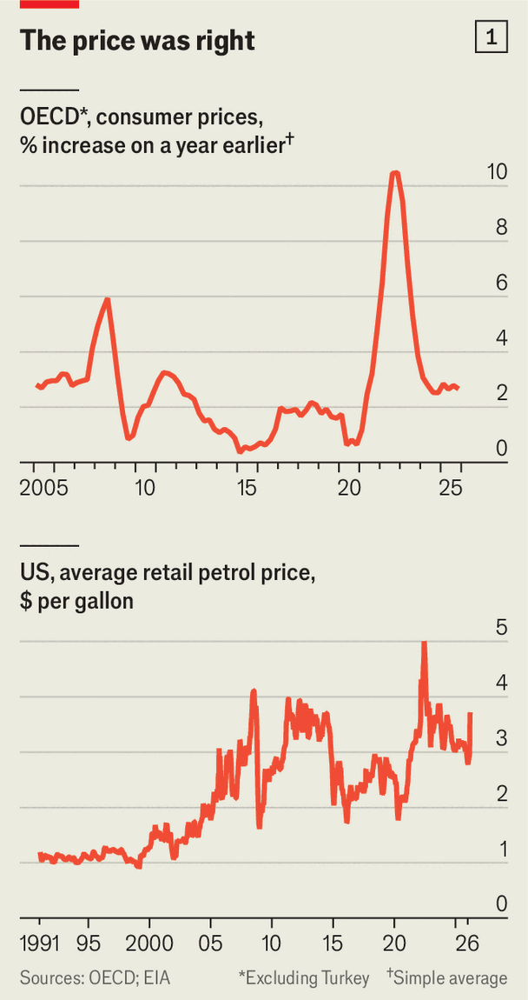
牛津经济咨询公司认为，原油价格连续两个月维持在140美元（同时天然气价格也上涨）将使全球经济部分区域陷入温和衰退。《华尔街日报》对经济学家的调查表明，138美元是美国的临界点。许多经济体在战争爆发前就已显露衰退迹象。美国消费者信心接近历史低点，其他国家也仅略高。这种情形或许过于悲观。德意志银行的研究显示，油价变化比油价水平本身更具影响。美国1973-75年的经济衰退如此严重，是因为油价在短时间内飙升了三倍以上。截至2026年目前，油价尚未翻倍。TS Lombard咨询公司分析师史蒂文·布利茨指出，1990年因油价引发的GDP收缩期间，西德克萨斯中间基原油价格飙升了166%。■
要引发类似的冲击，如今的油价需突破175美元（目前约90美元）。今天的冲击更接近电击器而非浴缸里的电水壶。此外，全球经济在能源危机前已处于相对健康状态。发达经济体的实际工资年均增长至少1%。2025年第四季度全球企业利润名义增长15%，较上年同期显著。多项实时数据显示，近期富裕国家经济增长有所加快（见图表2）。尽管能源市场波动剧烈，但投资者对经济衰退的担忧并不明显。高盛集团（Goldman Sachs）综合股票、外汇等资产分析得出的指标显示，投资者预期的是温和放缓而非衰退。然而，同一数据集表明，投资者对通胀的担忧程度极高。■
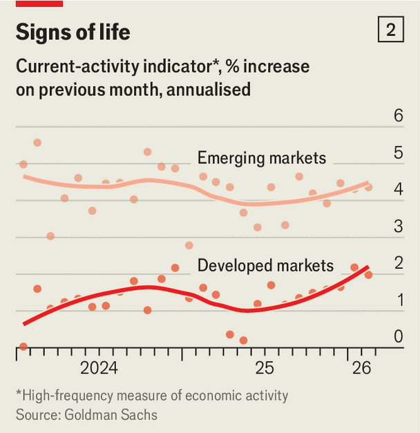
基于市场的通胀预期指标正快速攀升。经验法则显示，油价持续上涨10美元最终会推高整体通胀0.3-0.4个百分点。假设油价维持在每桶100美元左右，经合组织（OECD）的平均通胀率可能因此突破4%；若升至每桶140美元，5-6%的通胀率并非不可能。最令人担忧的是，央行应对通胀冲击的能力可能弱于2022年上次面对该问题时。尤其在美国，货币政策制定者可能在加息方面感到受限制。若特朗普认为凯文·沃什（Kevin Warsh）——他选定的鸽派美联储主席人选——在数月后开始任期时便收紧货币政策，他势必会大发雷霆。此举将推高美国民众已对生活成本上涨感到愤怒的房贷利率。■
此外，企业此次可能比2022和2023年更迅速地将成本转嫁给消费者，因为此前已证明可以成功提高价格而不受惩罚。尽管实时数据未必总是可靠，但它们暗示通胀祸害确实再度浮现。Alternative Macro Signals这家咨询公司分析数百万篇新闻文章，其全球通胀指数已被证明是官方数据的可靠预测指标，近期已显著攀升。若历史规律延续，7月全球月度通胀可能突破0.6%，相当于年化涨幅逾7%。Alternative Macro Signals并非唯一令人担忧的数据信号。Truflation这家咨询公司则从多种来源实时追踪价格变化。■
数据显示，美国本月的同比商品通胀率从不足1%跃升至近3.5%。这一涨幅几乎完全源于汽油价格上涨。如果央行无法扼杀新一轮生活成本危机，政府可能被迫向民众提供救助。2022和2023年，欧洲许多国家将超过2.5%的GDP用于缓解家庭和企业面对的飙升能源成本。俄罗斯在西方对乌克兰实施制裁后大幅削减油气出口，导致能源价格飙升。这些措施帮助欧洲最贫困群体避免了严重贫困。但代价高昂，或许有一半支出未精准投放，因此富裕人群——最大的能源消耗者且最不需要援助者——反而受益最多。此次政府是否会采取更精准的措施？■
在民粹主义情绪高涨和政客挥霍无度的当下，别指望什么。中东战争最持久的经济后果可能是加剧富裕国家的财政困境。■ 订阅我们的每周专属通讯《Money Talks》，获取更多关于经济、金融和市场的权威分析。
§065 能源市场最理想的情景也堪称灾难原题：Even the best-case scenario for energy markets is disastrous · 板块：Finance & economics · 栏目：财经
）：本文已更新以反映特朗普先生推迟对伊朗基础设施发动威胁性打击的决定。第三次海湾战争即将进入第五周。伊朗持续封锁霍尔木兹海峡的每一天，全球约五分之一的石油和液化天然气（LNG）产量仍被困滞。而每一天，交易员们都在更新全年损失的供应量。随着他们的估算数字攀升，能源价格也随之上涨。布伦特原油目前每桶105美元，比冲突开始前上涨了45%。欧洲天然气价格则上涨了65%。
■
油价为何未上涨，是因为投资者预计供应将很快恢复。针对油价下跌的金融押注（“看跌期权”）集中在7月每桶80美元左右；而看涨期权的押注则更为分散（见图表1）。换句话说，考虑到运输延迟，投资者预计到5月市场将恢复常态。为验证这些预期，《经济学人》计算了若战争今日结束，市场恢复正常所需的时间。即便伊朗同意开放海峡，全球油气市场仍将面临数月的供应不足。要恢复供需平衡，需满足三个条件：海湾产油国须恢复战前产量；船只须将原油运往海外炼厂；炼厂须将其加工为可用燃料。每项任务都需要时间。首先从生产开始。
由于无法出口且面临储油限制，海湾国家已削减1000万桶/日的原油产量，相当于全球总产量的10%，且为战前水平的40%（见图表2）。要恢复产能，生产商需全面检查设备运行状况并清除管道堵塞。唯有如此，才能通过逐步恢复压力重启油井——需谨慎操作，以避免损害油藏。启动分离器、压缩机和处理厂等初步加工设施则需要更多时间。专家估计整体恢复周期为两到四周。液化天然气（LNG）形势更为严峻。卡塔尔拉斯拉凡（Ras Laffan）作为全球约五分之一LNG供应来源，自3月2日起因伊朗无人机袭击而关闭。过去一周，导弹袭击又摧毁了其14个液化装置中的两个，占该设施产能的17%及全球供应的3%。■
卡塔尔能源部长表示，修复工作将耗时三到五年，原定的扩建计划也将被推迟。要恢复运营，需要数周的修复工作。修复工作只是开始。设备必须清除水分，以确保在冷却至-160°C时管道不会开裂。若急于求成，金属会不均匀收缩，导致焊缝破裂。哥伦比亚大学的安妮-索菲·科尔博（Anne-Sophie Corbeau）估计，整个过程可能需要多达七周时间。接下来是航运。480艘搁浅船只的船长们大多希望在尝试离港前获得数日的袭击间歇期。多数油轮已满载，因此积压可能在两周内得到缓解。原则上，新船随后可前来接载逐渐恢复的生产。但实际情况是，恐怕鲜有船只会如此迅速响应。伊朗已对海湾沿岸港口发动袭击。■
尽管港口设施看似基本完好，但沉船或基础设施可能需要清理以确保安全通行，Argus Media（价格报告机构）的约翰·奥莱特指出。码头或装卸设备的维修通常需要数月时间。此外，该地区大部分战争风险保险已取消。仍在提供保险的保险公司已将保费从船舶价值的0.2-0.4%上调至1%或更高，最危险航程的保费甚至达到10%。只要有互联网接入，任何人都能查明船舶的所有者或租船人，使船舶成为潜在目标。霍华德（Howden）的埃利斯·莫利表示，保险公司不会急于降低保费。即使保险再次变得可用且价格合理，船舶所有者也可能犹豫不决。■
尽管也门胡塞武装（Houthi rebels）于去年11月正式结束了其针对红海西方盟友船只的两年行动，但目前穿越红海的油轮数量仅为2023年的半数（几乎没有任何lng油轮）。进一步的延误还将因油轮处于错误位置而产生。战争爆发后，那些曾将中东原油运往亚洲的超级油轮转而寻求大西洋市场的业务。当霍尔木兹海峡重新开放时，许多油轮将先完成当前航程——在美国接货、运往中国——再前往海湾（见图表3）。bsr（一家经纪公司）的安德鲁·威尔逊表示，往返航程通常需要多达90天。这些油轮的延迟抵达不会立即缓解燃料短缺。一些亚洲炼油厂因原料不足已关闭部分装置，恢复生产可能需要数周时间。
法国能源巨头TotalEnergies前工程师阿贾伊·帕尔马尔指出，特别是一些紧急停工，可能需要数月才能恢复。因此即便现在冲突停止，市场要恢复某种程度的正常状态仍需四个月。其结果是，今年计划全球石油产量将减少约3%。拉斯拉凡每持续停工一个月，全球年度天然气供应量就将减少近2%。由于最新罢工，满负荷产能将低于此前水平。即便卡塔尔今天开始全力开采，今年产量仍将比需求少4%。影响十分严峻。全球原油库存预计在3月结束时将处于历史范围的底部三分之一，而在霍尔木兹海峡恢复通航后，库存仍将持续减少数周。随着储备薄弱的国家用尽库存，恐慌性抢购和价格飙升可能随之而来。液化天然气（LNG）的竞拍大战同样可能发生。
维克托公司（Vortexa）分析师阿什利·舍曼（Ashley Sherman）表示，卡塔尔最后一批在霍尔木兹海峡关闭前离港的货物将在数日内抵达亚洲和欧洲。此后，买家必须寻找其他供应来源或面临断供，威胁冬季储备补给的补货（见图表4）。能源交易商仍寄希望于春天奇迹，全球市场也在期盼这一奇迹。但能源物流的难题不会轻易化解，能源市场将长期承受战争影响。■ 了解更多关于经济、金融和市场的深度分析，请订阅我们的周度会员专属简报Money Talks。
§066 克里斯蒂娜·拉加德对海湾战争能源冲击的冷静表态 金融与经济原题：Christine Lagarde’s sober tone on the Gulf war energy shock · 板块：Finance & economics · 栏目：财经
克里斯蒂娜·拉加德表示，伊朗战争带来的风险被低估了。在国际能源署称其为有史以来最大能源冲击的背景下，欧洲央行行长表示，对迅速恢复常态的预期可能“过于乐观”。“我们正面临一场真正的冲击……目前可能超出我们的想象。”在3月25日于欧洲央行总部接受《经济学人》“内幕”栏目专访时，拉加德女士对全球经济面临的风险给出了冷静的分析。
■
她表示，银行的技术专家认为“已经造成严重损害”，海湾地区损失的能源供应“在数月内无法恢复”，这场中断可能持续“数年”。她警告称，危机后果可能逐步显现，导致对危机严重程度的“延迟评估”。这比她当天早些时候发表的讲话更加悲观，当时她表示“尚无法判断”能源冲击将呈现哪种情景。不过，她强调欧洲央行“已做好应对货币政策的准备”。她更担忧政府预算问题。“目前财政空间不如2022-23年充足”，当时各国为缓解乌克兰危机后的能源成本，曾将支出提高至GDP的2.5%以上。此次任何支持措施都应“量身定制、精准投放且临时性”。■
政策制定者应留意他们撒的网有多广，并应重点关注低收入家庭。在谈及美国在全球体系中的角色时，拉加德（Lagarde）则表现出更鲜明的批评态度。当被问及各国是否能在全球危机中团结协作时，她调侃道：“我可以向您保证，央行界会齐聚一堂。”她特意省略了财政部长们。她指出，在2007-09年金融危机期间，G20曾协调全球应对措施。“您能想象如今这种情况重演吗？G2、二十国集团如今由美国领导。我不会再说了。”她察觉到1920年代美国转向孤立主义的影子。然而她仅部分认同卡尼（Carney）的观点——同意加拿大总理卡尼认为旧秩序正在瓦解，但拒绝接受必须从零开始重建的主张。■
多边机构如国际货币基金组织、世界银行和世界贸易组织，她表示，仍有可能修复——即便美国在其中的“主导地位”必须减弱。正如蛇蜕皮般，人们可以“从旧皮中孕育出新的生物”。在这样的世界里，拉加德女士认为欧洲仍扮演着核心角色。“对欧洲的批评严重过当，”她表示，认为失望情绪源于过高的期待。曾经被视为“梦想”和“承诺”的欧洲，如今已成为确保和平的“残酷成功”。然而她列举的一些成就，如伊拉斯谟学生交流计划，似乎显得平淡。她承认欧洲仍需付出更多努力。她坚持认为，优先事项已明确：真正的单一市场；更深入、更高效的资本市场——“你需要资金”——以提升薄弱的生产率和创新力；以及数字欧元以支持一体化。■
然而，最近提出的“28th regime”（统一规则手册）“缺乏足够雄心”。但实现任何目标都需要政治凝聚力，而民粹主义的兴起使这一过程更加复杂。拉加德女士驳回了法国国民联盟（National Rally）的乔丹·巴德尔拉（Jordan Bardella）等人关于欧洲央行可为各国定制政策的建议。她表示“世界上根本没有这种可能性”。她指出更深层的风险在于政治层面。欧洲人“必须再次决定自己是否团结”。欧洲对法治、民主和共同价值观的承诺正面临压力。“我们严重失败的地方”她表示，“是忽视了分配问题，导致社会很大一部分群体感到被边缘化”。若无法解决这一问题，欧洲的经济议程可能不如其政治生存重要。■
如需了解经济学、金融和市场领域最重要的新闻的专家分析，请订阅我们的周度专属通讯《Money Talks》■
§067 西方人正以创纪录的速度逃离本国原题：Westerners are fleeing their countries in record numbers · 板块：Finance & economics · 栏目：财经
在2023年卸任新西兰总理后，杰辛达·阿德恩（Jacinda Ardern）加入了哈佛大学。如今她定居悉尼。阿德恩选择海外生活引发新西兰民众共鸣，他们本就担忧高移民率。对前总理居所安排的焦虑，折射出西方更广泛的趋势。政界关注的是有多少人迁入本国，却忽视了人们正以创纪录速度离开本国。"侨民经济"的兴起将产生深远影响。
各国政府在追踪移民出境方面表现不佳。英国长期以来没有出境检查。由于缺乏完善的出境系统，美国则依赖税收数据、调查和间接方法的混合手段。但数据质量已提升到足以让《经济学人》推出首个涵盖西方国家的移民总量估算。我们分析了31个国家的数据，包括澳大利亚、英国、加拿大和德国（但不包括美国，因该国的估算仍存疑）。我们追踪的是以永久或半永久方式离境的居民（排除游客和商务旅行者）。我们的最佳估算显示，2024年约有400万人从这些地区离开，比疫情前增长约20%（见图表）。自2010年代中期以来，希腊的移民数量已下降，随着希腊经济从欧盟的落后者转变为表现突出的国家。但大多数地区移民数量均有所上升。■
2025年第三季度加拿大移民数量比六年前增长34%。新西兰2025年移民数量较2019年高出29%。瑞典移民数量则超过六年前水平60%以上。意大利统计局近期指出该国出现移民激增。冰岛则报告了有史以来最高水平的移民。布鲁金斯学会（Brookings Institution）估计，2025年有最多300万人离开美国，较2021年的200万人显著增加。私营部门数据显示，数年来首次出现美国科技从业者向欧洲迁移多于从欧洲迁往美国的情况。移民潮的激增部分源于2022和2023年西方国家大规模接收移民的后续效应，当时大量新移民涌入。许多移民本就不打算长期居留，学生毕业离境，临时工返回原籍国。■
布鲁金斯学会的数据表明，唐纳德·特朗普的大规模驱逐政策可能促使多达100万人在2026年离开美国，加上通常预期的约200万人，所有这些人都被计入移民人口中。但外国人的流动率上升并非全部原因。在爱尔兰，公民离境人数较2019年增长29%；在新西兰，这一数字飙升74%。我们分析经济合作与发展组织（OECD）数据发现，海外美国人数量在2019年至2024年间增长了11%。关于谁会成为海外移民的证据有限，但新西兰官方数据显示，拥有至少本科学历的人在20多岁时移民的可能性至少是那些没有学历者的两倍。一些西方移民在迪拜等地尽情享受生活。但海湾战争可能改变这一现状。即便战争爆发前，多数人已转向西方其他国家。■
我们的分析显示，自2019年以来，出生在西方国家却居住在另一西方国家的人口数量增长了约200万。美国吸纳了其中40%；许多志在成功的欧洲人前往美国追逐人工智能领域的财富。荷兰则以远超其人口比例的规模占据显著份额。英国数据过于零散，难以进行深入分析。然而哈姆斯特德如今已挤满了好莱坞一线明星。瑞恩·高斯林在买面包！拉米·马勒克骑着Lime单车！三大因素解释了海外移民经济的崛起。首先，疫情使地理套利成为常态。一旦企业接受员工在家厨房桌前工作三小时的模式，为何不考虑更远的地点？美国在管理咨询和技术咨询等领域的跨国公司，海外员工数量比2019年增长了36%。税收是第二个因素。■
近年来，许多西方政府推行了“罗宾汉”政策，针对高收入人群的收入进行征税。在英国，最富1%人群的实际所得税税率约为40%，较2000年代不足35%有所上升。在美国，最富1%人群的整体实际税率（含联邦、州及地方税，以及企业税）接近历史高位。对那些不打算长期保持高收入水平的人来说，暂时迁居税收较低的地区是有意义的。第三，政治因素也起作用。在汉普斯特德一带闲逛的许多美国人不喜欢特朗普先生。移居迪拜的许多英国人则痛恨“基尔·斯塔默的社会主义英国”。如今正经历自由党中心左翼执政第11年的加拿大保守党人，也开始寻找其他选择。这反映出西方各政治立场群体日益增长的共识：政治体系已陷入瘫痪。■
调查显示民众对民主的信心正在下降。特拉维夫大学的阿萨夫·拉津（Assaf Razin）去年发表的一篇论文提供了令人信服的证据，表明“民主衰退往往会导致移民增加”。移民输出国可能因此蒙受损失。当一个国家投入资源培养年轻人却最终失去他们，便意味着错失未来的税收收入。在人口老龄化且经济规模较小的国家，这种财政冲击尤为严重。东欧部分地区持续的移民潮已对公共财政造成压力。移民还会影响政治格局。都灵的卡罗·阿尔伯托学院（Collegio Carlo Alberto）的丹尼尔·艾尔（Daniel Auer）与汉堡大学的马克斯·沙布（Max Schaub）共同撰写的论文聚焦于中欧和东欧地区，指出移民群体比留在原籍国的人更加自由开放。他们的离开“伴随着其祖国民主制度的恶化”。不过，对每个失去聪明且思想开放人才的国家而言，另一个国家正因此获得相应的人力资源。■
过去十年间，居住在德国的美国人数量增长超过60%。德国人取代了许多离开的新西兰人（Kiwis），其人数比2000年代中期高出50%。如果这些人能赚到比以前更高的薪水或更享受生活，全球整体可能因此受益。此外，一个国家失去侨民不意味着永远失去他们。在新西兰，约40%的本土侨民最终返回。归国者带来储蓄、新思想、人脉和技能。即使不回国的人，也构成了一个互联互通的全球侨民群体。或许这就是阿德恩女士所指的。■ 如需获取更多关于经济、金融和市场的权威分析，订阅我们的周度专属通讯Money Talks。
§068 市场正陷入令人不安的认知失调原题：Markets are gripped by an alarming cognitive dissonance · 板块：Finance & economics · 栏目：财经
市场依赖矛盾而存在。每个买家都需要一个卖家，而每个人似乎都坚信自己在做一笔划算的交易，尽管对方很可能同样了解市场。投资者深知市场是最佳的预测工具，却仍试图超越它。或许最实用的金融理论——“无套利原则”指出，具有相同回报的资产组合必须拥有相同的价格。然而若这一原则始终成立，那些从中获利的套利者将失去生存空间，而市场也将失去执行这一原则的主体。■
眼下，市场正陷入一种更为尖锐且危险的认知失调。几乎任何在交易大厅工作的人都会表现出介于不安与恐慌之间的反应，因为霍尔木兹海峡仍处于关闭状态。没人知道它何时能重新开放；在此期间，全球石油和液化天然气供应量的五分之一被困在海峡内。据一位交易主管表示，离大宗商品交易台越近的人，往往越感到惊慌。但无论是从事能源、债券还是股票交易的人，似乎都异口同声地说同一件事：市场定价表现出对当前糟糕局面的惊人乐观，而这种局面可能进一步恶化。典型例子是布伦特原油，全球石油基准价格。不可否认，自最新海湾战争爆发以来，其价格已上涨40%，目前每桶约100美元。■
然而，如此巨额比例的世界产出滞留，即便如此，这种水平也只有在你相信数周内满载石油的油轮将能通过霍尔木兹海峡的情况下才有意义。美国总统唐纳德·特朗普显然希望市场如此认为，他在3月23日表示，美国与伊朗正在就结束战争进行“深入、详细且建设性的对话”。交易员们自然对这类言论持怀疑态度，鉴于特朗普显然希望能源价格下跌，且其诚实度也远非完美。即便如此，布伦特原油价格仍迅速下跌超过10%。随后其他资产出现的反弹同样显得不合逻辑，因为即便霍尔木兹海峡明天重新开放，海湾国家仍需数月才能恢复石油供应。更令人费解的是，这一反弹甚至波及黄金，而黄金价格此前曾大幅下跌。■
黄金历来是投资者应对地缘政治混乱和飙升通胀的传统避险工具——这两个风险随着美国和以色列开始轰炸伊朗而被提上议程。然而即便冲突持续、能源成本飙升威胁更广泛的物价上涨，黄金这一璀璨的避风港却未能如预期般发挥作用。近年来金价持续飙升，投资者已不再将其视为传统避险工具，而是当作另一种风险资产。若最坏情况发生——海湾战争持续数月甚至数年，能源冲击将全球经济拖入衰退——股市投资者终将陷入措手不及的境地。股市价格已下跌，但多数主要交易所的股指尚未触及“回调”（指较近期高点下跌超10%）的水平。美国的标普500指数距离历史高点仅差几个百分点。■
许多在此处竞标的人，同时正坐在商品分析师身旁，后者正讨论霍尔木兹海峡封锁对全球经济的灾难性影响。究竟发生了什么？部分混乱是合乎逻辑的。例如，理性债券投资者可能对油价冲击的通胀影响（应推高收益率、压低债券价格）是否比对增长的冲击（推低收益率）更为重要存在分歧。没人能确切预知央行将如何应对。尽管各类资产市场擅长评估已知风险，但对战争带来的极端不确定性却准备不足。若连所有可能结果都难以列举，交易员能做的也就有限了。此外，近期乐观主义者也获得了丰厚回报。■
多年来，每当灾难降临——从新冠疫情、俄罗斯入侵乌克兰或特朗普的贸易战——股东们在卖出后，看着价格反弹，甚至更多。然而，如果这种信念导致你忽视严重问题的迹象，它就会变得危险。目前，高能源价格、高通胀和更大的政府赤字似乎已成定局。忽视这一点可能已太过分。■ The Economist的订阅者可以注册我们的Opinion newsletter，汇集了我们最佳的社论、专栏、嘉宾文章和读者来信。
§069 罗马货币帝国的衰落与终结 经济与商业 | Free Exchange原题：The decline and fall of the Roman currency empire · 板块：Finance & economics · 栏目：财经
1847年，印度喀拉拉邦科塔亚姆（Kottayam）附近的一些贫困劳工偶然发现了一处金币窖藏。他们将这些金币换作一整天的稻米或几卢比。获得这些金币的商人以极低价格将其熔铸成珠宝或装饰品，却不知自己正在摧毁1800年前的罗马文物。幸运的是，考古学家们发现部分金币得以保存。这些金币对经济学研究也极具价值，作为早期全球货币的典型案例。这些金币甚至在苏格兰的考古遗址中也有所发现■
科塔亚姆（Kottayam）宝藏及其他在印度陆续出土的文物，为经济学家提供了大量研究素材。这些遗址可追溯至南亚象牙、香料、珍珠和丝绸进入罗马的时期，进一步印证了长途贸易的存在。它们还暗示罗马帝国可能面临贸易逆差。硬币主要单向流动，从罗马流向印度，而商品则反向流通。罗马人购买印度商品，而印度人则积累了对罗马的货币债权。证据显示外部对罗马资产的需求旺盛：这些硬币具有特定纹饰，装在密封袋中，经由埃及属地亚历山大港（Alexandria）转运。这种情形引发了一些同时代评论者的不满。■
老普林尼（Pliny the Elder）这位公元一世纪的罗马思想家和士兵曾抱怨道：“印度每年都会从我们的帝国抽走5.5亿塞斯特尔。”（塞斯特尔等于第纳里乌斯的四分之一，也等于奥勒乌斯的百分之一。）但巴里·艾希恩格林（Barry Eichengreen）在新书《Money Beyond Borders》中指出，印度也赋予罗马一种“超额特权”，这种特权与当今全球货币所享有的类似。得益于美元在全球范围内的强劲需求，美国从外国借款的成本远低于其海外投资所获得的收益。美国同样存在顽固的贸易逆差。美国人从印度及其他地方购买丝绸、香料、珍珠等商品（尽管法律上不再允许购买象牙），却未能向国外卖出同等数量的商品。美国甚至拥有自己的“老普林尼”——唐纳德·特朗普总统，他将贸易逆差视为盗窃行为。
罗马的货币特权地位建立在与美元相同的三大支柱之上。第一支柱是贸易逆差。若印度并未从罗马抽走第纳尔，那么印度人将一无所有——他们需要这些第纳尔用于贸易结算，包括与其他非罗马人之间的交易。20世纪60年代，经济学家、布雷顿森林体系批评者罗伯特·特里芬（Robert Triffin）指出，若世界其他地区希望用美元进行国际支付并结算彼此间的贸易，美国就必须维持贸易逆差。第二推动罗马货币扩散的因素是军事霸权。由于罗马士兵和官员遍布全球，他们所支付的硬币也随之流入各地。■
埃奇恩格林先生此前指出，依赖美国安全的盟友，如德国和韩国，其外汇储备中美元占比高于那些没有此类军事存在的国家。此外，罗马的制度提供了稳定与安全。唯有罗马本身有权铸造货币。在共和国时期（公元前509年至公元前27年），铸币权由元老院掌控，元老院依赖铸币厂的法官委员会进行管理。埃奇恩格林将这些tresviri比作中央银行的董事会，监督黄金和白银货币的同时流通，其相对价值由“双金属标准”决定。罗马帝国的缓慢崩溃削弱了其货币的地位。但这种地位也加速了崩溃的进程。■
通过促进罗马与各方的贸易，这种货币可能使罗马暴露于安东尼瘟疫（可能是天花）等疾病的风险，该瘟疫源自东方，导致帝国人口的十分之一丧生。商人们也传播了基督教及其关于神圣的观念，这削弱了罗马的统治体系。18世纪英国历史学家爱德华·吉本认为，若皇帝由至高神加冕，就不需要参议院的制衡。埃奇恩格林教授则找到了更世俗的制度衰败根源。尼禄——一个几乎不信仰基督教的皇帝——在公元64年的大火后贬值货币。此举部分是为了重建城市，但也为了资助对外扩张（并为自己建造一座“黄金宫殿”）。此后罗马硬币在印度出现的频率明显减少。
尽管尼禄在位期间通货膨胀未上升，但其继任者却通过货币贬值来提高士兵工资，以维持权力。当罗马帝国在五世纪衰亡时，其货币被拜占庭第纳尔取代，埃奇恩格林先生称之为“中世纪的美元”。后来几个世纪里，倭马亚王朝的第纳尔也承担了这一角色。这两种货币使部分国际贸易得以恢复，得益于其帝国地处东西方之间的地理位置。但欧洲大部分地区，罗马治世带来的经济与军事霸权逐渐被相互争斗的王国割据所取代。生活水平和预期寿命均出现下降。埃奇恩格林先生警告称，美国正在重蹈罗马的覆辙。■
特朗普希望限制贸易、削减美国在亚洲和欧洲的军事存在、在肆意增加预算赤字的同时削弱央行的独立性，这些举措都损害了美元作为全球货币的地位。然而，与古罗马的苏勒都斯（solidus）和古代阿拉伯的第纳尔（dinar）相比，美元的继任者们却无法具备商业、军事和制度三大优势的完整组合。欧元缺乏强大的军队，人民币的威权体制缺乏广泛信任，比特币则完全不具备这三种特征。因此，美元的衰落和崩溃可能比第纳里乌斯（denarius）的陨落造成更为严重的混乱。■ 订阅《经济学人》的读者可注册我们的Opinion通讯，汇集了最佳的社论、专栏、特稿及读者来信。
§070 NASA的月球基地计划标志着其未来规划的重新思考 科学与技术原题：NASA’s Moon-base plans mark a rethinking of its future · 板块：Science & technology · 栏目：科技
“美国将不再放弃月球。”这是NASA员工在3月24日收到的老板杰拉德·艾萨克曼（Jared Isaacman）备忘录中的一句话，旨在重新定义美国与中国争夺将下一批人类送上月球的竞赛格局。自12月接任NASA局长以来，艾萨克曼为进度滞后的、超预算且复杂冗余的“阿尔忒弥斯”（Artemis）月球计划注入了新的现实主义时间表。然而，其当前目标——2028年前实现人类踏上月壤的可能性仍存在再次推迟的风险，而中国更为简洁的计划可能率先实现这一目标，这种可能性是真实存在的。一些人甚至认为这种可能性很高。■
艾萨克曼先生的备忘录以及他在NASA总部为期一天的活动期间与团队高级成员所做的配套演示，无疑正是促成该机构将对建立永久月球基地的模糊愿景转化为更具实质性的计划的重要原因之一。根据新计划的第一阶段，NASA将向月球发射多达15个机器人着陆器，为首次载人登月做准备；这些着陆器将执行包括勘测后续着陆点和未来基地选址在内的多项任务。第二阶段和第三阶段将看到宇航员每六个月访问选定地点，他们与机器人助手共同建设基础设施，包括支持长期驻留的居住设施。整体效果是使月球在未来十年内更加核心地服务于NASA的目标，同时降低首次载人登月的重要性。■
中国航天员短暂的“今日在此、明日归家”访问可能被视作一场噱头。尽管月球在此次活动中占据核心地位——美国国家航空航天局（NASA）将此次活动称为“点火”（Ignition），意指火箭发射前的关键步骤——但其他思维转变同样引人注目，尤其是关于核能的讨论。该机构正认真规划下一步行动，并正直面过去的一些失败案例。典型案例便是太空发射系统（SLS），这款构思欠佳、性能不稳定且成本高昂的火箭，是阿尔忒弥斯计划（Artemis）的核心。SLS将用于本月将宇航员送往月球轨道外的阿尔忒弥斯二号任务；用于在地球轨道测试月球着陆器的阿尔忒弥斯三号任务；以及首次两栖月球着陆的阿尔忒弥斯四号和五号任务。与此同时，NASA还将与商业供应商合作，探索更经济可靠地将宇航员送入太空的方式。■
尽管艾萨克曼先生表示他设想某些SLS技术可能被纳入私人企业竞标方案，但若任何真正具备SLS特性的项目能幸存下来，那将非常罕见。另一项改进是取消了月球门户空间站（Lunar Gateway）这一空间站项目。该空间站最初设想为宇航员从地球往返飞船转移至月球往返飞船的中转站。如今看来，这种转移或将改在近地轨道上完成。去年特朗普政府曾从NASA预算中削减了对门户空间站的资金，但得克萨斯州参议员特德·克鲁兹重新将其纳入预算。此次克鲁兹似乎已表态支持，因此他此前争取到的已拨款可转用于月球基地建设。■
克鲁兹先生可能已接受新计划，这无疑将为休斯顿的约翰逊航天中心带来大量工作。出席美国国家航空航天局（NASA）活动的欧洲航天局（ESA）总干事约瑟夫·阿施巴赫（Josef Aschbacher）可能不太高兴。Gateway部分组件本应由其他国家提供：ESA曾负责推进补给和通信设备，并与日本宇宙航空研究开发机构（JAXA）合作开发供宇航员驻留的舱段；加拿大将提供机械臂；阿联酋穆罕默德·本·拉希德航天中心则承担气闸舱责任。所有这些合作均基于NASA承诺将宇航员送往Gateway的等价交换，而这一承诺如今看来恐难兑现。NASA声称——说服力不足——Gateway项目暂停而非取消。
它还表示将与国际伙伴合作，重新整合各方贡献，以满足月球基地的需求。但此举更像是个遮羞布而非实际方案——为各方提供一个不公开争论的借口。幕后美国航天外交官将面临艰巨任务，以维持与国际伙伴的未来合作。不过，Gateway项目中已有部分成果可确定将用于未来任务。由美国兰特里斯航天系统公司（Lanteris Space Systems）建造的电源与推进元件（PPE），将成为一项新的火星任务的核心。此前在Gateway项目中，PPE的尖端电推进器由太阳能板供电，而如今将改由微型核反应堆供电。■
这项新任务名为“空间反应堆1号自由号”（Space Reactor 1 Freedom，SR-1），将是首个搭载核反应堆的美国宇航局（NASA）航天器，也是首艘利用反应堆突破地球轨道进行推进的航天器。计划于2028年底火星与地球位置合适时发射。当它进入火星轨道后，将向大气层投放三架小型直升机无人机，对可能作为未来载人任务着陆点的区域进行勘察。尽管这些可爱的小无人机承担着一项精巧的任务，但SR-1的核心目标并非如此。其真正意义在于标志着美国对核能应用于深空推进、月球基地运营以及最终人类探索火星的新承诺。
美国国家航空航天局（NASA）负责该计划的官员史蒂夫·西纳科（Steve Sinacore）介绍了这一倡议将涉及的新技术，包括保护电子设备免受反应堆辐射的系统以及处理多余热量的方案，这将为未来搭载更大反应堆的任务铺平道路。艾萨克曼（Mr Isaacman）强调，这些新计划能为NASA投入的资金提供更优的性价比。消除SLS（太空发射系统）和门户（Gateway）项目进展的迹象似乎是个良好的开端。鼓励有兴趣提供服务的私营企业之间展开竞争也是积极举措。由SpaceX（埃隆·马斯克旗下）和蓝色起源（贝佐斯旗下）建造的月球着陆器看来正逐步进入竞标阶段，这也将为相关程序增添更多戏剧性。其他令人欢迎的变化迹象也逐渐显现。西纳科在发言前坦率地回顾了NASA在该领域过去的失败经历。■
自20世纪60年代中期以来，该机构已投入超过200亿美元用于12个不同的核计划，但成果寥寥无几。在低地球轨道的研究与制造前景方面，也展现出类似的坦率态度，这类话题在国际空间站（ISS）讨论中常被过度渲染。管理NASA国际空间站项目的达娜·威格尔（Dana Weigel）打破了这一传统，向听众坦言：“在超过25年的载人运营后，我们尚未看到能产生显著市场需求的突破性产品、能力或服务。”与被誉为“阿波罗13号飞行主管”的基恩·克兰茨（Gene Krantz）的名言相反，失败确实是一个现实选项。若该机构的历史特性再度主导，所有项目都将面临延期、成本攀升，并更易受到对太空不友善的行政当局影响。■
在2029年1月20日前，已有大量月球探测器和一艘核动力航天器前往火星，这或许会让某些事情至少稍显不那么可能。通过“Ignition”计划，美国国家航空航天局（NASA）选择了长远路线。要兑现其承诺，该机构还需要具备快速推进的能力。■ 好奇世界？要享受我们拓展思维的科学报道，请订阅我们的周度会员专属新闻简报Simply Science。
§071 自主蜂群将引领无人机战争新时代 科技与创新原题：Autonomous swarms are the future of drone warfare · 板块：Science & technology · 栏目：科技
无人机已成为现代战争的标准武器。目前，小型四旋翼无人机在乌克兰战场上造成大部分伤亡，而伊朗近期则向中东地区的城市、空军基地和石油设施投放了数千架大型无人机。尽管它们具有强大的破坏力，但操作起来仍需大量人力。除非无人机沿预设路径飞行，否则即便是最小的无人机也需要多达六人进行操控和维护。
■
如果这个比例能够被颠倒——即一个人能同时操控多架无人机，更理想的是每架无人机能与邻近无人机协同攻击单一目标——将更加高效。这种无人机群正迅速成为现实。灵感源自动物群体的协作方式，例如星群的“murmuration”（群飞）或鱼群的游动，其中群体的运动既非由中央大脑指挥，也非每个个体预设程序，而是源于所有成员共同遵循的简单规则。在军事领域，这意味着无人机群可由任务指挥官操控，指挥官通过分析情报决定攻击目标。无人机群的复杂程度各不相同，最简单的群体具备某种冲突化解机制，以确保不会全部集中攻击同一目标。■
英国布拉姆斯通（Brimstone）反坦克导弹采用了这一机制，该导弹于20多年前服役。它可进行齐射，首枚导弹攻击最高优先级目标，第二枚导弹则针对次高优先级目标，依此类推。俄罗斯的V2U攻击无人机也采取了类似策略。每架无人机机翼颜色不同，例如红色无人机可能被指定攻击最高优先级目标，橙色无人机则负责次高优先级目标。若第二架无人机发现第一架无人机未命中目标，它将接手任务。但若某架无人机失去前序无人机的信号，可能跳过队列，导致后续无人机跟随其行动。2021年，以色列国防军在加沙首次使用战斗无人机群追踪向以色列发射火箭的哈马斯武装，但无人机之间如何通信尚不明确。■
但乌克兰在无人机技术领域的创新工作同样引人注目。2025年2月，时任数字转型部长的米哈伊洛·费多罗夫（Mykhailo Fedorov）宣布，十余家乌克兰企业正在研发无人机蜂群系统，首批产品计划于当年年底投入实战。米哈伊洛·费多罗夫现担任乌克兰国防部长。目前已有几家乌克兰供应商在小规模部署蜂群系统。位于乌克兰利沃夫的Sine Engineering公司已推出名为Pasika（蜂巢）的系统，该系统负责第一人称视角（FPV）无人机的通信、导航及自主规划飞行路径功能。该公司称其为“作弊代码”，使无人机能够自主前往预设区域并盘旋待命——通过无线电相互通讯——直至操作员下达攻击指令。
一位乌克兰国民警卫队第11旅的作战人员，代号“萨莫苏德”（Samosud）表示，帕西卡（Pasika）系统在阻止俄军大规模进攻方面效果显著，这种进攻速度可能超出现有无人机的拦截能力。另一家乌克兰公司“Swarmer”曾于去年9月首次取得战果：一名操作员控制由1架侦察无人机和2架轰炸无人机组成的微型蜂群。操作员先用侦察无人机锁定目标，随后轰炸无人机自动发起攻击。该公司称目前已测试过由25架无人机组成的蜂群。名为“第四定律”（Fourth Law）的乌克兰公司，其名称暗指艾萨克·阿西莫夫（Isaac Asimov）的机器人三定律，正致力于实现其所谓的“大规模可扩展自主性”，利用人工智能使大量无人机能够自主飞行并锁定目标。■
该公司将自主轰炸、目标识别、无需GPS的导航以及自主起降视为下一步挑战。能够克服这些挑战的无人机群可实现几乎无需人工干预的完整任务执行。尽管乌克兰的挑战者令人印象深刻，但它们仍面临来自美国Auterion公司的激烈竞争。Auterion已向乌克兰交付数万套Skynode打击套件。这些套件为无人机增添人工智能能力，实现自主导航、锁定目标以及群体智能作战。1月，美国国防部发布了一段来自其“Swarm Forge”项目的视频。视频显示，数架第一人称视角无人机在Auterion的Nemyx群体智能软件协助下，依次击中多个目标。操作员只需选择目标，其余工作由软件完成。■
Auterion公司负责人洛伦茨·迈尔（Lorenz Meier）表示，Nemyx技术使无人机能够相互通信，按优先级攻击目标。蜂群被同步协调，一旦某架无人机被击落，另一架会自动接管其目标。这种能力可能已在乌克兰投入使用。一些乌克兰分析人士认为，由数十架无人机组成的成熟蜂群仍需两到三年时间才能实现。这主要与扩大网状网络规模有关，而网状网络使更大规模的无人机群能够共享数据。不过，进展可能加快。3月13日，俄罗斯军事评论员描述了乌克兰使用300至400架无人机在狭窄战线发动的大规模袭击。据称这些袭击打击了纵深达20公里的目标，使乌克兰军队得以快速推进。蜂群可能发挥了作用。
截至目前，乌克兰战场上大量FPV无人机的使用使防御方受益，他们能够远程观察并发动攻击。因此，俄罗斯的进展微小且艰难。无人机群可高效且迅速集中火力，或能扭转局势。■ 请订阅我们的周报《The War Room》，以获取关于国防与国际安全的深度报道。
§072 音乐对大脑有益吗原题：Is playing music good for the brain? · 板块：Science & technology · 栏目：科技
那些盗掘约瑟夫·海顿（Joseph Haydn）墓穴的人，希望他的天才能刻在颅骨上。若能扫描这位奥地利作曲家的腐烂大脑，或许能获得更深刻的启示。音乐天赋并不像19世纪颅相学家所认为的那样，会在颅骨上留下凸起。然而，它似乎确实会在大脑上留下健康的印记。演奏音乐是一种脑力锻炼。大脑必须同时协调听觉与视觉，以及精细动作控制、专注力和想象力。随着时间推移，这种训练就像锻炼肌肉一样，使大脑得到拉伸。■
多份研究发现，专业音乐家在某些脑区的灰质（负责思维、运动和记忆的神经组织）比非音乐家更多。确凿的证据难以获得，但现有研究暗示音乐家可能享有其他益处。2020年的一项研究指出，音乐家的执行功能（负责计划和解决问题的大脑部分）可能更出色。2017年的一项元分析得出结论，音乐家的记忆力也更敏锐。去年的一项研究甚至表明，他们可能对疼痛的敏感度更低。在一项实验中，40名参与者的手部被注入模拟肌肉酸痛的化合物，结果显示有音乐经验的受试者报告的疼痛感更轻。音乐确实有药效。音乐天赋早熟的儿童是否因此拥有先发优势？■
2010年的一项研究发现，7岁前开始音乐训练的音乐家，其胼胝体——大脑两个半球之间的神经桥梁——比晚学的音乐家更大。2014年的研究则表明，学习乐器还能提升儿童的第二语言习得能力和非语言推理能力。晚年继续音乐训练与延缓年龄相关衰退之间也存在关联。一项针对老年人的小型研究显示，持续学习乐器与语言工作记忆和灰质体积的减少程度较低相关。2021年的荟萃分析也发现，音乐练习与降低患痴呆症风险之间存在关联。这些发现究竟是因为音乐训练使大脑更具韧性，还是因为未患痴呆症的人更倾向于持续演奏，这一问题仍需未来研究进一步厘清。■
你演奏的乐器可能会影响你的大脑功能。2024年一项针对1100名英国老年人的研究发现，钢琴演奏者和铜管乐器演奏者在平均工作记忆表现上更优。木管乐器演奏者则在执行功能方面表现更佳。歌手在语言推理方面表现突出。同时演奏多种乐器的演奏者则未获得额外的神经益处。此外，当人们演奏乐器时，大脑边缘系统——负责处理愉悦和奖励的区域——会活跃起来。内啡肽——一种让人愉悦的止痛激素——会在你进入心流状态时释放。参与乐队、交响乐团或合唱团的演奏能缓解压力，促进社交联结。如果无法演奏乐器，单纯聆听音乐也可能有益。2025年一项针对1万名认知健康的70岁以上人群的观察性研究发现，定期听音乐的人认知衰退的相对风险降低了39%。■
因果关系的确凿证据依然难以捉摸。好消息是，你不必是音乐天才也能感受到刻意且规律练习带来的益处。研究发现，持续训练与业余和专业音乐家的大脑重组存在关联。但如果你是第二个海顿，不妨在你的墓碑前雇个守卫。■ 想获取一份免费、基于证据的健康与福祉指南？订阅我们的每周《Well Informed》通讯。
§073 人们都知道离婚成本高昂，但孩子们却承受着最沉重的代价原题：Everyone knows divorce is costly. But children pay most dearly · 板块：Culture · 栏目：文化
“但处在受伤父母之间的孩子是什么？”爱尔兰小说家埃德娜·奥布莱恩写道，“不过是一把武器。”按此定义，武器库可谓浩瀚。在美国，近三分之一的儿童在18岁前会目睹父母离婚。如今美国生活在单亲离婚家庭中的儿童比例，几乎高出1960年的五倍。英国近四分之一的儿童与单亲父母同住，但成年人离婚率却远低于美国，因为更多人选择在未婚状态下生育（见图表）。■
离婚是过去一个世纪最大的社会变革之一。与其他人选择以著名战争或革命来讲述人类历史不同，伦敦国王学院教授拉拉·费格尔（Lara Feigel）选择了一种截然不同的冲突场景：法庭。“这里有赢家也有输家，孩子则是奖品。”她写道。表面上看，费格尔的研究主题是“母亲们隐秘的历史”。她通过七位女性案例，从卡罗琳·诺顿（Caroline Norton）到布兰妮·斯皮尔斯（Britney Spears），展现女性如何推动新法律的诞生并塑造了婚姻破裂后育儿权的观念。实际上，她笔下有八位女性，其中包括自己。疫情期间，费格尔搬到了英格兰乡村，并希望孩子们能留在她身边。
这引发了她自己的监护权争夺战，朋友们劝她不要卷入，警告她这场磨难会迫使孩子被迫分离。（自所罗门王以来，人人都知道，好母亲不该选择将孩子一分为二。）在历史上大部分时间里，法律都将儿童视为财产——父亲的财产。19世纪的英国，一位单身母亲荒谬地只有在孩子非婚生的情况下才有权抚养他们。否则即使是年幼的孩子也会被交给父亲，而父亲可以随意将他们寄养给任何亲戚或仆人。诺顿（Norton），英国历史上最具影响力却最不为人知的女性之一，正是通过亲身经历才意识到这一点。■
一位著名的文学女性（或许还有情妇），她因丈夫起诉首相梅尔本伯爵（Lord Melbourne）与诺顿（Norton）有“刑事通奸”而卷入诉讼。（维多利亚时代的人们竟能让通奸听起来像噪音投诉。）诺顿最终离开丈夫，而丈夫则将儿子们视为私有财产，随心所欲地转移他们的居所。她撰写小册子，积极倡导法律改革。1833年，她成功推动通过《婴儿监护法》，赋予母亲申请照顾年幼子女的权利。这是英国历史上首部女性主义法律。费格尔（Ms Feigel）将目光投向各国和世纪。■
她提到了法国女作家乔治·桑（George Sand），这位才华横溢的作家在1836年通过三次独立法庭诉讼成功获得两个孩子的监护权。（法国法律更注重儿童福祉，而英国法律则相对忽视这一点。）还有美国女性伊丽莎白·帕卡德（Elizabeth Packard），她的丈夫将她关入精神病院，她在1860年代发起运动，推动法律改革，使女性能保有子女监护权而不必未经审判就被判定精神失常。此外还有非裔美国作家艾丽丝·沃克（Alice Walker），她选择了一种前所未有的监护权安排，与前夫轮流让女儿每两年在她与前夫的住所间居住。这些女性共同构建了监护权法律演变的历史叙事。■
诺顿案后，“幼童照顾权原则”逐渐确立，该原则认为年幼儿童需要母亲的照料（尽管这一原则不适用于有越轨或通奸行为的女性，这类女性往往在监护权诉讼中受到惩罚）。20世纪70年代，父亲权利运动逐渐兴起，活动人士认为默认将监护权判给母亲是不公平的。这促使法官更重视儿童的最佳利益。近年来，“父母疏离”指控在监护权诉讼中发挥了作用（通常是一方父亲声称另一方正在操控孩子产生疏离感）。这类指控会影响判决结果：一项研究发现，若父亲提出疏离指控，法院几乎四倍更可能不采信母亲关于儿童虐待的指控。“监护权”探讨了女性主义与母职之间有时紧张的关系。■
但使该书尤为犀利的是其将儿童视为“受伤的人质”这一核心观点，这些儿童在成人战争中被当作交易品。尽管从法律上讲，儿童已不再是财产，但争执的父母仍可能将他们视为财产。作者认为，每起监护权案件都是一场“悲剧”，其影响会“延续数代”。即便母亲成功获得抚养权，那些孩子仍会遭受伤害。每个角色的子女都会因父母冲突而生病或陷入悲伤，有些甚至因此丧命，包括诺顿最小的儿子，他因未及时治疗的外伤引发败血症而去世。尽管《监护权》是一部优秀的读物，但该书若能借助数据而非仅靠轶事，更能有力证明离婚如何损害儿童利益。离婚往往导致家庭收入下降，尤其是女性收入的减少。■
父母往往不得不工作更长时间并迁居至条件较差的社区。美国数据显示，离婚对子女的长期经济影响显著，不仅削弱其大学入学前景和成年后的收入，还导致监禁率、青少年生育率和死亡率上升。“监护权”主要属于情感与文学领域，而文学为费格尔（Feigel）女士提供了慰藉。通过争取两个孩子的监护权，她试图结束与前夫家庭的50-50分割安排，缓解儿子在两方之间来回奔波的困扰。然而，她最终失去了监护权，仅获得婴儿的照顾权，而儿子则主要由前夫抚养。一个家庭被彻底撕裂，而非一个婴儿。所罗门王会作何感想？■
如需了解最新书籍、电影、电视剧、专辑及争议事件，请订阅我们的周度订阅者专属简报■
§074 被遗忘的先驱者：早于墨索里尼与希特勒的法西斯主义起源原题：The forgotten man who pre-dated Mussolini and Hitler · 板块：Culture · 栏目：文化
极右翼政党正强势崛起，引发人们对法西斯主义幽灵的担忧。9月，谷歌上关于“法西斯主义”的搜索量达到五年来全球最高水平。想要了解这一术语历史的人，不妨阅读一本新书。传统观点认为，贝尼托·墨索里尼是世界上第一位法西斯主义者。但意大利学者塞尔吉奥·卢扎托提出了一个令人信服的论点：实际上，第一位法西斯主义者是1858年出生的法国贵族马尔什公爵德莫雷斯。■
他热衷于“等级秩序、身份政治、阴谋论、对差异者的偏见、煽动种族仇恨”，并借助肢体语言和美学手段彰显权力，其行为已预示20世纪最恶劣的极端分子。莫雷斯是个“连续失败者”。在骑兵部队服役后，他前往美国试图成为牧场主。随后，他将精力——以及他人的资金——投入诸多大胆却不切实际的项目，如肉类合作社和沿中南半岛边境修建铁路。为推卸失败责任，他逐渐沦为狂热的反犹太主义者。1889年返回法国后，他发现国内正弥漫着躁动情绪。1882年联合银行（Union Générale）的倒闭及随后股市冲击被归咎于犹太金融家，莫雷斯乐于煽风点火。■
自诩为革命社会主义者，致力于为被剥夺者争取权益，他领导了旨在震慑当局的暴力示威。他深知表演性暴力的运用及如何借助媒体谋取优势，遂向知名犹太人发起决斗挑战，其中一人被其杀害。在另一起金融丑闻后，莫里斯（Morès）前往非洲并撰写了一篇激辩文章《外汇的秘密》。他借用了束棒（fasces）的意象——古罗马象征权力的束棒，在19世纪已演变为“民族群体各组成部分有机联系”的象征。莫里斯主张需重建这一象征。一年后，他在突尼斯沙漠与游牧民因骆驼发生争执，最终在伏击中丧生。其法国追随者视他为殉道者。■
对于那些政治立场受仇恨与偏见驱使的人来说，莫雷斯（Morès）堪称令人鄙夷的英雄。■ 想了解更多关于最新书籍、电影、电视剧、专辑及争议事件的资讯，请订阅我们的每周专属通讯《Plot Twist》
§075 《奥维德与艺术家的争议何在原题：What is the big deal with Ovid and artists? · 板块：Culture · 栏目：文化
奥维德与艺术家的争议何在？这位拉丁诗人之所以吸引人，是因为他探讨的是变形主题。而性爱与暴力更是贯穿始终。
《变形记》被称作“强奸史诗”，名副其实。在奥维德笔下，几乎没有任何人或事物能逃脱诱惑（或更糟的命运）。动物、植物、矿物：无一幸免。勒达被天鹅欺骗，月桂树难逃阿波罗的纠缠，达那厄被金雨虐待。奥维德的作品被年轻人称为“存在争议”。更不用说他那本《爱的艺术》了。
对艺术家而言，奥维德同样具有不可抗拒的吸引力。这位一世纪罗马诗人启发了无数艺术创作，以至于他被称作“艺术家的圣经”（尽管这本“圣经”相当世俗且充满情色内容）。■
乔叟自由借鉴了奥维德；莎士比亚模仿了他；乔治·伯纳德·肖则重新诠释了他。中世纪时期对奥维德的痴迷程度极高，以至于被称作“奥维德时代”（aetas Ovidiana）。艺术家们至今仍从奥维德身上汲取灵感。泰德·休斯创作了《奥维德故事集》；艾莉·史密斯在她的著作《女孩遇见男孩》中借鉴了奥维德的创作。如今，荷兰国立博物馆（Rijksmuseum）在阿姆斯特丹举办了新展《变形记》（Metamorphoses, Shape-shifters），该展览将于六月巡展至罗马的博尔盖塞美术馆（Galleria Borghese）。这场展览毫不掩饰——其中不乏赤裸裸的呈现——奥维德对艺术家们的影响。这种影响或许会让许多美术馆参观者感到意外。奥维德在古典文学中已有些边缘化。人们仍记得贺拉斯的“及时行乐”（carpe diem），知晓马可·奥勒留的沉思，也清楚修昔底德的陷阱（trap）。至于奥维德？恐怕就少有人提及了。但走进这场新展，便会发现许多熟悉的面孔。■
那些以为自己不了解奥维德的人很快就会被纠正。这里便是勒达与那只迷人的天鹅（由米开朗基罗的追随者想象创作——原作据称被奥地利的安妮女王毁掉，因为她觉得太过色情）。那边是那西斯（卡拉瓦乔描绘的他凝视自己倒影的黑水洼）。不远处是阿拉克涅（路易丝·布儒瓦创作的巨型青铜蜘蛛雕塑）。再往那边是皮格马利翁（奥古斯特·罗丹雕刻的从白石中升起的雕塑）。还有赫马弗洛狄托斯，那可捏的柔软臀部（贝尔尼尼创作，如图所示）。你才意识到，你所了解的古典文化大多源自奥维德。其中如此多的内容依赖于一条出乎意料纤细的线索（估计99%的拉丁文学已失传），而往往正是这位作家编织了留存至今的叙事线索。奥维德之所以吸引人，部分原因在于他，如同他的诗作一样，是个变形者。
读奥维德的作品，会让人感到不安：喜剧转为悲剧，悲剧转为喜剧；女性变作男性，所有人变作树木；一切都不如表面那般简单。剑桥大学古典学教授英格·吉尔登哈特（Ingo Gildenhard）认为，《圣经》提供的是“秩序、正义与救赎”（美好的事物，但乏味的），而奥维德则呈现的是“一个充满变化的世界、越界欲望、性与暴力”。奥维德常以不道德著称，但他从不沉闷。奥维德的强项，不幸地，也是这场展览的弱点。变形与幻化是历史上众多艺术家都曾探讨的主题：展览中作品的组合有时显得杂乱（例如一段令人不安的循环视频，描绘蟒蛇在女性面部游走，唤起美杜莎的意象）。但这里并非大师之作最引人注目，真正闪耀的是奥维德本人。■
了解更多关于最新书籍、电影、电视剧、专辑及争议事件的资讯，请订阅我们的周度订阅者专属通讯《Plot Twist》■
§076 俄罗斯不应被欢迎参加世界顶级艺术展 文化原题：Russia should not be welcome at the world’s top art show · 板块：Culture · 栏目：文化
你从水上巴士或从圣马可广场沿堤岸步行，避开贡多拉和叹息桥。威尼斯双年展的展馆散布在岛屿东端郁郁葱葱、茉莉花香四溢的花园中。这或许是文化饕餮眼中的天堂。然而即便在这样的艺术乌托邦，死亡与政治依然潜行。随着普京的战争持续发酵，威尼斯爆发了关于艺术、政治与暴力的争议。自2022年对乌克兰发动袭击以来，文化机构一直在试图与被战争染血的俄罗斯艺术家划清界限。 ■
在年初一些慌乱的策展人曾过于激进，甚至将批评普京的人和亲信都排除在外。但随后更理性的做法逐渐形成：无害且非政治化的俄罗斯人不再被列入黑名单，但叛乱政权的机构和宣传者仍遭排斥。直到威尼斯双年展的消息传来，这一局面才被打破。该展览将于5月开幕，俄罗斯将参展。这是个逆转。2022年入侵乌克兰后，原定代表俄罗斯参展的艺术家们纷纷退出，用沙袋堆砌的纪念碑时刻提醒着乌克兰的困境。2024年俄罗斯也未参展。但今年主办方表示将重返展览，消息引发乌克兰及欧洲外交官的愤怒。支持俄罗斯参展的三个理由均不成立。第一个理由是艺术高于政治的陈旧论调。
由天真审美者和粉饰现实的愤世者共同制造，这一说法要么是幻觉，要么是推脱，要么是谎言。例如，双年展明文宣称“是对话、开放与艺术自由的场所”。对话、开放与自由，无非是最具政治性的表述。在俄罗斯，这些概念在战时已化为现实——剧作家与导演被关押，其他艺术家被迫流亡。俄罗斯文化界人士曾讥讽道：“无人能剥夺俄罗斯艺术自我表达的权利。”不实：克里姆林宫对此早有先例。双年展本身——被称作当代艺术的奥运会——便根植于政治。■
各国挑选艺术家代表本国参展；这些理想花园中的展馆，展示着大部分作品，由参与国所有。（俄罗斯展馆由列宁陵墓设计师设计。）俄罗斯展览的负责人之一是外长之女。近年来，参展作品大多具有强烈的政治性，常探讨压迫或殖民主义等议题。另一项亲俄论调认为时间因素至关重要。有人指出，任何国家都不应被永远孤立。然而战争带来的残酷新闻节奏随即显现：战争持续时间越长，世界关注点越容易转移——即便乌克兰的苦难日益加深——而其他困境则会逐渐掩盖这一切。俄罗斯虽率先挑起冲突，旁观者却认为双方都难辞其咎，未能终结这场战争。
再说，与俄罗斯断交到底带来了什么实质性的成果？这种论调对某些自私自利的西方政客和商人颇具吸引力。这也能解释为何俄罗斯队伍正逐渐被重新接纳参加大型体育赛事。但这种说法是错误的。‘永远’确实是一段漫长的时光；确实没有国家应该成为永恒的弃儿。然而，当俄罗斯在民众家中制造平民伤亡时，其统治者及其代理人理应遭到排斥。最后的辩解理由则是一种‘什么问题都有’的论调，这是苏联宣传家们钟爱的伎俩。事实上，还有一股力量试图将以色列逐出双年展，理由是其所谓对巴勒斯坦人的种族灭绝式待遇。一封公开信为此征集了近200名参与该艺术节的艺术家和工作人员的签名。■
那么美国、埃塞俄比亚又如何呢？这种辩护同样站不住脚。无论你如何划定界限，俄罗斯——其军队在其他罪行之外，还劫掠并摧毁乌克兰的图书馆、剧院和博物馆——都应被划入被排除的阵营。没人会邀请连环杀手参加自家花园派对。主办方指出，各国政府而非双年展本身，负责管理各自展馆。嗯，他们或许可以选择性地将俄罗斯从目录和宣传资料中剔除。他们谴责审查制度，推崇言论自由。但现状是，他们将不得不举办大量相关活动，形式包括抵制和抗议。即便在阿卡迪亚，也难逃战争与政治的纠缠。■ 如需了解最新书籍、电影、电视剧、专辑及争议事件，请订阅我们的周度专属通讯《Plot Twist》。
§077 全球年轻人正掀起麻将热潮原题：Young people all over the world are clicking with mahjong · 板块：Culture · 栏目：文化
位于纽约东村的台湾餐厅886（886）霓虹灯闪烁、镜面天花板，营造出夜店般的氛围。但最近一个周三夜晚，这里却回荡着“碰！”“吃！”的叫喊声，而非低沉的音乐。数十名年轻人涌入这家时尚餐厅，享用黑胡椒牛肉、芝麻 noodles——以及几局麻将。当玩家们试图通过抽牌和弃牌组合出胜利牌型时，墙上巨大的台湾明星麻将壁画仿佛漠视着这一切。麻将长期以来是亚洲老一辈和美国女性的热门休闲活动。 ■
但如今它也吸引了年轻群体的关注。据票务平台Eventbrite的数据，全球麻将活动的参与人数在过去一年内增长了三倍以上。这类活动定期在柏林、赫尔辛基、伦敦、洛杉矶、纽约、巴黎和悉尼等城市举办。例如在886号场所举办的活动则更为私密；而其他活动则吸引了多达800人。这些新粉丝们自然也在线上积极传播麻将的魅力。YouTube上已有数百个麻将教学视频。TikTok平台上的麻将相关内容在过去一年增长了70%：目前已有超过10万条内容涉及麻将。一些视频则分享与朋友一起玩麻将的乐趣（“这局牌玩了三个小时，全程没停嘴”）或展示自己拆封新购的闪亮麻将牌。■
麻将起源于19世纪中后期的上海（名称源自“麻雀”，因牌块相碰的声音类似麻雀鸣叫）。最初它是一种赌博游戏，与妓院和茶馆等治安不良的场所相关。但到19世纪末，麻将已进入中产阶级的家中，并从上海传播至中国各地。20世纪初，麻将继续向东亚扩展。20年代，它征服了美国。约瑟夫·巴博克（Joseph Babcock）曾被标准石油公司派往中国，他热爱与妻子玩麻将，于是简化了麻将规则并设计了使用罗马数字的牌块，由此引发了热潮。该游戏的知名推崇者包括弗雷德·阿斯特（Fred Astaire）等明星，以及当时总统沃伦与第一夫人弗洛伦斯·哈定（Warren and Florence Harding）。麻将持续演变。■
1937年，一群犹太女性成立了全国麻将联盟（National Mah-jongg League）。她们再次简化并统一了规则，由此创造了如今广为人知的美式麻将。如今麻将已有几十种变体，每种变体的规则、计分方式和牌数均略有差异——这些差异都会影响游戏节奏。在美式麻将中，获胜者需将自己的牌组合与卡片上的某种组合匹配；而在港式麻将中，玩家则需凑出四组顺子和一对牌。为何麻将如今如此流行？流行文化是复兴的重要原因之一。梅根·马克尔（Meghan Markle）在其Netflix生活方式节目中曾主持麻将之夜。麻将常被用作动漫和漫画中的叙事手法，用来加剧紧张氛围：角色们可能押上毕生积蓄，甚至性命，来博取一局胜利。■
在2018年大获成功的浪漫喜剧《疯狂的亚洲富豪》中，主角与男友铁血母亲之间的一场关键对峙，以麻将对弈展开。即便不了解游戏规则的人也能推断出，这是一场对策略与耐心的考验。麻将广受欢迎的另一原因是其感官体验。麻将史作者安妮丽丝·欣茨（Annelise Heinz）表示，人们能从“牌面的视觉、听觉与触觉”中获得满足感。（类似的游戏如多米诺骨牌也具备这一特质。）她指出：“在这个高度数字化的世界里，麻将的触觉属性提供了‘模拟乐趣’。”为迎合这种需求，企业正将现代设计美学融入麻将牌的制作。例如“麻将系列”（The Mahjong Line）推出海洋与西方主题的牌面设计，奢侈品牌则将传统套件升级为艺术珍品。■
爱马仕与普拉达出售麻将套装；路易威登的“Vanity Mahjong Trunk”售价高达4.8万英镑（6.4万美元）。这可真是昂贵的麻将之夜。麻将重新受到关注的最后一个原因是它所提供的社区感。莎拉·滕（Sarah Teng）表示，疫情促使她与联合创始人在纽约创立了Green Tile Social Club。“我们渴望那些非昂贵且不局限于饮食的面对面互动活动，”她说，“我们创建了我们认为尚未存在的东西。” 一晚沉迷手机令人疲惫；而一晚在麻将桌上则充满滋养。游戏中有暂停时间，供玩家整理牌堆，这为闲聊留出了空间。■
林安琪（Angie Lin）是“东永不输”（East Never Loses）的创始人，该公司主营麻将活动，她称麻将是“终极连接器”。“你一坐下，就会立刻遇到三个人，必须直视他们的双眼。通过这局牌局，你就能认识他们。”趣味与陪伴本身就是值得追求的目标，但麻将带来的益处远不止于赢牌的刺激感。资深玩家常提及达到“心流状态”——日常压力在整理牌块的过程中消散。研究发现，对老年人而言，定期打麻将与抑郁率较低存在关联。此外，麻将有助于维持认知功能，这得益于其所需的模式识别和记忆能力。因此，年轻人若从早开始接触麻将，便能抢占先机。■
如需了解最新书籍、电影、电视剧、专辑及争议事件，请订阅我们的周度专属订阅号Plot Twist■
§078 查克·诺里斯让洋葱落泪 讽刺专栏原题：Chuck Norris made onions cry · 板块：Obituary · 栏目：讣告
讽刺专栏 | 让洋葱落泪的踢腿之王 查克·诺里斯（Chuck Norris）这位功夫冠军与动作片明星于1970年3月19日去世，享年86岁。在1970年代初涉好莱坞时，查克·诺里斯曾报名参加发声训练课程。但效果甚微。若他的声音能穿透爆炸的建筑、翻滚的车辆和密集的枪声，那通常只会喊出“开场！”，“摇滚吧！”或在俯身冲刺向混乱场景时大喊“我将寄张明信片给你”。他也接受过表演训练，但对此他看得非常清楚。他并非劳伦斯·奥利弗或达斯汀·霍夫曼那样的演员。他不具备西尔维斯特·史泰龙的气场，也缺乏约翰·韦恩（他的童年偶像）那种粗犷而正直的体格。面对众多对手时，他身形瘦削，身高五英尺十英寸（约1.78米），体重165磅（约75公斤），头发凌乱。■
有人曾说他情感层次如同牛油果般单一。他的电影确实显得单调乏味。就连他主演的CBS电视剧《德州巡警》，讲述一位热爱自然、身世悲惨的印第安裔警长，也只从他身上挤出冷峻凝视与怒吼式的歌谣，告诫“ unsuspecting stranger”（无心之客）务必分清善恶。但这并非他影视事业的核心。每周有一亿人（他本人估算）在《德州巡警》巅峰时期全球收看该剧，只为目睹反派被彻底虐打、正义最终得胜。他笔直的美国式后背始终紧贴着墙，有时甚至字面意义上。通常他独自行动，或率领双倍胆敢的救援小队执行任务，如《三角洲部队》系列电影。■
被十几个恶徒围攻，被压在疾驰汽车的引擎盖上，四肢张开，似乎已无生路。但这时，“Party time!”他瞬间化身为一串连环出拳、假动作和脚法，用踢腿术突围。一记旋风踢正中面门通常就能结束战斗。“我没打架，”他曾经说，“我是在做励志演讲。”一块巨大的武器也可能派上用场。但最终还是他，一个满头大汗却冷静的人，凭借自1950年代在空军服役时在韩国一家柔道馆偶然接触武术后苦练多年的技能脱险。他当时是迷路才走进柔道馆，出来时却已深深着迷。精通各种格斗术，尤其是韩式柔道，他于1967年赢得了世界中量级空手道冠军，并连续五年卫冕。■
他是首位获得跆拳道八段黑带的西方人，同时拥有柔道和柔术黑带。回到美国后，他创办武术学院、制作训练视频，并创立了自己的“春库多”体系，融合了所有所学。这段经历与好莱坞并行，当时李小龙正风靡好莱坞，他为李小龙安排了一些小角色作为起步。李小龙是他的好友，但不允许他在银幕上击败他。在1972年电影《龙争虎斗》中，两人史诗级的猫跃式对决结束时，他被击倒在地。这在其他任何电影中都不会发生。在那部影片中，他擦去额头的汗水，对手们则是一堆昏昏沉沉的挑战者。在《陆军野战部队2》中，经历了一场激烈的混战后，一名军官问他现在感觉如何。“当然感觉好些了，”他回答，“他们却没这感觉。”■
他的人生转变常常令他感到震撼。唯有上帝才能如此安排。他出身贫寒，成长于一个不断迁徙的家庭，从俄克拉荷马州的偏远地区辗转到德克萨斯州，再迁至加利福尼亚州，父亲酗酒成性。在学校里，家庭状况始终笼罩着他。他是个极度内向的男孩，能整天不说话，也缺乏运动天赋。后来他在自己创立的Kickstart Kids计划中，向处境不利的儿童讲述自己的经历时提到，当时他面临两种选择：消极或积极。他可以选择认定自己毫无价值，永远一事无成，最终像父亲一样酗酒；或者找到一项喜欢的活动，设定目标并努力实现。武术给了他纪律，如今他已走到这一步。■
他如今身处一个地方，公众（半开玩笑地）认为他无所不能。一本粉丝手册称他为“世界上最伟大的人类”，脚下站着一位崇拜他的女人。（事实上，他32部电影中几乎没有任何爱情线；这会拖慢紧张的剧情节奏，并过度消耗他的演技。）粉丝们流传的诸多迷因声称，他能让洋葱流泪；年轻时的超人曾穿查克·诺里斯的睡衣；每晚怪兽都会检查他的衣橱，流感每年都会接受查克·诺里斯的“注射”。他是唯一能撞开旋转门的人。他不做俯卧撑，而是做“地球俯卧撑”。超级英雄与普通人的界限可能模糊。如果警长沃克拥有“黑带……和钢铁般的意志”，那么他同样拥有。人们渴望相信他。
他在书籍和采访中给人的印象是，只要进行高强度锻炼、冥想并坚持吃鸡肉和西兰花的饮食，任何人都能培养出钢铁般的意志（以及结实的胸肌）。自我信念是他一贯的信条。因此人们认为，作为那个击溃墨西哥匪徒（《孤狼麦克奎德》）、越南士兵（《失踪者》系列电影）和成群俄罗斯恐怖分子（《入侵美国》）的红白蓝力量象征，他必定属于强硬右翼阵营。当然未必如此，但他确实在2016年支持唐纳德·特朗普，主张修建南方边境墙，接受枪械厂商赞助，并反对同性婚姻。他既想捍卫法治与美国传统，又要做一名开明的好莱坞左派，这显然矛盾。2008年，他在《黑带爱国主义》一书中决定再发起一次单打独斗。■
他将唤醒美国，将其从冷漠中拉出，重拾建国先贤的理想：道德、文明与社会责任。这本书成为畅销书，一如他此前的其他作品。他已从踢拳（kick-boxing）的街头少年蜕变为公众人物，更远的是那个曾经在课堂上不敢发言的羞怯少年。在他生命的最后阶段，他被看作唯一能重新打开霍尔木兹海峡的人。■
§079 伊朗革命卫队不会为政权拼死一搏原题：Iran’s Revolutionary Guards won’t defend the regime to the last man · 板块：其它 · 栏目：其它
在伊斯兰革命卫队领导伊朗在中东战争中的军事行动之际，伊朗最强大的武装力量正成为关注的焦点，并引发诸多疑问。伊斯兰革命卫队的起源是什么？其当前状态如何？它是否会发动政变，甚至彻底抛弃伊斯兰共和国的理念？随着战争持续，它是否真的如外界所认为的那样可怕？
伊朗革命卫队（IRGC）成立于1979年伊斯兰革命胜利后不久，我正是其创始人之一，此前曾领导反对巴列维国王的学生活动。该部队最初设想为一支人民军队，专业人员不超过5000人，可能有十倍于该数字的半专业成员，与正规军并肩作战，以保卫国家免受战争威胁。美国的国民警卫队或瑞士、以色列等国以公民为基础的国防力量曾被视作灵感来源。然而随着时间推移，这一组织逐渐偏离了初衷，分三个阶段逐步异化。首先，在1980-88年伊朗-伊拉克战争后，其开始涉足建筑及其他经济活动。■
第二，1990年代末期改革运动兴起时，最高领袖阿里·哈梅内伊（Ali Khamenei）将伊斯兰革命卫队（IRGC）引入政治舞台以镇压异见。第三，自2000年代中期起，该组织逐步涉足恐怖主义和有组织犯罪领域。目前，其军事分支已拥有超过18万名成员。由该组织控制的Basij民兵（Basij，民兵组织）声称拥有至少250万成员。同样由IRGC管理的Quds Force则拥有数千名常驻骨干——几年前的可靠估计显示约为14,000人——实际上运作如同在中东及更广泛地区活动的恐怖组织和犯罪集团。其行动已引发多起国际冲突，且不被伊朗IRGC内部其他部分所认同。多年来，IRGC一直在伊朗境内组织并培训特殊行动小组。■
即便政府架构遭到严重破坏或完全失灵，这些细胞——数量可达数千，有消息来源称多达3万——仍可独立运作，从事战斗、破坏及制造混乱。革命卫队（IRGC）还在其高层构建了冗余机制：在近期多名高级官员遇刺后，该组织为每位IRGC指挥官指定了最多三位继任者，以防他们同样遭遇不测。将革命卫队视为拥有清晰指挥链的常规军队是错误的。尽管其可通过革命卫队政治局等单位向最高领袖汇报以影响决策，但最终的指挥中枢仍保留在领袖办公室内。这一结构的核心体系复杂，革命卫队仅是其中一部分。■
因此，很难想象该组织会发动政变。革命卫队也因贪婪和管理不善而陷入困境。腐败如同癌症般蔓延至伊斯兰共和国的各个机构，严重影响了革命卫队的大部分部门。高级将领的腐败及其利益网络已侵蚀组织基层的忠诚度。将卫队直接置于民众对立面，反而加剧了内部不满情绪。圣城旅部分海外行动在国内也引发不满。目前，革命卫队基层官兵乃至情报 ministry 的多数人普遍认为，其职责并非捍卫特定个人或神权统治制度（velayat-e faqih）——该制度是最高领袖合法性的来源——而是保护伊朗领土和保障民众安全。■
通过唤起这种情绪，或许可以将伊斯兰革命卫队（IRGC）的忠诚度转向国家和解委员会。该委员会必须包括四个主要政治派别的代表：共和派、君主派、族群团体以及现任政府和教法监护（velayat-e faqih）的支持者；否则内战势必爆发。委员会可任命一个过渡政府来管理国家。该政府随后可筹备一次公投，决定是否继续维持或废除伊斯兰共和国体制，公投将在国际组织监督下进行。根据宪法，最高领袖有权设立此类委员会以取代议会。他能否被说服采取这一步骤？■
若美国强力推动将成立国家和解委员会及后续步骤作为结束战争的条件，这种可能性便存在。若这一情况发生，最高领导人将面临来自民众、政府机构及军方（包括伊斯兰革命卫队）的压力，不得不妥协。一些人认为，革命卫队与现有体制关系紧密，难以接受如此激进的变革。过去一年的冲突似乎强化了他们对独裁者及现行体制的忠诚。但这些纽带可能比表面看起来更脆弱。■
六个月前，伊朗情报部进行的一次内部评估显示，约有一半的伊朗革命卫队（IRGC）普通成员将加入组织视为一份工作；若能找到更优厚的就业机会，他们便会离职。其余一半成员则因意识形态或政治认同而加入，其中大多数对现状不满，原因包括指挥官的腐败、领导层的错误政策以及自身被针对民众的处境。依赖伊朗革命卫队内部的裂痕并期待大规模叛逃，这种希望可能过于乐观，尤其是在美国、以色列或伊朗君主主义者煽动下。■
然而，组建一个成员包括现任政治犯、改革运动领导人和受尊敬的伊斯兰革命卫队指挥官的和解委员会，是实现战后稳定、睦邻的伊朗的可行途径。■ 莫森·萨泽加拉（Mohsen Sazegara）是一位民主活动家和政治家，现居美国。他共同创立了伊斯兰革命卫队。
§080 工业自由主义及其批评者 文章 美国250周年纪念原题：Industrial liberalism and its critics Essay · 板块：其它 · 栏目：其它
1870年代至1890年代 最富之人与最穷之人 内战结束后，工业化彻底改变了美国。石油开采、钢铁冶炼和电气化以惊人的速度扩展。铁路将整个大陆连成一体。到1890年代，美国已超越英国，成为世界领先的工业强国。（英国仍保持帝国、低调和良好品味的领先地位。）这种资本密集型增长由华尔街提供资金支持，华尔街由此成为财富与影响力的中心。但由此产生的繁荣高度集中。 ■
最成功的创业者，如约翰·洛克菲勒和安德鲁·卡内基，因以卑劣无情的手段打压竞争对手、分销商、供应商和工人而被贬称为“掠夺者伯爵”（robber barons）。他们建立了反竞争的帝国，积累了巨额财富，并在纽约等城市与贫民窟并存的街区建造豪华宅邸。镀金时代迫使美国直面自由是否是所有人平等享有的价值，还是那些超级富豪享受的自由更接近于法外特权。1886年，‘全国工人，团结起来！（并准备被枪击）’美国工人拒绝了自由市场单靠自身就能保障自由的观念。他们长期在危险环境中工作，获得低薪。经济冲击导致大规模裁员。由于议价能力薄弱，工人开始组织起来。1877年，铁路工人发起了首次全国性罢工。■
在多个州，州长派遣武装民兵镇压罢工，导致数十名罢工者死亡。1886年成为转折点。5月1日，数以十万计的工人发起八小时工作制罢工。两天后，芝加哥麦卡洛克工厂外的罢工者遭警察开枪射杀，多人死亡。次日晚上在霍姆市场广场举行的抗议集会上，一名身份不明的袭击者向警察投掷炸弹，警察随即开枪还击。七名警察及至少四名平民丧生。短期内，这一事件引发了反劳工与反移民的狂热情绪。数名无政府主义者在备受争议的审判中被判刑，其中四人被处决。但最终，霍姆市场事件成为劳工运动的象征。5月1日被赋予全球意义，八小时工作制运动势头逐渐增强。记者，真正的英雄■
记者伊达·塔贝尔密切关注着洛克菲勒的标准石油公司如何垄断石油业，而她的父亲——一位独立石油生产商和炼油商——却因此陷入财务困境。1902年，她开始发表19篇系列报道，揭露洛克菲勒的种种不法行为，其中包括一项导致父亲破产的阴谋：与铁路公司合谋，以大幅折扣价运输标准石油，并按每桶竞争对手石油收取费用。（她的调查结果最终被整理成书，1905年我们曾评价该书“值得阅读”）到1911年，美国最高法院下令拆分标准石油托拉斯。并非所有人都对这种问责制新闻持欢迎态度。总统西奥多·罗斯福（稍后我们将看到，他想独占拆分托拉斯的功劳）警告记者不要成为“拿着脏土耙子的人”（意指只顾揭露丑闻而忽视大局）■
显然他担心记者们只是为了卖杂志而挖掘丑闻。（我们觉得这很荒谬！）揭露真相的记者们以这个标签为荣，随之而来的还有更多重磅爆料。也许这就够了，挤在角落里的大众。内战期间，国会向移民敞开美国的大门。《宅地法》（Homestead Act）向公民和移民 alike 授予边疆土地，而名为《鼓励移民法》（Act to Encourage Immigration）的法案则允许雇主从国外招募劳工。数以百万计的移民涌入，到1910年，近七分之一的美国人出生在国外。爱尔兰人和德国人被东欧和南欧的移民，尤其是意大利人、波兰人和俄罗斯人，以及东亚人所加入。但每次经济冲击都会引发针对移民的反弹，认为他们抢走了美国人的工作。■
排外主义者指责爱尔兰和德国天主教徒文化上不如盎格鲁-撒克逊新教徒，容易犯罪，不适合“美国生活方式”（天主教徒还被指责更忠于教皇而非美国民主）。1882年国会首先关闭对华劳工的大门，通过《排华法案》（自由女神像则于四年后落成）。1891年成立移民监督局以监管移民。到1924年，国会已基本禁止来自美洲以外的移民。1896年“隔离但平等”政策6月7日，新奥尔良鞋匠霍默·普莱西（Homer Plessy）在专为白人乘客的列车车厢坐下，列车员要求他“退到有色人种车厢”，普莱西拒绝并被逮捕。■
他将案件上诉至最高法院，主张路易斯安那州要求黑人与白人乘客分乘不同列车的法律违反了宪法中重建时期新增的修正案。他的律师向法庭指出，种族隔离制度剥夺了法律赋予的平等保护权。最高法院却裁定反对，于1896年以7比1的投票结果认定普莱西误以为“强制分离两种族的举措给有色人种打上了低等的烙印”。这一裁决确立了南方白人开始实施的“吉姆·克劳”种族隔离制度。在普莱西诉弗格森案中唯一持异议的法官约翰·马歇尔·哈兰写道：“我们的宪法是无视肤色的，它不承认也不容忍公民中的等级区分。”直到近60年后，最高法院才最终认定哈兰是正确的。■
1898年，还有人记得缅因号吗？诚实回答吧。到19世纪90年代，美国军队早已征服了大陆上的所有可征服之地，其工厂也生产出远超国内市场需求的货物。美国开始将目光投向海外，寻求一个优雅——或许可以说是英国式——的解决方案。当时由西班牙统治的古巴，为美国的海外冒险提供了借口。在美国人眼中，古巴这个小岛与西班牙殖民者之间的斗争，让他们看到了自己过去的影子（如果他们眯着眼看的话）。美国媒体对西班牙暴行的夸张报道煽动了干预主义情绪。一场可能意外发生的爆炸使停泊在哈瓦那港的美国战列舰“缅因号”沉没，这成为战争的导火索。1898年，美国军队发动进攻，数月内便将西班牙势力驱逐出古巴和波多黎各。■
在地球另一端，美国海军也在马尼拉摧毁了西班牙舰队，夺取了菲律宾和关岛。美西战争让年轻的西奥多·罗斯福及其野蛮人骑兵队成为英雄——这支部队由牧场主、铜矿工人和赛马选手组成。这场战争还为美国提供了向南美和亚洲销售商品的据点，使美国成为拥有1000万臣民的殖民大国。无代表的赋税，谁在乎？■
1901 一个反对总统遇刺的温和主张
1901年，失业的无政府主义者列昂·恰尔戈茨在水牛城泛美博览会上枪击总统威廉·麦金利。一颗子弹弹射在总统背心上的纽扣上，另一颗则穿透了他的腹部。麦金利八天后去世。他的遇刺是全球无政府主义者行刺浪潮的一部分。
在美国，人们对移民和激进分子的猜疑加剧，齐尔戈斯被处决。特勤局在总统保护方面的职责扩大（此前他们更专注于另一项我们同样憎恶的罪行——伪造货币）。罗斯福作为麦金莱的副总统，将开启一段具有历史意义的总统任期，奠定美国将自身视为世界自由主义力量的观念。1901年至1909年 哦，所以帝国主义是好的？正如作家H.L.门肯所言，罗斯福“并不相信民主，他只相信政府”。他是一位热情的拳击手，会与任何对手较量。当他与大企业发生冲突时，他会借助监管机构和反托拉斯法对其施压。历史会更清晰地记住他在国际事务中展现的强硬姿态。■
受盎格鲁-撒克逊人天然优越性信念的驱动，罗斯福派遣美军海外作战以拓展美国影响力。他的逻辑被称作“罗斯福修正案”——门罗主义的延伸：美国可能“尽管不情愿”（挑眉表情符号）被迫行使“国际警察权力”。他将海军开支增至四倍，将其打造为支持帝国的现代军队。他煽动巴拿马反抗哥伦比亚统治以掌控新近启动的运河项目。这些举措正是罗斯福著名表达“柔言软语，大棒在手”中的“大棒”部分。其外交手腕完美诠释了前半句，凭借调停1905年日俄战争结束的功绩赢得诺贝尔和平奖。在此过程中，他极少向国会请示授权。■
1890年代至1910年代 信任科学
多年来，进步派人士一直主张国家应以科学与专业知识（别告诉罗伯特·F·肯尼迪 Jr）为指导，改善社会状况、促进平等并遏制镀金时代最恶劣的弊端。在罗斯福身上，他们找到了代表人物。新的监管机构逐步建立，诸如童工限制和工作场所安全措施等改革逐渐获得支持。文官系统规模扩大并日益专业化。媒体称他为“反托拉斯斗士”，他本人也引以为傲，将这一称号作为自己打击企业垄断的英雄形象。进步时代也存在盲点。许多改革者本身也是精英主义者，相信自身（基因）优越性与道德纯洁性，支持选民识字测试、移民限制，并提出一项禁止酒精的宪法修正案。■
种族隔离在罗斯福继任者伍德罗·威尔逊（Woodrow Wilson）执政期间更加根深蒂固，甚至渗透至文官系统。国家权力则愈发扩张——既带来积极影响，也引发负面后果。1907年，金融巨头出手相助。到20世纪时，美国已成为全球最大的工业经济体，但其金融体系却严重滞后。1836年至1913年间，美国始终缺乏中央银行。利率由像J.P. 摩根（J.P. Morgan）这样的银行家决定。市场动荡频繁，部分原因在于国家缺乏正式的最后贷款人机制，当银行资金短缺时，无法获得紧急救助。1907年的一场银行挤兑引发了更广泛的恐慌。我们的记者写道，当时“挺身而出”的英雄是纽约市金融界领袖摩根带领的金融家们。他将同行们锁在图书馆内，直至他们同意提供紧急流动性。■
然而，尽管当时我们对《经济学人》印象深刻，但美国人并不需要这本杂志告诉他们，依靠少数富人拯救国家金融体系是愚蠢的。这一事件也损害了罗斯福的民粹主义声誉。他不仅对数周前曾抨击过的“财富巨擘”保持沉默，还允许摩根的美国钢铁公司吞并一家陷入财务困境的竞争对手。1913年，国会委员会警告称，金钱和信贷正日益集中于少数人之手。同年，国会通过了联邦储备法案。一家新成立的中央银行将设定利率，有时调低，有时则令未来总统们大为恼火地调高。■
§081 如果19世纪的财阀是恐龙，我们现在身处侏罗纪公园原题：If 19th-century plutocrats are dinosaurs, we’re now in Jurassic Park · 板块：其它 · 栏目：其它
美国250周年特辑
若将19世纪的财阀比作恐龙，如今的美国则仿佛置身于侏罗纪公园。理查德·怀特（Richard White）写道，美国镀金时代的最恶劣特征正重现人间。
在19世纪末的美国镀金时代，经济繁荣与衰退交替出现，仿佛资本主义的自然规律。富豪的奢靡之风为这一时期镀上了金边；而衰退则暴露出贫困、疾病与不平等的腐朽本质。美国人曾期待废除奴隶制、自由劳工的胜利能带来不同的未来。
他们曾设想一个世界：所有愿意工作的男性（他们并未计算女性的劳动）——农民、工匠和小企业主——都能获得体面生活。这个如今几乎消失的词汇，指的是一笔足以维持家庭、让子女步入社会，并为晚年留下足够余裕的财富。自由劳动与体面生活的理念中，蕴含着一种信念，即美国经济的核心使命是维系共和国。它应培育出经济独立的公民，使他们不受权贵阶层的操控或腐蚀。然而，那个时代却造就了一个依赖雇主的劳动者国度。在底层劳动者中，经济脆弱性日益加剧，他们常将其与奴隶制相提并论。■
镀金时代中获利者提出了另一种衡量经济成功的标准：财富的最大产出。个人主义曾被视作经济独立的象征，如今却与获取财富的能力划上等号。财富成为衡量才能与美德的标尺，财富如何分配则不再成为共和国的关切。镀金时代经济快速增长，得益于对资源丰富的大陆的占领以及大规模移民提供的充足劳动力。转向煤炭，随后是石油的开发，推动了依赖钢铁和铁矿的新技术发展。政府通过土地赠与、贷款、债券担保和关税补贴新兴工业。政治游说团体应运而生以确保此类政策，税收体系则保护由此产生的财富分配不均。■
新兴金融市场依赖于连接工业、金融与政治的信息网络，为经济增长分配所需资本，并自身成为财富来源。市场与政治领域的腐败现象泛滥成灾。铁路既是这一经济体系的驱动力，也象征着其发展。铁路网络的扩张推动了繁荣，也催生了萧条。铁路数量过多，覆盖里程过长，却客流量不足。过度建设是疯狂之举，但推动者不愿被落下。当铁路公司因借入资本建设线路而无法偿还债券本息、支付贷款利息，最终陷入接管危机时，萧条便随之而来。曾看似稳固的经济基础，转眼便化为流沙。铁路行业是首个被公司主导的领域，这些公司以19世纪的“垄断”概念定义其主导地位。■
他们的路线、费率和条件决定了普通公民、工人、农民和小企业的命运，这些群体通常没有其他出行或运输货物的手段。他们肆意滥用这种权力，因此备受憎恨。镀金时代的政治演变为反垄断派与他们的对手之间的较量。反垄断运动早期设想的独立生产者国度的愿景破灭了：那个世界已永远消逝。其后来的版本接受某些垄断是不可避免的，要求政府进行监管。这一理念成为镀金时代后进步时代的核心共识，随后也成为富兰克林·罗斯福新政的共识。任何被冠以“时代”的历史时期，理论上都是短暂的。20世纪大部分时间里，镀金时代似乎独特、令人痛苦且令人遗憾。监管国家证明是成功的。权贵阶层已如恐龙般消逝。■
如今我们却置身于侏罗纪公园。在一张广为人知的照片中，特朗普第二任期就职典礼的舞台上挤满了恐龙——杰夫·贝索斯、马克·扎克伯格、埃隆·马斯克等科技巨头。那些权力足以腐蚀共和国的寡头们再度回归，财富与政治权力似乎再次密不可分。利益输送成为常态。曾带来旧式寡头时代终结的监管体系未能适应新世界与全球经济，内部已被掏空。数字经济如同当年的铁路业，具有过度扩张的倾向，经历着周期性繁荣与萧条。七巨头主导着金融市场。政府的税收政策允许财富向顶端集中。美国并未重现最初的镀金时代。■
然而，它又催生了一种新的温室式资本主义，使镀金时代的最恶劣特征得以重现。这种制度还衍生出新的弊端：19世纪的财阀统治从未产生过建国先贤所担忧的、威胁共和国的强人。两个时期比较缺失的关键要素在于，当今社会缺乏19世纪反垄断政治的现代对应物。这种政治曾广泛存在于各政党中，主张公平竞争与广义的公共福利。它要求企业具备基本能力——今日或许称之为可负担性。与此同时，认为经济应培育独立共和国公民的信念已被彻底颠覆；如今共和国的成功标准被定义为低物价和高GDP。■
19世纪末，人们对不平等现象及其对经济剧烈波动的担忧终结了镀金时代（Gilded Age）。经济本身并未促成这一转变，是政治力量推动了变革。■ 理查德·怀特（Richard White）是斯坦福大学美国史教授。
§082 《经济学人》原题：Six books to understand the Gilded Age · 板块：其它 · 栏目：其它
六本书读懂镀金时代
■
从南北战争到第一次世界大战的半个世纪间，美国经历了翻天覆地的变化。数百万移民涌入国内，聚集在蓬勃发展的城市，新工厂使美国成为工业强国。"掠夺者贵族"在工人艰难劳作的背影上积累起巨额财富，许多政客对此视而不见。改革派记者挺身而出，呼吁美国人践行其宣称的理想。这六本书记录了那个贫富悬殊、充满虚伪的旧秩序，正逐渐被新的事物取代。
在开始创作小说前，作者曾撰写设计类文章，尤其关注室内设计。
在这本1920年出版的书中，她巧妙地描绘了1870年代纽约精英阶层昏暗的房间与晚宴场景。这正是镀金时代，19世纪末期的最后几十年。上流社会的自我陶醉与陈旧习俗如同金箔覆盖在腐朽的框架上，掩盖了移民、工业化和城市化带来的社会问题。作者揭示了1%的阶层甚至将自己封闭在其中。一位同时代的评论者警告读者，这本“诡异”的小说会将他们瞬间拉回50年前那个压抑与停滞的时代——“生命在软垫体验中彻底丧失”。历史学家将世纪划分为不同年代，这种划分有助于归类相关事件，却可能掩盖一个基本事实：参与其中的人们并不知道自己身处哪个“时代”。■
1886年5月，一群社会主义者和无政府主义者正在芝加哥霍姆市场广场结束一场集会，有人投掷炸弹，警方随即开枪还击。今天我们可以观察到，这些活动人士是在回应镀金时代的种种暴行。但作者生动的叙述提醒读者，当时沉浸在新闻中的美国人却在思考另一段历史：内战。霍姆市场广场事件之所以令全国为之震动，部分原因在于它重新点燃了人们的恐惧——正如一位芝加哥神学家所言，这“仅仅是第一声爆炸”。这部讲述19世纪后半叶的著作也以内战为参照点。它从亚伯拉罕·林肯的葬礼开始，接下来的900页讲述了这位总统的理想——自由、正直与平等——似乎也随着他一同被埋葬。■
作者将重建的失败归咎于林肯的共和党（一些评论者坚持认为这是严厉的指责），该党随后主导了数十年的腐败与丑闻。资本家在国家陷入一系列经济恐慌与萧条期时依然发了财。普通民众的生活水平则持续下降。作者援引统计数据指出，镀金时代美国人身高和寿命都比18世纪的同类人更矮更短。林肯“自由新生”的承诺未能迅速实现。约翰·洛克菲勒是典型的美国成功故事。这位骗子之子凭借冷酷、权谋与不正当手段建立起垄断帝国，成为世界首富，也可能是最受憎恨的富豪。■
他生前巨额慈善捐赠未能洗刷其罪行，正如他所期盼的那样，但死后却为家族增添光彩。直到查尔斯·奇诺（Charles Chernow）的巨著问世之前，这一直是如此。这部恢弘的传记提供了前所未有的视角，深入剖析了现代商业与金融史上最具私密性、难以捉摸的商业巨擘之一的冷酷内心。这本传记是理解美国商业巨头崛起、庞大企业权力形成以及挑战这些权力的自由主义力量如何出现的理想窗口。揭丑记者旨在揭露企业贪婪，凸显社会不公。这些书籍的作者在这一领域表现尤为出色。雅各布·里斯（Jacob Riis）于1890年出版的著作，展示了纽约市拥挤贫民窟中生活状况的阴暗（有时是刻意摆拍）照片，推动了改善消防安全、要求公寓配备窗户等基本设施的改革。
厄普顿·辛克莱（Upton Sinclair）的小说聚焦于芝加哥肉类加工厂及其移民工人。这部作品基于他深入社区进行实地调查的七周时间。故事情节夸张戏剧化，手法粗暴，如同里奇（Ri. Is）的摄影作品一般。不过，这部小说也极具影响力，促使了食品安全法的出台——尽管并未推动劳动法的制定。辛克莱承认：“我原本是想触动公众的内心，却意外地击中了他们的胃。” ■ 如需了解最新书籍、电影、电视剧、专辑及争议事件，请订阅我们的周度专属通讯《情节反转》。